3
GLADHEIM
TRANSLATIONS
Youkoso Jitsuryoku Shijou Shugi no Kyoushitsu e - Segundo Año Volumen 11
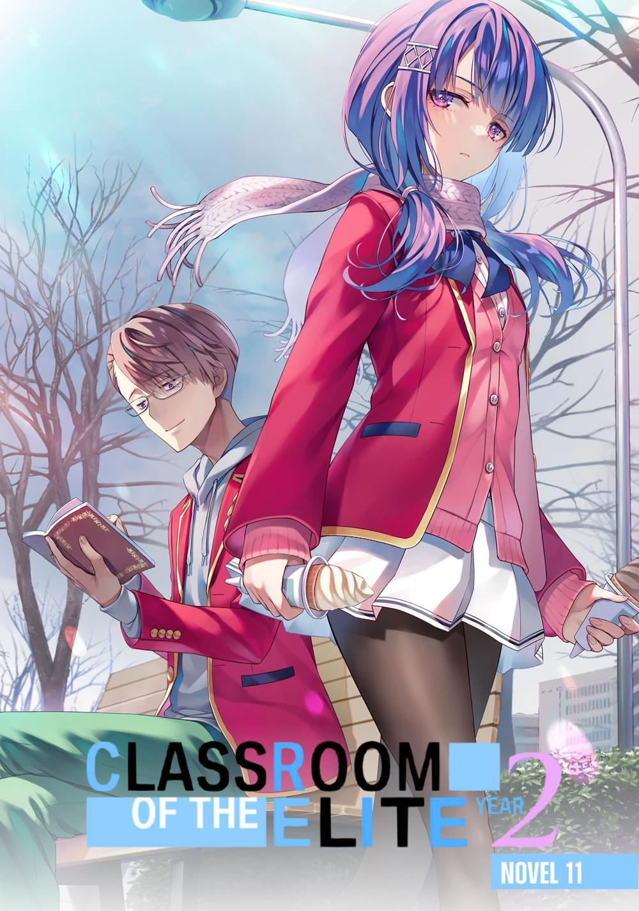
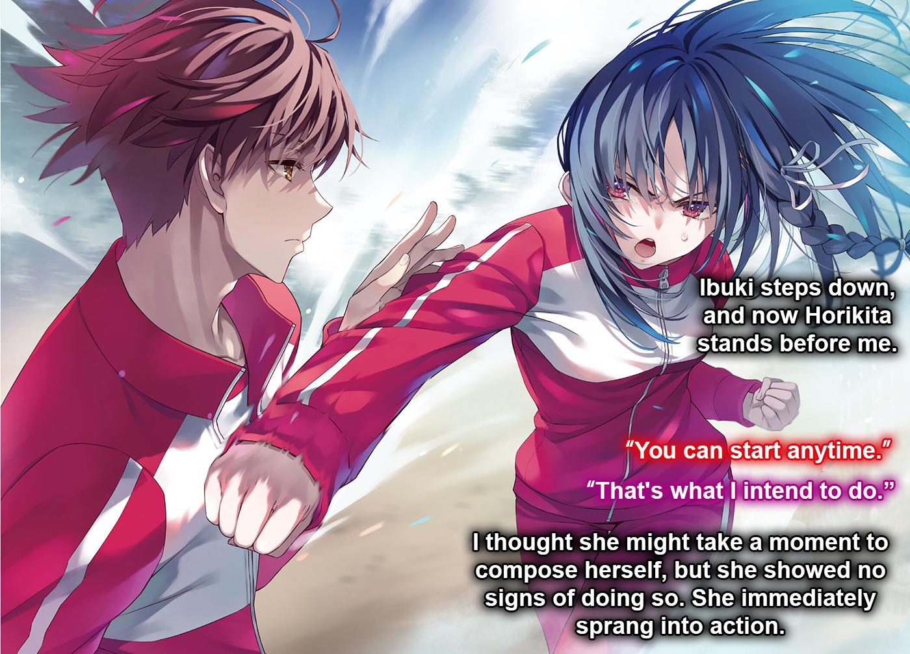
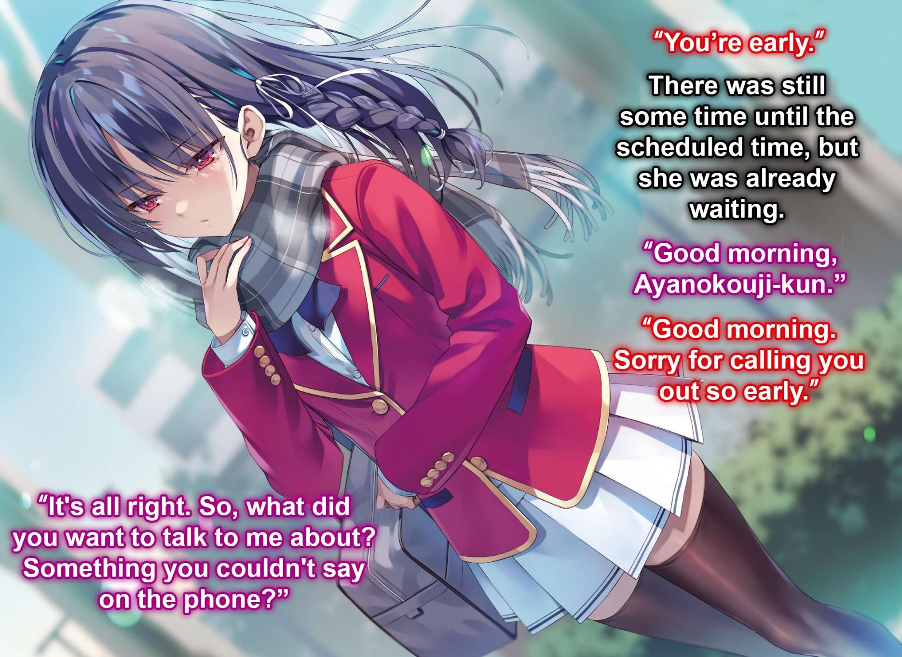
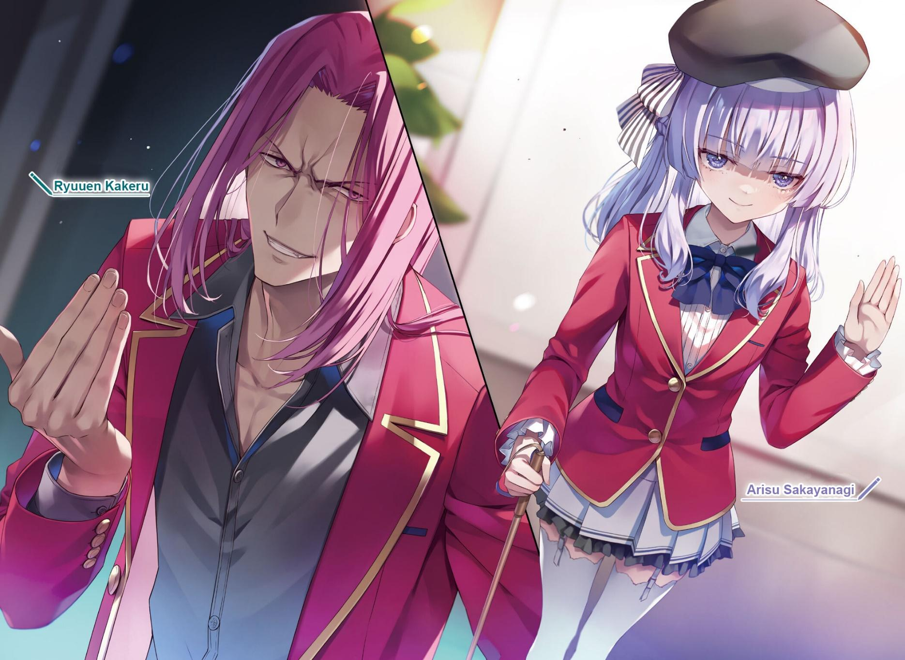
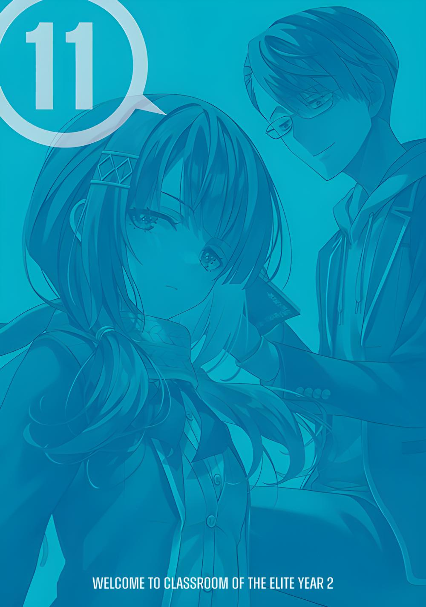
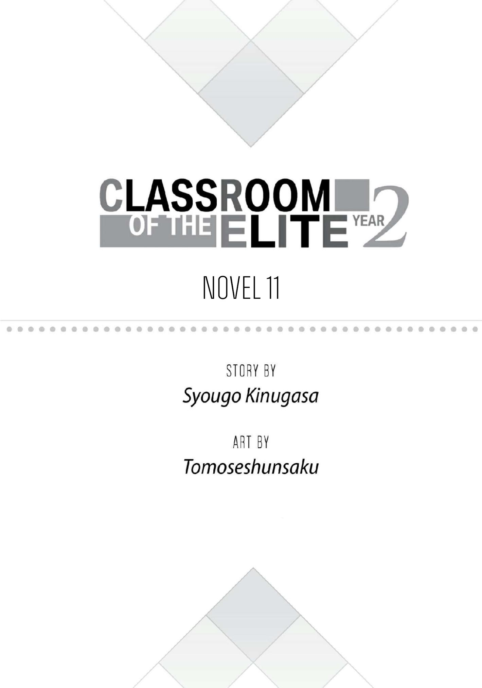
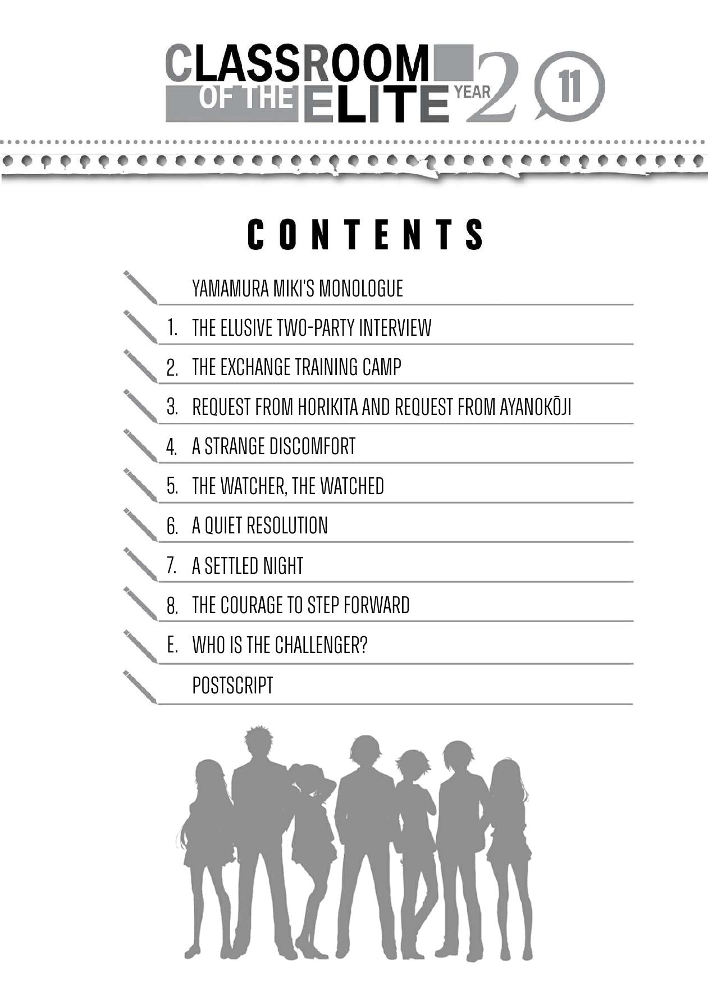
EL MONÓLOGO DE YAMAMURA MIKI
Me di cuenta de que estaba sola.
No es que le cayera especialmente mal a nadie. Simplemente no llamaba la atención de nadie.
Pasaba desapercibida, carecía de presencia.
Antes de gustarle a alguien, ni siquiera podía odiarme. Por eso siempre estaba sola.
Lo mismo me pasaba en el kinder, en la primaria y en la secundaria. No tenía amigos y pasaba mucho tiempo sola. No pude desarrollar la habilidad de hablar con la gente, así que permanecí invisible. Incluso después de entrar en la preparatoria, nada cambió.
Pero pensé que eso estaba bien.
Me obligué a creer que era mi fuerza...
Pensé que estaría bien vivir tranquilamente sola incluso de adulta. Aún así, sin duda estoy aquí.
—...Después de todo... No creo que perder le siente bien a Sakayanagi-san...
—¿Por qué no intentas decírselo? Nadie tiene derecho a criticar tus acciones.
¿Qué es esta sensación, esta emoción que se está filtrando en mi corazón?
No lo sabía. Simplemente no lo sabía. -Hasta este día.
LA ENTREVISTA OCULTA DE DOS PERSONAS
HABÍA PASADO POCO TIEMPO desde que terminó el examen especial de supervivencia y eliminación.
Debido a su posición cercana a Sakayanagi, el hecho de que Kamuro se convirtiera en una nueva expulsada sorprendió a los estudiantes de segundo año. Sin embargo, como Kamuro no tenía amigos íntimos de otras clases, el shock no duró mucho.
Pero esa no fue la única razón. Se estaban acostumbrando a la sensación. Esa implicación no podía ser ignorada.
Cada vez eran más insensibles al dolor de perder a un camarada.
En cuanto llegó febrero, se anunciaron la fecha y los detalles de la anunciada entrevista para dos personas.
Se dijo que hablarían unos 15 minutos por persona a lo largo de cinco días. El tiempo necesario para la entrevista se garantizó haciendo que las clases de la tarde fueran de auto aprendizaje y aprovechando las horas extraescolares, y se convocaba a los alumnos a una sala aparte cuando fuera necesario.
Debido a la puesta de sol, la vista fuera de la ventana del aula había cambiado mucho.
Hoy era el quinto y último día, el de mi entrevista con dos personas. Me asignaron el último turno.
Mientras esperaba en el aula, recibí instrucciones del profesor por teléfono para que fuera a la sala de orientación profesional, así que decidí ir inmediatamente.
Apenas quedaban alumnos en la escuela, y los únicos con los que me crucé eran estudiantes que volvían de las actividades del club.
Cuando llegué frente a la sala de orientación profesional, apreté ligeramente la mano y golpeé suavemente tres veces con la primera articulación del dedo.
Naturalmente, oí una voz de Chabashira-sensei que me permitía entrar.
—Con permiso.
Cuando abrí la puerta silenciosamente, vi a Chabashira-sensei sentada en su escritorio, pasando las yemas de los dedos sobre su tableta.
—Por fin estás aquí. Siéntate.
Tras un rápido vistazo, volvió a mirar su tableta.
—Parece ocupada.
—Como profesora, no puedo evitar estar ocupada en estas fechas. Pero me siento un poco mejor sabiendo que las entrevistas con dos personas terminarán hoy. Fue una buena decisión dejar a los dos bichos raros para el final.
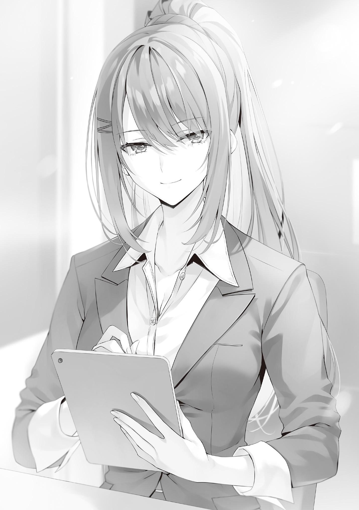
Después de contestar, me indicó que me sentara, así que lo hice en el asiento vacío que había al otro lado del escritorio.
—¿Dos bichos raros, dice?
—¿Qué, te escandaliza que te traten al mismo nivel que a Koenji?
—Mentiría si dijera que no he pensado nada al respecto.
Chabashira-sensei se rió y colocó su tableta sobre el escritorio.
—¿Crees que Koenji es más bien un bicho raro? Bueno, puedo entender por qué piensas eso, pero para mí, no hay mucha diferencia. Tú también eres un bicho raro.
Al parecer, así era como me percibían los profesores. No me faltaron ganas de negarlo, pero decidí soportarlo y dejarlo pasar.
—Bueno, no tengo muchas oportunidades de hablar con cada alumno.
Antes de hablar de tus planes para el futuro, hablemos de tu vida escolar. Si hay algo que quieras que la escuela mejore, me gustaría oírlo.
—No tengo nada en particular. Como individuo, estoy satisfecho.
—Ya veo. ¿Tienes algún problema en tus relaciones con tus amigos, o algo que quieras consultar?
—No tengo.
Sin dudarlo, seguí respondiendo, y Chabashira-sensei mostró una sonrisa ligeramente amarga.
—La mayoría de los alumnos dan una o dos opiniones, o al menos muestran algún signo de pensar, aunque no tengan ninguna. No creo que te estés conteniendo...
Se mostró un poco confusa por mi respuesta más rápida de lo esperado, pero no podía hacer nada.
—En realidad no tengo ninguna queja.
Si tuviera alguna petición, seguramente se la habría transmitido sin dudarlo.
—Bueno, si es así, está bien... ¿pero de verdad no tienes nada?
Como profesora titular, su preocupación afloró, y siguió comprobando una y otra vez.
—No tengo nada. Estoy satisfecho con mi vida escolar y no hay ningún problema en particular.
Se mostró incapaz de ocultar del todo su preocupación, pero, por el momento, decidió tomar al pie de la letra las palabras de su alumno. Comenzó a teclear eso en su tableta.
—Chabashira-sensei, usted también ha cambiado bastante.
Tal vez sintió que aquello tenía sentido para ella, ya que mostró una sonrisa amarga junto con un suspiro.
—No creo que haya cambiado. Pero puede que me haya vuelto más honesta que antes.
El examen especial por unanimidad que ella misma experimentó como estudiante.
Y el examen especial por unanimidad que experimentó como profesora.
Lo que ganó y perdió con esas dos experiencias.
A principios del año escolar, me daba nostalgia pensar que ni siquiera podía imaginarme a la profesora que tenía delante sonriendo.
—...En fin. Si hay algo que te preocupe en tu vida escolar, no dudes en decírmelo.
—Entendido.
Tras mi respuesta, la conversación inicial terminó poco después, y pasamos al tema principal de la reunión de dos personas.
—Me gustaría saber si esperas cursar estudios superiores o conseguir un trabajo. Si ya te decidiste, por favor, dímelo.
Para los estudiantes de preparatoria, esta encrucijada supone un importante punto de inflexión en la vida. Por eso los profesores tenían que mostrar a los alumnos el camino correcto, para que no se perdieran.
Sin embargo, lo más probable es que no pudiera cumplir las expectativas de Chabashira-sensei.
—Creo que mi familia decidirá qué hacer con mi futuro. No creo que haya nada que discutir aquí.
—¿Tu familia decidirá? En otras palabras, ¿seguirás el plan de tu padre?
Los datos de la escuela mostraban que mi madre no estaba presente.
—Sí.
—Ya veo. Es un caso raro, pero no es que no haya alumnos que prioricen los deseos de sus padres. Por lo general, nos informan con antelación de si quieren cursar estudios superiores o conseguir un trabajo. Esta escuela siempre está abierta a la comunicación con los padres, y hay muchos casos en los que los padres transmiten sus ideas a sus hijos. Pero hasta ahora, no hemos recibido ninguna consulta sobre seguir estudios superiores o conseguir un trabajo por parte de tu familia.
En efecto, sería extraño que no tuviera planes fijos, aunque siguiera a mis padres.
Pero para mí, que no voy a cursar estudios superiores ni a conseguir trabajo, sería innecesario informarles.
Sin embargo, sería imposible que Chabashira-sensei entendiera ese escenario.
—Creo que está bien.
—Dices que está bien... pero si quieres cursar estudios superiores, ya deberías haber empezado a planificarlo. El esfuerzo de hacer exámenes a un nivel que coincida con el nivel de la universidad a la que quieres ir...
Chabashira-sensei empezó a hablar como si estuviera exasperada, pero se detuvo a mitad de la frase.
Entonces, enderezó su postura y me miró a los ojos.
—No sé mucho de tu pasado. Creo que fue un error por mi parte fingir que lo sabía e intentar aprovecharme de ello. Pero ahora, como profesora titular, quiero conocer a fondo las habilidades de los alumnos que tengo a mi cargo. Es mi deber.
—Lo comprendo. No tengo intención de interferir en eso.
No puedo ver bien la pantalla de la tableta debido a los reflejos, pero si deja respuestas en blanco, culparán a Chabashira-sensei cuando lo presente a la escuela.
Y seguramente dependerá de la escuela, pero el hecho de que los planes de futuro de un alumno se hicieran realidad o no, de que pudiera acceder a una universidad o a un trabajo de alto nivel, eso a veces puede estar relacionado con las notas y las evaluaciones de un profesor.
—Dime, si tus padres quieren que sigas estudios superiores, ¿puedo suponer que tienes capacidad para ello?
Respondiera lo que respondiera, el futuro no cambiaría.
Pero era cruel rebajar innecesariamente su evaluación por culpa de una existencia ajena como yo.
En todo caso, era mejor darle a Chabashira-sensei una respuesta útil.
—Creo que puedo aprobar en cualquier universidad.
—...¿De verdad? Normalmente, advertiría contra una afirmación tan ridícula, pero como eres tú quien lo dice, debe de ser verdad. Puedo concluir eso.
Chabashira-sensei, que cedió sin ninguna objeción, continuó.
—Por lo visto has recibido una educación bastante elitista. Si eres tan inteligente como para afirmarlo sin vacilar, me gustaría que contribuyeras más a la clase de forma regular... pero dejemos eso de lado por ahora.
Tras terminar de teclear en su tableta lo que acabábamos de hablar, Chabashira-sensei levantó la vista.
—Entiendo la situación actual. Pero Ayanokouji, ¿cuál es tu opinión?
Entiendo que tengas en cuenta los deseos de tus padres, pero ¿no tienes una visión de futuro a la que quieras aspirar?
—No la tengo. Aunque la tuviera, por desgracia, no tengo derecho a decidir.
En cuanto a eso, era una discusión inútil en la que perder el tiempo.
—Lo siento. Puede que haya sido una pregunta desagradable.
—No me molesta. De hecho, de momento no tengo sueños ni esperanzas.
Si encuentro algo a lo que quiera aspirar en el futuro, preguntaré por ello.
—Ya veo. Así que por ahora, seguirás los deseos de tus padres. Entonces la reunión de tres personas tendrá lugar durante las vacaciones de primavera después del tercer trimestre. ¿Está bien decidir oficialmente el plan entonces?
—Está bien.
Sin embargo, una reunión de tres personas con la participación de un padre seguramente no ocurriría.
En el mejor de los casos, el mensajero de ese hombre vendrá y tendrá una conversación sin sentido. Era obvio.
No había forma de que sacara a colación algo relacionado con la Habitación Blanca.
—Tu reunión de tres personas está programada para el 1 de abril. Verás a tu padre por primera vez en mucho tiempo. Si es necesario, también podemos tomarnos más tiempo. Quiero que pienses en ello como una buena oportunidad para hablar libremente de tu futuro.
Hablaba como si no tuviera la menor duda de que mi padre vendría.
No, ¿es realmente así?
—...¿Puedo preguntarle algo?
Pensé que era poco probable, pero decidí preguntar porque creí que valía la pena comprobarlo.
—¿Hmm?
—¿Va a venir mi padre de verdad? ¿No es otra persona? ¿No un apoderado?
Incapaz de captar mi intención, Chabashira-sensei asintió mientras lucía desconcertada.
—Sí, eso es lo que escuché.
—Pensé que él habría rechazado inmediatamente la idea de una reunión de tres personas"
Mientras parecía perpleja, Chabashira-sensei pronto mostró cierta comprensión.
—Efectivamente, cuando le informé por primera vez de la reunión de tres personas por correo electrónico, me contestó que tenía intención de enviar a un apoderado debido a su apretada agenda. En ese sentido, tu afirmación es correcta. Sin embargo, cuando le informé de la fecha concreta de la reunión tripartita partiendo de esa premisa, la situación pareció cambiar.
Mientras reconfirmaba en su tableta por si acaso, continuó.
—Me llamó y recibí como respuesta que tu padre te visitaría directamente.
Lo escuché directamente de él; no hay error.
—...Eso es inesperado.
¿Qué clase de giro es este? Ese hombre no se retractaría tan fácilmente de su respuesta anterior. Al menos ese era el caso de nosotros, los estudiantes de la Habitación Blanca. A pesar de declarar que no se reuniría conmigo en esta escuela, ¿por qué se molestaría en asistir a una reunión de tres personas?
Por el hecho de que al principio se negara, debería haberse desarrollado como yo lo imaginaba.
Sin embargo, ¿cambió de opinión y expresó su intención de venir él mismo?
Era imposible no pensar que había gato encerrado.
—Dijo que recibió una llamada de mi padre, ¿de qué hablaron exactamente?
—¿De qué? No tuvimos ninguna conversación profunda. Nombró a un apoderado, pero dijo que podía asistir a la reunión de tres personas porque tenía tiempo. Sin embargo, dijo que quería que le informaran si había algún cambio en el horario que le habían dado, aunque fuera pequeño. Eso no es raro en padres ocupados, ¿verdad?
—Así es.
Normalmente, él no habría tenido tiempo de asistir a una reunión de tres personas, pero miró el horario establecido y decidió que podía hacerlo, así que se puso en contacto con la escuela. Era fácil de entender y no tenía nada de extraño.
—Pero... oh no, eso no es algo que pueda decirte así como así.
Chabashira-sensei empezó a decir algo pero luego se detuvo.
—¿Pero qué?
Buscaba una pista, así que le pregunté por el resto de la frase.
—No es gran cosa. Pero me pareció un poco extraño. Es natural que quieras que te avisen si cambia el horario, pero eso suele limitarse a cambios en la fecha y hora de la reunión de tu hijo. Sin embargo, tu padre dijo que quería que nos pusiéramos en contacto con él si había un mínimo cambio en el horario de toda la clase que me asignaron.
—¿Incluso si, por ejemplo, se cambia la reunión de un compañero no relacionado en un día diferente?
—Así es. Pensé que estaba siendo un poco paranoico, pero no hay inconveniente en informarle.
Así que Chabashira-sensei estuvo de acuerdo sin pensar demasiado.
Sin embargo, si aquel hombre tenía una razón para participar en la reunión de las tres personas, había un motivo.
—¿Podría enseñarme el horario de la reunión de tres personas, si es posible?
—¿El programa? Bueno, supongo que no hay nada malo en mostrarlo.
Chabashira-sensei accionó su tableta y giró la pantalla hacia mí.
—Este es el horario de las reuniones tripartitas de toda la clase.
Básicamente está estructurado de la misma forma que las reuniones de dos participantes. Es decir, tú estás programado para el último turno.
26, 28, 30 de marzo y 1 de abril.
Ese era el programa de las reuniones tripartitas que tendrían lugar durante cuatro días.
Como dijo Chabashira-sensei, mi nombre aparecía en la lista al final del día 1, a las 5 de la tarde.
—No hay nada especial que ver. ¿Ya terminaste?
—Sí, gracias.
Chabashira-sensei volvió a girar la pantalla de la tableta que me había estado mostrando.
—No te diré que no te pongas nervioso por la relación con tu padre. No conozco los detalles, pero no hay padre que no quiera a su hijo. Debió sentir que no podía dejarte solo.
—Eso puede ser cierto.
Respondí así, ya que no tenía sentido hablar de lo que ella pensaba y de ese hombre aquí.
Pero en realidad, no podía imaginármelo apareciendo en la reunión tripartita por semejante motivo.
¿Quería expulsarme con sus propias manos, incapaz de dejarlo en manos de otros?
Aun así, ya debería haberse dado cuenta desde la vez anterior de que era inútil enfrentarse a mí directamente.
Aún no sabía con qué propósito aceptó asistir a la reunión tripartita.
Parte 1
Así que tuve que prepararme en una hora.
Primero, tenía que volver a mi habitación y lavarme las manos. Cuando salía del ascensor mientras hacía planes detallados en mi cabeza...
"Eh, llegas tarde a casa, Ayanokouji".
Una rara figura me esperaba apoyada en la puerta de mi habitación.
Era Hashimoto Masayoshi, un estudiante de la clase de Sakayanagi. Se dio unos ligeros golpecitos en la rodilla, como si llevara mucho tiempo esperando.
—Viendo que subiste solo, no parece que tuvieras una cita.
Preguntó, confirmando que el ascensor que cerraba estaba vacío.
—Hoy era el día de la reunión de dos, así que llegué tarde.
—Ah, ya veo... No había considerado esa posibilidad. Tengo algo que hablar contigo. ¿Tienes tiempo?
Sacó a colación la razón por la que había estado esperando mientras reflexionaba sobre su propio descuido.
—No parece una conversación adecuada para estar de pie.
—Tienes razón. Me ayudaría si pudieras considerarlo.
Entonces no tuve más remedio que considerar sus intenciones.
—Si no te importa mi habitación, puedes entrar.
Me pareció que me quitaría tiempo para preparar la cena, pero podía reservar un poco de tiempo.
No encontré ninguna otra razón para negarme, así que decidí invitar a Hashimoto a pasar.
—Siento todo esto.
—Puedo escuchar lo que dices, pero no esperes demasiada hospitalidad.
—Ahora mismo es más que suficiente para mí.
Se rió con autodesprecio y me dio un ligero golpecito en la espalda mientras yo introducía la llave en el ojo de la cerradura.
Cuando abrí la puerta, miré un momento hacia la escalera de emergencia.
Sentí una presencia que me observaba, pero era difícil determinar si Hashimoto era consciente de ello o no. De momento, entré sin preocuparme por ello.
—Perdona... oh, la habitación de un novio sí que es diferente.
Nada más entrar en la habitación, silbó al ver los rastros de Kei esparcidos por ahí.
—¿Puedo sentarme en la cama? ¿O es demasiado?
—¿Demasiado? Puedes hacer lo que quieras.
Con eso, Hashimoto vaciló pero se sentó lentamente en la cama.
Dudaba en sentarse en la cama de otra persona. Era considerado.
—¿Entonces? ¿Cuál es la historia?
—Es un asunto bastante pesado. Estoy luchando con qué hacer conmigo mismo. Quiero que escuches mis preocupaciones.
Daba la impresión de que iba directo al grano, sin rodeos, pero noté un inconveniente al principio. Sin embargo, sería descortés interrumpirlo desde el principio, así que decidí dejarlo continuar.
—¿Qué quieres decir con 'qué hacer conmigo mismo'?
—¿No te has enterado ya? ¿Qué causó la expulsión de Kamuro-chan?
—He oído algunos rumores. Alguien filtró información a Ryuuen durante el examen especial. Como resultado, la Clase A terminó en el fondo.
—Exactamente. Si la información se filtra, no hay oportunidad de ganar.
Como dijo Hashimoto, el factor decisivo en la derrota fue la traición causada por la fuga de información. Si no hubiera habido un infiltrado, había muchas posibilidades de que la Clase A hubiera evitado estar en el fondo.
—Fui el primero del que se sospechó. Ahora, cada día, me miran con recelo varias personas de la clase.
De hecho, no se limitaba a la clase. El acto de traicionar a tu propia clase era una conmoción y una amenaza.
—Para ser honesto, yo también escuché tales rumores. Simpatizo con la situación actual.
Actualmente, el rumor más circulado era que Hashimoto traicionó a la Clase A.
Él supuestamente contactó a Ryuuen e hizo un acuerdo secreto. Considerando los movimientos sospechosos que había mostrado en el pasado, era una conclusión natural.
Sin embargo, no había oído nada con pruebas concretas. En la actualidad, por un proceso de eliminación, se estaba sugiriendo que podría haber sido Hashimoto.
—¿No tengo más remedio que aceptarlo? ¿Es por mi comportamiento diario?
—Si no quieres aceptarlo, puedes tomar medidas para demostrar tu inocencia.
—Eso me pregunto yo. Dicen 'inocente hasta que se demuestre lo contrario', pero creo que eso es posible en el mundo real. Si alzas la voz en una situación en la que se sospecha de ti, la sospecha no hará más que aumentar.
Los que ya decidieron en sus cabezas que eres el culpable sin ninguna base dudarán incluso de tus gritos de dolor.
Esto era exactamente lo que se denominaba el fenómeno de la cámara de eco.
Alumnos con opiniones similares se reúnen y creen erróneamente que tienen razón. Esta tendencia era particularmente fuerte en esta aislada escuela. Por desgracia, a menos que el propio Hashimoto pudiera aportar pruebas decisivas de que él no era el culpable, no había nada que pudiera hacer contra ese fenómeno.
—Puede que tengas razón. Elegí permanecer en silencio.
—¿Ves?
A menos que tengas pruebas claras de lo contrario, abrir la boca no cambiará la situación. Más bien, un comentario descuidado sólo servirá para despertar más sospechas.
—Me dan ganas de llorar.
Incluso mientras fingía apretar los ojos, tomé la palabra.
—¿No es suficiente apertura? ¿Por qué traicionaste a Sakayanagi?
Ante estas palabras, los movimientos de Hashimoto se detuvieron bruscamente, y sus dedos se apartaron lentamente de sus ojos.
—Oye, déjame armarlo un poco. Me siento como un idiota por montar el numerito de pobre de mí.
—Sólo pensé que era una pérdida de tiempo. Ya es tarde y me gustaría preparar la cena cuanto antes.
Le dije esto, guardándome para mí que Kei vendría a mi habitación más tarde esta noche.
—¿Qué, tienes una cita con tu novia después?
—Algo así.
—¿Qué quieres decir con 'algo así'? Nuestra amistad debería ser más espesa que la de una mujer.
—Lo siento, pero es imposible cambiar mi horario. Además, tampoco recuerdo que tuviéramos una amistad profunda.
Cuando le dije la verdad, Hashimoto apoyó ambas manos en la cama y tomó aire.
—Bueno, si entiendes la situación con calma, está bien. Ahora me conviene más.
Tras una pausa, tocó inmediatamente el quid de la cuestión.
—¿Por qué crees que traicioné a Sakayanagi?
Antes de que pudiera oír la respuesta, Hashimoto me pidió que lo pensara yo mismo.
—No lo sé muy bien. Lo único que se me ocurre es que recibiste una gran cantidad de puntos privados a cambio.
Expresé un escenario que los ajenos imaginarían. Sin embargo, era escéptico sobre si valía la pena. Ciertamente, Sakayanagi fue herido, pero sólo una vez. Y
la clase sólo perdió 100 puntos de clase. Aunque Kamuro, una ayudante cercana a ella, se retiró, sólo fue un subproducto de la prueba, y la probabilidad de que se incluyera en las negociaciones y recompensas era baja. El precio a pagar por traicionar a la clase es caro; 500.000 o 1 millón, o incluso más, sería demasiado barato.
—Lo que quiero oír no es una respuesta que se le ocurra a cualquiera, sino tu opinión.
Hashimoto parecía ser muy consciente de que no estaba respondiendo en serio.
—Lo siento, pero no estoy de humor para expresar mi opinión.
—¿Eh? ¿Por qué? ¿Porque no hay conexión entre tú y yo?
—No es por eso. Es porque no hablas en serio.
—¿Eh?
Estoy
pidiendo
consejo
en
serio.
Estoy
buscando
desesperadamente una salida.
—Si realmente estás diciendo eso, es demasiado tarde.
—Demasiado tarde...
—Alguien que no puede decidir cómo comportarse y está perdido desde el principio no traicionará a la clase.
Hacer una reverencia contra Sakayanagi equivalía a apuntar a la cabeza del general.
No era algo que se decidiera de improviso, sino después de considerar todas las respuestas posteriores.
—Ya veo. En efecto, pedir consejo sobre cómo comportarme es una tontería...
Esta fue la pega que sentí nada más comenzar la discusión.
Hashimoto se disculpó repetidamente por su error y luego retomó la conversación.
—La razón por la que traicioné a Sakayanagi fue tu existencia, Ayanokouji.
El detonante fue mi intento de persuadir a Sakayanagi para que te metiera en la clase A a toda costa.
—¿Persuadir? Difícilmente es persuadir. Es sólo un daño autoinfligido que involucra a la clase.
—Interesante expresión. Bueno, en su mayor parte es correcta.
Hashimoto respondió con una carcajada, pero no pude saber si estaba relajado o no.
Intuí que ocultaba deliberadamente sus sentimientos para esconder su vulnerabilidad.
Probablemente no quería mostrar ninguna debilidad ante mí.
Aunque me estaba diciendo algo que contenía la verdad, tenía la sensación de que seguía ocultando muchos secretos en su interior.
—Las preguntas siguen acumulándose. Para empezar, ¿traicionar a Sakayanagi metiéndome en la ecuación? ¿No crees que es una historia que haría que otros estudiantes se rascaran la cabeza con incredulidad?
—Los que se rascan la cabeza son incompetentes. No hay necesidad de modestia en esta situación. He trabajado más que nadie para reunir información y estoy convencido de que tú eres el mejor. Puedo explicártelo desde cero si es necesario, pero sería una pérdida de tu valioso tiempo.
—Aunque lo niegue, no te convencerás, ¿verdad?
—No lo haré. Tú solo tienes la capacidad de darle la vuelta a la clasificación de la clase. Es por eso que amenacé a Sakayanagi que si ella no te convencía, yo... la traicionaré de nuevo. Si ella me hubiera escuchado, habrías llegado a la Clase A y eso... habría sido sólido. La fórmula ganadora se habría completado.
Hashimoto apretó el puño con fuerza, pero su plan era demasiado temerario y poco realista.
—Odio decirlo, pero es una quimera. Aunque tuviera la habilidad que imaginas, no tendría sentido si convirtiera a Sakayanagi en mi enemiga. Además, cuando me invitaron antes, recuerdo haber dicho que lo consideraría positivamente, pero no recuerdo haber dicho oficialmente que iría.
Actuó unilateralmente sin asegurarse un acuerdo, precipitándose claramente.
—Entonces, aunque consiga garantizar una transferencia, ¿seguirás sin venir a la clase A?
—Ahora mismo sólo puedo decir que es así. No me interesa enfrentarme a Sakayanagi.
Cuando le transmití lo que naturalmente había pensado, Hashimoto pareció sorprenderse, pero murmuró: "Supongo que es así".
—La mejor respuesta habría sido 'sí', pero supongo que no es tan fácil.
El hecho de que contestara con calma sugería que había considerado plenamente la posibilidad de que yo no eligiera la clase A.
Si era así, ¿cuál era el propósito de esta traición?
Era difícil deducirlo claramente con la información que tenía en ese momento.
—Oye, ¿parezco el tipo de persona que traicionaría a la clase?
Sakayanagi fue la primera en sospechar de mí.
—Ese es tu carácter.
—Defiéndeme un poco... Sólo bromeaba. Aunque yo lo inicié, recibí una declaración de guerra directa. Normalmente, no hay una posibilidad entre un millón de que pudiera ganar.
Considerando que Sakayanagi debe tener sentimientos más fuertes hacia el traidor que la hizo lamentarse de abandonar a Kamuro de lo que Hashimoto piensa, era comprensible.
—Pero, ¿fue toda esta traición culpa mía? Pensé que estaba sugiriendo la mejor manera de graduarse de la Clase A. Simplemente tomé un enfoque demasiado duro porque ella no me escuchó. ¿Dónde está el error?
—Eres desafiante. Pero tu intuición no está equivocada. Desde luego, no hay garantía de que puedas permanecer en la Clase A en el futuro si continúas siguiendo las órdenes de Sakayanagi con su poder actual.
La diferencia en puntos de clase se estaba reduciendo gradualmente en la realidad.
—Ya veo.
—Pero también has cometido un gran error.
—¿Es convertir a Sakayanagi en mi enemigo?
—Correcto, pero equivocado. No es que hacer de Sakayanagi una enemiga sea malo. El error fue que actuaste sin ninguna seguridad de ganar, aunque hicieras de Sakayanagi una enemiga. Si las posibilidades de ganar eran escasas, deberías haber adoptado un enfoque diferente.
—Lo pensé a mi manera. Pero llegué a la conclusión de que ésta era la única manera.
—La respuesta que calculaste y dedujiste dentro de ti... no puedo asegurar que sea la correcta.
Hashimoto no negó e imaginó lo que vendría después.
—Si no puedo deshacerlo, ¿crees que seré devorado por Sakayanagi tal y como me encuentro ahora?
—Eso es probable. Si no quieres eso, la única opción que te queda es vencerla.
—¿Crees que puedo luchar y ganar contra Sakayanagi?
—Sólo para confirmarlo, con derrotar a Sakayanagi te refieres a conseguir que la expulsen, ¿verdad?
Hashimoto asintió. En otras palabras, no había camino para la reconciliación. Si era así, sólo había una respuesta.
—Por mucho que me favorezca, las probabilidades son demasiado malas incluso con mi ayuda. No puedo decir nada porque depende de los exámenes especiales en el futuro, pero en cierto sentido, ahora Sakayanagi debería querer expulsarte más a ti que a Ryuuen. Para decirlo sin rodeos, aunque tomes represalias y obligues a Sakayanagi a que sea expulsada, podrías ser eliminado junto con ella en un asesinato mutuo.
Si eso sucedía, Ryuuen podría evitar aceptar la molesta existencia del traidor Hashimoto, y al mismo tiempo, podría enterrar a un fuerte enemigo, lo cual sería matar dos pájaros de un tiro para Ryuuen.
No, aunque estuviera preparado para una muerte conjunta, era difícil derrotar a Sakayanagi.
Había una abrumadora diferencia de habilidad entre Sakayanagi y Hashimoto en este punto.
El oponente siempre estaba uno o dos pasos por delante de Hashimoto e incluso tenía un Punto de Protección.
En otras palabras, tendrías que apuñalarla dos veces para derrotarla.
Y ahora, Hashimoto sólo pensaba en luchar contra Sakayanagi.
Pero era un pensamiento ingenuo.
Entendía la sensación de querer decir que el problema se solucionaría de una vez cuando se resolviera el juego.
Pero aunque derrotara a Sakayanagi, sería sólo el principio.
Reconstruir una clase en colapso. Aquellos que vendrían por venganza. Los problemas se desbordarían uno tras otro.
Traicionó a la clase sabiendo que estaría en desventaja contra Sakayanagi sin ninguna seguridad de que yo me convertiría en un aliado.
¿Cómo podría llamar a esto sino comportamiento extraño?
—Algo que destacó en nuestra conversación es que no confías en la gente.
No lo reveló todo, y juzgó y actuó por su cuenta.
Estaría bien si tuviera éxito, pero si estuviera a punto de fracasar, no tendría a nadie en quien confiar.
—No lo negaré. Pero Ryuuen y Sakayanagi son iguales, ¿verdad? Otras personas son inútiles.
—Ellos tienen el poder de luchar por sí mismos sin actuar personalmente.
—Ahí es donde la situación regresa.
Hashimoto no era alguien sin el poder de prever el futuro.
Él sentía que eventualmente perdería si yo fuera el enemigo.
Eso no estaba mal. Pero, hasta ahora y de ahora en adelante, seguiría pensando y sacando conclusiones por su cuenta. La desventaja de no poder contar con otros fue lo que lo puso en este aprieto.
Si Hashimoto tuviera varias personas en las que pudiera confiar de todo corazón, esta situación actual podría haber sido un poco mejor.
—No quiero que pienses que me rebelé contra Sakayanagi sin ninguna posibilidad de ganar. No soy tan tonto —Hashimoto murmuró que tenía sus propias posibilidades de ganar.
Intenté escucharlo continuar, pero se limitó a mirarme y no intentó dar más detalles.
—Antes de que te cuente lo que viene a continuación, hay algo que quiero confirmar contigo.
Y así, Hashimoto me lanzó una pregunta.
¿Por qué traicionó a Sakayanagi en aquel momento y decidió jugársela?
Una pregunta para empezar la historia.
Parte 2
—Lo siento. Karuizawa viene después de esto, ¿verdad? He hablado demasiado.
—No se puede evitar. No era un tema que se pudiera dejar a medias.
—¿Puedo interpretar esto como un momento significativo?
Cuando moví la cabeza afirmativamente, Hashimoto también asintió en respuesta.
Su rostro era diferente al de antes, que mostraba altibajos, y estaba algo despejado.
Parecía como si hubiera desahogado algo que había estado conteniendo.
Decidí salir mientras despedía a Hashimoto.
—Hoy compraré la cena en la tienda.
Cuando se lo dije a Hashimoto, que estaba a punto de pulsar el botón para llamar al ascensor, paró el dedo antes de tocar el botón del piso superior e inmediatamente pulsó el botón del piso inferior.
—¿Puedo acompañarte entonces? Por supuesto, sin más charla pesada,
¿bien?
Naturalmente, Hashimoto también se notaba cansado.
Sentí la necesidad de comer algo rápido y decidí acompañarlo a la tienda.
Subimos al ascensor y bajamos al vestíbulo.
Justo entonces, nos topamos con Morishita, compañera de clase de Hashimoto, que venía de casa.
—Qué casualidad, Ayanokouji Kiyotaka.
—En efecto, una coincidencia.
Fue un momento en el que pude sentir el cambio en mi relación humana.
Me había cruzado con Morishita muchas veces durante mis dos años de vida escolar.
Antes no me importaba cruzarme con ella, pero ahora, cuando nos encontramos, los dos nos detenemos naturalmente y empezamos a hablar.
—Y el traidor, Hashimoto Masayoshi, también está aquí.
—Eh, eh, no empieces con eso. Dame un respiro.
—Lo siento. Aún no he encontrado pruebas definitivas. Me rectificaré.
Aunque corrigiera su afirmación, el hecho de que se pensara en él de esa manera no podía cambiarse.
Efectivamente era un traidor, pero Hashimoto debió pensar que era bueno que estuviera allí con él.
—Ayanokouji Kiyotaka, no pareces sorprendido.
—Es un rumor que circula desde hace tiempo. Además, a diferencia de la gente de la clase A, no me interesa tanto la verdad.
—Ya veo. Pensé que el traidor te habría contactado.
Afirmó sin rodeos lo que pensaba y especulaba, presionándome implacablemente.
Hashimoto intervino mientras yo admiraba su audacia.
—Basta ya. Está bien que sospeches que soy un traidor, pero es mejor no involucrar a extraños sin instrucciones de la princesa.
Detuvo a Morishita con un tono confiado que no parecía propio de un traidor.
—Ya veo. Pero se está haciendo tarde. ¿Adónde van ahora?
En lugar de obligar a Hashimoto a seguir hablando, Morishita dirigió su pregunta hacia mí.
—Voy a la tienda a comprar la cena.
—Yo también.
—No te lo pregunté, Hashimoto Masayoshi, pero ya veo. Sin embargo, pensaba que eras una persona que suele cocinar para sí misma, Ayanokouji Kiyotaka: ¿te has enfrascado en una conversación con alguien y has perdido la noción del tiempo?
Últimamente cocinaba mucho para mí mismo, pero ¿de dónde había sacado esa información?
Las sospechas de Morishita parecían ir en aumento, y expresó sus dudas muy premeditadamente.
—Casualmente estaba en el ascensor con Ayanokouji. Parece que llegó tarde debido a la reunión de dos personas.
Tal vez pensando que sería molesto que le preguntaran por ello, Hashimoto contestó despreocupadamente.
Sin embargo, Morishita pareció sospechar aún más.
—Qué extraño. La reunión de dos personas de Ayanokouji Kiyotaka debería haber terminado hace mucho tiempo. Parece que han estado hablando mucho hoy.
Si había estado investigando los asuntos internos de la clase de Horikita, tenía un buen conocimiento de las cosas que ni siquiera Hashimoto sabía.
El intento de desentenderse parecía haberle salido por la culata.
—No, como he dije, no tengo nada que ver. No tengo ni idea de lo que estaba haciendo Ayanokouji.
—Pero llevan juntos desde que subieron al ascensor en el cuarto piso, ¿no?
Dijo esto, bloqueando mi vía de escape, y echó un vistazo al monitor del ascensor.
—Maldita sea, ¿nos estaban vigilando...?
—Puede que a otros no les importe, pero parece que has tenido mala suerte en cuanto a quién te ha visto hoy.
Hashimoto mostró una sonrisa amarga ante la situación de derrotado.
Pero no parecía nervioso o asustado por este encuentro.
—¿Así es como actúas como traidor?
—¿Eh? ¿Qué quieres decir con traidor?
—Significa que apuñala por la espalda.
Cuando ella le explicó el significado, Hashimoto dejó caer exageradamente los hombros como si estuviera decepcionado.
—Dame un respiro, Morishita. Este es un asunto completamente diferente.
—¿Qué quieres decir con 'asunto diferente'?
—No puedo decírtelo. Hay cosas de las que sólo podemos hablar los hombres, ¿no?
Intuyendo que quería apoyo, decidí seguirle la corriente.
—Si es una cuestión de género, no puedo seguir con ello. Es una forma fácil de escapar de la confrontación.
—No importa lo que diga, no sirve de nada.
Hashimoto se encogió de hombros, dándose por vencido.
Tal y como hablábamos hace un momento, cuanto más abría la boca, más sospechas despertaba.
—Bueno, está bien. ¿Puedo acompañarlos también a la tienda?
—Me parece bien, pero ¿tienes alguna razón en particular?
—Sí, seguro que habrá alguna si voy. Se me debería ocurrir algo.
Me estaba revelando que no tenía ningún motivo concreto, pero yo no tenía derecho a negarme.
Aunque me negara, nos seguiría de todos modos.
—De acuerdo. Bueno, ya que llegamos a esto, vayamos juntos como un grupo de tres.
—Entonces los seguiré.
Morishita, que se había dado la vuelta, empezó a caminar delante.
—¿Por qué toma la delantera...? Es tan incomprensible como siempre. Lo siento por esto, Ayanokouji.
—No pasa nada. No es para tanto.
De repente, me pregunté cómo percibían a Morishita en la clase A.
Su excelencia académica debería ser bien conocida en la OAA.
Pero, sinceramente, no sabía nada más. Sería buena idea preguntar.
—¿Qué clase de estudiante es Morishita en clase?
—Es tal y como la ves. Es lista pero excéntrica, y siempre actúa sola.
—¿Tiene amigos íntimos?
—No que yo recuerde.
A juzgar por la afirmación de alguien siempre ocupado en recabar información, parecía muy creíble.
Observando la espalda de Morishita, Hashimoto se tocó la barbilla con los dedos índice y pulgar, con cara de desconcierto.
—Por eso es tan inusual. No suele ser de las que inician una conversación como ésta.
Después de murmurar eso, me miró de reojo, así que tomé la iniciativa.
—¿No estará vigilando al traidor?
—Bueno... eso no es imposible... pero tampoco te estás conteniendo,
¿verdad?
—Si tengo que ser considerado, lo seré.
—Maldición. Lo que me resulta curioso es que, a mi entender, Morishita no parece ser una seguidora extrema de Sakayanagi. No es cercana ni distante a ella. Pero no es de las que toman la iniciativa y resuelven los problemas por su cuenta. En otras palabras, no veo ninguna razón para que investigue.
¿Morishita no es de las que toman la iniciativa? ¿Es realmente así?
Aunque nuestras interacciones habían sido limitadas, mi impresión era la contraria.
Parecía más bien una persona que trabajaba activamente sola para resolver los problemas.
Por supuesto, era posible que Morishita cambiara de opinión después de presenciar la derrota de Sakayanagi, que había estado defendiendo firmemente su posición hasta ahora.
Sin embargo, era difícil creer que Hashimoto ignorara por completo ese detalle.
Hablaba sin dar muestras de engaño, mezclando verdad y mentira en proporciones similares.
Incluso la situación actual, los tres caminando juntos, podría no ser una mera coincidencia.
Hashimoto podría haber querido que Sakayanagi se diera cuenta indirectamente de que había contactado conmigo.
Puede que sea seguro asumir que tenía ese plan.
Si no quería que lo descubrieran, no habría esperado delante de mi habitación, donde podría haber llamado la atención. Ambos conocíamos la información de contacto del otro, así que podíamos comunicarnos discretamente todo lo que quisiéramos.
Hashimoto, el traidor, tenía un propósito al hacer saber a Sakayanagi que se había puesto en contacto conmigo, directa o indirectamente.
Por supuesto, sólo Hashimoto sabía la verdad, pero había otras cosas que podía deducir.
La verdad y las mentiras que Hashimoto reveló en mi habitación.
Todas sus acciones estaban ligadas a su propio beneficio.
Quería ser el único en beneficiarse.
Quería ser el único en sobrevivir.
Quería ser el único en ganar.
Si un pacifista supiera esto, Hashimoto seguramente sería despreciado como una entidad maligna.
Cuanto más sabía de Hashimoto, más simpatizaba y estaba de acuerdo con él.
Porque vivía de acuerdo con su naturaleza.
Normalmente, para llevar a cabo tal maldad, uno necesitaba un poder innegable.
Pero Hashimoto no tenía ese poder.
Así que, como un camaleón, aprendió a cambiar de color para adaptarse a su entorno.
Intentando mezclarse con el medio para sobrevivir.
Eso era exactamente lo que estaba haciendo en este momento y lo que había estado haciendo hasta entonces.
Salimos del vestíbulo y los tres caminamos hasta la tienda.
Luego entramos, tomamos una cesta y me puse en contacto con Kei por teléfono.
Mientras escuchaba lo que ella quería, decidí que yo también cenaría.
Las guarniciones para microondas de la tienda estaban deliciosas.
Mientras compraba, me encontré con alguien que entró después de nosotros en la sección de bebidas.
—Ah... H-hola...
La que me saludó fue Yamamura Miki, una chica de la misma clase que Hashimoto.
—No esperaba verte aquí.
—Sí, supongo que sí.
Asintió Yamamura, que se mostró algo incómoda ante mi respuesta.
Efectivamente, tal parecía que era Yamamura quien había estado observando a Hashimoto en las escaleras de emergencia.
Incluso después de salir del dormitorio, apenas había notado su presencia y no sabía quién era.
Por eso pensé que podría ser Yamamura, y estaba en lo cierto.
No sabía si actuaba sola o si Sakayanagi se ocultaba tras ella, pero teniendo en cuenta que había estado a la espera antes de que yo volviera a mi habitación en ascensor, lo más probable era que hubiera estado vigilando a Hashimoto.
Además, no encontraba ninguna razón en particular por la que Yamamura pudiera estar vigilándome en secreto.
—Oh, es Yamamura. Qué coincidencia.
Hashimoto, que se dio cuenta de que hablábamos, se nos acercó con una taza de fideos al curry en la mano.
—Buenas noches... Hashimoto-kun.
—Es la primera vez que te veo usar una tienda.
Me preguntaba si esta forma de hablar era sólo un hábito o si había percibido algo.
Mientras expresaba una información cuya credibilidad desconocía, observó la reacción de Yamamura.
—Yo... Uso bastante la tienda... una o dos veces por semana... pero no destaco... Lo siento.
—Oh, no, lo siento si hice algo mal...
Hashimoto intentó sondearla pero acabó disculpándose a toda prisa ya que señaló la falta de presencia de Yamamura.
—Es raro ver a Yamamura Miki hablando con un chico.
—¿De verdad eres de las que dicen eso, Morishita?
—Sólo tengo un poco de curiosidad por Hashimoto Masayoshi. ¿Es amor?
—No me tires a propósito debajo del autobús de esa manera... Bueno, supongo que Yamamura también sospecha de mí.
¿Es así? En respuesta a una mirada tan indagadora, Yamamura bajó la mirada y desvió los ojos.
El pesado silencio no encajaba con el ambiente de la tienda ni con la alegre música, creando un sonido discordante.
Quien rompió el silencio no fue Hashimoto ni Yamamura, sino Morishita.
—Compremos juntos ya que estamos todos aquí. No te importa, ¿verdad?
—Eh... sí... si les parece bien... Quiero decir...
Su falta de lectura del ambiente desde el principio parecía haber valido la pena.
Sin esperar su respuesta, Yamamura terminó comprando con nosotros.
Bueno, después de todo, una tienda de conveniencia era un lugar para ir de compras. No era extraño que lo hiciéramos.
No solía ver a Yamamura hablando con otros estudiantes, pero por lo visto hasta le costaba hablar con sus propios compañeros.
Morishita la llevaba de un lado a otro y la obligaba a comprar los artículos que le recomendaba.
Y sin poder rechazar ninguno, metió tres o cuatro artículos en su cesta.
—No deberías presionarla demasiado.
—¿Por qué no? Yamamura Miki acepta encantada mis recomendaciones.
—No creo que esté contenta para nada. A mí me parece preocupada.
—¿Es así?
—Um, uh...
Sin saber qué responder a ninguna de las dos partes, Yamamura se quedó sin palabras.
—¿Te estoy obligando a comprar algo?
—No, eso no es...
Yamamura retrocedió ante la mera presión de las palabras, y se tragó cualquier palabra de desafío.
—¿Esto no te gusta? Bueno, déjame darte mi siguiente recomendación. Es un secreto para los demás.
Aunque no era una empleada de la tienda, Morishita estaba intentando que comprara el siguiente producto.
Intentó sacar un bote de jugo de uno de los refrigeradores.
—Siento interrumpir su amistosa charla, pero ¿podrían moverse un poco?
Mientras hablaban entre ellas, un nuevo cliente se detuvo en la zona de bebidas.
Morishita se fijó en ella, pero Yamamura, que estaba cerca, no la vio, y sus hombros chocaron ligeramente.
—Oh, lo siento.
La tienda no era muy espaciosa, así que si se reunían varias personas, podían estorbar a otros clientes cuando estaban eligiendo artículos.
No fue un gran choque, pero Yamamura se disculpó y abrió paso.
—No, fui yo quien no se dio cuenta. Lo siento.
Agitó suavemente su larga melena plateada y sacó una botella de té verde.
—Me gusta el té de esta marca. Puedes sentir el umami y el aroma como si estuviera preparado en una tetera, ¿verdad Ayanokouji?
a que dirigió su mirada hacia mí, hablando como la promotora de una marca de bebidas, fue Kiryuuin Fuuka, de la clase 3-B.
—Nunca he probado esa marca, así que no puedo responder.
—Eso es una lástima. Deberías probarla si tienes oportunidad.
—¿Te vas a casa ahora, Kiryuuin-senpai
—Sí. Se está haciendo un poco tarde. Pensé en pasar por la tienda hoy.
¿Es esta estudiante... tu nueva novia?
—No, no lo es.
—Ah, um... Soy Yamamura...
—Soy Morishita Ai.
—Yamamura y Morishita, ¿eh? Están en la misma clase que Ayanokouji?
—No, están en la clase A.
—¿Oh? Es bueno tener un círculo amplio. Deberías apreciar a tus amigos.
—¿Eres de las que dicen eso, Kiryuuin-senpai?
Ese fue un consejo inesperado de alguien que destacaba entre los estudiantes de tercer año por ser distante.
—Encantado de conocerte, Kiryuuin-senpai. Soy Hashimoto, también de la clase A.
Hashimoto la saludó, interrumpiendo a Kiryuuin que miraba a Yamamura, y extendió su mano.
Kiryuuin asintió, rozando ligeramente su mano.
—Me acordaré de los tres.
Después de una breve conversación, Kiryuuin terminó de pagar y salió de la tienda.
Era un poco sorprendente que Kiryuuin , que no parecía interesarse por los demás, dijera que se acordaría de los tres, aunque sólo fuera una formalidad.
Puede que no significara mucho.
—Eres cercano a Kiryuuin-senpai? Ella es famosa por no juntarse con nadie.
—Yo no diría que somos íntimos.
Hashimoto continuó vigilando la espalda de Kiryuuin mientras ella se dirigía hacia el dormitorio.
CAMPAMENTO DE INTERCAMBIO
ERAN las 9:30 de la mañana de un jueves. Una caravana de autobuses estaba estacionada.
Mientras olían débilmente los gases de escape del motor en marcha, los estudiantes subían con pasos ligeros.
Para muchos alumnos de segundo año, salvo los que salían de excursión para actividades de clubes y competiciones, ésta era la tercera salida del año tras el examen de la isla desierta y la excursión escolar; un campo de entrenamiento para todos los años.
Sin embargo, se anunció con anticipación que el campamento de entrenamiento mixto de este año era muy diferente, y su naturaleza había cambiado por completo, aunque se incluyera en la categoría de "campamentos" en cuanto a formato.
Por lo tanto, no se utilizó el término 'examen especial'.
Antes de comenzar el viaje, lo que preocupaba era el número de autobuses preparados para los alumnos.
Normalmente, era un autobús por clase. En otras palabras, si participaban los tres grados escolares, serían 12 autobuses.
Sin embargo, esta vez sólo había nueve autobuses reunidos.
Pero el misterio se resolvió inmediatamente al mirar a los alumnos que estaban a bordo.
Sólo había un autobús preparado para los alumnos de tercer año.
Al parecer, el número de estudiantes reunidos era muy reducido, sólo unos 20.
No podía asegurarlo porque no veía las caras de todos, pero por lo que pude ver, me pareció que cinco alumnos de cada una de las cuatro clases, de la A a la D, fueron llamados del tercer año.
Cuando nos indicaron que subiéramos al autobús, no había una asignación específica de asientos, y nos dijeron que podíamos sentarnos donde quisiéramos.
Al oír esto, Kei se agarró inmediatamente a mi brazo.
—Me sentaré con Kiyotaka.
A pesar de recibir algunas miradas frías de algunos de los chicos, acepté y subí al autobús, tomando asiento junto a la ventanilla del lado derecho, a tres filas del fondo. Kei se sentó a mi lado.
—¿No habría sido mejor quedarte con las chicas?
—Lo haré en el viaje de regreso. Está bien estar juntos en el camino de ida,
¿no?
Pasamos la mayor parte de nuestro tiempo privado juntos, pero ella todavía quería que estemos juntos en el autobús.
No sabía qué era diferente, pero ella parecía más feliz que de costumbre.
Una vez que todos habían subido y los otros autobuses estaban listos, subió Chabashira-sensei.
—Esto me recuerda al campo de entrenamiento del año pasado. Tuvimos un montón de intercambios entre nosotros en ese momento también.
—Así es.
Un año había pasado desde entonces.
En ese momento, ninguno de nosotros pensó que nuestra relación se profundizaría tanto.
No sólo Kei, sino las relaciones con la gente que nos rodeaba también habían cambiado significativamente.
—Oh, es verdad. Ayer me enteré de que pronto van a proyectar mi película favorita. Vamos a verla juntos cuando empiece.
Kei me mostró una imagen que parecía el cartel de una película, con los ojos entrecerrados de placer.
Para Kei, no era más que una de las conversaciones casuales que sacaba a relucir con naturalidad.
Pero había algo que me molestaba.
—¿Para cuándo está previsto el estreno de la película?
—¿Cuándo? La última vez que vi el tráiler, parecía que se iba a estrenar en primavera.
—Quiero saber la fecha exacta.
—¿Eh? ¿Pasa algo? Veamos... Oh, está aquí.
La página de inicio que Kei me mostró decía que la película empezaría a proyectarse el 26 de marzo.
Afortunadamente, era antes del comienzo del nuevo año escolar, durante las vacaciones de primavera.
—Ya veo. Vamos a verla.
—¡Sí! Es súper interesante. Creo que a ti también te gustará —dijo Kei con una sonrisa, pero su sonrisa se congeló al mirarme a la cara.
—¿Qué pasa?
—No, no es nada.
Kei, que contestó y apartó los ojos de mí, empezó a prepararse para la película mirando una página que parecía ser una tabla de relaciones entre personajes mientras tarareaba una canción.
Después, cada uno de los estudiantes disfrutó del paisaje exterior mientras charlaban despreocupadamente.
Unos 20 minutos después de que el autobús saliera de la ciudad, Chabashira-sensei sujetó un micrófono y miró a los estudiantes por todo el autobús.
—Creo que ya es hora de explicar los detalles del campo de entrenamiento.
Como mencioné brevemente en la escuela, se decidió celebrar un encuentro de intercambio de aprendizaje experiencial de tres noches y cuatro días para todos los años.
Normalmente, éste sería un momento tenso, pero no había signos de tensión entre los alumnos del autobús.
Mientras escuchaban las palabras de Chabashira-sensei, disfrutaban del paisaje exterior o descansaban sus cuerpos, creando un ambiente diferente al habitual.
Como mencioné antes, no se trata de un examen especial, sino de una simple reunión de intercambio.
—Permítanme recordarles que no tomen la reunión de intercambio como un examen especial. Esta vez no habrá cambios en los puntos de clase. A menos que tengan un comportamiento que se desvíe de la vida estudiantil, probablemente no haya riesgo de expulsión. Pueden obtener puntos privados por participar en algunos juegos, pero es una participación más voluntaria que obligatoria.
Era natural que Chabashira-sensei explicara esto para enfatizarlo.
Los alumnos se habían vuelto más precavidos en su larga vida en la ANHS.
Tenían la costumbre de sospechar que podría haber algo detrás de la reunión de intercambio.
Por eso anunciaba que no era un examen especial, que los puntos de clase no cambiarían y que no les esperaban castigos como la expulsión.
Esto era lo que daba tranquilidad a los estudiantes.
—Es una pena que Ichihashi tuviera que quedarse en casa por enfermedad, pero fue una bendición disfrazada.
Hubo una sorprendente cantidad de estudiantes con mala salud debido a la prevalencia de los resfriados en esta época del año.
—Creo que algunos ya se habrán dado cuenta, pero aunque es para todos los años, esta vez sólo participan cinco representantes de cada clase de tercero.
Esto es teniendo en cuenta varias circunstancias.
Chabashira-sensei se refirió brevemente a ello, pero no entró en detalles.
—Su principal objetivo será relacionarse con los alumnos de primer año, pero no es que puedan llevarse bien con todos sólo por nuestras vagas instrucciones. En cuanto lleguen al campamento, todos los años se dividirán en 20 grupos. Los 20 estudiantes de tercer año que servirán de representantes en cada grupo ya han terminado de organizar a los miembros basándose en la lista completa de estudiantes de primer y segundo año.
Esto significaba que los grupos ya estaban decididos, y que simplemente no se nos había informado en qué grupo estaríamos.
—Ahora distribuiré el organigrama, así que recuerden a qué grupo pertenecen. Puede haber algunas diferencias en el número de personas y en la proporción de sexos, pero el equilibrio de grados y clases se ha ajustado al máximo. Los juegos se llevarán a cabo entre grupos para determinar el ganador.
Chabashira-sensei repartió las impresiones a los alumnos sentados frente a ella a ambos lados.
Los estudiantes tomaron las impresiones necesarias y se las pasaron a los estudiantes sentados detrás de ellos.
—Esta hoja impresa también incluye algunas recompensas que pueden obtener de los juegos y las condiciones para obtenerlas. Deben leerlo con atención.
—No es un examen, así que me siento más cómodo, pero sigo queriendo puntos privados. El porcentaje de victorias cambia mucho dependiendo de si entras en un buen grupo o no, ¿verdad?
—Sí.
Era natural esperar que en tu grupo hubiera tantos alumnos excelentes como fuera posible.
Por supuesto, no se sabía qué habilidades se requerirían para determinar al ganador.
Hondou, que estaba sentado frente a nosotros, se levantó y nos entregó los impresos restantes. Kei los agarró y los pasó más atrás.
—Espero estar contigo, Kiyotaka.
Las impresiones estaban recortadas en grupos de cinco, con información sobre las actividades del grupo, las recompensas por la reunión de intercambio y una lista de los nombres de los alumnos a partir de la tercera página.
Me di cuenta de que también había insertada una tarjeta doblada del tamaño de una tarjeta de presentación normal.
Afortunadamente, las impresiones se hicieron sólo para nosotros, por lo que había marcas con los nombres de los alumnos de esta clase. Así fue fácil encontrar mi nombre.
También figuraban los nombres de los ausentes. Había dos alumnos de segundo año, Ichihashi e Ichinose, pero había cuatro de primero, lo que parecía bastante. Entre ellos estaba el nombre de Ishigami.
Probablemente era una coincidencia que estuvieran mal de salud. Debido a eso, no tendría la oportunidad de relacionarme con ellos.
—Estoy en el grupo siete con Tanaka-senpai. Tú no estás ahí... pero...
Kei, que encontró rápidamente su nombre en medio de la primera página, parecía decepcionada pero algo aliviada. Me pregunto por qué.
—¿Pero qué?
—Parece que en el campo de entrenamiento compartiré habitación con las chicas del mismo grupo, y hay alguien con quien no quiero estar... Me alegro de que no estén allí —dijo. Al principio del impreso estaba escrito que, además de
los juegos, viviríamos juntos en una habitación separados por sexos. Esa debió de ser su reacción al darse cuenta.
No especificó quién, pero no había duda de que se refería a Ichinose.
En el último examen especial, le sorprendió ser nominada consecutivamente, aunque fuera parte de su estrategia.
—No es que odie a Ichinose-san ni nada, pero, no sé. Estoy un poco asustada.
Ella murmuró esto y luego me miró fijamente.
—Estás muy unido a Ichinose-san, Kiyotaka. A veces, tengo dudas sobre varias cosas.
Kei me susurró esto con una voz que nadie más podía oír.
—Así que por eso te sentías en conflicto.
—Existe la posibilidad de que termines con Ichinose, ¿verdad?
Sorprendentemente, la presencia de Ichinose parecía haber crecido negativamente en la mente de Kei.
—Parece que estoy en el grupo 20 con Kiryuuin-senpai, al final de la quinta página.
Miré rápidamente la lista de los 20 grupos, y como Chabashira-sensei había anunciado previamente, el equilibrio de la proporción de sexos era lo más justo posible, y la distribución de los estudiantes por clase era de un mínimo de uno o un máximo de tres -básicamente, dos cada uno-. Parecía lo más equitativo posible.
Sin embargo, sentí un extraño sesgo y desigualdad en algunas partes de cada grupo.
Como los demás alumnos seguían buscando sus nombres, probablemente eran pocos los que se habían dado cuenta, pero era cuestión de tiempo que surgieran preguntas.
Kei, que no se había dado cuenta de nada, seguía mirando la lista con cara de decepción por nuestra separación.
Volví a centrar mi atención en la sección de recompensas de la parte superior de la primera página.
[Recompensas por clasificación de grupo]
- 1er puesto: 30.000 puntos privados para cada estudiante
- 2º puesto: 20.000 puntos privados para cada alumno
- 3er puesto: 10.000 puntos privados para cada alumno
- 4º a 10º puesto 5.000 puntos privados por alumno
- 11º a 15º puesto: 3.000 puntos privados por alumno
- Del 16º al 20º puesto: 1.000 puntos privados para cada alumno
*Los puntos privados obtenidos en esta reunión de intercambio no se pueden transferir
*Su uso está limitado a compras dentro del Centro Comercial Keyaki
*Para recibir la recompensa, hay que cumplir las condiciones de la tarjeta de puntos Al no tratarse de un examen especial, no podíamos obtener una recompensa tan grande. Tampoco era un sistema en el que sólo se beneficiaban ciertas clases.
Incluso para los estudiantes de preparatoria, un extra de 1000 o 2000 yenes no era algo que pudiéramos ignorar, así que naturalmente, querríamos apuntar a lo más alto.
Aunque había desventajas como la imposibilidad de hacer transferencias o los limitados lugares donde podían utilizarlo, también significaba que era prácticamente imposible usarlo estratégicamente. La posibilidad de utilizarla libremente sin vacilar era una ventaja.
Los estudiantes se quedaron mirando la lista durante un rato.
—Um... Chabashira-sensei. ¿Puedo hacer una pregunta?
Sonoda levantó la mano tras hacerse una idea aproximada de los grupos.
—Tienes algo en mente, ¿verdad?
—Sí. Si vamos a jugar en grupos separados, ¿es esto... justo? Quiero decir, aunque sea imposible ser perfectamente justo, parece un poco desequilibrado... Me siento así con el grupo de Nagumo-senpai, por ejemplo.
—Los estándares de equilibrio de la OAA no se tienen en cuenta en absoluto. No sería extraño que hubiera un sesgo drástico.
Ante la pregunta, Chabashira-sensei dio una respuesta cortante.
—Vaya, es cierto. ¿No es el grupo de Nagumo-senpai bastante peligroso?
Mientras escuchaba la pregunta y revisaba la lista, Ike, que vio al grupo liderado por Nagumo, habló.
Nagumo era un conocido ex presidente del consejo estudiantil y un estudiante que mostraba calificaciones de A o superiores en la OAA.
Pero lo asombroso era que en el grupo había caras con aptitudes sobresalientes.
[Estudiantes de primer año]
● Clase A Takahashi Osamu, Toudou Rin, Amasawa Ichika
● Clase B Hagiwara Chihaya, Fukuchi Hinano
● Clase C Namekawa Azuki, Iguchi Yuri
● Clase D Tatewaki Aoi, Osaki Noa
[Estudiantes de segundo año]
● Clase A Sanada Kousei, Sawada Yasumi
● Clase B Horikita Suzune, Hirata Yosuke
● Clase C Kaneda Satoru, Katsuragi Kouhei
● Clase D Kanzaki Ryuji
Todos ellos eran excelentes en sus estudios, y se les daban bien los deportes o eran capaces de seguir instrucciones con precisión. No dudaban en seleccionar a los alumnos que podían unir al grupo.
Si hablamos de habilidades individuales, había estudiantes con habilidades sobresalientes como Sakayanagi, Ryuuen y Koenji, pero se desconocía qué tipo de química se produciría cuando se mezclaran.
¿No es este un grupo bien formado para evitar eso?
Después de ver esto, muchos otros grupos se esfumarían inevitablemente.
Si estuvieras en un grupo que tuviera a Sakayanagi o Ryuuen, estudiantes mencionados antes como ejemplos, podrían ser capaces de avanzar y ganar contra el grupo más fuerte, pero para la mayoría de los otros grupos, la derrota es inevitable. Si hubiera un juego que se especializara sólo en la habilidad académica, sería casi imposible ganar en términos de habilidad general.
—Puede que algunos de ustedes piensen que las asignaciones de grupo son un poco injustas, pero no hay nada que podamos hacer al respecto. Es natural que los estudiantes excelentes se sientan atraídos por grupos estables.
Chabashira-sensei, sosteniendo una hoja impresa en una mano, respondió con mirada severa.
Sonoda, que había preguntado, se encogió ante su expresión.
Era un argumento razonable que no podía refutarse una vez dicho.
Quizá pensando que la advertencia había sido demasiado dura, la profesora suavizó su expresión y mostró una leve sonrisa.
—Pero que sean excelentes no significa que siempre vayan a ganar.
Especialmente en este caso.
Le dijo a Sonoda que había esperanza y continuó con su explicación.
—Esta reunión de intercambio será un juego round-robin que durará tres días. Los grupos competirán entre sí, pero será un grupo contra otro, y no se revelará el orden de los enfrentamientos. Además, el contenido de los juegos se seleccionará al azar de una lista cada vez.
Chabashira-sensei continuó transmitiendo verbalmente las reglas detalladas, pero éstas pueden resumirse de la siguiente manera.
[Resumen del juego de aprendizaje experimental de la reunión de
intercambio]
● Período: Llevado a cabo durante tres días
● Día 1: 5 enfrentamientos; Día 2: 7 enfrentamientos; Día 3: 7 enfrent amientos.
※ Intervalo de 30 minutos entre cada juego.
● Método de competición: Llevado a cabo como un enfrentamiento round-robin entre los 20 grupos.
● No se revela el orden de los enfrentamientos.
● Reglas: Para cada juego, cada grupo selecciona cinco jugadores del grupo del tercer año.
● Sólo los alumnos de primer y segundo año pueden ser seleccionados como participantes en el encuentro.
● La idea fundamental son enfrentamientos de uno contra uno, y la victoria se otorga al primer grupo que consiga tres victorias.
● Los juegos continuarán para los cinco jugadores aunque la derrota esté asegurada.
● Participación ilimitada, sin restricciones en el número de veces que se puede participar.
● Contenido del juego: La escuela elegirá al azar de una lista predeterminada, y los detalles del juego se anunciarán periódicamente.
● Condiciones de victoria: Las recompensas se distribuyen en función del mayor número de victorias.
※ En caso de empate en el tercer puesto o superior, se llevarán a cabo juegos adicionales.
Como era de esperar de algo etiquetado como juego, el contenido parecía realmente liviano. Se veía claramente en la lista preparada por la escuela, con actividades únicas como 'prensado de flores' y 'fabricación de ruedas de cerámica'2, que parecían propias de un campo de entrenamiento. También había actividades basadas en juegos, como "jugar a las cartas" y "UNO", y otras deportivas, como "tenis de mesa". Por supuesto, también había algunas que requerían un poco de cerebro y que implicaban habilidades académicas, pero no parecían ser el enfoque principal.
También había actividades como arreglos florales y bonsáis.
Y todos estos juegos de la lista parecían estar disponibles para experimentar en cualquier momento, no sólo durante los combates.
También era posible que el mismo juego se seleccionara dos o tres veces.
Con la explicación detallada, todo quedó claro. Durante las tres noches y los cuatro días, la idea era interactuar con los kouhais, hacer cosas, divertirse, competir por clasificaciones y profundizar en las amistades.
Podría resultar aburrido para los alumnos que no estuvieran interesados, pero a mí, sinceramente, me hacía ilusión poder vivir la experiencia de crear cosas.
—Adjunto a las impresiones que se distribuyen en el autobús hay una tarjeta de puntos. Pueden coleccionar sellos cuando participen en diversas actividades de aprendizaje experimental en el campamento. Rellenarla es una condición para recibir recompensas, así que estén atentos.
La tarjeta de puntos era un método para fomentar la participación voluntaria en el aprendizaje experimental.
Había algunas normas, como un límite en el número de sellos que se pueden conseguir en un día y la imposibilidad de recibir varios sellos por el mismo juego, pero no me pareció algo de lo que preocuparse.
De todos modos, quería probar varias cosas que normalmente no podía hacer en la escuela.
Con el contenido explicado, incluso los grupos con poca capacidad general en la OAA podían tener muchas oportunidades.
Con estas reglas, era seguro decir que había una oportunidad de ganar contra cualquier grupo.
—Espero que quede claro que esta vez no hay que preocuparse demasiado por ganar o perder. Por supuesto, está bien aspirar al primer puesto y trabajar juntos para obtener recompensas, pero como se puede ver en la lista de los distintos juegos, lo principal son las interacciones mediante el aprendizaje experimental. Está perfectamente bien interactuar activamente con otros grupos y centrarse en profundizar las amistades.
Hasta ahora, la escuela nos había dado varias tareas y sus reglas, como si fueran exámenes especiales.
Por primera vez, reconocieron que no teníamos que ganar, y que perder también estaba bien.
—Este viaje es realmente relajante. Aunque quedemos en último lugar, nos darán 1.000 yenes.
Por ahora, muchos estudiantes, empezando por Kei, estaban aliviados por el contenido del viaje.
—Así es. El hecho de que esta vez no pase nada por perder es algo grande.
Los compañeros que recibieron la explicación empezaron a relajarse y pasaron el tiempo tranquilamente.
Algunos incluso empezaron a cantar animadamente.
—No olviden seguir los horarios de la escuela, aunque hasta cierto punto tengan libertad.
Eso fue un poco deprimente.
Kei y yo comprobamos el horario escrito en la impresión.
Despertarse Apagar la luz Descanso para comer 7 a.m. 10 p.m. 1 p.m.~2 p.m.
Desayuno Comida Cena
8 a.m.~9 a.m. 12 p.m.~1 p.m. 7 p.m.~8 p.m.
Baño grande
6 a.m.~8 a.m. y 8 p.m.~10 p.m.
Reunión de intercambio
Sesión de mañana 9.00-12.00 Sesión de tarde 14.00-18.00
Aparte del tiempo dedicado a los juegos, básicamente estábamos libres todo el tiempo.
En casos extremos, se dejaba a discreción de cada uno echarse una siesta sin almorzar o sumergirse en la fabricación de cosas.
Si el jefe de grupo ordenaba participar en el juego, no era el caso, pero por lo visto no había penalizaciones por negarse.
El primer día, se anunció que llegaríamos hacia el mediodía y, a partir de ahí, nos reuniríamos por grupos, almorzaríamos y, después, sólo estaba prevista la reunión de intercambio por la tarde.
—Espero que se comporten de una manera que no sea embarazosa para un senpai en el campo de entrenamiento.
Con eso, la explicación se dio por terminada, y Chabashira-sensei apagó el micrófono y se sentó.
[1]: Chabashira agradece que sólo se trate de una pequeña enfermedad. Esto también permite que haya menos estudiantes con los que trabajar, que es la
"bendición" a la que se refiere.
[2]: La " alfarería de torno " es el acto de dar forma a la cerámica mientras gira en un torno.
PARTE 1
Cuando el autobús llevaba unas dos horas por la autopista, la vista desde la ventanilla estaba completamente cubierta por las montañas.
El autobús se detuvo frente a una instalación diferente a la del año pasado, y los estudiantes empezaron a bajar.
La zona delante de la entrada principal donde se alineaban los autobuses era mucho más abierta de lo que me hubiera imaginado.
El edificio donde nos alojaríamos durante el campamento estaba construido como una antigua posada, con una larga historia.
Según la explicación de la escuela, originalmente era un alojamiento y centro de actividades construido durante la época de la burbuja[3].
Dentro, había aulas para cada actividad.
Probablemente por eso había tantos juegos experienciales en la impresión anterior.
—Reúnanse en los grupos asignados. A partir de ahora, durante los próximos tres días, sigan las instrucciones de su líder, mantengan discusiones y llévense bien con todos.
Los 20 alumnos de tercer año asignados como líderes de cada grupo se distribuyeron.
Directamente frente a mí estaba Kiryuuin , con las manos en los bolsillos de su chamarra jersey.
—Bueno, hasta luego, Kiyotaka.
Observé un momento a Kei, que se resistía a marcharse, y luego me dirigí a Kiryuuin .
—Estoy deseando trabajar contigo los próximos tres días, Kiryuuin-senpai.
—Cuento contigo.
Los miembros de primer y segundo año asignados al grupo de Kiryuuin , el Grupo 20, eran los siguientes, en total 16 personas:
[Estudiantes de primer año]
● Clase A Toyohashi Goro, Kosumi Dan
● Clase B Yanagi Yasuhisa, Eikura Mani
● Clase C Tsubaki Sakurako, Shintoku Taro
● Clase D Obokata Yukiki, Jute Misora.
[Estudiantes de segundo año]
● Clase A Hashimoto Masayoshi, Yamamura Miki, Morishita Ai.
● Clase B Ayanokouji Kiyotaka, Nishimura Ryūko
● Clase C Oda Takumi, Shiina Hiyori
● Clase D Hatsukawa Maho.
Kiryuuin era la líder del grupo.
Tenía la impresión de que había alumnos que podían hacer deporte y alumnos que podían estudiar.
Era un equilibrio que sería difícil de conseguir en una competición igualada, pero seguramente sólo era posible porque se trataba de una reunión de intercambio casual centrada en los juegos.
Por supuesto, entre los estudiantes de segundo año, había muchos con los que me había relacionado, pero entre los de primero, apenas conocía a alguien aparte de Tsubaki. En ese sentido, debía de tener un gran significado celebrar una reunión de intercambio.
—Oye, nunca pensé que formaría equipo contigo de esta manera.
Mientras el grupo se reunía, desde el primer momento, Hashimoto se acercó casualmente a mí.
—Estoy de acuerdo.
El otro día tuve mucha discusión con Hashimoto y los demás, pero era extraño que los cuatro de aquel día estuviéramos en el mismo grupo.
—Estoy contento y decepcionado a la vez. Ojalá hubiéramos podido estar juntos en algún examen especial de alto nivel.
Parecía tener grandes expectativas puestas en mí. Aún no había dicho ni una palabra sobre si podía cumplir esas expectativas, pero lo dejaría así.
—Aunque sólo sea una reunión de intercambio, agradecería recibir una cantidad decente de dinero si consigo llegar a lo más alto. Al menos intercambiar información de contacto con los de primer año es imprescindible. Te invitaré a unirte al grupo más tarde.
Incluso sin pedírselo, era una gran ayuda tener a alguien dispuesto a asumir el papel de coordinador, un trabajo que requiere mucho tiempo.
—Aunque puede que el mes que viene borre tu nombre de mi lista de contactos.
—Oye, oye, déjate de bromas sin gracia tipo Morishita.
Sé que fui yo quien lo dijo, pero puede que sonara un poco a Morishita.
Me pregunto si esa extraña existencia me está influenciando de formas inesperadas. Mientras pensaba eso, una suave voz llegó a mi oído.
—Buenos días, Ayanokouji-kun.
Hiyori, que se había acercado lentamente al grupo, pronunció mi nombre.
—Buenos días. Contaré contigo a partir de hoy. Me tranquiliza tenerte aquí.
—Yo siento lo mismo. Me alivió saber que estamos en el mismo grupo.
Creo que cualquiera aceptaría a Hiyori de inmediato, a diferencia de mí, pero el mundo que ella veía era completamente distinto del que veían los demás.
Estaba realmente feliz de que una amiga de confianza se uniera a mí.
—Hashimoto-kun, también estoy deseando trabajar contigo.
Hiyori, que estaba a mi lado, inclinó ligeramente la cabeza.
—Siempre doy la bienvenida a las chicas bonitas. Pero ya sabes, los dos quedan bien cuando están juntos.
—¿Qué quieres decir?
—No quiero que te lo tomes a mal, pero creo que ustedes dos se ven más naturales juntos que cuando estás con Karuizawa.
¿Es porque tenemos cosas en común, como leer, lo que la hace diferente a Kei?
Pero no había necesidad de tomarse en serio todo lo que decía Hashimoto.
La persona que hizo esa afirmación ya había desviado su interés de nosotros y había empezado a centrarse en todo el grupo que se había reunido.
Kiryuuin ignoraba al grupo y miraba fijamente las montañas nevadas.
Así que Hashimoto debió pensar que tenía que hacer un movimiento.
—Um, ¿son todos? Ah, no, ¿nos falta uno? Uno, dos, tres...
Hashimoto contó rápidamente el número de personas.
—Quince, y dieciséis incluyéndome a mí. Parece que aún nos falta uno.
¿Falta uno? Creía que estaban todos, ¿me equivoco?
—Somos diecisiete. Yamamura Miki también está aquí.
—Oh, de verdad, todos estaban aquí... Lo siento, Yamamura.
Hashimoto se apresuró a corregirse, puesto que la pasó por alto.
—No... lo siento.
Por alguna razón, Yamamura se disculpó, aunque acababa de ser olvidada en el recuento.
Al pasar desapercibida para Kiryuuin y ser pasada por alto por su compañero de clase Hashimoto, su falta de notoriedad estaba en plena exhibición, pero recientemente, ésta resultaba aún más pronunciada.
Sin embargo, una vez que su presencia fue reconocida, se produjo un cambio repentino en el que sentí más su presencia porque no podía sentirla tanto como los demás. Sin embargo, puede que eso sólo me ocurra a mí.
Cuando le pregunté a Hiyori por Yamamura, me dijo que nunca había tenido una conversación propiamente dicha con ella, así que decidí hablarle, presentando a Hiyori en el proceso.
—Últimamente nos cruzamos mucho.
—Sí, es cierto. Estoy deseando... que llegue este momento también.
—Encantada de conocerte, Yamamura-san.
Cuando Hiyori le dedicó una sonrisa suave y envolvente, Yamamura se puso rígida.
—Ah, sí. Tú eres Shiina-san, ¿verdad?
Yamamura saludó a Hiyori vacilante, pero se veía inquieta, como si tuviera algo en mente.
—¿Oh? ¿Tienes algo que quieras preguntarme?
—Ah-que... eres completamente diferente a lo que pensaba...
—¿Yo?
Cuando Hiyori ladeó la cabeza, incrédula, Yamamura murmuró en voz baja.
—Creía que eras más... indiferente...
Yamamura, que observaba a la gente desde lejos, parecía ver a Hiyori de esa manera.
De hecho, antes tenía la misma impresión de ella. Sólo hablando y conociéndola me di cuenta de la diferencia entre lo que imaginaba y la realidad.
—Lo siento. No se me da bien hablar con la gente, así que puede que haya dicho alguna grosería...
—No pasa nada. A mí tampoco se me da bien hablar con la gente, así que somos camaradas.
—¿Es... así?
Incluso mientras respondía, Yamamura no lo veía así; sus ojos lo decían.
—¿No lo ves? Si es así, creo que es gracias a Ayanokouji-kun.
—¿Ayanokouji-kun...?
¿A mí?
La misma pregunta que Yamamura seguramente flotaba en mi cabeza.
—Sí. Aunque no se me da bien, me ha llegado a encantar hablar con mis amigos. Así que creo que a ti también te gustará hablar.
Hiyori tomó la mano de Yamamura, que estaba en guardia, y reiteró su mensaje.
La afirmación de Hiyori de que era gracias a mí era una exageración, pero esperaba que Yamamura sintiera lo mismo algún día.
De todos modos, con eso, todos los miembros del grupo Kiryuuin se reunieron.
—Ayanokouji Kiyotaka. Me alegro de verte.
Allí estaba ella, Morishita, que me llamaba por mi nombre completo sin honoríficos pero de forma educada.
—Encantado de verte a ti también.
—Eres... Shiina Hiyori, ¿verdad? Yo soy Morishita Ai. Hola, hola.
Inclinó ligeramente la cabeza.
—Soy Shiina. Encantada de conocerte, Morishita-san.
Empezando por Yamamura, los estudiantes de segundo año intercambiaron ligeros saludos. Luego comenzaron a saludar a los estudiantes de primer año, que estaban reunidos de forma nerviosa en un solo lugar.
Kiryuuin , que había estado esperando sin intervenir en las conversaciones en curso, se dio la vuelta.
—Ahora que han terminado los saludos, vamos a comer. Disolvámonos por ahora.
—Espera un minuto, Kiryuuin-senpai. No sería mejor que almorzáramos juntos para fortalecer la camaradería del grupo?
Hashimoto intervino rápidamente para contrarrestar la inmediata declaración de disolución de Kiryuuin .
Efectivamente, en aquella situación, la sugerencia de Hashimoto no era mala.
De hecho, mirando a su alrededor, resultaba que la mayoría de los grupos estaban empezando a actuar como una unidad.
—Entonces te lo dejo a ti.
Kiryuuin aceptó la propuesta de Hashimoto, pero al mismo tiempo, indicó que no se uniría a nosotros.
Entonces, ella dejó el grupo y desapareció en la posada sola.
—Vaya, ¿en serio? Menuda líder tenemos aquí.
Hashimoto suspiró exasperado ante la situación de que la líder se hubiera ausentado.
—Podemos ignorarla. Estoy de acuerdo con la comida de grupo.
Era demasiado dejar todas las decisiones sólo en manos de Hashimoto, así que lo apoyé ligeramente.
—Es cierto. Ella dijo que nos lo dejaría a nosotros, así que hay pocas razones para separarnos.
Hashimoto decidió que era perjudicial pensar demasiado en la situación, que estaba confundiendo a los alumnos de primer año, y empezó a actuar con rapidez. Aunque hubiera estudiantes entre los de primer año reacios a tener una comida con sus senpais, dado que esto se consideraba una reunión de intercambio, las objeciones eran poco probables, excepto por parte de personas con personalidades fuertes como Housen.
—¡Espera un momento, oye! Koenji!"
Detrás de Hashimoto, que estaba explicando a los estudiantes de primer año, hubo un pequeño problema en otro grupo cercano. Al parecer, Koenji, que había
sido asignado al sexto grupo, abandonó la reunión sin seguir las instrucciones del líder.
Los otros estudiantes de segundo año del mismo grupo, que estaban acostumbrados a ver este tipo de comportamiento por parte de Koenji, no dijeron nada a los desconcertados estudiantes de primer año, aunque les pareció algo nostálgico. Incluso Inogashira, una compañera de clase, se veía ansiosa, pero al final, no le quedó más remedio que dejarlo pasar.
Por un momento, Inogashira y yo establecimos contacto visual, pero ella se giró rápidamente hacia la voz de su furioso líder.
—Me pregunto qué le habrá pasado a Koenji-kun.
Hiyori, que al parecer no entendía nada, murmuró mientras observaba la espalda que se alejaba de Koenji.
—Siempre actúa solo. Seguramente no volverá.
—¿De verdad?
—Koenji Rokusuke es una persona que no puede trabajar en grupo. Es algo que ya sabíamos. Mis condolencias.
Morishita sabía exactamente lo que estaba pasando.
Juntó las manos como si rezara por el sexto grupo, que ya estaba siendo golpeado por la falta de coordinación.
—Si hubieras estado en el mismo grupo, Ayanokouji Kiyotaka, ¿lo habrías detenido como compañero de clase?
—Como estamos en la misma clase, habría estado seguro de que sería inútil detenerlo y lo habría pasado por alto.
Que estuviéramos o no en el mismo grupo no era importante. Si alguien lo hubiera llamado y él se hubiera detenido a escuchar, no habría sido un problema.
—De acuerdo. Todos los de primer año están de acuerdo. Vámonos también.
Hashimoto dio la orden, y nosotros, el grupo 20, comenzamos a caminar sin nuestra líder.
Al entrar en la posada con los zapatos puestos, un olor ligeramente húmedo nos llegó a la nariz. No debía de ser un lugar muy frecuentado. Los alumnos caminaron en fila, dirigiéndose a la cafetería.
Como nuestra líder estaba ausente, era inevitable que Hashimoto, que había tomado la iniciativa, llevara esa carga.
Mientras almorzábamos animadamente en grupo, Hashimoto tomó la iniciativa y se convirtió en el centro de la conversación.
Animó a los estudiantes de primer año que aún dudaban y a los menos habladores, levantándoles el ánimo sin recurrir a ningún revuelo tonto, y amplió hábilmente la conversación para incluirlos.
Sinceramente, para estudiantes como yo, que solemos dedicarnos a escuchar, era un salvavidas.
—Um... Hashimoto-senpai. Estaba escrito en las reglas de esta reunión de intercambio, pero no necesitamos que todos estén presentes para los juegos,
¿verdad?
—Sí. El número de personas que participan en un juego es de hasta cinco, y la misma persona puede participar tantas veces como quiera. Es bastante flexible.
Todo lo que necesitábamos era que el número requerido de personas más el líder estuvieran presentes a la hora designada.
—Mirando a Kiryuuin-senpai, se ve que no está interesada en la reunión de intercambio, así que podemos hacer lo que queramos... pero me hubiera gustado que al menos nos dijera qué hará.
Dado que el líder es quien decide los jugadores, el plan era que Kiryuuin decidiera en cuanto se anunciara el contenido del juego.
A Hashimoto parecía molestarle el hecho de que Kiryuuin no hubiera preguntado a nadie en qué eran buenos ni nada por el estilo.
—Por ahora, lo único que podemos hacer es esforzarnos al máximo.
—Kiryuuin-senpai es increíble, ¿verdad? Tal vez ella ya sabe de nosotros?
Le preguntó a Hashimoto una estudiante de la clase D de primer año, Jitsute.
Incluso sin conocerla directamente, no sería sorprendente saber de las habilidades excepcionales de Kiryuuin .
—Eso no es posible. Es imposible que ella sepa quién de este grupo es bueno en arreglos florales.
Hashimoto era escéptico, y con razón. A estas alturas, nadie conocería los puntos fuertes y débiles de cada uno.
—Por algo sugerí que comiéramos todos juntos. Vamos a valorar nuestra confianza en los contenidos de los juegos escritos en la impresión en una escala del uno al cinco. Uno significa que no tienes confianza.
Era una decisión simple pero inevitable que el líder debía tomar la iniciativa.
Todos utilizaron sus teléfonos para puntuar sus habilidades relacionadas con los juegos.
Sin embargo, lo difícil era que había muchas cosas inusuales.
Si era algo que nunca habías experimentado, sólo podías puntuarlo con un uno, e incluso si te sentías capaz de hacerlo, sólo podías puntuarlo con un dos como máximo.
Además, ni siquiera proporcionaban un lugar para practicar muchas de esas actividades con anticipación.
Las cosas que requerían creatividad improvisada eran especialmente difíciles.
Todo el mundo utilizaba el teléfono mientras comía.
Había una cantidad considerable de actividades, por lo que algunas personas terminaron de comer para cuando todo terminó.
De todos modos, así pudimos recopilar datos para todos a modo de guía.
Y se compartió inmediatamente en el chat de grupo que creó Hashimoto.
—...Esto no va a funcionar.
Las primeras palabras de Hashimoto tras ojearlo fueron duras.
Como era de temer, casi todos los estudiantes dieron una calificación de uno a dos a la mayoría de los juegos, y apenas hubo calificaciones de cuatro o más.
Hashimoto dio la impresión de renunciar a la posibilidad de ganar.
—Quizá deberíamos renunciar a la reunión de intercambio y limitarnos a jugar.
Pero era demasiado pronto para emitir ese juicio.
Sin duda, este fenómeno también estaba ocurriendo en otros grupos.
—Me parece que hay menos grupos que se lo toman en serio...". Bueno, por ahora, le mostraré esta información a Kiryuuin-senpai y dejaré que ella decida el plan.
Al final, a eso se reducía todo en esta reunión de intercambio.
Si Kiryuuin estaba motivada, los kouhais simplemente seguirían su ejemplo.
Si ella no estaba motivada, simplemente participaría casualmente y se relajaría en el campo de entrenamiento.
Personalmente, me gustaría tomarlo con calma.
[3]: La era de la burbuja ( バ ブ ル 期 ) se refiere a una época de excesiva especulación e inflación de los precios de los activos en Japón entre 1986 y 1991.
PARTE 2
Tras terminar de comer, me levanté de mi asiento mientras miraba un mensaje de cierta persona en mi teléfono.
Era poco antes de la una de la tarde. Quedaba aproximadamente una hora para el primer juego del día.
—Disculpa, pero déjame salir un momento. ¿Te parece bien si quedamos en la habitación compartida?
—Sí, está bien. Me llevaré a los de primer año y haremos algo de aprendizaje experimental o algo así.
Le di las gracias a Hashimoto, que estaba asumiendo la molestia de ser senpai, y me dirigí a la sala de descanso marcada como "Área de descanso".
Poco después de llegar, vi a la persona que me había llamado sentada sola en un sofá de dos plazas, mirando aburrida por la ventana. Había otra persona, de pie, mirando por la ventana. No me pareció una coincidencia, teniendo en cuenta la combinación.
—¿Necesitas algo de mí, Nagumo-senpai?
—¿Necesitar? Bueno, no es una gran necesidad, pero tengo algo de lo que hablar.
Con la punta de los dedos, me indicó que me acercara.
Accedí y me senté en el sofá vacío que había frente a mí.
La persona que estaba junto a la ventana, Asahina, se dio la vuelta.
—Hola, Ayanokouji-kun.
Entonces, abandonó su sitio, empujó a Nagumo hacia el extremo derecho del sofá y se sentó a la fuerza a su lado.
—Esperaba algún tipo de examen especial, pero resultó ser sólo una reunión de intercambio. Sinceramente, estoy disgustado.
Sus primeras palabras, mirándome directamente, fueron de decepción en este campo de entrenamiento.
—Realmente tengo mala suerte.
Nagumo se lamentó de su desgracia y sacudió ligeramente la cabeza con una pequeña sonrisa.
—Tú también lo crees, ¿verdad?
Nagumo, que estaba apoyado en el reposabrazos con el codo y apoyaba suavemente la mejilla en él, preguntó con cara de disgusto.
—En efecto, comparado con el campo de entrenamiento mixto del año pasado, es innegable que éste supone un importante paso atrás. Probablemente por eso se ha planteado como un encuentro de intercambio y no como un examen especial.
El año pasado existía el riesgo de expulsión, pero este año ni siquiera se ha especificado la sanción.
Podía entender la gran decepción de Nagumo.
—Pero sabías que esto iba a pasar, ¿verdad, Asahina? Teniendo en cuenta el calendario del campo de entrenamiento.
—...Sí, supongo.
Ahora que era febrero, era difícil imaginarse un examen especial difícil en el que participaran todos los grados. Eso fue lo que expresó Asahina.
—Habría sido prácticamente imposible que todos los estudiantes de tercer año participaran, como el año pasado.
Cuando murmuré eso, Nagumo respondió.
—Muchos de los de tercer año estamos lidiando con los exámenes y la búsqueda de trabajo en este momento. Sólo los que ya hayan decidido su futuro y tengan tiempo libre pueden participar en el campo de entrenamiento. No importa cuántos puntos privados puedan conseguir a cambio, la mayoría prefiere ahorrar cada minuto y segundo.
Los alumnos de tercer año habían creado una regla para reunir y gestionar los puntos privados por Nagumo. Si ahorraban hasta 20 millones de puntos, alguien podría entrar en la Clase A.
Sin embargo, esta vez, la recompensa era intransferible, sólo se podía utilizar dentro del Centro Comercial Keyaki, y la cantidad no era significativa.
Aunque quisieran continuar sus estudios, no estaba familiarizado con las circunstancias universitarias, pero los exámenes de acceso a las universidades privadas solían comenzar a finales de enero. Para las universidades nacionales y públicas, sería a finales de febrero.
Teniendo en cuenta que era principios de febrero, muchos estudiantes estaban a punto de enfrentarse a sus exámenes principales.
En tal situación, pasar tres noches y cuatro días cuidando de sus kōhais era un precio demasiado alto.
—El año pasado, el campo de entrenamiento conjunto se celebró un mes antes, pero ¿no fue bastante duro para los estudiantes de tercer año incluso entonces?
—Creo que sí. Hubo bastantes alumnos de tercer año que trajeron libros de texto. Creo que por eso este año es más relajado.
Teniendo esto en cuenta, la generación de Horikita Manabu podría haber tenido muchos problemas ocultos.
Quizá la escuela preparó algunas medidas de auxilio, pero no podíamos saberlo.
Aunque fuera una época de mucho trabajo y se dijera que este viaje era más relajado, los alumnos de tercer año que participaban en esta reunión de intercambio se limitaban con toda probabilidad a los que tenían un objetivo claro de seguir estudiando o trabajar.
—¿Podemos suponer que los estudiantes de tercer año que participan en la reunión de intercambio lo hicieron voluntariamente?
En respuesta a mi pregunta, Asahina asintió.
—Reclutaban a cinco voluntarios de cada clase. Si no llegaban a 20, pensaban reducir el número de grupos y ajustarse.
Por lo visto, la escuela también tenía en cuenta a los alumnos de tercer año.
—No lo he preguntado hasta ahora, pero ¿qué harán Nagumo-senpai y tú después de la graduación?
Cuando pregunté siguiendo el hilo de la conversación, Nagumo levantó la vista, sorprendido por la pregunta.
—¿Quieres saber?
Se veía complacido de haber despertado mi interés.
Sentí que si respondía vagamente podría enfadarse, así que asentí con sinceridad.
—Voy a ir a la universidad. No tengo intención de utilizar el privilegio de la clase A.
En otras palabras, confiaba en poder aprobar por méritos propios.
—Yo también voy a la universidad, como Miyabi. Pero será diferente a la suya. Mi puntuación en la prueba común de acceso a la universidad a la que me presenté hace poco estaba justo por debajo del punto de corte, y puede que sea un tanto imposible con mi nivel. Si consigo graduarme en la clase A, quizá pueda forzar mi entrada con la ayuda de la escuela... pero probablemente no.
No salió el nombre concreto de la universidad, pero la universidad a la que iría Nagumo aparentaba ser prestigiosa.
La decisión de Asahina de no apuntar demasiado alto era probablemente correcta. Incluso si forzabas tu entrada en una universidad de alto nivel con la autoridad de la ANHS, había varios riesgos después de la admisión.
El privilegio de la Clase A era mejor utilizarlo para fines relacionados con el trabajo, como Keisei mencionó antes.
—No veo ningún valor en el privilegio Clase A en sí mismo. ¿Sabes por qué?
—Porque tienes el poder de lograr tus objetivos por ti mismo.
—Esa es una de las razones por las que dominé el tercer año y me convertí en una presencia abrumadora. Tanto si estoy en la clase B como en la
clase D en la graduación, creo que puedo entrar en la universidad que quiero y conseguir un trabajo en la empresa que deseo con mi propio poder.
Asahina miró a Nagumo a su lado con una expresión deliberadamente disgustada, pero probablemente era cierto.
—Así que aunque todos se unieran y te bajaran a la clase B, ya saben lo que pasaría. Eso no aumentaría la motivación, y sería difícil de mantener. Eso es lo que ha llevado a los resultados actuales.
Nagumo asintió con la cabeza.
Sin embargo, por supuesto, era mejor tener el privilegio de la clase A.
La diferencia estaba en si confiabas en esos privilegios o lo considerabas sólo un seguro.
—Por cierto, Horikita-senpai también está en la universidad a la que va Nagumo-senpai. Eso debería demostrar lo mucho que lo admira.
El factor decisivo para la universidad no era dónde quería ir, sino dónde estaba Horikita Manabu.
—Déjame en paz. Si quieres, puedes hacer el examen el año que viene y venir a la misma universidad. Te daré la bienvenida.
—Si voy, tendré que esforzarme mucho en el examen común... ¿verdad?
—Me abstendré. Creo que será bastante difícil incluso con mi capacidad académica.
A diferencia de Asahina, que aceptó honestamente mis palabras, no pareció calar en Nagumo.
Se rió de mi respuesta poco seria y se encogió de hombros.
—Vayamos al grano. Sinceramente, lo único que se gana con esta reunión de intercambio son puntos privados, y no hay nada que perder. Así que es un lugar donde hay menos gente que se lo tome en serio. No es que me falte entusiasmo, pero decidí pensar en positivo que es mejor que no tenerlo.
Un juego es un juego, un combate es un combate. Esta será sin duda la última oportunidad.
—Pensé que era así. Quieres competir conmigo en este encuentro de intercambio, ¿verdad?
—Así es.
Para los estudiantes de tercer año, este era un encuentro de intercambio con poco beneficio.
Nagumo se había tomado la molestia de hacer un encuentro conmigo.
Al oír esas palabras, Asahina acercó su cara a Nagumo.
—¿De eso se trata? No es justo tratar mal a Ayanokouji-kun, ¿verdad?
—¿Así que decidiste unirte para proteger a Ayanokouji? Eres bastante amable.
—Pero Ayanokouji-kun no ha hecho nada malo. No es justo que sea tu objetivo. Por qué eres tan persistente en tenerlo como objetivo?
Con sus hombros, Asahina empujó enérgicamente contra Nagumo.
Pero eso pareció irritar ligeramente a Nagumo, que replicó con una media sonrisa.
—¿Sabes por qué Horikita Suzune se unió al consejo estudiantil, Nazuna?
—¿No es porque quería seguir los pasos de su hermano?
—No, no es por eso. No sé ahora, pero no fue así cuando se unió por primera vez.
—¿Es así? Entonces, ¿cuál era su motivo?
—Este tipo de aquí. Ayanokouji estaba usando a Suzune para vigilarme.
—¿Eh? —Asahina abrió la boca confundida.
—Supongo que me juzgó como un mal presidente del consejo estudiantil, pero al final no fue así, ¿verdad?
Por supuesto, no es que no hubiera casos en los que las acciones de Nagumo fueran excesivas, pero no causó ningún comportamiento problemático que justificara una fuerte cautela por parte de Horikita Manabu.
—Eso es cierto. Creo que lo que hiciste trajo buenos cambios a la escuela.
—¿Quizá te dejaste influenciar demasiado por Horikita-senpai, para bien o para mal?
Antes de entrar en la escuela, no tenía interacciones sociales con los demás, así que era seguro que estaba muy influenciado por Horikita Manabu.
La escuela prefería la estabilidad, mientras que Nagumo prefería la reforma. Las dos ideologías nunca debieron converger.
—Después de todo, Horikita-senpai me pasó la estafeta.
—Así que lo admites.
—Es demasiado tarde para negarlo ahora.
—Espera, espera un minuto. Eh, ¿qué? Esto es un poco diferente de lo que pensaba.
Asahina, nerviosa, abrió la boca mientras miraba a Nagumo y a mí.
—A pesar de su expresión impasible, está moviendo los hilos entre bastidores. De todos modos...
Nagumo hizo una pausa antes de volver a preguntar.
—Puedo suponer que estás dispuesto a aceptar un combate conmigo,
¿verdad?
—¿Por qué necesitamos añadir condiciones más allá de las reglas y recompensas preparadas para la reunión de intercambio?
—He pensado en dejarlo así, pero es inaceptable. Si yo, que soy el presidente del consejo estudiantil, te atrapara por motivos personales dentro de los encuentros creados por la escuela, causaría problemas.
Como dijo Nagumo, si nosotros dos, que ni siquiera estábamos en el mismo año, nos impusiéramos apuestas arriesgadas, a la escuela no le haría ninguna gracia.
—En realidad, llamarlo combate es una exageración. Es más bien una pequeña apuesta.
—¿Una apuesta, dices?
—Sí. Si ganas la apuesta, te daré una recompensa decente.
—Entonces, aunque pierda, ¿no tengo que renunciar a mis puntos privados?
—Suena fácil, ¿verdad?
Era más como un juego que un combate o una apuesta.
Sin embargo, era un poco sospechoso que sólo Nagumo estuviera en desventaja.
—No veo razón para negarme, pero con las reglas actuales, no hay mucho que podamos hacer ninguno de los dos. Tú eres el líder, así que no puedes participar directamente en el juego, ¿verdad?
El que dirigía a los estudiantes era Kiryuuin , es decir, los de tercer año.
Y los que jugaban eran los estudiantes de primer y segundo año.
El escenario que nos pusieron fue diferente desde el principio.
—¿O vas a ignorar la reunión de intercambio y vas a hacer un duelo de otra manera?
Esta instalación experimental estaba bien equipada con lugares y herramientas para hacerlo.
—No estaría mal tener un encuentro fuera de la reunión de intercambio, pero si hacemos eso, no hay necesidad de apegarse a este campo de entrenamiento.
—Eso es cierto. En la escuela, podríamos tener un combate más legítimo.
—Si la escuela dice que celebremos una reunión de intercambio, seguiré las reglas formales.
Diciendo eso, Nagumo continuó.
—Al principio, pensé en dejarte ser el líder y tener un enfrentamiento dirigiendo a los estudiantes de primer y segundo año.
En apariencia, Kiryuuin-senpai de tercer año era la líder, pero yo sería quien realmente daría las designaciones e instrucciones.
Y parecía que él había previsto que ella no participaría en el juego.
—No está mal, ¿verdad?
—Pues sí. Pero para que funcione, tendríamos que permitirle elegir a los miembros de su grupo, si no, no sería justo, ¿verdad?
Nagumo eligió él mismo a todos los miembros del grupo. Por otro lado, si a Kiryuuin le confiaran los miembros del grupo que había elegido por su cuenta, ciertamente no sería un punto de partida justo.
De hecho, a los de primer y segundo año no se nos dijo nada hasta que subimos al autobús.
—Y cuando se abre la tapa, es un round-robin. Si sólo tienes un enfrentamiento directo después de alargarlo tres días, le va a faltar emoción,
¿no? Por eso pensé en dejar de insistir en las mismas condiciones.
Diciendo eso, Nagumo me señaló con su dedo índice.
—Participas en todos los juegos. Y cuando pierdas tres veces, será tu derrota.
—No tengo que preocuparme por la victoria o la derrota del grupo, ¿verdad?
—No. Aunque el grupo de Kiryuuin pierda 19 veces seguidas, si no pierdes contra nadie, es una victoria.
Todos los 19 juegos. Así que la condición es ganar 17 de ellos individualmente.
—Eres muy amable al dejarme perder dos veces.
—Si te pongo como condición estar invicto y pierdes en la primera batalla, sería un verdadero disgusto, ¿verdad? Es más divertido mantenerte el mayor tiempo posible.
Nagumo dijo que estableció la línea de tres derrotas sólo para su propio disfrute.
—¿Eh? ¿No es eso demasiado desventajoso para Ayanokouji-kun? Los juegos de cartas son todo cuestión de suerte.
—Él no tiene nada que perder aunque no gane, ¿verdad? El derecho a establecer las reglas es naturalmente nuestro.
—Ah, bueno, sí... Puede que sea verdad.
Estaba un poco insatisfecho, pero aunque me enfrentaran al contenido más duro, era cierto que no había razón para negarse si por mi lado el riesgo era nulo.
—Todo lo que quiero es tu derrota. Es natural que exija una alta probabilidad de victoria. También ofrezco puntos privados como compensación.
—¿Está bien meterse con un kōhai desde la distancia justo antes de tu graduación?
—Así es como me gusta tratarte.
De cualquier forma, no estaría de más responder a los deseos de Nagumo de alguna manera.
De todos modos, se graduaría en marzo.
—Entendido. Entonces aceptaré tu propuesta sin dudarlo.
Con mi aceptación, Nagumo respondió con una leve inclinación de cabeza.
—Por supuesto, le dije a Kiryuuin que participarás en todos los juegos.
Al parecer, las negociaciones se habían llevado a cabo tras bambalinas dando por hecho que yo aceptaría.
—No me corresponde a mí decirlo como persona ajena, pero está claro que puedes negarte si no te gusta, ¿sabes? Aunque digas que no pagarás nada cuando pierdas, el hecho de que perdiste permanecerá.
Eso era exactamente lo que Nagumo quería, el asunto de 'ganar' y 'perder'.
—Si Ayanokouji dice que aceptará, no necesitas decir nada innecesario.
Asahina, que había sido tratada con rudeza, infló las mejillas en señal de descontento, pero se echó atrás al ver que a mí me parecía bien.
—Pero realmente no te contuviste en tu selección, Senpai. Los alumnos asignados a los otros grupos se sorprendieron.
Cuando se lo señalé, no mostró ningún descontento, sino que sonrió como si fuera algo natural.
—Incluso en una reunión de intercambio trivial, un juego es un juego.
Como antiguo presidente del consejo estudiantil, tengo que mostrar mi dignidad".
Tenía toda la intención de ganar incluso en la reunión de intercambio en la que participaba como líder, aparte de la batalla conmigo.
Esa era la libertad de Nagumo; no era asunto mío.
—Aunque empieces a ganar varias seguidas, es más fácil detenerte si puedo comandar el grupo directamente.
—Vaya. Eres realmente despiadado, Miyabi.
—No, no lo creo. Creo que la forma de pensar de Nagumo-senpai es correcta.
Era una cuestión de habilidad ser capaz de arrastrar a tu oponente a tu propio terreno después de crear una situación favorable para ti.
Dada la estructura de enfrentarse sólo una vez a cada grupo y la atmósfera de la reunión de intercambio, era seguro decir que no estaría claro cuántas veces
había participado un individuo en particular en un juego. Pero eso también jugaba a mi favor.
Sería demasiado llamativo enfrentarse a un grupo como estudiante de segundo año, pero si sólo se trataba de una batalla individual, era posible evitar la atención.
Mientras preparaba el escenario para aprovecharse de la situación, también se había ocupado de mí.
—Nazuna parece no entenderlo, pero la victoria o la derrota no se determinan únicamente por ser excelente. Si la persona que está en la cima no es más capaz, utilizar a una persona hábil sólo conducirá a su derrota.
Lo que Nagumo decía era correcto.
No importaba cuántas piezas te dieran en el shogi, si tu habilidad era insuficiente, no necesariamente ganarías.
—Siento llegar tarde. ¿Se ha resuelto la discusión?
Kiryuuin apareció en la sala de descanso.
—Ah, todo va sin problemas. Va a ser un combate entre Ayanokouji y yo, como estaba previsto —dijo Nagumo antes de mirarme—. Kiryuuin debe haber olfateado que planeaba retarte y se ofreció voluntaria para este papel.
—Así es —asintió Kiryuuin—. Si quieres, hasta puedo darte la autoridad como líder. Por supuesto, en la superficie, haré que parezca que yo elegí a los participantes. Así, podremos competir como grupo, ¿no?
Ella propuso una situación en la que todos ganamos, pero me pregunté si Kiryuuin simplemente quería ver mi victoria o derrota desde el asiento más cercano sin hacer nada.
—Ya veo. Esa era una parte que me había estado molestando un poco.
Ahora entiendo por qué esos tres de la Clase A terminaron en el mismo grupo.
Cuando Hashimoto y Morishita pasaron por la tienda de conveniencia, se encontraron con Yamamura, y Kiryuuin casualmente estaba allí al mismo tiempo.
Ese pudo haber sido el factor decisivo para elegir el mismo grupo.
Si ella me cedía la autoridad, era una consideración para ahorrar el mayor tiempo posible para profundizar en las amistades.
—No sé mucho sobre tus amistades actuales. Fue un encuentro casual y te dejé elegir al azar. Si te sientes incómodo en el grupo, sería difícil mostrar tus verdaderas habilidades, ¿verdad?
Gracias a Hashimoto y a Hiyori, parecía que la conversación podía ir sobre ruedas.
—Agradezco tu consideración, pero declino tu oferta. Por desgracia, no se me da bien socializar y estoy demasiado ocupado intentando llevarme bien con mis kouhais.
Kiryuuin respondió con decepción, pero no parecía demasiado molesta.
—No esperaba que Kiryuuin-senpai se involucrara en este asunto.
Nagumo y Kiryuuin no eran exactamente amigos. Más bien, estaban en posiciones opuestas.
Cuando respondí de esa manera, Kiryuuin sonrió alegremente.
—De todos modos, me alegro de que el combate vaya a celebrarse, Nagumo. Es una pena que los estudiantes de tercer año no puedan participar directamente en el juego.
Kiryuuin expresó sus sentimientos sobre la reunión de intercambio, fueran ciertos o no.
—Si hubiera una regla que permitiera la participación, ¿lo habrías dado todo?
—Es una rara oportunidad que involucra a Ayanokouji. Por supuesto que quiero satisfacer sus expectativas.
—Huh, realmente te has creído lo de Ayanokouji. Si quieres, puedo desafiarte individualmente y no sólo en esta reunión de intercambio. Si ambos
somos de tercer año, no hay necesidad de contenerse. Incluso apostaré el precio de la entrada a la Clase A.
—Lo siento, pero declino. Ese precio de entrada está empapado con la sangre y el sudor de todo el año. Aceptarlo es demasiado pesado para mí, que no he participado, ¿no?
Kiryuuin también era del tipo confiado que no consideraba su propia derrota. Sus palabras eran fuertes.
Dio a entender firmemente que ella ganaría si competía.
—Eso es una pena.
Nagumo, sin embargo, estaba acostumbrado y no se mostró profundamente interesado en Kiryuuin después de haberla conocido durante tres años.
—Bueno entonces, tengo algunas cosas que hacer como líder, así que me disculparé primero. Volvamos a vernos más tarde.
Después de ocuparse brevemente de sus asuntos, Kiryuuin se fue.
—Fuuka-chan siempre es genial.
—Después de todo, sólo es una mujer.
—Wow, eso es algo terrible de decir, Nagumo. En estos tiempos, no puedes quejarte aunque te maten.
—No me malinterpretes. Sólo quiero estar arriba entre los del mismo sexo, no hay discriminación ni nada.
No podía ser apasionado porque ella es de diferente sexo.
—Aún así, tu forma de hablar puede causar malentendidos, ya sabes.
Eso también era un punto válido. No tendría que ser castigado si se expresara con un poco más de tacto.
Cuando me levanté del sofá, Nagumo y Asahina también se pusieron en pie.
Salimos todos juntos de la sala de descanso.
—Tú también deberías practicar o algo y prepararte para el enfrentamiento.
—Lo haré.
—Ah, por fin terminaron. Acabaron de hablar, ¿verdad?
Justo antes de separarnos, Amasawa apareció por el pasillo, con cara de haber estado esperando impaciente, y se acercó a nosotros.
Nagumo se rascó la nuca ante la aparición de Amasawa y sus palabras.
—¿No oíste mis instrucciones? Te dije que esperaras, ¿no?
—No pasa nada. Trabajaré el doble durante los exámenes.
—Todavía no puedo confiar en tus palabras. Si vuelves a hacer algo por tu cuenta, será mejor que pienses que no se te dará otra oportunidad.
—Eso es duro. Entiendo, seguiré las instrucciones apropiadamente.
—Nagumo, esta chica es... um...
—Amasawa. De la clase A de primer año.
—Oh, cierto. Eres Amasawa-chan. Debes ser muy buena para que te llamen al grupo de Miyabi, ¿eh?
—Bueno, no tanto...
No era de extrañar, dado que ella había conseguido el raro sobresaliente tanto en habilidades académicas como físicas en la OAA.
Sin embargo, si se tenía en cuenta la capacidad general y la rapidez mental, Amasawa no era necesariamente la mejor candidata para ser elegida.
—No la elegí yo. De algún modo, oyó rumores y supo de la próxima reunión social.
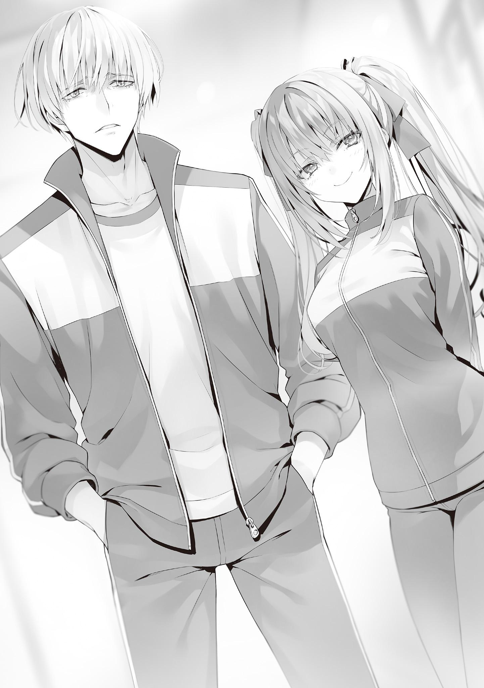
—Por eso me promocioné. Prometí contribuir a conseguir el primer puesto.
—Sinceramente, dudaba un poco en reclutarla.
Nagumo no especificó si se debía a la personalidad de Amasawa o a sospechas sobre su relación conmigo. Quizá decidió reclutarla porque lo consideró un asunto menor.
—Tú también tienes que organizar tu propio grupo, Nazuna. Eres una estudiante de la Clase A, así que aspira a la victoria. ¿Puedes contar siempre con nosotros?
—Eh, oh Dios mío, ¿¡ya es tan tarde!? Tengo que irme, ¡pero no dudes en consultarme si tienes algún problema!
Asahina, que había mirado la hora en su teléfono, salió corriendo. Casi tropezó en su camino, pero dobló la esquina y desapareció.
—Me pregunto si Nazuna podrá dirigir un grupo con esa actitud...
Amasawa sonrió satisfecha y se inclinó hacia Nagumo, que suspiraba incrédulo.
—¿Será que estás saliendo con Asahina-senpai?
—¿Eh? No, no lo estoy.
—Pero me dijiste que esperara porque tenías cosas importantes que discutir con Ayanokouji-senpai, pero mantuviste a Asahina-senpai a tu lado,
¿verdad? Eso es especial, ¿no?
Puede que fuera un salto equiparar ser especial con ser novia, pero ¿quién sabe?
—Eso no es asunto tuyo.
—Eh~ lo es. Mira, si estoy pretendiendo a Nagumo-senpai, ella es mi rival.
—¿Estás pretendiendo a un chico que está a punto de graduarse?
—Soy una mujer paciente, así que soy tolerante con las relaciones a larga distancia.
—Lo siento, pero no me gustan las mujeres que fingen ser lindas o me adulan.
Amasawa reaccionó de forma exagerada, como si se sintiera herida por el tajante rechazo de Nagumo. Probablemente le disgustaba ese tipo de comportamiento. Desvió deliberadamente la mirada.
—Ya me voy. Hazlo lo mejor que puedas, Ayanokouji.
Después de que Nagumo se fuera, sólo quedamos Amasawa y yo en el pasillo.
—¿Es que le caigo mal?
—Bueno, si dices cosas para caerle mal, es lo que pasa.
—Pero mira, tú también caes mal, Ayanokouji-senpai, así que quería que me incluyeran en el mismo grupo.
¿Qué clase de grupo es ese?
—Creo que es cierto que no están saliendo, pero su relación se siente especial, ¿no?
—Pues sí. Creo que han ido más allá de ser amigos.
Estaba de acuerdo con Amasawa en ese punto. Tenía sentido.
—Por cierto, sabías lo de la reunión de intercambio con anterioridad.
—Nos dijeron por adelantado qué tipo de reunión de intercambio se celebraría.
"Nos" incluía aquí a Yagami, a quien aquel hombre preparó y encargó a Tsukishiro.
Les habían dicho el programa del año al entrar en esta escuela.
Si iban a expulsarme, sería mejor darles la información por adelantado.
—No entiendo por qué elegiste formar equipo con Nagumo.
—¿Eh? ¿No es simplemente porque las posibilidades de ganar parecen altas? Después de todo, él era el presidente del consejo estudiantil. Soy una chica grande, así que quiero puntos privados.
Contestó Amasawa, pero estaba claro que mentía.
Sin embargo, se corrigió rápidamente, como si no tuviera intención de ocultar sus verdaderos sentimientos.
—Pensé que Nagumo-senpai y tú competirían pronto. Pensé que estaría bien estar a tu lado y apoyarte, pero eso no sería divertido, ¿verdad?
—¿Esa es la razón?
—De hecho, esa es la razón. Pensé que si me ponía del lado de Nagumo-senpai, podríamos tener un buen enfrentamiento...
Amasawa suspiró y se sujetó la mejilla.
—Puedo ver la decepción de Nagumo-senpai. La lista que nos dio la escuela está llena de juegos. No sería satisfactorio ganar una partida de piedra-papel-tijera o cartas contra él. No necesitaba enemistarme con él.
—No hay nada que podamos hacer al respecto.
—Me enteré por Nagumo-senpai primero, pero las reglas son que si pierdes tres veces, es tu derrota, ¿verdad? Pude sentir su deseo de verte perder por cualquier medio. Estoy deseando ver qué pasa.
—Espero que sea algo que esperar, pero hay muchas posibilidades de que pierda tres veces seguidas sin mostrar ninguna sorpresa.
En realidad, dependiendo del contenido, hay muchas posibilidades de que pueda perder sin poder hacer nada.
—Pero al menos Nagumo-senpai y yo no pensamos así.
—¿Tú también entiendes los sentimientos de Nagumo?
—Yo soy la que se burló de ello, así que no se me permitió venir a la discusión.
—¿Viniste a saludarme a pesar de que te rechazaron?
—¿No fue bueno?
No es que no estuviera bien, pero no había razón para forzar el contacto con Nagumo y arriesgarse a que se resintiera.
Para conseguir más protagonismo dentro del grupo, parecía que no sólo la habilidad, sino también el hecho de que fueras muy querido, se convertiría en algo importante.
—Bueno, me llaman de mi grupo, así que me vuelvo. Hasta luego.
Con un rápido giro, Amasawa se marchó alegremente.
Era una conversación casual con Amasawa, pero había una cosa que me molestaba.
Amasawa mencionó que había sido informada de esta reunión de intercambio por Tsukishiro y otros con anticipación, pero de ser así, había una ligera contradicción en la conversación anterior.
—Me pregunto qué estará tramando.
Podría ser una buena idea investigar un poco.
PARTE 3
Pronto se anunciaron los detalles de la primera ronda del encuentro de intercambio y comenzó el juego.
Antes de eso, decidí contarle este asunto a Hashimoto, que estaba jugueteando con su celular en la misma habitación.
Hashimoto se daría cuenta de la situación tan poco natural aunque yo guardara silencio sobre mi participación en todos los juegos. Era un desperdicio sondear y ser sondeado entre compañeros de grupo, y lo mejor era evitarlo.
Voy a tener algo con Nagumo.
Le conté un poco el contenido de nuestro encuentro, pero no dejaba de ser un enfrentamiento con el antiguo presidente del consejo estudiantil, y Hashimoto no pudo ocultar su sorpresa en todo momento.
Y cuando terminó de escuchar la historia, suspiró repetidamente, mostrando su comprensión de la situación.
—Siempre haces cosas que van más allá de mi imaginación. Lo sabes,
¿verdad?
—No es el desarrollo que yo quería.
—Aun así, es increíble que estés compitiendo con Nagumo-senpai. Y no se trata de los resultados de esta batalla grupal, sino de tu desempeño individual.
Eso es increíble. Se te pide que ganes 17 de 19 juegos.
Esperaba que esta situación fuera dura, pero Hashimoto parecía extrañamente feliz.
—Eso sólo significa que está interesado en ti. Sabía que mis ojos estaban en lo cierto.
—Aunque sea una reunión informal de intercambio, sigue siendo egoísta.
Es un acto que altera la dinámica del grupo. Por eso pedí hablar contigo, para mantener intacta la cooperación del grupo.
—Así que ahí es donde entro yo. Entiendo lo que quieres decir, pero no creo que debas preocuparte.
—¿Qué quieres decir?
—Piénsalo. Si fuera un juego divertido, todo el mundo podría competir por un puesto para participar, pero ¿crees que todos los estudiantes de preparatoria querrían hacer oshibana 4 y bordar para competir? No.
Yo estaba muy interesado, pero al parecer otros estudiantes no.
—Así que sería de agradecer que participaras en todo.
Si las cosas iban según lo previsto, estaría agradecido.
—¿Vas a ganar la reunión de intercambio en sí? Me pregunto cómo se siente Kiryuuin-senpai al respecto. Supongo que está bien asumir que lo sabe debido a las circunstancias.
—Ah, no estoy seguro. No creo que esté completamente desinteresada, pero no creo que esté tan emocionada como Nagumo. Puede que incluso le eche todo el asunto a sus kouhais.
Kiryuuin sólo estaba interesada en el combate con Nagumo debido a mi récord.
Solo disfrutaba del entretenimiento extra antes de la graduación, eso era todo.
—Aunque los puntos privados que gane esta vez solo puedan ser usados como dinero para gastos, puedo usar los puntos privados que tengo ahora para un propósito más efectivo. Sinceramente, quiero aspirar a una clasificación más alta y conseguir el dinero del premio.
Para Hashimoto, que ha hecho enemigos tanto dentro como fuera, sus fondos de batalla eran realmente importantes.
—De todos modos, Ayanokouji, deberías llevarte bien con los estudiantes de primer año.
—Llevarse bien... ¿eh?
—¿Crees que es difícil pasar tiempo amistoso con los estudiantes de primer año?
Después de pensarlo un momento, asentí, y Hashimoto se levantó, dándose una palmada en la rodilla.
—Muy bien, entonces, hagámoslo lo mejor posible. Primero, relajaré a los alumnos de primero e intentaré llevarme bien con ellos esta noche.
Hashimoto declaró inmediatamente que no tenía ningún problema en acercarse a los estudiantes de primer año.
—También trataré de extraer tanta información como sea posible en ese momento, pero si Kiryuuin-senpai no hace ningún movimiento, tu poder es indispensable. Así que cuando oscurezca, tendrás que cooperar para llevarte bien con los estudiantes de primer año, ¿de acuerdo?
No podía limitarme a exigir sin dar nada a cambio, y era justo ayudar.
Parecía mejor apoyar a Hashimoto, que aspiraba a ganar en el grupo.
—Claro... Por supuesto, si pudiera hacerlo, lo haría.
Pero sería mejor hacerle saber cuanto antes que no tengo confianza.
Eso es lo que pensé, pero Hashimoto se dio cuenta.
—Déjamelo a mí. Soy bastante bueno en este tipo de cosas. Estoy agradecido de poder actuar como tus manos y tus pies. También servirá para controlar a la princesa, y no es algo que Ryuuen pueda ignorar.
Estaba cooperando conmigo, al mismo tiempo que promovía sus propios intereses.
Tener una mentalidad calculadora no era malo.
Más bien, si había un claro conflicto de intereses, esa mentalidad sería mucho mejor que resolver la situación de buena voluntad.
—Por cierto, ¿cuánto te dan por derrotar a Nagumo-senpai?
—No lo sé. No pregunté por la cifra exacta.
—Teniendo en cuenta que es un representante de tercer año, no son sólo unos miles o decenas de miles, ¿verdad?
Lo que quería saber no era la cantidad, sino a dónde iría el dinero de la recompensa después.
Así comenzó el primer día de la reunión de intercambio y la primera ronda.
La escuela nos envió el juego y las reglas.
El grupo contra el que íbamos a competir era el Grupo Nueve. De la clase de Horikita, estaban Ike y Keisei.
El juego era 'creación oshibana '. El lugar era un oshibana kyōshitsu[5].
Algunos alumnos se habrían reído al oírlo.
Pero yo hablaba muy en serio.
La cuestión era cómo competir con oshibana, y en este caso, la calidad del producto acabado era de suma importancia.
La combinación de muchos tipos de flores.
Si podías o no encontrar pétalos con la cantidad adecuada de humedad, y la selección de materiales florales apropiados de diferentes tamaños.
Si se podía terminar sin romperlas o dañarlas porque eran delicadas.
El ganador se decidiría por la puntuación total de estos factores.
Como aún no había ido al campo de entrenamiento y me habían llamado, decidí ir directamente a las instalaciones.
Recibimos una breve charla justo antes, pero me pareció mucho más profunda de lo que había imaginado.
El trabajo en sí lo hacíamos todos los participantes a la vez, y al final competíamos en un formato de uno contra uno.
Del primero al quinto, se decidía de antemano quién estaría al mando.
En el lugar designado para la producción, había participantes de ambos grupos, diez personas y dos líderes, y unos cuantos espectadores entre los que se encontraba Hashimoto.
Entre ellos estaba Takahashi Osamu, un estudiante de primer año de la clase A del grupo Nagumo.
Por cierto, siguiendo las instrucciones de entonces, participé como la tercera persona de la fila.
—¿Tú también haces oshibana, Ayanokouji-senpai?
Nanase Tsubasa, de la clase D de primer año, que estaba entre los oponentes, se acercó a mí y me preguntó.
—No, nunca lo he hecho. Sólo recibí un poco de orientación de un amigo.
Por cierto, esa amiga era Hiyori.
Llevaba mucho tiempo haciendo marcapáginas con oshibana y tenía mucha experiencia.
—Ya veo. Creía que se te daba bien porque eres el único chico que participa.
Quizá porque requería destreza, como dijo Nanase, nueve de los diez participantes eran chicas.
Yo era el único participante masculino, así que estaba un poco fuera de lugar.
Tenía un combate con Nagumo, pero no hacía falta decírselo a Nanase, que era irrelevante para nuestra competición.
—Sólo lo he hecho una o dos veces, así que no sé si puedo hacerlo bien.
—Por favor, no seas dura conmigo.
Me preocupaba que los criterios de puntuación fueran algo vagos, pero parecía que la persona encargada del oshibana, la misma que dirigía las instalaciones, estaba bien informada y juzgaba de forma estricta.
Afortunadamente, la chica de primer año que era mi oponente no era muy buena, así que pude luchar contra ella de frente y ganar.
Y en cuanto al estado de victoria del grupo, aunque la decisión estuvo enredada hasta el quinto encuentro, apenas ganamos con tres victorias y dos derrotas.
—Eres increíble, Ayanokouji-kun. Creo que lo estás haciendo muy bien para ser tu primera vez.
—Aunque no soy ni de lejos tan bueno como Hiyori.
Ambos eran hermosos oshibana a primera vista, pero la calidad era mundos aparte.
Si ella hubiera sido mi oponente, habría sido completamente derrotado.
—Tienes un don para esto, Ayanokouji-kun. Si lo disfrutas, hagámoslo juntos la próxima vez.
—Sí, a mí también me gustaría mejorar en esto.
Me sentí aliviado de que un oponente tan formidable fuera un aliado. Era significativo que hubiera ganado en la competición individual.
De ser posible, me habría gustado quedarme en el oshibana kyōshitsu y seguir haciéndolos tranquilamente.
No me importaría competir haciendo oshibana durante tres días seguidos.
Tales sentimientos afloraban, pero, por desgracia, tuve que reprimirlos.
Lo siento, oshibana. Hasta luego...
Después del primer combate, Kiryuuin me llamó discretamente.
—Una victoria es un buen comienzo. Aunque, no sentí ninguna tensión.
—Bueno, eso es verdad.
Mientras respondía, me mantuve callado sobre lo serio que había estado.
Se permitía susurrar durante el juego. Era inevitable que los espectadores lo encontraran aburrido.
—Pero si se trata de una competición basada en el aprendizaje experimental, no es extraño que alguien gane o pierda. Si tenemos en cuenta las intenciones de la escuela, es una forma muy interesante de decidir quién gana.
No tiene sentido reunir sólo a los alumnos con altas capacidades en la OAA.
Cada grupo tiene una oportunidad de ganar.
Ni siquiera el gran Nagumo podía prever o determinar si Horikita y los demás podrían ser buenos en oshibana.
Dicho esto, lo mismo podría decirse de nosotros.
Lo que podíamos y no podíamos hacer. Utilizar el tiempo libre para experimentar tantas actividades de aprendizaje experiencial como sea posible y mejorar nuestras habilidades. Un líder debería encargarse de estas cosas...
—Hashimoto me hizo esta lista, lo que facilita las cosas. Es sorprendentemente útil.
Para evitar la molestia como líder, Kiryuuin dio la bienvenida.
Bueno, eso también estaba bien. Era bueno disfrutar de los tres días sin tomarse demasiado en serio la victoria.
—Si continuamos así, casi no habrá necesidad de que tomes el mando.
—Te lo agradezco. Lo único que quiero ver es el combate entre Nagumo y tú.
Como era de esperar, no tenía intención de hacer algo.
—No creo que los resultados cumplan tus expectativas.
Mientras mantenía tal conversación con Kiryuuin , me di cuenta de que Inogashira nos miraba en solitario.
A juzgar por la situación, seguramente ella no participó en el primer juego.
Ella dijo que era buena cosiendo, y puede que también le gustara el oshibana.
Pensé que había venido a experimentar el oshibana en su tiempo libre, pero no parecía ser el caso.
—¿Qué pasa, Inogashira?
Cuando le pregunté por curiosidad, ella se acercó a mí con un poco de nerviosismo. Al ver esto, Kiryuuin dio un paso atrás para facilitarle la conversación.
—Eh... eh, eres buen amigo de Koenji-kun, ¿verdad, Ayanokouji-kun?
—¿Eh?
Respondí de inmediato. Era la primera vez que escuchaba que era buen amigo de Koenji.
—¿Es así...? Ya veo...
—¿Qué pasa?
—Bueno, Tatebayashi-senpai me dijo que trajera a Koenji-kun de vuelta...
Tatebayashi es el líder del grupo al que pertenecen Inogashira y Koenji, la clase D de tercer año.
—Estaba muy enfadado.
—Sí...
Como miembro del mismo grupo y compañero de clase, parecía que la tímida Inogashira se veía obligada a asumir la responsabilidad de manejar a Koenji.
—Pensé que tal vez podrías hacer algo al respecto...
Ella había estado observando la escena antes y nuestras miradas se habían cruzado.
Debía de haber venido a pedir ayuda por desesperación, pero el problema era que la otra persona era demasiado difícil de tratar.
—¿Por qué no se lo pides a Yousuke?
Intenté ofrecer la solución más factible, pero Inogashira negó con la cabeza.
—No puedo pedirle a Hirata-kun que haga algo así... Es demasiado pedir.
Me pregunto si está bien pedírmelo a mí... Bueno, sería grosero compararme con Yousuke, que era muy servicial. Si se lo pedían, aceptaría y si Koenji no regresaba, seguramente seguiría persuadiéndolo hasta que lo hiciera. Podía entender por qué Inogashira se sentiría culpable.
—Lo siento. No puedo ayudarte. No puedo hacer nada.
—Ya veo... Lo siento, intentaré pensar en algo...
Inogashira inclinó ligeramente la cabeza y se alejó lentamente.
—¿Deberíamos dejarlo así?
—Lo siento por ella, pero ese hombre no actuará según nuestros deseos.
Hemos intentado varias cosas en los últimos dos años, y ésta es la conclusión a la que hemos llegado.
—Por supuesto, la decisión depende de ti. Independientemente de los detalles, el hecho de que ella acudiera a nosotros primero es significativo.
—Eres serio en formas extrañas. No lo negaré, pero no me entusiasma.
Mis pensamientos y políticas hacia Koenji se habían solidificado la última vez que interactué con Mii-chan. Ahora, sin un examen especial que amenazara con la expulsión, cualquier contacto y comunicación innecesarios serían un desperdicio.
—Todavía queda algo de tiempo hasta el próximo juego, ¿por qué no intentarlo? Por lo que he visto, el grupo de Tatebayashi es pequeño y es poco probable que gane, pero si Koenji es competente, la situación podría cambiar algo. ¿Verdad?
No daba la impresión de ser de los que se preocupan por los demás, pero sería inapropiado que yo dijera eso.
Quería probar muchas cosas diferentes, pero oportunidades así parecían difíciles de conseguir.
—Entiendo. Intentaré contactar con él por ahora. Si Koenji gana, podría apreciar los puntos privados que consiga.
—Es una buena idea.
De hecho, eso era lo único que potencialmente podría motivar a Koenji.
Mientras pensaba que me habían pedido hacer algo problemático, decidí intentarlo.
[5]: Un espacio taller especializado para enseñar y practicar el arte del oshibana, equipado con las herramientas y materiales necesarios.
PARTE 5
Quería encontrar a Koenji durante el intervalo de 30 minutos entre combates, sin embargo, no fue tarea fácil.
Fui a la habitación compartida de Koenji, pero como era de esperar, no estaba allí, y tampoco se encontraba en el vestíbulo ni en la sala de estar.
Tras deambular por el edificio durante unos cinco minutos, pidiendo ocasionalmente información a conocidos, obtuve una pista prometedora unos 20
minutos antes del siguiente partido.
Encontré a Koenji un poco más arriba, en un camino montañoso detrás del edificio.
Llegué a una zona abierta que solía servir de parque para perros.
Se había convertido en un descampado, quizá porque ya no se utilizaba.
—Me llevó bastante tiempo encontrar este lugar. No sabía que hubiera un sitio así aquí.
Encontré a Koenji, que corría alegremente, pateando el descampado con sus fuertes patas parecidas a las de un caballo.
No pude evitar preguntarme qué hacía aquí solo, pero si me preocupaba por ello, perdería ante Koenji.
Al ver a un raro espectador, Koenji aminoró la marcha y se acercó a mí.
Pensé que seguiría ignorándome, pero me encontré con una sorpresa.
—Ayanokouji-boy, ¿necesitas algo de mí?
Pensé que solo era un capricho, pero no podía desperdiciar la oportunidad.
—Te vi abandonar el grupo tú solo. Pensé en preguntarte sobre cómo te sentías.
—Ya veo. Mientras no hayas venido a llamarme sólo porque alguien contaba con mis habilidades, está bien".
Supongo que este hombre no necesitaba ninguna pretensión.
—Inogashira te estaba buscando. Parecía bastante ansiosa.
—¿Y qué?
—¿Por qué no vuelves y ayudas un poco al grupo?
—Ya sabes la respuesta, ¿verdad?
—No la sé. ¿Por qué no cooperas?
—Te diré algo especial. Uno más uno es igual a dos. La respuesta no cambia por muchas veces que la resuelvas.
—Eso depende de cómo lo mires. En decimal, eso es cierto, pero en binario, uno más uno es igual a diez.6
Koenji no perdió la sonrisa ni siquiera cuando respondí a su ridícula afirmación con una respuesta ridícula.
—Jajaja, tienes sentido del humor. Pero tu respuesta no tiene sentido. Ves las cosas de una forma retorcida, con un pensamiento sesgado por la lógica.
Uno más uno es igual a dos es la respuesta. El mundo siempre es simple y claro.
Koenji volvió a expresar que no tenía intención de llevarse bien conmigo.
—Deberían ganar usando sus propias tácticas, incluso sin mi habilidad.
¿No es así?
—Tu grupo no tiene ese poder. Por eso quería tenerte en cuenta. Si estás presente aquí, mejorará tu impresión. ¿No será más fácil para ti en el futuro?
—Me enorgullezco de ser el único, el mejor y el más fuerte. No hay necesidad de que muestre eso a los demás. Tus preguntas no tienen sentido.
Koenji se mofó y me dio la espalda.
—Esta vez, he decidido tomarme un descanso completo. En otras palabras, no participaré en modo alguno en la reunión de intercambio. Se puede jugar sin problemas con sólo cinco personas, ¿verdad? Por favor, asegúrate de comunicarlo.
De hecho, no había obligación de que todos los miembros del grupo se reunieran y celebraran una reunión de intercambio.
Si Koenji no cooperaba, era una pérdida de tiempo invitarlo.
—Realmente no debería decir esto a los demás, pero no puedo hacer nada acerca de tu falta de cooperación. Está más allá de mi comprensión.
—Hmm. Más allá de la comprensión, ¿verdad? ¿Quieres saber por qué no coopero?
Cuando estaba a punto de rendirme y dar media vuelta, me detuvo.
—¿Me lo vas a decir?
—No me importa. Pero antes, ¿puedo hacerte una pregunta?
Cuando me di la vuelta, Koenji empezó a hablar.
—Si aquí se realiza una prueba en papel sin previo aviso. Digamos, una prueba que cuestione las habilidades académicas básicas, ¿quién crees que ganaría, tú o yo?
Si no fuera Koenji, no habría respondido seriamente.
Pero aquí, intuitivamente sentí que era mejor hablar desde el corazón.
—Yo ganaría.
Sin dudarlo, respondí inmediatamente, pero Koenji no se sorprendió.
Más bien, respondió de inmediato como si fuera la respuesta que esperaba.
—Tu gran confianza no está mal. Supongamos que tu respuesta es afirmativa en esta situación. Entonces, ¿crees que nuestra superioridad, excelencia y valor como seres humanos se determinan sólo por eso?
—No. Eso solo no lo determina.
Era sólo una diferencia en la prueba escrita sobre habilidades académicas básicas.
—Entonces, si tú y yo peleamos en serio, ¿cuál crees que será el resultado?
Una pregunta sobre la fuerza, no sobre el cerebro o algo por el estilo.
Habiendo observado a Koenji Rokusuke durante dos años, ya tenía la respuesta en mi mente.
—Si es una pelea basada en reglas específicas, creo que tendría ventaja.
En términos de físico y masa muscular, Koenji sería indudablemente superior.
Este era un número que no podía ser anulado.
Si aquí se impusieran reglas, como el boxeo o el judo, y las habilidades de Koenji fueran al menos iguales, no podía negar la posibilidad de que sería una dura batalla.
—Esa es una respuesta curiosa. Es diferente de lo que yo diría, pero evaluaré tu pensamiento como es.
Desde el punto de vista de Koenji, no había posibilidad de perder, independientemente de la presencia o ausencia de reglas. Por supuesto, nadie podía negar eso a menos que realmente lucháramos.
—¿Crees que puedes juzgar quién es mejor o peor sólo con esta información?
—Es una pregunta difícil. Pero si lo pienso en términos generales, un tercero tendría que evaluar objetiva y justamente a ambas partes desde varias perspectivas integrales, incluyendo no sólo pruebas escritas sino también aspectos físicos, y cuantificarlos. Pero eso no significa que puedan percibir objetivamente el valor humano.
—Eso es correcto. Por muy objetivamente que se mire, determinar el valor humano no es algo que se pueda juzgar fácilmente. Incluso si hablas de perspectivas integrales, no puedes verlo todo.
—Si hay que comparar, yo apoyaría el método que acabo de mencionar.
—No estoy de acuerdo, Ayanokouji-boy.
—Entonces, ¿cómo juzgas el valor de una persona?
Como si esperara a que preguntara eso, Koenji sonrió.
—La respuesta es extremadamente simple. Si se trata de mí o no. Eso determina la superioridad o inferioridad.
Aunque me hizo pensar un poco, al final, todo se reducía a eso.
—¿Cuál es la base de tu confianza?
—Te lo diré con mucho gusto. La fuente es la adaptabilidad. No sucumbiré ante ningún entorno. Tengo la confianza para sobrevivir en cualquiera de ellos.
Ya sea en una gran empresa o en una jungla llena de bestias, tengo el poder de adaptarme perfectamente y a la perfección 7. Esto es algo que un tercero no puede medir.
Debe de ser muy consciente de que el "perfectamente" y el "a la perfección" son redundantes.
—Esta larga sesión de preguntas y respuestas no tiene sentido. Aunque seas perfecto, no tiene nada que ver con tu razón para no cooperar, ¿verdad?
—Si es así, es que no lo has entendido. ¿Puedes estar codo con codo con niños de kindergarten que no saben hacer nada y trabajar en serio? Hay tanta distancia entre la gente que me rodea y yo. La razón por la que me esforcé en conseguir el primer puesto en la prueba de la isla desierta fue para distanciarme de esos niños de kindergarten.
No tiene ganas de competir codo con codo porque mira por encima del hombro a los que lo rodean.
Esa fue la razón de Koenji para no cooperar.
—No eres adecuado para esta escuela.
—Tú y yo somos seres completamente diferentes, pero pensé que tenías una perspectiva algo similar. No esperaba que dijeras eso. También creo que tendría más sentido dedicarme a entrenar volviendo a visitar China que entrar en esta escuela. Tuve circunstancias que me lo impidieron.
Lo pensara como lo pensara, era un callejón sin salida.
A la hora de la verdad, cooperar o no era una decisión que tenía que tomar él.
No podía culpar a Koenji por mantenerse firme.
—Es una pena, Koenji. Si fueras diferente, podrías llamar más la atención de mejor manera.
—¿Como tú, que empiezas a contar con los que te rodean?
—Aunque la verdad es que no llamo mucho la atención.
Tuvimos nuestra conversación.
Por extraño que parezca, a menudo tenía la oportunidad de hablar así con Koenji.
Me pregunté si el ambiente era similar en el campo de entrenamiento del año pasado.
Volví a recordar el enigma que era la persona que tenía delante.
—Ahora entiendes que no puedes controlarme, ¿verdad?
—Sí, supongo que sí.
—Entonces, ¿por qué te molestas conmigo? Esta vez ni siquiera estoy en tu grupo.
En efecto, era una historia extraña.
Si alguien más mirara mi situación ahora, todos dirían que debería dejarlo en paz.
Podría perder el tiempo y afectar potencialmente a mi apuesta con Nagumo.
—Aunque sé que es inútil, no puedo evitar intentarlo...
—Porque si te vas de la clase, no serás capaz de proteger a Horikita-girl,
¿verdad?
Como si se enlazara con mis pensamientos, Koenji lo dijo.
Yo veía a Koenji como un estorbo para Horikita, que seguiría luchando en el futuro.
Este hombre se dio cuenta de eso.
Su extraordinario instinto era realmente impredecible.
A pesar de no dar muchas pistas, sabía lo que se avecinaba.
—Si ese es el caso, no hay necesidad de dudar. Puedes intentar excluirme en cualquier momento.
—¿No te dije antes que no tengo ganas de hacer eso?
—Huhuhu. Bueno, si ese es el caso, no hay nada que pueda hacer.
Koenji, quien nunca dudó que es el mejor ser humano.
Hasta ahora, ya eran varias las personas a las que había instado a crecer para el futuro de la clase de Horikita.
Y si pensaba que eran beneficiosos, también había hecho lo mismo con otras clases.
Este hombre, que tiene excelentes habilidades pero una personalidad difícil para trabajar, era similar.
Pero la razón por la que no insté a Koenji a mejorar fue porque juzgué que el riesgo y el esfuerzo de esta medida eran elevados.
Igual que no se podía convertir a una persona incompetente en competente con una tarea tan sencilla como lanzar una moneda al aire.
El hombre que tenía delante no cambiaría con uno o dos pasos.
Era más fácil eliminarlo antes de que se convirtiera en una molestia que convertirlo en un activo. Esa fue mi conclusión.
—Hasta luego entonces. Volveré a mi tiempo de superación personal.
Viendo que seguir conversando sería inútil, Koenji empezó a correr de nuevo.
Después de observar su espalda por un momento, decidí dar media vuelta.
[6]: El enunciado contrasta la aritmética en los sistemas decimal (base-10) y binario (base-2). En binario, utilizado en informática, 1 + 1 es igual a 10, que representa el valor decimal 2.
[7]: La última palabra , "a la perfección ", está escrita en katakana para enfatizarla.
PARTE 6
Volví cerca de la posada para informar sobre el caso de Koenji.
Pero no pude encontrar a Kiryuuin , y no sabía adónde había ido.
Cuando pregunté a algunas personas, me dijeron que había un parque con aire artesanal en el lado este del edificio, y que la habían visto caminando hacia allí.
No quedaba mucho tiempo hasta el siguiente juego, así que me pregunté qué estaría haciendo allí.
El parque tenía varias estructuras de juegos de madera.
A diferencia del oxidado parque para perros, este lugar aparentaba estar aún en uso, con subibajas y vigas de equilibrio que lucían utilizables.
Ahora, dónde estaba Kiryuuin -ella estaba en uno de los dos columpios.
No sola, sino con Asahina, una estudiante de tercer año.
Desde la distancia, me pareció que Asahina hablaba alegremente con ella, y Kiryuuin escuchaba con una mirada cálida.
Me pareció una combinación inusual mientras me acercaba para hablarle de Koenji.
—Normalmente no tenemos oportunidad de hablar, así que es algo...
Realmente inusual, ¿no?
—¿Tan contenta estás de hablar conmigo?
—Me alegro. Siempre eres tan genial, Fuuka-chan. Muchas chicas realmente te admiran.
Los ojos de Asahina brillaron. Quizás Kiryuuin era del tipo que era más popular con las chicas que con los chicos.
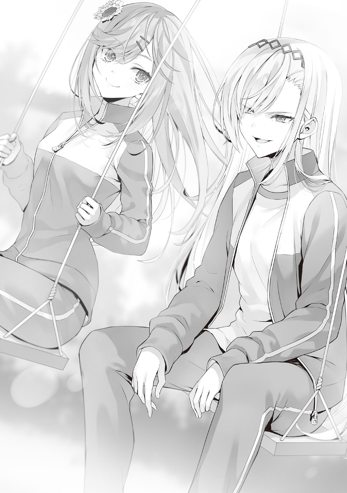
Esto debe haber sido porque ella raramente interactuaba con estudiantes pertenecientes al mismo año.
Creo que Kiryuuin era un caso especial, pero al parecer este tipo de interacción también ocurría.
—Ayanokouji, estás de vuelta.
—¿De qué estaban hablando?
Me pareció mejor contarle la situación de Koenji más tarde. Con ese pensamiento, pregunté por el contenido de la conversación.
—Hablábamos de varias cosas, pero ahora mismo, hablábamos de nuestros planes de futuro. Tenía curiosidad sobre el futuro de Fuuka-chan.
Recuerdo que ella dijo que se convertiría en una estudiante becada e iría a la universidad cuando nos conocimos antes.
—Entonces, ¿a qué universidad vas a ir?
La conversación acababa de empezar y Asahina hizo esa pregunta.
Kiryuuin nombró abiertamente la universidad concreta a la que pensaba ir.
Era una universidad famosa de la que habría oído hablar muchas veces si hubiera vivido normalmente.
—Es su departamento de derecho. Pero no estoy particularmente apegada al departamento.
Asahina se estremeció ante la idea de ir a una universidad de tan alto nivel, pensando que era imposible para ella.
—¿Qué piensas hacer, Fuuka-chan?
—¿Hmm? No aspiro a nada. No intento convertirme en nada.
Tal como ella me había dicho antes, planeaba vivir como una persona ordinaria.
Eso le dijo a Asahina.
—Eh~ ¿No es un desperdicio? Creo que podrías convertirte en cualquier cosa.
No tenía intención de presumir de sus talentos, que serían envidiados por quienes no los tuvieran.
Eso podría ser un desperdicio, pero también podría ser el lujo supremo.
—Puedo convertirme en cualquier cosa. No me falta confianza, pero hay muchas cosas diferentes.
—¿Entonces no tienes un sueño?
—Tengo el sueño de no convertirme en nadie. ¿Responde eso a tu pregunta?
—Eso puede ser un sueño, pero creo que es mejor tener un sueño ambicioso. Tanto si puedes cumplirlo como si no, tanto si puedes hacerlo como si no, ¿no es algo en lo que pensar?
Esto era cierto especialmente si eras Asahina, de quien se esperaba que se graduara en la Clase A. Kiryuuin entendió esto y se rió.
—Eso es verdad. No es que nunca haya pensado en un sueño así.
—Entonces cuéntamelo. Yo también podría aspirar a ello.
Kiryuuin le dijo a regañadientes a Asahina, que mantenía los ojos brillantes.
—Si tuviera que elegir un trabajo para lograr algo, podría aspirar a ser política.
—¡¿Una política!? Vaya... pero no es común pensar en ser político...
incluso Miyabi nunca ha mencionado ser político, y nunca he visto a nadie a mi alrededor hacerlo.
Asahina, ansiosa por saber cómo llegó a tener ese sueño, escuchó atentamente.
—¿Tengo que hablar de ello?
—¿No? Aunque creo que ésta puede ser la última oportunidad de hablar tranquilamente contigo... Quiero oírlo.
A petición de Asahina, Kiryuuin dijo que era especial y reveló la razón.
"Cuando era pequeña, tuve muchas oportunidades de conocer políticos debido a mis relaciones familiares".
—Ah, ¿así que por eso quieres convertirte en una?
—¿No? Fue por oportunidades como ésa por lo que decidí no hacerme política. Sólo dejé que su palabrería me entrara por un oído y me saliera por el otro.
—Ah, soy parcial, pero... los políticos parecen ser en su mayoría malas personas.
—Así es. La mayoría son corruptos que suelen salir en la tele y en los medios. No es una profesión que admire en absoluto.
Si ese era el caso, debe haber otra razón por la que lo mencionó como un sueño.
—Como es un mundo tan corrupto, también hay quien brilla. Era una de las pocas personas a las que admiraba.
—¿Cómo se llama el político? ¿Lo conozco?
—Es Kijima-san. Se ha vuelto muy importante ahora.
—Eh, ¿Kijima? ¿Eh? ¿El Primer Ministro?
Kiryuuin lo afirmó. Asahina se mostró bastante sorprendida.
—Pensé que no sería tan malo aspirar al mismo escenario que él. Está activo en primera línea.
—Pero tú no aspiras a eso... ¿verdad?
—No planeo hacerlo por el momento.
—Parece que tú, Fuuka-chan, podrías llegar a convertirte en política.
—¿No te dije que están pasando muchas cosas?
Cuanto más destacaba, más odiaba que el apellido Kiryuuin la siguiera a todas partes.
—¿Por qué no aspiras a ser político en mi lugar, Ayanokouji, cumpliendo mi sueño?
—Esa es una sugerencia bastante inesperada. Nunca me había planteado hacer carrera política.
—Mi intuición me dice que podrías hacerlo sorprendentemente bien.
—Me parece bien ser normal. Iré a alguna universidad apropiada y conseguiré un trabajo apropiado.
—Ya veo. Ya que también estoy aspirando al mismo camino, ambos somos cazadores de sueños a nuestra manera.
—Ya sea Miyabi o Fuuka-chan, invitando a Ayanokouji-kun, debe ser algo especial, ¿eh?
—Solo estoy siendo el blanco de los curiosos. El próximo juego está por comenzar.
Si seguíamos hablando, no podríamos evitar llegar tarde.
—Oh, ¿ya es la hora? Tengo que darme prisa.
Asahina saltó del columpio y nos saludó frenéticamente.
—¡Hasta luego!
—No te precipites y te caigas.
—¡Ya lo sé! ¡Whoa, whoops!
Casi se cae mientras echaba a correr.
No esperaba ver el mismo patrón dos veces en un día, y mucho menos en tan poco tiempo.
—¿Llegaste a encontrarte con Koenji?
—Sí hablé con él. Aunque fue una pérdida de tiempo.
Le conté el propósito de mi visita aquí, que no pude conseguir que Koenji participara en la reunión de intercambio.
—Ya veo. Así que después de todo Koenji es incontrolable, ¿eh?
—Intenté encontrar una forma de entrar, pero no había ninguna apertura.
—Así que hay cosas que ni siquiera tú puedes hacer, Ayanokouji. Me alegro.
Me elogiaron por mi incapacidad.
—¿Me enviaste para ver este resultado?
—No puedo negar que quería verlo.
Pensé que era extraño favorecer a otro grupo, pero era una senpai bastante mezquina.
—Pero Tatebayashi es duro. Es cierto que no soporto ver cómo oprimen a un kouhai".
—Estaría bien que fuera duro con Koenji, pero a él no le afecta.
Además, había una gran diferencia de habilidad.
Teniendo en cuenta la posibilidad de que Koenji pudiera mostrar sus colmillos, no sería extraño que Tatebayashi dirigiera su tensión hacia otra persona del grupo.
—Bueno, no podemos evitarlo. Pasemos al segundo combate.
El juego procedió de la siguiente manera.
[Alfarería]
Todos eran principiantes, así que fue una batalla de bajo nivel. Tomé la delantera con mi destreza y gané.
[Tenis de mesa] × 2
Fue el mismo partido dos veces seguidas, pero yo tenía experiencia con el tenis de mesa en la escuela, así que gané fácilmente.
[Fabricación de joyas]
Me preocupaba cómo iría, parecido al oshibana , pero mi oponente también era inexperto, así que pude competir en igualdad de condiciones.
Incluyendo el oshibana, Takahashi estaba siguiendo todas las partidas, probablemente porque Nagumo le había encargado que confirmara los resultados.
Pensé que me vería forzado a participar en una partida con más elementos de suerte, pero en general fue un buen primer día.
Y quizá influenciado por mis cinco victorias consecutivas, el grupo también consiguió ganar cinco partidas seguidas sin perder.
PETICIÓN DE HORIKITA Y PETICIÓN DE AYANOKOUJI LA NOCHE del primer día de la reunión de intercambio.
Esta era sin duda la mayor diferencia con respecto al campamento del año pasado:
Las habitaciones asignadas a cada estudiante estaban agrupadas. En otras palabras, los estudiantes de primer y segundo año dormían en la misma habitación.
Dependiendo de sus personalidades, este momento del día podía ser el más estresante tanto para los alumnos de primero como para los de segundo.
Por eso, Hashimoto se apresuró a crear un ambiente en el que pudieran romper el hielo.
La idea funcionó, pues los alumnos de primero ya se habían acercado lo suficiente a Hashimoto como para poder hablar con él con una sonrisa. Entre las ocho personas de la habitación, yo era el más reservado con los demás.
—Lo hiciste muy bien ganando todos tus enfrentamientos el primer día, Hashimoto-senpai.
—No sabíamos quiénes serían nuestros oponentes, así que sinceramente no teníamos ni idea de lo que iba a pasar.
Toyohashi y Yanagi lo dijeron alegremente.
Cada uno de ellos tuvo su turno en el tenis de mesa en la tercera y cuarta ronda de hoy, lo que seguramente influyó en su estado de ánimo.
Shintoku y Obokata también se mostraron de acuerdo, asintiendo varias veces, pero se veían un poco tímidos.
—Lo siento. Aún no hemos participado ni una sola vez...
—No se preocupen por eso. Por lo que vi hoy, casi la mitad de los alumnos no han participado. Sinceramente, el aspecto del juego es sólo un extra. Para los que no han participado, su papel es sólo experimentar los juegos.
El formato de aprendizaje experiencial, en el que los alumnos coleccionan sellos en una tarjeta de puntos, fue recibido inicialmente con escepticismo, pero el sistema se utilizó más de lo esperado. Proporcionó una buena oportunidad para profundizar en las amistades invitando a amigos, senpais y kōhais.
Por lo que pude ver, no hubo ni un solo grupo que se apuntara ansiosamente a la victoria en los cinco juegos disputados hoy. Quizá esa libertad haya contribuido.
Sin embargo, eso no significa que sea fácil alcanzar el primer puesto.
Teniendo en cuenta el desarrollo de los juegos de hoy, se espera una dura batalla a partir de mañana.
Hubo cuatro grupos, incluido el nuestro, que ganaron los cinco duelos. Tres grupos ganaron cuatro de los cinco enfrentamientos. También hubo cuatro grupos que perdieron los cinco. La distribución de victorias y derrotas puso de manifiesto la polarización de los planteamientos de la reunión de intercambio.
Entre los grupos que ganaron uno o dos duelos, puede que hubiera algunos que estuvieran seriamente comprometidos, pero no se sabía qué pasaría si no conseguían colarse entre los primeros a partir de mañana.
A partir del segundo día, competiríamos por el primer puesto con aproximadamente la mitad de los grupos.
—El grupo de Nagumo-senpai es un aspirante al primer puesto, ¿verdad?
murmuró Takumi Oda, de la clase 2-C, reflexionando sobre los cinco encuentros.
—Yo también lo pensaba. Han ganado todos sus partidos.
Muchos estudiantes de ese grupo se tomaban las cosas en serio, esa era la fuerza de su grupo.
No había ni un solo estudiante que pensara que estaba bien holgazanear. Se puede decir que eso contribuyó directamente a su porcentaje de victorias.
Era fácil imaginar que hubieran estado expuestos a diversas experiencias, adquiriendo valiosas lecciones por el camino.
Como no era una batalla de capacidad académica, podíamos competir en igualdad de condiciones en ese aspecto. Aunque también podría decirse que se creó una brecha porque muchos de los estudiantes eran inexpertos en múltiples juegos.
—Por cierto, Hashimoto-senpai, sobre mi clase...
La conversación no sólo versaba sobre la reunión de intercambio, sino que también incluía temas personales triviales.
Observé la conversación de las siete personas, sintiéndome algo distante.
A pesar de que el grupo sólo llevaba reunido unas horas, los alumnos de primer año ya parecían admirar a Hashimoto, y la conversación era naturalmente animada con él en el centro.
Como era de esperar de alguien que se enorgullecía de su habilidad, no había otra forma de decirlo.
Empezaba a entablar relaciones como si fueran conocidos o incluso amigos desde hacía mucho tiempo.
Yousuke y otros a los que se les daba bien mimetizarse con el entorno también son parecidos, pero él era de otro tipo.
Lo que era un poco desconcertante era que Oda también había conseguido encajar bastante bien...
—Pero ha sido un día sorprendente en muchos sentidos.
Hashimoto gimió, sosteniendo en la mano un memorándum que registraba las victorias y derrotas de cada grupo anunciado por la escuela.
—El grupo de Ryuuen perdió dos veces, y el de Sakayanagi incluso tres.
Puede que mañana abandonen la carrera hacia la cima.
Hoy no tuvimos un encuentro con ninguno de esos dos grupos, así que los detalles eran desconocidos.
Si Hashimoto no hubiera asumido el papel de organizar a los estudiantes de primer año, podría haber reunido más información, pero por lo visto no pudo arreglárselas.
—Es sorprendente. Siempre he tenido la impresión de que Sakayanagi-senpai era fuerte. Me pregunto si es diferente porque un estudiante de tercer año está al mando.
De acuerdo con la OAA, un estudiante de tercer año de la clase D llamado Iki tenía generalmente malas notas, especialmente en términos de capacidad académica. Su nota era D+, bastante insatisfactoria. Por ello, era poco probable que participara como parte del grupo que iba a la universidad.
—Si Sakayanagi quisiera ganar, sería normal que tomara el mando, independientemente de si es de tercer año o no. Ella no se echaría atrás aunque sus oponentes fueran Nagumo-senpai o Kiryuuin-senpai. Especialmente Iki-senpai, ¿verdad? No importa cómo lo pienses, rápidamente tomaría el control...
No, incluso antes de eso, ella es del tipo que querría dejarlo todo en manos de camaradas competentes.
Por lo visto, Hashimoto conocía un poco el tipo de persona que era Iki.
—Entonces, ¿es simplemente falta de habilidad?
Kosumi, que había estado callado hasta ahora, murmuró eso, pero Toyohashi lo negó de inmediato.
—Al menos los de primer año son bastante buenos. Los de segundo seguramente también, ¿no?
Como dijo Toyohashi, el grupo al que fue asignada Sakayanagi no era tan malo.
Iki también parecía haber elegido a miembros razonablemente competentes de ambos años y consideraba la posibilidad de ganar.
Así que era natural que Hashimoto se preguntara por qué había perdido contra un oponente que consideraba inferior en el partido de hoy.
—Tanto si se trata de un examen especial como de una reunión de intercambio, Sakayanagi siempre aspira a ganar.
Hashimoto, que había estado a su lado todo el tiempo, lo sabía mejor que nadie.
Viendo los resultados de las tres derrotas, Hashimoto debía tener dudas en su mente.
—Yo también lo creo. Me pregunto si estará tramando algo.
Oda también resultó estar preocupado por las tres derrotas de Sakayanagi y estaba sumido en sus pensamientos.
Sin embargo, pensar en ello aquí no le daría ninguna respuesta.
Finalmente, los siete empezaron a entusiasmarse con un tema que no tenía nada que ver.
Al cabo de un rato, Hashimoto se distanció de los estudiantes de primer año y se acercó a mí, que había estado observando desde lejos. En su camino, agarró el control remoto del televisor y encendió deliberadamente un programa de variedades para hacer ruido en la habitación.
—¿Será que el daño que le causó perder a Kamuro fue importante?
me preguntó Hashimoto, que quería confirmar el motivo de las tres derrotas.
—Puede ser.
Era difícil juzgar basándose sólo en los resultados actuales, pero no había pruebas de lo contrario.
—Si realmente se está debilitando, es algo bueno para mí. Si llegamos así a los exámenes de fin de año, podría tener una oportunidad de ganar.
Como decía, Hashimoto no era tan simple como para tomarse estos resultados a la ligera.
—¿Puedes averiguar cuál es la situación real de Sakayanagi, Ayanokouji?
—Esa es tu especialidad, no la mía.
Intenté negarme de inmediato, pero Hashimoto me susurró al oído por si acaso.
—Por favor, perdóname esta vez. Ahora mismo soy el hombre más buscado de la Clase A. Especialmente Kitou-parece estar muy enfadado. Por ahora está bien porque Sakayanagi no ha dicho nada, pero quién sabe lo que pasará cuando mi traición se haga evidente.
Murmuró mientras se lo imaginaba y se abrazaba a sí mismo.
Pero su expresión seguía siendo ligeramente divertida.
—No parece que tengas miedo, ¿verdad?
—Si ni siquiera puedo alardear, no tendría derecho a traicionar a la clase.
Eso también tenía sentido.
—Además, he seguido adelante gracias a ti. También te estoy agradecido por eso.
Hashimoto, que visitó mi habitación el día de la entrevista de dos personas, se había sincerado.
Ahora puede mirar hacia delante gracias a los beneficios de aquella conversación, pero el efecto seguramente fuera temporal.
Una vez que el impacto de su traición empezara a surtir efecto, ya no sería así.
A Hashimoto se le acababa el tiempo.
—Puedes contactar directamente con Sakayanagi, ¿verdad?
Estaba bien sentirse un poco mejor, pero eso era una cosa, esto era otra.
—Eres libre de desear lo que quieras, pero ¿cuándo me convertí en tu aliado? No pienso meter el cuello en ningún problema.
—Lo pienso por separado. Pero al menos en esta reunión de intercambio, estamos en el mismo equipo. Aunque haya perdido tres veces, mientras Sakayanagi esté ahí, es una candidata de primera de la que debemos tener cuidado. Considerando que podríamos enfrentarnos mañana, no es mala idea investigarla ahora.
El hombre al que no le importaban mucho las batallas en grupo se mostró valiente en su aparición pública.
—Eso es razonable. Pero mientras tú y yo estemos en el mismo grupo, Sakayanagi será más cautelosa que de costumbre. No quiero que esperes información útil.
—Lo comprendo. Lo consideraré como un extra, ¿de acuerdo?
—...De acuerdo. Por ahora haré todo lo que pueda.
—Cuento contigo.
También quería saber la razón de las tres derrotas.
Pero otra cosa era si le transmitiría o no a Hashimoto la información obtenida.
PARTE 1
La forma más rápida de ponerse en contacto con Sakayanagi era, por supuesto, contactarla directamente. Sin embargo, sería difícil conocer en detalle su situación actual. Podría hablarme con sinceridad, pero también podía predecir que habría muchas cosas que ocultaría a propósito.
Otra opción era extraer información indirectamente de alguien que conociera en detalle la situación actual de Sakayanagi.
Pero esto también conllevaba riesgos. Me interesaba la situación de Sakayanagi: era inevitable que lo supieran. Hondou y Shinohara, de la clase de Horikita, están asignados al mismo grupo que Sakayanagi, pero ninguno de los dos era de los que mantenían la boca cerrada ni eran buenos actores.
Mientras tanto, decidí salir al vestíbulo para organizar lentamente mis pensamientos.
Dependiendo del momento, podría encontrar a Sakayanagi por ahí.
—Ayanokouji-kun.
Mientras me dirigía al vestíbulo, un estudiante se fijó en mí y se acercó.
Era Sanada, de la misma clase que Sakayanagi.
Parecía que acababa de salir del baño, ya que tenía el pelo mojado y pude ver unas gotas de agua en sus gafas.
—¿Podemos hablar un rato? Hay algo que quiero preguntarte.
—No me importa. ¿Qué quieres preguntarme?
También estaba agradecido por haberme encontrado con Sanada.
El primer día había ganado un juego contra el grupo al que pertenecía Sakayanagi.
—Se trata de Hashimoto-kun, de tu grupo. Supongo que habrás oído varios rumores sobre él.
—¿Como que tuvo que ver con la expulsión de Kamuro?
—No pretendo husmear en ello sin pruebas sólidas, pero independientemente de la verdad, siento curiosidad por su situación actual... Me pregunto cómo estará.
Ahora, en la Clase A, no sólo Sakayanagi sino también Hashimoto estaban atrayendo mucha atención.
No sería extraño que hubiera estudiantes como Sanada preocupados por ellos.
—No hay nada particularmente diferente de lo habitual. Parece que lo está haciendo bien, no sólo poniendo buena cara.
—Ya veo... Eso es bueno.
—¿Pero qué hay de Sakayanagi? ¿Ha habido algún cambio con ella?
Siguiendo el hilo de la conversación, intenté tocar el tema de Sakayanagi.
—Por lo que pude ver en la escuela, parecía ser la misma de siempre.
—Pensé que el hecho de que su grupo hubiera perdido tres veces en la reunión de intercambio podría haber tenido algún efecto.
—No estoy seguro, pero podría ser el caso. Sin embargo, no nos hemos visto mucho desde que llegamos, así que no conozco los detalles.
Al menos por ahora, Sanada respondió que no tenía idea de la situación.
—¿Pero no jugaste hoy un juego contra el grupo de Sakayanagi?
Cuando se lo señalé, Sanada negó tranquilamente con la cabeza.
—Ella no participó. Tampoco la vi dando instrucciones en las cercanías.
Puede que sólo estuviera ausente en ese juego, pero en ese momento parecía más probable que no hubiera participado en absoluto en la reunión de intercambio.
—¿Qué hay de ti, Ayanokouji-kun? ¿Sabes algo?
—Por desgracia, no. La información que tengo es quizá la misma que la tuya.
De hecho, puede que tuviera incluso menos información.
—Me alegraría si pudieras vigilar a Hashimoto-kun, así como a Sakayanagi-san, aunque fuera un poco.
—Como miembro del mismo grupo, tengo la intención de vigilar a Hashimoto en la medida de lo posible, pero no conozco los detalles, así que no me corresponde interferir. ¿Qué piensan realmente tus compañeros? ¿Creen que Hashimoto los traicionó de verdad?
—Eso es...
Incapaz de responder inmediatamente, Sanada no pudo continuar.
—No he hablado directamente con mis compañeros, así que no puedo decir con seguridad quién piensa qué. Pero seguro que hay gente que asume que es así.
La primera persona que me vino a la mente por la conversación mantenida antes con Hashimoto fue Kitou.
Es un hombre de pocas palabras, pero siempre ha sido obediente con la Clase A.
Kamuro y él parecían llevarse bien, ya que a menudo estaban juntos.
Después de eso, hablé un poco más con Sanada, y entonces divisé a Horikita mirándonos desde la distancia. Creo que quiere hablar conmigo, así que terminé la conversación en un punto razonable.
En cuanto me quedé solo, Horikita se me acercó. Aunque sólo había 20 alumnos de tercer año, parecía que las posibilidades de toparse con alguien seguían siendo altas a pesar del gran número de estudiantes.
—Me alegro de haberme encontrado contigo. Tengo que pedirte un pequeño favor... ¿Te parece bien?
Horikita, que empezó con una actitud amistosa, no parecía tener ningún problema con la reunión de intercambio.
Era de dominio público que el grupo de Nagumo había estado invicto y ocupaba el primer lugar con cinco victorias consecutivas desde el primer día.
—¿Cuál es el favor?
Cuando le respondí, Horikita tiró de mi manga y me obligó a moverme hasta el borde del vestíbulo.
—Es sobre Amasawa-san... No es algo de lo que pueda hablar en voz alta.
—Ella está en tu grupo, ¿no? ¿Pasó algo?
Cuando se trataba de asuntos confidenciales, lo primero que me venía a la mente eran problemas.
Pero esa suposición parecía equivocada, ya que ella lo negó inmediatamente.
—Habla un poco de más, pero no ha hecho nada problemático. Hasta ahora se ha portado bien.
Aliviado, esperé a que Horikita continuara.
—¿Sabías lo buenas que son sus habilidades físicas? También es muy hábil en artes marciales.
—Dejando a un lado las artes marciales, compruebo regularmente la OAA y tengo un conocimiento aproximado de ella.
Mientras daba una respuesta evasiva, pedí más información, ya que aún no estaba claro el panorama completo.
—Creo que no lo sabrías a menos que te lo contara Amasawa-san, pero tengo con ella una pequeña 'deuda', algo que no puedo pagar en mi típica vida escolar.
Artes marciales y la palabra 'deuda'.
Aunque evitaba las expresiones directas, parecía que había tenido un enfrentamiento con Amasawa en algún momento.
Recordando, sin pensarlo profundamente, me pareció que el único escenario para tal confrontación habría sido el examen de la isla desierta.
—Es difícil imaginar las circunstancias.
Opté por decir algo que la mayoría de la gente diría al oír esta historia.
—Bueno, muchas cosas.
Horikita respondió evasivamente, sin mostrar ninguna intención de dar más detalles sobre la "deuda".
Como no era algo en lo que tuviera que husmear, decidí seguir adelante.
—Entonces, ¿qué es lo siguiente?
—He estado haciendo todo lo posible cada día. Pero no sé si estoy a un nivel que pueda competir con ella. Así que quiero que evalúes mi fuerza actual.
—Entiendo que quieras saldar tu deuda con Amasawa, pero suena bastante peligroso.
—Lo sería en circunstancias normales, pero su fuerza no es normal.
—Aunque digas 'fuerza', no sé lo fuerte que es Amasawa. No puedo ser de mucha ayuda.
Sin saber la fuerza exacta del oponente, preparar una medida no tenía sentido.
-Bueno, en realidad, sí lo sabía.
Pero decidí guardármelo para mí.
—Sólo tienes que juzgar mi fuerza a tu manera. Por supuesto, me encantaría que me dieras algún consejo.
Por su tono, le interesaban más mis consejos.
—Depende de ti si quieres la revancha, ¿pero ha accedido Amasawa?
—Todavía no.
Sin embargo, Horikita continuó rápidamente.
—Si rechaza mi propuesta, no la obligaré a hacerlo.
A pesar de su respuesta, Horikita no consideraba la posibilidad de que Amasawa se negara.
Después de todo, se había tomado la molestia de confiar en mí y pedirme un entrenamiento especial.
—¿Aceptarías... mi petición?
—Aceptar es un problema en sí mismo.
Enfrentarse a Amasawa sería bastante desventajoso.
Por mucho que Horikita se hubiera entrenado tras su derrota, era poco probable que la diferencia entre sus habilidades se redujera tan fácilmente.
—¿Por qué no le preguntas a Ibuki? Estará encantada de ayudarte.
Llamé a alguien que seguramente estaba escondida cerca y escuchando.
—Tch, te diste cuenta.
Con un molesto chasquido de lengua, Ibuki asomó la cara por la esquina del pasillo.
Estaba claro que se trataba de un plan preestablecido entre las dos, ya que Horikita no parecía sorprendida.
—Por desgracia, estoy cansada de hacer de sparring con Ibuki-san. Hay poco que ganar luchando contra el mismo oponente una y otra vez.
Ibuki, de pie a su lado, parecía tener una "deuda" similar, mostró una reacción parecida.
Por lo visto, se trataba de una petición hecha después de haber hecho todo lo posible.
—Eres fuerte, así que deberías estar dispuesta a ayudar un poco.
—¿Tú también estás dispuesta, Ibuki?
—Por supuesto. No soporto perder contra una niña que sólo lleva aquí un año.
Después de lanzar unos cuantos puñetazos, mostró una patada alta limpia.
Se veía desesperada por dar esa patada.
Estaba bien ser entusiasta, pero aunque se refiriera a Amasawa como una niña pequeña, sólo había un año de diferencia entre ellas, y en términos de físico real, Ibuki era en realidad más pequeña...
—Decidiste hacer esto durante el campo de entrenamiento porque no tendrías problemas para encontrar un lugar donde hacer sparring, ¿verdad?
—Sería demasiado llamativo tener una pelea de revancha en la escuela.
Horikita, que asintió con la cabeza, se mostró decidida. Ibuki también, para el caso.
—No sé... Sinceramente, no hay nada en esto para ti...
—En efecto, no tengo nada que ganar con esto.
—Pero si aceptaras, estoy dispuesta a ofrecer puntos privados como compensación...
Pero era inútil aceptar algo así.
—No sé cuánto ayudará, pero si aceptas mis condiciones, estoy dispuesto a aceptarlo.
Interrumpí la oferta de Horikita y respondí.
—¿De verdad? No me lo esperaba en absoluto...
—Tanto si ambas partes están de acuerdo como si no, hay más desventajas que meterse en una pelea en la escuela. Si quieres pagar algún tipo de deuda, no querrás perder una oportunidad tan buena. Sin embargo, no puedes salir por la noche.
—Gracias. No podría pedir más cooperación. Entonces, ¿cuáles son las condiciones?
Había condiciones absolutas que debían aceptarse para enfrentarse a Amasawa en la revancha.
—La primera es hablar con Amasawa hoy. Están en el mismo grupo, así que no debería ser difícil encontrar una oportunidad para hacerlo. Por supuesto, para evitar armar un escándalo, asegúrate de que nadie se entere. El momento debería ser a primera hora de la mañana del último día. Debes conseguir que Amasawa acepte la revancha en ese momento.
Las posibilidades eran escasas, pero si se negaba, el entrenamiento especial no tendría sentido.
—Por supuesto, lo entiendo. ¿Cuáles son las otras condiciones?
—Hablaré de eso una vez que hayas terminado ésta. No tiene sentido el entrenamiento especial si Amasawa no acepta. Además, no podemos hacerlo a media noche en el campo de entrenamiento, ¿verdad?
Como se trataba de una discusión basada en la premisa de que ella aceptaría, no debería haber objeciones aunque no escucharan el resto de condiciones.
—Estoy lista para hacerlo ahora mismo, ¿sabes?
—Deberías callarte.
Horikita, a diferencia de Ibuki que había accedido rápidamente, tenía sentido común.
—Si me da permiso Amasawa-san, enviaré un mensaje.
—Por favor, hazlo. Estaré listo por la mañana.
Amasawa no era de las que rechazan una pelea.
Por el contrario, si estas dos querían una revancha, ella estaría encantada de aceptar.
Comprenderá que este campamento era el lugar perfecto con menos ojos vigilantes.
Cuando Horikita asintió y se disponía a volver a su habitación, la detuve.
—Esto no está relacionado con la reunión de intercambio, pero hay algo que quiero que investigues.
—¿De qué se trata?
Si estaba planeando proponer una revancha, quizá pudiera engañar al agudo sentido común de Amasawa.
Le hice una pequeña petición a Horikita.
—No lo entiendo muy bien, pero debo tenerlo en cuenta, ¿verdad?
—Sí. No se lo digas a Amasawa.
—Lo comprendo. No es para tanto.
Le di las gracias a Horikita, que aceptó de buen grado, y la reunión terminó.
—Bueno...
Decidí buscar a Sakayanagi un poco más.
Sin embargo, deambulé sin rumbo por el campo de entrenamiento, pero no pude encontrar a Sakayanagi.
Alrededor de las 9 de la noche, cuando la multitud empezaba a disminuir, decidí dar por terminado el día.
Cuando volví a mi habitación, Hashimoto, Toyohashi y Shintoku se estaban preparando para ir al baño y me estaban esperando, así que decidí ir al baño principal con ellos.
PARTE 2
Después de disfrutar del baño en el amplio baño durante una hora, volví a mi habitación compartida con los tres que vinieron conmigo.
Entonces, vi al estudiante de tercer año, Tatebayashi, de pie frente a una habitación, con aire contrariado y jugueteando con su pie derecho. Se veía muy irritado.
—Por fin has vuelto...
La mirada de Tatebayashi no se dirigía a nosotros, sino más atrás.
Era Koenji, que llevaba todo el día haciendo lo que le daba la gana.
Era de esperar, pero a juzgar por el comportamiento de Tatebayashi, no había sido capaz de establecer contacto ni siquiera después de todo ese tiempo. No le dio importancia al irritado senpai y se dirigió al frente de la habitación.
—¿Podrías moverte? Estás en mi camino.
—¿Qué demonios estás...?
Antes de que comenzara la charla, Koenji empujó el hombro de Tatebayashi y entró en la habitación.
No es que hubiera entrado a la fuerza, sino que lo había dominado con su físico y fuerza superiores.
Los rumores sobre Koenji debían de haberse extendido bastante entre los de tercer año, pero si no tenías ninguna experiencia directa con él, sólo sentías
cierta irritación. Sin siquiera intentar cerrar la puerta abierta, Tatebayashi siguió a Koenji, que desapareció en la habitación.
—Oye, ¿van a pelear?
Shintoku, de primer año, miró a Hashimoto en busca de instrucciones sobre qué hacer.
—Koenji realmente es un problema. ¿Deberíamos mirar por ahora?
Si la puerta hubiera estado cerrada, podrían haberlo ignorado, pero la dejaron abierta de par en par.
Todos se asomaron casualmente al interior.
Koenji, que había entrado en la habitación compartida, ya estaba en el futón del fondo.
Tres alumnos de primer año y... parecía que todos los de segundo, excepto Koenji, habían salido.
Empezó a estirarse ignorando a Tatebayashi, que estaba de pie y miraba hacia abajo.
Me preguntaba qué sentimientos tendrían Shintoku y Toyohashi al ver esto.
—No quiero involucrarme con Koenji-senpai...
—Lo mismo digo...
Disgustados, dijeron esas cosas sin pensar.
—¡Qué has estado haciendo hasta ahora!
Tatebayashi, que tenía fama de líder, lo interrogó.
—¿Yo? Es obvio, ¿no? Me estoy puliendo.
—¿Eh? ¿Puliéndote? No digas tonterías!
No importa lo fuerte que gritara, no resonaría en Koenji.
—¡Coopera como es debido mañana! ¡Estamos al límite!
—Esa es una petición imposible.
Koenji respondió sin mirar a Tatebayashi en absoluto.
Los ojos de los estudiantes de primer año que espiaban a Koenji estaban empezando a volverse fríos.
Era difícil adaptarse a ese tipo en poco tiempo.
Los kouhais en la misma habitación estaban en silencio, incapaces de moverse.
La atmósfera era pesada.
—¿Una petición imposible? ¿Acaso piensas en el grupo?
Tatebayashi continuó con sus implacables ataques.
Sin importarle sus compañeros de grupo, Koenji volteó el futón en el acto.
—Entonces dormiré en la orilla.
—¡No decidas eso tú solo! Se supone que yo decido dónde dormir!
Cuando Hashimoto entró silenciosamente en la habitación, pidió a los de primer año que estaban en la misma habitación que detuvieran a Tatebayashi.
Se levantó rápidamente y corrió al lado de Tatebayashi, intentando calmarlo con palabras tranquilizadoras.
Tatebayashi, que respiraba entrecortadamente, se percató de la presencia de los kouhais y recuperó un poco la calma.
—¿De acuerdo? Aun así debes obedecer las instrucciones del líder,
¿verdad?
Pero-
—Me niego. Odio tener que dar pasos innecesarios. ¿Puedes callarte ahora?
Aquello fue la gota que derramó el vaso.
Tatebayashi, que había estado consolando a los kōhai, los apartó y gritó.
—¡¡¡No es que lo odie!!! Aquí también hay alumnos de primer año, ¡¡¡no puedo dar ejemplo como senpai!!!
—¿No conoces el dicho: "Uno debe pasar penurias en su juventud aunque tenga que pagar por ello"? En momentos así, los jóvenes deberían tomar la iniciativa y dejar el mejor lugar a sus mayores.
—Ah, sí, es cierto. No te preocupes por nosotros... sí.
Si un estudiante de segundo año les dijera que cedieran el paso, la mayoría de los de primero no tendrían más remedio que obedecer.
—Entonces yo, un estudiante de tercer año, les ordenaré. ¡Pasen penurias![8]
—Vamos, Senpai, cálmate.
Hashimoto detuvo a Tatebayashi, que estaba a punto de levantar el puño enfadado, poniéndole el brazo alrededor.
Luego dirigió su atención hacia nosotros y nos pidió que volviéramos a nuestras habitaciones.
—Volvamos.
—Pero, ¿está bien?
—Hashimoto debería ser capaz de manejar esta situación.
Dejando atrás a Hashimoto, volvimos a nuestra habitación compartida.
Diez minutos después, Hashimoto volvió con los inquietos estudiantes de primer año.
—¿Estuvo todo bien?
—Se calmó. Parece que estaba desesperado porque realmente quiere ganar.
La clase 3-D tenía poco dinero para gastar libremente debido al tributo a Nagumo y a sus bajos puntos de clase. Debido a que su vida escolar se acercaba a su fin, querían disponer de todo el dinero posible.
—Nagumo-senpai y los otros senpais se llevaron a la mayoría de los buenos estudiantes, así que no tenían mucho margen de maniobra. Así que se llevaron a Koenji de los que sobraban y buscaron un vuelco de un solo golpe, y eso fue lo que pasó.
Si hubiera podido manejarlo, habría sido capaz de hacerlo entrar en acción. No era de extrañar que estuviera enfadado si una esperanza tan débil era traicionada.
—Debe ser duro para ti, Ayanokouji-senpai... tener a alguien así como compañero de clase.
No le di importancia, pero me gané un nuevo respeto por parte de los estudiantes de primer año.
—Bueno...
A partir de aquí, empezamos a prepararnos para ir a la cama, pero aún había un problema que Hashimoto no había resuelto.
Ese era quién dormiría dónde.
Como Koenji y Tatebayashi habían estado discutiendo, era una parte trivial pero inevitable.
Recordaba que cuando los estudiantes dormían juntos, a menudo se producía un altercado sobre dónde dormir.
Especialmente en los viajes escolares, fue un gran problema cuando Ryuuen y Kitou tuvieron una pelea de almohadas.
—Decidamos el asunto justamente. Para evitar algo como lo de Koenji,
¿verdad?
Hashimoto se ofreció para asumir el desagradable papel.
—No, realmente no nos importa dónde. ¿Verdad?
—Sí. ¡En todo caso, Ayanokouji-senpai puede decidir a continuación!
—No, no, ¿por qué Ayanokouji? ¿Te parece bien tratarme mal? —replicó Hashimoto con una sonrisa amarga.
—No es así... ¡Ayanokouji-senpai es nuestra aspiración!
—¡Yo también, Ayanokouji-senpai! ¡Te respeto!
Shintoku y Toyohashi, con los ojos brillantes, me reverenciaron.
—... Se ve que te admiran en poco tiempo.
—Bueno, aunque digas eso...
Yo era el que estaba más confundido.
Hasta hace un momento, no existía tal cosa.
Shintoku y Toyohashi, que habían cambiado drásticamente de actitud, se limitaron a ladear la cabeza, al igual que Kobayakawa y Yanagi, que también eran estudiantes de primer año.
[8]: No hay realmente una buena forma de traducir esto, básicamente sólo decir que busquen activamente y acepten los retos/dificultades.
UN EXTRAÑO MALESTAR
LA MAÑANA DEL segundo día.
Todavía no eran las seis de la mañana.
Estaba aclarando un poco, pero era difícil decir que había suficiente visibilidad.
Me alejé un poco del edificio para evitar ser visto.
Incluso sin preocuparme, no habría mucha gente que saliera a esta hora.
Pronto, como habían prometido, aparecieron Horikita e Ibuki.
—Bostezo... Tengo sueño. Y hace frío.
Ibuki bostezó y se estiró, tiritando.
—Si no te gusta, puedes volver a tu habitación.
—Estás bromeando. No puedo dejar que te vengues sola.
Más que contra Amasawa, la principal fuerza impulsora era no querer dejar que Horikita se saliera con la suya.
—Se diría que estaba contenta de aceptar la revancha.
—Sí. Aceptó inmediatamente. Pero me enfrenté a una resistencia inesperada.
—¿Inesperada?
—Pedí la mañana del cuarto día como prometí contigo, pero ella negoció cambiarlo a la mañana del tercer día.
—Quería adelantarlo un día.
—Por supuesto, como la condición para que cooperaras era la mañana del cuarto día, le dije que no podía ceder. Al final, cedió, pero no resultó menos incómoda. Me pregunto si tenía algún plan.
—¿A primera hora de la mañana? Es difícil de decir. Ya que ella lo aceptó,
¿no está bien ignorarlo?
Si odias levantarte temprano, no había mucha diferencia entre el tercer y cuarto día.
—Como era yo la que preguntó, no indagué demasiado en ello, ya que se trataba de un asunto privado. Podría haber algunos problemas exclusivos de las chicas, así que si lo entiendes, ¿podrías darnos permiso para cambiarlo al tercer día?
Efectivamente, había un ciclo que podía ser potencialmente desventajoso para las mujeres debido a su estructura física.
Pero eso era igual para Horikita e Ibuki, y no creía que Amasawa fuera a utilizar eso como excusa.
—Si la otra persona accedió a pesar de los inconvenientes, deberíamos proceder según lo previsto. No deberíamos reducir el número de sesiones especiales de entrenamiento.
—Eres implacable.
—La mañana del cuarto día es el día decisivo. Si no puedes seguir eso, no puedo acompañarte en el entrenamiento especial.
—...Entiendo. Me siento un poco culpable, pero sigamos con el plan actual.
¿Te parece bien?
—No pienses en contenerte por consideración a la otra persona.
Horikita se mostró preocupado por algo.
—Lo comprendo. Probablemente no piense en absoluto que va a perder.
Incluso está preocupada por mí.
No le gustaba eso, pero no había nada que pudiera hacer al respecto, ya que ella estaba del lado que quería venganza.
—Voy a molerla a palos.
Ibuki estaba avivando las llamas de la venganza a mi lado.
Dependía del individuo avivar las llamas, pero ir demasiado lejos podría ser un gran problema.
—No le hagas daño en la cara, ¿de acuerdo? Es una molestia si la pelea sale a la luz.
—¿Eh? Si es un punto débil, apuntaré donde sea. En realidad, lo primero que debería hacer es patear a Amasawa en la cara, ¿verdad?
Aunque le advirtiera aquí, seguramente seguiría pateando sin piedad llegado el momento.
—Es bueno que estés motivada.
Por ahora, decidí dejarlo así, ya que estaba mostrando una actitud positiva.
—¿Podrías decirme las condiciones adicionales para aceptar la oferta?
—Sí. Sólo queda una condición más. Prometan luchar dos contra uno si juzgan que es difícil ganar. No lo duden.
Cuando transmití lo que había decidido de antemano, ni Horikita ni Ibuki parecieron poder tragárselo de inmediato.
—Lo siento. ¿Qué quieres decir con dos contra uno?
—Por supuesto, Ibuki y tú son las dos a las que me refiero. Si no pueden aceptarlo, entonces no estoy dispuesto a cooperar.
Cuando volví a decírselo, Ibuki dio una patada en el suelo y me lanzó un puñetazo.
—¿Eh? ¿Qué es eso de dos contra uno en un combate? Qué tontería. Es imposible.
—No digo que no hagan un uno contra uno. Dije 'si juzgan que es difícil',
¿no?
—Suena como si pensaras que no ganaremos solas.
—Me gustaría endulzarlo, pero sí, eso es todo. Lo siento, pero las posibilidades de vencer a Amasawa uno contra uno son casi nulas. No voy a estar de acuerdo con algo que es sólo una pérdida de tiempo.
Honestamente, aunque se las arreglaran para hacerlo dos contra uno, habría una mayor probabilidad de que resultara como la última vez.
—No me gusta. No puedo aceptar esa condición.
—A mí tampoco me gusta. Pero por tu forma de hablar, se ve que sabes exactamente lo fuerte que es Amasawa-san, ¿no?
—Así es. Para ser sincero, no es exactamente un combate, pero he visto su fuerza.
—...¿Y crees que hay tanta diferencia entre nosotras y ella?
Cuando asentí, Ibuki pareció enfadarse aún más y apartó la mirada chasqueando la lengua.
—No puedo hacer esto. No necesito la ayuda de Ayanokouji, lo haré sola.
De hecho, tú deberías hacer lo mismo.
—En efecto... has puesto una condición inesperadamente difícil de digerir.
Debía de estar planeando aceptar la mayoría de las cosas sin vacilar antes de venir aquí.
No es de extrañar que ahora estuviera vacilando, pero no tenía sentido recibir un entrenamiento especial sin un propósito.
—Si ese es el caso, está bien. Es más fácil para mí si no tengo que cooperar"
—Déjame preguntarte de nuevo. Entiendes la fuerza de Amasawa-san,
¿verdad?
—Creo que la entiendo mejor que tú o Ibuki, al menos. Aunque es sólo como referencia, también puedo luchar estimando la fuerza de Amasawa.
Horikita sólo quería un simple combate, pero si podía luchar contra un oponente de fuerza similar, no podía evitar encontrarlo atractivo.
—Entiendo. Me parece bien esa condición. Pero, ¿y si Ibuki-san se niega?
—Esta conversación ha terminado. Sólo es posible si las dos cooperan.
—¿Juzgarás después de ver mi fuerza mejorada?
—Así es. Intentémoslo entonces.
Eché lentamente el pie hacia atrás y dibujé un pequeño círculo en el suelo, de un metro de diámetro. Luego, de pie en el centro del círculo, coloqué la mano izquierda hacia delante y la derecha hacia atrás.
—No me moveré de aquí. Y sólo atacaré con la mano izquierda.
—¿Eh?
—Si pueden hacerme luchar en este estado, deberían ser capaces de dar una buena pelea contra Amasawa.
—¿Te estás burlando de mí?
—Eres libre de interpretarlo como quieras, pero fuiste tú quien me pidió que te lo mostrara, ¿verdad?
—Qué gracioso. Bueno, primero quemaré esa arrogancia hasta las cenizas.
Qué forma tan interesante de decirlo.
Ibuki, como la última vez que nos enfrentamos, luchaba principalmente con patadas.
Su agudeza podría haber mejorado, pero honestamente, era una diferencia insignificante.
Determiné rápidamente la dirección de su pie y esquivé.
—¡Qué descarado! Si puedo agarrarte el brazo izquierdo, es mi oportunidad.
Al parecer, Ibuki pretendía agarrarme del brazo izquierdo para impedirme atacar.
Si eso era lo que quería, la dejaría agarrarlo a su antojo.
Cuando mantuve a propósito la mano izquierda en una posición fácil de alcanzar, ella aprovechó la oportunidad y me agarró la muñeca izquierda. Inmediatamente después, separé los dedos de mi mano izquierda y di un gran paso con mi pie izquierdo, colocado justo detrás de Ibuki.
Mientras movía la mano que había capturado en un arco de izquierda a derecha, utilicé el pie izquierdo para salir y liberarme.
Ibuki, a la que me quité de encima, quedó en estado de indefensión con la espalda totalmente expuesta frente a mí antes de que se diera cuenta.
—¿Eh?
Clavé mi puño izquierdo cerrado en la espalda de Ibuki, que aún estaba asimilando lo sucedido, y la golpeé ligeramente.
—¿¡Q-Qué demonios...!?
—Es un tipo de Aikido[9]. El resultado no cambiará no importa cuántas veces lo intentes.
En una pelea uno a uno, la diferencia de habilidad no podía ser anulada sin importar cuantas veces pelearas.
Para tener una oportunidad, necesitabas aceptar un dos contra uno y superar en número a tu oponente.
—¿Podrías cambiar conmigo, Ibuki-san?
—¿Tienes que experimentarlo para entenderlo?
—No es eso. Incluso con el breve intercambio de hace un momento, pude reconocer plenamente el alcance de tu fuerza. Por eso quiero que Ibuki-san lo vea objetivamente. No habrá ningún progreso si no sabes lo que pasó.
Quería que Ibuki adquiriera experiencia por sí misma.
—Del mismo modo, también agarraré tu mano izquierda. Pero no tengo intención de dejar que caiga de la misma forma.
—Así está mejor. Es tonto venir y ser derrotado a propósito de la misma manera.
Dejé que Ibuki retrocediera y ahora Horikita estaba frente a mí.
—Puedes empezar cuando quieras.
—Eso pretendo.
Pensé que se tomaría un momento para respirar, pero empezó a moverse inmediatamente.
Rápidamente intentó agarrarme no de la muñeca izquierda, sino más abajo.
Supongo que quería probar mis instintos antes de decir nada más.
Sin embargo, ajustándome hábilmente y tirando de mi brazo, la obligué a agarrar mi muñeca.
—¡Kuh...!
En lugar de agarrarme a mí, acabó siendo agarrada ella misma. Aunque Horikita lo reconoció, ya había iniciado el movimiento y no podía detenerse a mitad de camino. Aunque en su cabeza comprendía que era una posición desventajosa, se movió exactamente igual que Ibuki.
En lugar de dejar que se agarrara a lo que pretendía, la obligué a agarrarse a lo que no quería.
La mente humana es una cosa extraña, y aunque supieras que no debías agarrarlo, tu cerebro seguiría juzgando que sería mejor que no hacerlo.
Era porque ella no había acumulado la experiencia de que no agarrar podría volver la situación a su favor.
—Así que el patrón en el que estaba atrapada era el mismo que hace un momento...
—Así es.
—...No iba a dejar que me pasara lo mismo, pero antes de darme cuenta, me llevaron a la fuerza...
Mientras rezumaba frustración, los ojos de Horikita me miraban intensamente.
—Esta es la diferencia de habilidad entre nosotros y Amasawa-san ahora mismo, ¿no?
—Sí. Al menos, a no ser que me hagan romper las reglas que me he impuesto, no veo ninguna posibilidad de ganar.
Ya sea para sacarme del círculo o hacerme usar mi brazo derecho.
Retar por venganza sin lograr ninguna de las dos cosas sólo sería ridículo.
—¿Estás convencida ahora? ¿De lo imprudente que es luchar contra Amasawa uno contra uno?
Horikita seguía manteniendo su expresión bajo control, pero Ibuki estaba mostrando claramente su frustración.
Supongamos que dejó de jactarse de haberla derrotado e hizo algún progreso para comprender su situación.
—¿Cuánto es...?
—¿Qué quieres decir?
—La diferencia entre Amasawa y yo. ¿No puedes decírmelo de una forma que me resulte más fácil de entender, como con números?
De hecho, sólo tener una vaga sensación de ello podría no ser suficiente para mantener la motivación futura.
—Si hablamos de capacidad física, si las tratamos a ustedes dos como iguales y les damos una puntuación de 50, entonces Amasawa tendría 60, así que una diferencia de unos 10.
Cuando respondí así, ambas se miraron, quizá sorprendidas de que la diferencia fuera menor de lo que pensaban.
—Sin embargo, si incluimos las habilidades técnicas, la cosa cambia.
Ustedes dos se centran en un estilo de artes marciales, mientras que Amasawa se centra en una mayor variedad de ellas. Teniendo eso en cuenta, la diferencia se hace aún mayor.
Utilicé los números como una estimación aproximada, pero esto era sólo una guía.
El resultado podía cambiar debido a las condiciones del día, los acontecimientos impredecibles, los errores de lectura y la suerte. Pero cuanto mayor fuera la diferencia de habilidad, más pruebas serían necesarias.
—A partir de ahora, ustedes dos lucharán conmigo al mismo tiempo.
—No me gusta.
—Estoy de acuerdo contigo, Ibuki-san. Pero entiendes por qué es necesario, ¿verdad?
—Definitivamente haré que use ambas manos. ¿De acuerdo?
—Eso me pregunto yo. Creo que es más fácil sacarlo del círculo, ¿no?
—No me importa. Deberías adaptarte a mí.
Empezaron a discutir sobre cómo luchar incluso antes de empezar.
Horikita e Ibuki eran como el agua y el aceite. Es posible que no tuvieran ninguna intención de cooperar desde el principio.
Por ahora, las dejaría hacer lo que quisieran sin mencionarlo.
—No podemos adaptarnos la una a la otra. Bien, ataquemos como queramos.
—Estoy de acuerdo.
No iban a adaptarse, sino a atacar al mismo tiempo, cada una a lo suyo.
[9]: Aikido (合気道) Un tipo de arte marcial japonés. El uso de técnicas de giro y lanzamiento y su objetivo de convertir la fuerza y el impulso de un atacante contra sí mismos.
PARTE 1
—¿Nos detenemos aquí?
Las dos estaban muy agotadas, en parte porque se habían visto obligadas a luchar siendo una pareja desconocida. Cuando di por terminado el día, ambas se sentaron casi al mismo tiempo.
—Aunque hagamos esto un día más, no habrá mucha diferencia, pero debería ser algo mejor.
Si hubieran desafiado a Amasawa por venganza sin recibir ninguna guía, no tendrían ninguna esperanza de ganar.
—¿Cómo llegaste a ser tan fuerte...?
—He estado aprendiendo artes marciales desde que era pequeño. Eso es todo.
—He estado haciendo lo mismo. He estado tratando de no perder con los que me rodean, con el karate como mi principal objetivo.
Tal vez fui demasiado duro. ¿He dañado la confianza de Horikita? Su experiencia parecía haberla respaldado.
Estaba pensando en meterle algo de cuidado mental a toda prisa, pero parecía que no había necesidad de preocuparse por eso.
—Pero decidí considerarte una excepción. El hecho de que mi hermano te reconociera es ahora una gran fuente de apoyo para mí.
—Hmm...
A diferencia de Horikita, Ibuki, que seguía refunfuñando, se levantó y dio la espalda.
—Definitivamente te haré usar ambas manos mañana.
Dejando atrás esas palabras, dio un pisotón en el suelo y regresó al campamento.
—Realmente es una mala perdedora.
No era algo malo, pero era una pena que su visión se estrechara por ello.
No estaba seguro de que fuera capaz de asimilar todos los movimientos y estilos de pelea.
—No pasa nada. Hablaré con ella más tarde y repasaré la experiencia de hoy. Aunque tenga que obligarla.
Eso me tranquilizó.
Volví al campamento con Horikita.
—No pensé que colaborarías tanto. Pensé que te contendrías más, o que te mantendrías dentro de un rango seguro...
Se acumulaban varias razones, pero la principal para no revelar demasiado de mi mano era que lo había juzgado demasiado duro para el futuro Horikita.
—A veces hago obras de caridad.
—Es sospechoso. No puedo evitar sospechar que hay algo detrás.
—No hay más remedio que estar preparado para cuando ocurra.
Cuando dije eso, con implicaciones deliberadas, Horikita entrecerró los ojos con incredulidad.
—De acuerdo. Seamos pacientes el uno con el otro.
Después de que ella lo aceptara, me separé de Horikita delante del edificio y decidí volver a mi habitación por separado.
Sería mejor que Amasawa no supiera que les estaba enseñando.
Cuando regresé a mi habitación compartida, eran poco antes de las siete.
Fue justo entonces cuando Hashimoto se despertó y se sentó en su cama.
Mientras conversábamos en voz baja, los estudiantes de primer año también se fueron despertando de su sueño superficial, y poco después, todos en la habitación compartida se despertaron.
—De acuerdo. Entonces me iré al baño matutino. ¿Y ustedes?
Decidí unirme a Hashimoto y disfrutar del baño.
—¡Oh, Ayanokouji-senpai también va!
—Ese es el plan-
—Yanagi, Kobayashi, Kozumi, ¡vamos también!
—¿Eh? No, nosotros...
—¡Sólo ven! ¡Ayanokouji-senpai nos está llamando!
No, no estoy llamando a nadie de ningún modo.
Te agradecería que no dijeras nada que pudiera ser malinterpretado como abuso de poder.
PARTE 2
Cuando terminamos de bañarnos, el grupo de Kiryuuin , por orden de Hashimoto, reunió a todos los miembros restantes, incluidas las chicas.
Luego, durante el desayuno, intercambiamos ideas sobre la reunión de intercambio de hoy.
Dicho esto, más de la mitad de la conversación provenía de Hashimoto, y el resto eran pequeños fragmentos de los demás estudiantes.
—Realmente no lo entiendo, pero la inusual excitación de los chicos... es espeluznante.
Morishita, que susurraba a mi lado, escupió veneno.
—¿En serio? A mí me pareció algo lindo.
El comentario de Hiyori pareció neutralizarlo.
Al oír el comentario contradictorio de llamarlo lindo, Morishita volvió a mirar fijamente a los chicos de primer año.
Independientemente de si eran lindos o no, era cierto que estaban inusualmente emocionados. Ayer, cuando se reunieron en grupo, se encogían ante sus senpais, pero eso había desaparecido por completo.
Más bien, hacían gestos incomprensibles con las manos e incluso estallaban en carcajadas.
—¿Es lindo?
—Creo que es lindo.
—Lo siento, pero sigue siendo espeluznante. Shiina Hiyori es extraña.
—¿Ah, sí?
Viendo semejante conversación, me di cuenta de que Hiyori había cambiado mucho desde que nos conocimos.
Antes era una estudiante que no mostraba su corazón y era menos emocional.
No, en lugar de decir que su personalidad había cambiado de raíz, quizá sería más acertado decir que había empezado a revelar su verdadero yo.
—Ayanokouji-kun, ¿pasa algo malo?
Como la estaba observando sin reservas, Hiyori se dio cuenta de mi mirada.
—No es nada. No te preocupes por ello.
—¿Ah, sí? —Ladeó ligeramente la cabeza, pero mostró una sonrisa sin sospechar nada.
—¡Ayanokouji-senpai! ¡Puedo unirme a ti en el baño de nuevo esta noche!
—¿Eh? Oh, no me importa en absoluto.
Mientras sentía una extraña presión, dado que no era una molestia, accedí.
Entonces, sólo con eso, los estudiantes de primer año borbotearon de nuevo.
—En menos de un día, has domado tan bien a los estudiantes de primer año. ¿Qué clase de magia usaste?
Kiryuuin , que había terminado pronto su comida, se apoyó en la mesa y murmuró con interés.
—Sinceramente, yo también estoy confundido. No he hecho nada especial.
—¿También tienes intención de ocultármelo?
Daba la impresión de que pensaba que guardaba un secreto, pero en realidad no lo entendía.
—¿No entiendes por qué tus kōhais te respetan?
Hashimoto, que había estado escuchando a escondidas nuestra conversación, intervino.
—Puede que yo mismo no lo entienda, pero hay una parte de mí que te admira... o más bien, te teme.
—¿Miedo?
El miedo era el sentimiento de terror hacia alguien con un poder abrumador.
Aunque, no recuerdo haber usado ninguna forma de intimidación como Ryuuen o Housen....
—Yo también me sorprendí. Realmente eres un hombre entre los hombres.... No es sorprendente que los de primer año actuaran así una vez que se enteraron de 'eso'.
—¿Eh? No lo entiendo muy bien, pero suena muy interesante. ¿Qué es
'eso'?
—Lo siento, pero es un secreto entre hombres. No puedo contártelo.
—Hmm, un secreto entre hombres. Eso no es tan malo.
Por alguna razón, Kiryuuin parecía satisfecha con esa explicación y se levantó de su silla.
Cuando estaba a punto de recoger su bandeja vacía, Hashimoto la detuvo.
—Vamos a limpiar. No tienes que preocuparte por eso, Senpai.
—Te lo agradezco, pero puedo limpiar lo que ensucie. Volvamos a vernos en la próxima reunión de intercambio.
Con eso, recogió su bandeja y caminó hacia el mostrador de devoluciones.
—Sea fácil o difícil de tratar, es una senpai difícil de entender.
Hashimoto expresó sus pensamientos sobre la Kiryuuin que se marchaba.
En cuanto a la elección de la persona adecuada para su descripción, estaba en lo cierto.
PARTE 3
—Buenos días, Ayanokouji-kun.
Después de terminar mi comida y pasar por el vestíbulo, encontré a Sakayanagi sentada sola en un sofá.
—Buenos días. Pareces un poco adormilada.
Se veía un poco despistada, así que la sondeé. Asintió sin negarlo.
—Sí. Parece que no se me da bien compartir habitación, así que no he podido dormir bien. Decidí tomarme un breve descanso después de comer algo ligero.
Aunque no estuviera exactamente dormitando, cerrar los ojos podría haber tenido algún efecto.
—Ya veo. No hay garantía de que puedas relajarte aunque vuelvas a tu habitación compartida.
—Normalmente, duermo ocho horas al día. Parece que me costará unos días.
Teniendo en cuenta su personalidad, era posible que durmiera exactamente ocho horas.
—¿Te llevabas bien con los miembros de tu grupo?
—No creo que haya necesidad de acostumbrarse a ellos, pero estoy a cargo de la clase A. Sin que yo haga nada, ellos se me acercan, así que no tengo problemas para entablar conversaciones con ellos.
No estaba teniendo problemas en ese sentido, así que eso era bueno.
—¿Y tú? ¿Tienes algún problema compartiendo habitación con gente desconocida?
—Bueno, estoy pasando un buen rato.
—Ayanokouji-kun, estás en el mismo grupo que Hashimoto-kun y Morishita-san. Cómo le va a Hashimoto-kun?
—Está actuando como siempre, pero se veía asustado por algo.
—Hablando de él, hay un extraño rumor circulando por ahí. Algo sobre él traicionando a la clase. Te agradecería que le advirtieras que tenga cuidado.
—No creo que una advertencia ayude.
—Jeje.
Sakayanagi se rió un poco, pero no parecía tan segura o relajada como de costumbre.
—¿Te llevas bien con tu grupo?
—Este no es un examen especial, sólo una reunión de intercambio, así que no estoy haciendo nada especial.
—Eso difiere un poco de la información que recibí. Hashimoto dijo que intentarías ganar como fuera.
—No sueles tomarte las cosas al pie de la letra, Ayanokouji-kun.
Probablemente sea una de las excusas que usó para que me investigaras.
Puede que la afirmación de Hashimoto fuera un poco exagerada, pero no iba del todo desencaminada.
—Ciertamente, justo después de que Masumi-san se marchara, hubo daños inesperados. Eso también lo sabes, Ayanokouji-kun. Pero, no me detendré en ello por mucho tiempo.
Sakayanagi respondió con tanta compostura.
—Si hay una razón por la que no hice nada en esta reunión de intercambio, puede ser porque me estoy centrando en identificar a alguien que pueda convertirse en mis nuevos pies y manos.
Efectivamente, Kamuro había sido una presencia importante como asistente hasta hacía poco.
Era cierto que su ausencia dificultaría los movimientos.
—La persona que mantenga cerca de mí debe ser alguien en quien pueda confiar tanto como sea posible.
—¿Qué hay de Kitou?
—Su lealtad no tiene parangón en la clase, pero, naturalmente, me resisto a involucrar a alguien del sexo opuesto. Sin embargo, incluso entre las chicas, no ha surgido ninguna candidata adecuada.
Las únicas chicas de la clase A con las que me relacionaba eran Yamamura y Morishita. Ambas tenían sus puntos fuertes, pero no eran adecuadas para cuidar de Sakayanagi.
—¿Has decidido una sucesora?
—Todavía no. Así que espero estar sola durante un tiempo. Estoy dispuesta a aceptarlo como consecuencia de mi propio error de juicio.
Parecía más bien que no buscaba seriamente un sustituto que que no lo encontraba.
Puede que fuera una exageración llamarlo un castigo por perder a Kamuro, pero estaba eligiendo vivir una vida de inconvenientes durante un tiempo.
Esa era también la elección de Sakayanagi, pero había otro problema que debía resolverse.
De repente, sentí una presencia detrás de mí y me giré para ver a Kitou acercándose con una mirada aterradora (¿como siempre?) en su rostro.
—Buenos días.
—...No parece haber ningún problema.
Ignorando mi saludo, Kitou le dijo esas palabras a Sakayanagi.
—No hay ningún problema en realidad. Gracias por tu preocupación.
Observando su conversación, comprendí que Kitou se había acercado a Sakayanagi porque se preocupaba por ella.
En un momento en que se sentía inestable tras perder a Kamuro, no solo sería razonable ser sensible al contacto de Hashimoto, sino también al de existencias ajenas a la clase.
—No te lo tomes a mal, Ayanokouji-kun.
—Entiendo. Quizá sea mejor desconfiar ahora mismo.
—¡Buenos días!
Mientras me enfrentaba a Sakayanagi y Kitou, Amasawa se deslizó en la brecha entre nosotros.
—Buenos días, Amasawa-san. Se te ve de buen humor esta mañana.
—Ser enérgica es uno de mis puntos fuertes, ya sabes.
Kitou se apartó un poco de Sakayanagi, pero mantuvo la boca cerrada para no interrumpir la conversación.
—Pensé en darte un poco de ánimo antes de que comience el segundo día de la reunión de intercambio. Por lo visto, Ayanokouji-senpai ha estado ganando
todo el tiempo, pero... tú perdiste tres veces el primer día, Arisu-senpai. Me preocupa que ya estés en apuros.
—Por desgracia, esta vez no estoy al mando. Se lo he dejado todo al de tercer año.
—¿Hmm? ¿Así que si pierdes, no se puede evitar? Esperaba un poco de interacción con otros años esta vez, ya que es una valiosa oportunidad.
—No hay necesidad de establecer limitaciones dentro de las limitaciones.
Si deseas desafiarme, siempre estoy dispuesta a aceptar, así que puedes estar tranquila.
Ignorando la reunión de intercambio, Sakayanagi transmitió que estaba dispuesta a aceptar cualquier reto en cualquier momento.
Sin embargo, al oír esto, Amasawa se rió en lugar de emocionarse.
—Te estás tirando un farol. Escuché que perdiste en el examen especial anterior y terminaste en el fondo.
Daba la impresión de haber recabado información exhaustiva sobre los estudiantes de segundo año y se enfrentó a Sakayanagi sin vacilar.
Y entonces, en el momento en que Amasawa intentó tocar a Sakayanagi como para burlarse de ella, Kitou le agarró la muñeca sin piedad, demostrando su papel de escudo.
—¿Qué estás haciendo, Kitou-senpai? No es esto algo que deberías hacerle a Ryuuen-senpai o a alguien?
Ella se retrató como una mujer débil, pero Kitou no aflojó su agarre.
—Ya sea Ryuuen o cualquier otro, actuaré si es necesario. Por supuesto, no elegiré los medios para hacerlo. Prepárate para eso.
Kitou hizo tal afirmación contra Amasawa, quien sonreía pero mostraba hostilidad.
—Eres como un caballero protegiendo a una princesa, pero es interesante.
No me importa aunque seas violento contra una chica... Quizá me pasé con mi broma.
Amasawa se disculpó, indicando que en realidad no tenía intención de hacer nada. Tan pronto como Kitou aflojó su agarre, ella retrocedió.
—Volveré a jugar contigo la próxima vez. Por favor, ¡prepárate para darlo todo, Arisu-senpai!
Amasawa se alejó de un salto, dándose la vuelta y agitando la mano varias veces.
—Se ha estropeado el ambiente tranquilo.
—Puede que sí.
Tras un rato de conversación, decidí marcharme.
No quería llamar la atención innecesariamente sobre Sakayanagi merodeando demasiado.
EL OBSERVADOR, EL OBSERVADO
EL SEGUNDO DÍA de la reunión de intercambio comenzó a las 9 de la mañana.
Hoy y mañana, dado que los alumnos tenían que completar siete juegos cada día, aquellos a los que el líder había ordenado participar en tantos juegos como fuera posible tendrían un día algo más ajetreado.
Sin embargo, lo que tenían que hacer no era diferente del día anterior.
Llegado el momento, seguían las instrucciones entregadas, se reunían con el grupo contrario y jugaban el partido.
Por otro lado, los que no participaban eran libres de hacer lo que quisieran durante su tiempo libre.
Los alumnos con muchas posibilidades de ganar deberían limitarse a seguir el aprendizaje experiencial y asegurarse de recoger los sellos para recibir la recompensa.
El sexto juego era "Experiencia de escultura".
Se trataba de una actividad en toda regla en la que podías utilizar herramientas profesionales para tallar una piedra, lo que obviamente era diferente de lo que harías en una clase de arte en la escuela. Era una actividad de aprendizaje experiencial realmente emocionante.
A mí, que estaba decidido a participar en todos los juegos, no me quedaba mucho tiempo para vivir una experiencia en solitario. Así que aún me quedaban muchas cosas por aprender que todavía no había experimentado.
Si hubiera podido, me habría gustado quedarme allí una o dos semanas, no sólo estos tres días.
Me quedé ensimismado mirando las piedras sin tallar y las herramientas preparadas para los alumnos.
Sin embargo, los dos grupos que se habían reunido no estaban interesados en las piedras en bruto de los trabajos -que estaban llenas de encanto-, sino que estaban ocupados charlando sobre esto y aquello.
Para los alumnos ordinarios, este aprendizaje experiencial no es más que una parte de su vida escolar...
Nos resultaba más fácil hacerlo si era un poco más relajado, ¿no?
Si una persona concreta seguía participando en el juego de forma consecutiva, podría destacar un poco, pero no llamaba la atención en absoluto.
Esto se debía a que el aprendizaje experiencial siempre tenía lugar aquí y allá, y la escuela no revelaba información sobre quiénes eran los participantes de cada grupo.
Como no había alumnos deseosos de recabar información, a nadie le importaba si ganaba o perdía.
Aunque participara en los 19 juegos, el único que sabría este hecho sería el grupo de Nagumo, que nunca perdía la oportunidad de ojear las actuaciones individuales.
—Parece que tu grupo tuvo un buen comienzo con cinco victorias consecutivas ayer, Ayanokouji-kun.
Dijo Kushida mientras se acercaba a mí. Ella fue asignada al primer grupo contrario del día.
—Es que los estudiantes de primer año están dando lo mejor de sí. Tú también tienes cuatro victorias, así que también lo estás haciendo bien.
Me enteré de que el único juego que perdieron fue contra el grupo de Nagumo, que estaba entre los principales aspirantes al primer puesto.
—Decidimos no preocuparnos por ganar o perder. Decidimos hacerlo lo mejor posible y disfrutar. Pero todos querían tomárselo con calma y no paraban de pedirme favores. Esta es mi sexta participación consecutiva.
Tras decir esto, reveló sus verdaderos sentimientos sin romper la sonrisa.
—Es realmente estúpido. El aprendizaje experiencial es tan patético. Ojalá este campo de entrenamiento terminara pronto.
—Lo que dices y lo que haces son completamente opuestos.
Era impresionante que pudiera escupir veneno sin mover mucho los músculos faciales.
—Sólo lo hago porque no quiero salir perdiendo si no pongo buena cara.
Sinceramente, no creo que haya que tomarse en serio esta reunión de intercambio. Hay ojos ajenos por todas partes, en la habitación compartida, en el gran baño, en las comidas, y no tengo tiempo para relajarme.
Quería que la enviaran a casa cuanto antes, sin necesidad de recompensas ni nada.
Sentía un estrés extremo por tener que comportarse como una niña buena en un entorno más reducido que el de la escuela.
—No dejes que el estrés se acumule y explote.
—Creo que estoy bien por ahora. Últimamente, he podido desahogarme lidiando con esas dos.
No hacía falta decir que "esas dos" se refería a Horikita e Ibuki.
—Perdiste ante ese grupo de Horikita.
—Ya que la sinceridad es su único mérito, ¿no será porque están trabajando en varias cosas con cara seria? Ayer, Katsuragi-kun parecía estar inmerso en la práctica de la cristalería porque no podía hacerlo bien, y se formó muchas veces.
Cuando se trataba de hacer cosas en el aprendizaje experiencial, mucha gente no podía participar a la vez debido al número de instructores, el equipo y otros problemas. Si coincidía con la hora del juego de la reunión de intercambio, apenas podían utilizar los espacios libres de participación, e inevitablemente se formaba una cola de espera.
—Nagumo está decidido a ganar, y sus miembros son serios, así que no se contendrá.
—¿Crees que ganarán como se espera?
—Si no pasamos a la acción, hay muchas posibilidades de que eso ocurra.
Cuando contesté, Kushida me devolvió la pregunta con una mirada curiosa.
—Pero, aunque digas 'pasar a la acción', lo único que podemos hacer es practicar y esperar que se elija el juego en el que podamos rendir bien, ¿no?
Quizá el líder pueda elegir a la persona adecuada, pero...
—Hay otras formas de aumentar tu porcentaje de victorias para convertirte en candidato al primer puesto. Por ejemplo, puedes comprar al grupo contrario y que nos den la victoria. Si lo pides con cierta cantidad de dinero y sinceridad, debería haber mucho margen de negociación, ¿no?
Por supuesto, la eficacia era otra cuestión.
Era sólo un ejemplo de una forma de aumentar las posibilidades de ganar.
Kushida imaginó una escena en la que se le acercaba un oponente para consultarla.
—Efectivamente, si me dan 10.000 puntos, tengo menos motivos para negarme, y estaría encantada de darles la victoria. Pero si sigo así, ¿no estaré en números rojos?
Por supuesto, dependía de cuánto negociaras con ellos. Si dabas 10.000 puntos a cinco oponentes, serían 50.000 puntos, pero también podías utilizar un soborno al líder para arreglarlo por 20.000 o 30.000 puntos.
Sin embargo, la razón por la que era poco probable que una estrategia así se extendiera era que había pocos incentivos en esta reunión de intercambio.
Aunque el grupo Kiryuuin pudiera ganar 16 o 17 partidas seguidas comprando repetidamente a sus oponentes, los grupos como Nagumo, que estaban decididos a ganar el primer puesto, naturalmente rechazarían ser comprados, y tendríamos que chocar frontalmente. Como resultado, si acababan en segundo o tercer lugar, ni siquiera podrían recuperar el dinero que utilizaron para el soborno.
—Por eso nadie lo hace. No es rentable.
El único que quería el título de vencedor sin tener en cuenta las pérdidas y ganancias era Nagumo.
—¿Hay alguna manera de hacerlo sin gastar dinero?
—Requiere esfuerzo y no es llamativo, pero también hay un método que consiste en sellar algunas actividades de aprendizaje experiencial y no dejar que tus rivales las practiquen. Las actividades populares, como has dicho, forman una línea.
Rodear a los estudiantes del grupo rival y retrasarlos repetidamente también era efectivo.
—Suena como algo que Ryuuen-kun usaría con gusto.
—Sí, pero la razón por la que no hay tal movimiento ocurriendo en este momento es porque causa los mismos problemas que el soborno.
—Así que no vale la pena, y el riesgo no se corresponde con la recompensa, ¿verdad?
—Así es.
Apareció un instructor con uniforme de trabajo e indicó a los alumnos que se reunieran.
—Por cierto, apoyo a tu grupo. Me alegraría que dejaras que Horikita-san probara la derrota.
Aunque ahora estaban en términos amistosos, todavía quería que Horikita e Ibuki perdieran.
Por eso la relación entre los tres estaba milagrosamente equilibrada.
—¿Significa eso que vas a darnos la victoria en este juego?
—Eso me pregunto.
Tenía una bonita sonrisa en la cara, pero no parecía que fuera a ser fácil para nosotros.
Aun así, el resultado del enfrentamiento con el grupo de Kushida fue una victoria por 3-2 para nuestro grupo.
Gracias a mi pasión por las actividades artísticas, que otros alumnos no tenían, pude ganar.
Después, las partidas de la reunión de intercambio continuaron solemnemente sin movimientos llamativos, tanto por la mañana como por la tarde.
[Trump][10]
En el séptimo juego desde el primer día, fue la primera batalla en la que la suerte jugó un papel importante. Como resultado, todo el grupo, incluido yo, sufrimos una derrota espectacular y registramos nuestra primera derrota. Esto significaba que sólo podía permitirme perder un juego más. Sin embargo, entre la reunión de intercambio, más bien modesta, los juegos de cartas causaron bastante expectación, y muchos estudiantes disfrutaron mucho más que con los seis juegos que habíamos jugado hasta entonces.
[Arte con tiza]
Hacer dibujos en una pizarra de tamaño razonable con tiza. El hecho de que no estuviéramos
dibujando
obras
originales,
sino
copiando,
lo
hizo
sorprendentemente fácil de abordar. La tiza era un poco diferente de los lápices de colores y las ceras, que normalmente utilizábamos para decorar con color.
Aunque me costó acostumbrarme a la textura única, también fue un momento en el que toqué un nuevo mundo del arte.
Como resultado de competir por la calidad de las copias, pude ganar en la competición individual, y como grupo, pudimos ganar 3-2.
[Golf en miniatura]
Después de la reunión de intercambio en el interior por la mañana, salimos a un pequeño campo de golf para experimentar.
Antes de empezar, había muchos voluntarios masculinos, y teniendo todo eso en cuenta, la elección del líder llevó a una situación un poco inusual en la que todos los participantes eran hombres. Además, todos eran inexpertos en este juego. Tanto si esta igualdad de condiciones jugaba en nuestra contra como si
no, el juego fue tan emocionante como la competición individual, si no más.
Aunque yo gané en la competición individual, los otros cuatro perdieron por un pequeño margen, lo que supuso nuestra segunda derrota en grupo.
[Patchwork]
Era una palabra que no se oía a menudo. El patchwork era un tipo de artesanía en la que se unían pequeños trozos de tela para formar una gran sábana. Se evaluaba cuánto se podía completar dentro del límite de tiempo, y el diseño, etc.
El oponente que apareció aquí fue el grupo Tatebayashi, que tuvo una disputa el primer día debido al comportamiento egoísta de Koenji. Su récord hasta el momento era de una victoria y nueve derrotas.
Las cinco participantes eran chicas y experimentadas costureras, un enemigo formidable. Además, la desgracia de chocar con Inogashira, que destacaba entre las costureras experimentadas, supuso mi segunda derrota individual. El grupo también sufrió su tercera derrota.
[Tiro con arco]
El undécimo juego, en el que queríamos evitar derrotas consecutivas, era otro deporte al aire libre.
Aunque no lo hubieras practicado antes, quizá pudieras imaginarte las reglas. Es una competición en la que se utiliza un tipo de tiro con arco llamado recurvo, en el que apuntamos a una diana uno contra uno. Normalmente, en el tiro con arco recurvo se dispara una flecha a una diana situada a 70 metros, pero en esta experiencia de aprendizaje se fijó a 20 metros. A cada persona se le daban seis flechas, y se competía por el total de puntos. El centro de la diana sumaba diez puntos y la parte más exterior, uno.
Morishita, que se ofreció voluntaria para participar, entró en el juego pero fue incapaz de manejarlo bien y no pudo dar en la diana ni una sola vez, un ligero accidente, pero tanto el grupo como yo conseguimos evitar derrotas consecutivas.
[Cristalería]
El último juego del segundo día fue la cristalería. Esta instalación tenía un gran taller preparado, y los objetos fabricados se podían llevar a casa, por lo que era una actividad de aprendizaje experiencial muy popular entre los alumnos. El
contrincante no se preocupaba mucho por ganar y tenía un bajo porcentaje de victorias, y cada uno hacía lo que quería, por lo que pude ganar en la valoración de la competición individual en términos de finalización y rapidez.
Por otro lado, en la competición de grupo, Hiyori volvió a demostrar su habilidad y contribuyó a la victoria.
Al final del segundo día, el ecuador de la competición, los resultados totales del grupo de la reunión de intercambio fueron doce juegos, nueve victorias y tres derrotas.
[10] : Trump se refiere a la categoría de juegos de cartas.
PARTE 1
Eran poco antes de las seis de la tarde, hora de relajarse tras la reunión de intercambio.
La zona de descanso dentro del edificio estaba un poco llena.
Esto se debía a que se colocó un espacio de bebidas gratuitas para que los estudiantes cansados pudieran relajarse. Había varios tipos de té y jugo, y había una hilera de pequeños vasos de papel, apilados boca abajo.
—A tu grupo le va bastante bien.
dijo Sanada cuando me crucé con él. Nos detuvimos en el área de descanso casi al mismo tiempo.
El grupo de Kiryuuin estaba empatado en el sexto puesto con nueve victorias y tres derrotas.
Dependiendo de los resultados de mañana, era posible aspirar al podio.
—Tengo aliados confiables ayudando.
Reconocí claramente lo buena que era Hiyori en el trabajo detallado.
Su habilidad para manejar cosas como el oshibana y el trabajo del vidrio era muy superior a la de una estudiante promedio, lo que requería no sólo habilidades técnicas, sino también sentido estético.
Esto era algo de lo que nunca me habría dado cuenta si no hubiera pasado tiempo con ella en el aprendizaje experiencial.
—¿Cómo están los alumnos de la clase A? ¿Cooperan bien?
Preguntó dubitativo, aparentemente preocupado por sus compañeros.
—Hashimoto aún no ha participado en ninguna actividad. Está más bien en un papel de apoyo. Yamamura está participando en los enfrentamientos, y su honestidad es de gran ayuda.
Sin embargo, Yamamura se mostraba indiferente últimamente, pero no lo mencioné.
Cuando hablé positivamente de ellos, Sanada me escuchó con alegría, como si se tratara de él mismo.
—Luego está Morishita... Bueno, cooperativa... no, creativa, supongo.
—Creativa. Eso puede ser cierto.
Morishita, al contrario que Hiyori, no era hábil con las manos, sino más bien torpe.
Creo que lo intenta en serio, pero no da resultados. Puede que haya algo artístico en su habilidad para crear cosas extrañas.
Incluso su intento de tiro con arco fue terrible.
Mientras hablábamos, los dos nos pusimos en una pequeña fila, y yo tomé un vaso de papel y vertí té en él. Sanada se decantó por el café caliente.
—Ya veo. Sinceramente, me alegro de que esta vez los tres estén en el mismo grupo que tú.
Puede que hubiera algunos elementos de cortesía en sus palabras, pero algo en la afirmación de Sanada me molestó.
—¿Por qué piensas eso? Debería haber muchos otros más accesibles.
Aunque lo limitáramos a la clase de Horikita, Yōsuke y Kushida serían mucho más capaces.
—Bueno, es en gran parte por cómo lo ve Sakayanagi-san. Incluso yo puedo decir que ella te trata de una manera especial. Después del último examen, Kitou-kun ha estado de los nervios, pero creo que aún es capaz de mantener a raya su autocontrol porque estás al lado de Hashimoto-kun.
Para Hashimoto, había sido una inesperada oleada de buena suerte desde el día en que vino a mi habitación.
—¿Los tres se están integrando bien en el grupo? Creo que Hashimoto-kun estará bien, pero no creo que Morishita-san y Yamamura-san lo estén.
—No sé. Sinceramente, dejo a las chicas en manos de las otras chicas...
¿Estás preocupado?
¿Está preocupado específicamente por ellas dos, o sólo por sus compañeros de clase?
Ambas tienen personalidades distintas, así que no sería de extrañar.
—En realidad, he estado vigilando bastante a Morishita-san desde nuestro primer año.
—Si Miya oyera eso, podría llorar.
—Eh, ¿qué? No, para nada. ¡Sólo tengo ojos para Miya-san!
Sanada, que normalmente es calmado, se corrigió apresuradamente.
Su reacción transmitía con fuerza su deseo de no ser malinterpretado.
—En parte es porque nos sentábamos cerca en nuestro primer año... Ella es de las que dice todo lo que piensa y no se amilana ante nada, así que ha tenido su buena dosis de pequeños problemas.
De hecho, recientemente había hecho varios comentarios que habían sorprendido a Hashimoto.
—Parece una marginada en la clase.
—Sí... Es una mala manera de decirlo, pero se la percibe así.
No era como la clase de Ichinose, donde todo el mundo era amable. Había gente que te caía bien y gente que no. Era normal demostrarlo en tu actitud cotidiana.
—No conozco la situación, pero a Morishita no le importa, ¿verdad?
Si Morishita disfrutaba estando sola, no eran los demás quienes debían juzgarlo.
Probablemente por eso Sanada dijo que la había estado vigilando.
—Sí, bueno, nunca he visto que parezca importarle...
—No creo que debas preocuparte tanto. Pero entiendo lo que quieres decir, Sanada. La vigilaré durante el próximo día y medio que estemos en el grupo.
—...Sí. Gracias.
Sanada tomó un sorbo del café caliente que había vertido en su taza, enfriándolo ligeramente con un suave soplido.
Al fin pudo relajarse.
—¡Sanada-senpai!
Mientras descansábamos hombro con hombro, una chica de la clase 1-B, Miya, divisó a Sanada y corrió hacia él.
Al darse cuenta de que estaba hablando con Sanada, se apresuró a hacer una reverencia.
—Estorbaré, así que volveré a mi habitación. Hasta luego, Sanada.
—Sí, hasta luego.
No llevan mucho tiempo juntos, pero se llevan muy bien.
Siempre podían estar juntos en el club de la banda musical, y debían divertirse mucho juntos como estudiantes.
Sería prudente irse rápido antes de causar problemas innecesarios.
PARTE 2
Después de cenar, la mayoría de los estudiantes se relajaban en sus habitaciones o en los baños.
Tokitou salió silenciosamente de la habitación compartida al recibir una llamada telefónica de Ishizaki.
Housen Kazuomi, el estudiante de primer año más problemático, estaba en el grupo de Tokitou. Sin embargo, Tokitou no veía la existencia de Housen como un problema e incluso criticaba su actitud arrogante.
No era particularmente excepcional en la pelea, la inteligencia o el habla.
La única razón por la que Tokitou podía resistir sin miedo era por su espíritu rebelde que mantenía bajo el control de Ryuuen. Fue sin duda gracias a esa experiencia de dos años.
La zona donde se reunían las clases experienciales, su destino, estaba ya desierta y tranquila.
El lugar donde Ishizaki lo llamó estaba frente a la clase de alfarería.
Cuando se asomó por la ventana del pasillo, vio una hilera de trabajos realizados por los alumnos.
La cerámica y otros artículos hechos aquí, al igual que la experiencia de la cristalería, podían ser enviados a su casa después de ser cocidos[11] si así lo deseaban, esto incluye su trabajo en la actividad de "pintura" en la que Tokitou participó durante el juego de esta mañana.
—...Llamas a alguien y sin embargo no estás aquí.
Estaba a punto de sacar su teléfono del bolsillo de su camisa, irritado. Fue entonces cuando sucedió.
—Hola, siento haberte hecho esperar.
—¿Qué quieres, Ishizaki?
Tokitou, irritado por el Ishizaki que se acercaba sin prisa, lo llamó, pero Ishizaki se acercó sin responder a su pregunta.
—¿Es que no sabes lo que quiero?
—Cómo voy a saberlo... No escribiste nada concreto.
El mensaje que recibió sólo sugería urgencia, decía "Ven rápido".
—Bueno, supongo que no lo sabes. Para ser sincero, ni siquiera sé lo que quiero.
Era extraño que Ishizaki, que lo había llamado, no lo supiera.
—¿No lo sabes? No lo entiendo en lo más mínimo...
Justo cuando estaba a punto de expresar su descontento, Tokitou sintió una fuerte presión en la espalda.
E inmediatamente después, se dio cuenta de que había sido empujado a la fuerza contra la pared.
—Oye, ¿qué demonios crees que estás haciendo?
Un demonio le susurró al oído riendo.
—¡¿Ryuuen...!? ¿Qué quieres decir? Qué... ¡qué estás haciendo!
Sorprendido, pero logrando mantener el mínimo sobresalto, dirigió su mirada hacia atrás.
"Pensé que necesitabas más disciplina, así que hice una aparición sorpresa".
Sujetado con fuerza, Tokitou no podía escapar.
Aunque pudiera liberarse momentáneamente de su restricción, sabía que Ishizaki, que estaba observando cerca, vendría a ayudar.
—No... entiendo...
Su brazo estaba apretado al límite y el dolor subía hasta su espalda.
—¿De verdad no lo entiendes?
Había una cosa que sí recordaba, pero no podía decirla y se hizo el tonto.
—Yo no hice nada...
—¿En serio? Tengo un informe de mis subordinados sobre ti.
—¿Q-qué? ¿¡Q-qué es esto!? ¿De qué estás hablando?
Insistió en que no entendía nada, pero el corazón le palpitaba en el pecho por la ansiedad.
Esperaba que lo que había percibido no tuviera nada que ver con él, pero esa esperanza se esfumó inmediatamente después.
—Desde que llegaste al campo de entrenamiento, he recibido cuatro informes de que has estado intentando llevarte bien con Sakayanagi.
Cuando surgió el nombre de Sakayanagi, Tokitou renunció a hacerse el tonto.
—Me la encontré por casualidad y sólo charlamos. ¡No entiendo qué hay de malo en eso...!
—Es posible, pero por desgracia, no me lo creo.
Teniendo en cuenta la frecuencia con la que hablaban -gente que ni siquiera estaba en el mismo grupo-, era difícil fingir que era sólo una coincidencia.
—¿Y no sabes lo que pasa? Es una historia graciosa.
—Uf...
Tokitou desvió la mirada, al verse descubierto su disimulo.
Ryuuen lo buscó, forzando el contacto visual mientras acercaba su rostro.
—Ella está en declive ahora. Caerá y estará acabada para el próximo examen de fin de año. Por eso te dije que no intervinieras descuidadamente,
¿no?
Ryuuen había advertido particularmente a Kondou y Jima, quienes estaban en el mismo grupo que Sakayanagi cuando fueron anunciados en el autobús. Era imposible que Tokitou no hubiera escuchado la advertencia en el silencioso autobús.
[11]: Para que la arcilla se seque y endurezca, tiene que ser expuesta a altas temperaturas, normalmente dentro de un horno. Este proceso se llama "cocción".
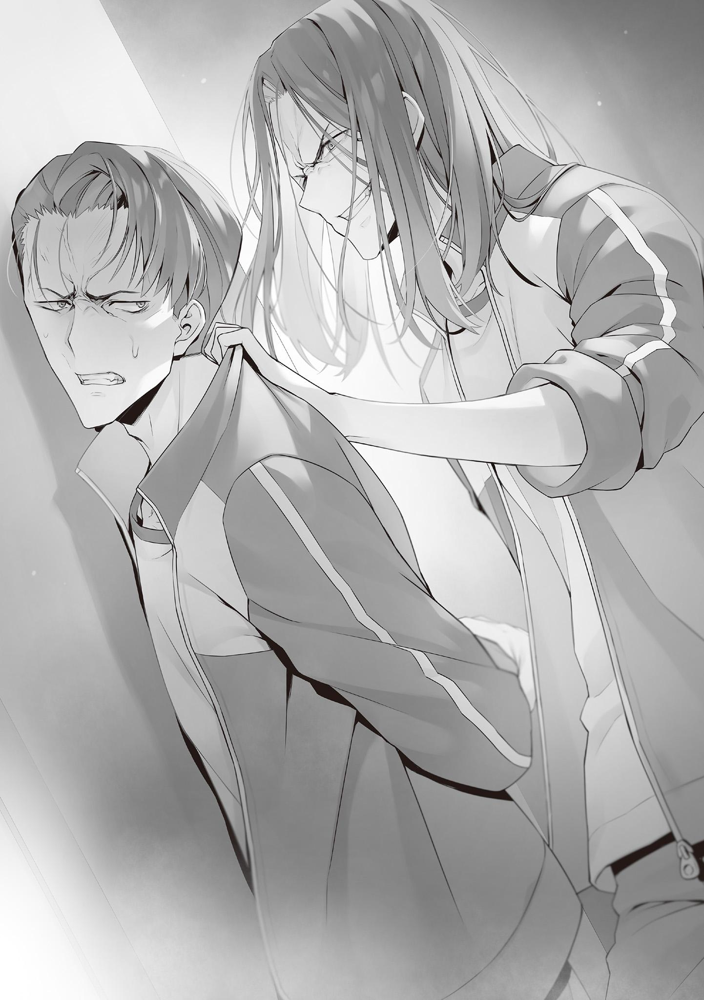
—Entonces, ¿una conversación casual... requiere una intervención o algo así?
—No. Y también te lo dije antes, ¿verdad? O ignoras a Sakayanagi o, si es posible, le infliges daño psicológico y la acorralas a conciencia. ¿Has interpretado eso como una charla divertida, Ishizaki?
—¡De ninguna manera!
—Así es, ¿no? Tú, alguien más inteligente que Ishizaki, deberías haberlo entendido.
En realidad, Tokitou hacía exactamente lo contrario.
Habían llegado informes de que a menudo era visto cuidando y apoyando a Sakayanagi, no sólo teniendo conversaciones casuales.
—Incluso le dijiste a Isoyama, que te vio hablando, que se callara, ¿no?
Deberías haber sabido a qué orden obedecería, si la mía o la tuya.
Ishizaki, que escuchaba cerca, asintió agresivamente varias veces.
—Aprende la lección, Tokitou. Te hará las cosas más fáciles. Incluso Ryuuen-san te perdonará.
Si juraba obediencia aquí, al menos se liberaría de las ataduras.
Pero Tokitou se mordió el labio con fuerza y fulminó con la mirada a Ryuuen mientras trataba de sacudírselo de encima.
—Yo... yo sólo...
—¿Sólo qué?
Sin que tuviera sentido seguir ocultando algo, y sintiéndose tonto por intentarlo, Tokitou escupió sus agitadas palabras.
—¡Sólo quería consolar a Sakayanagi, que estaba triste por la expulsión de su amiga...!
—Huh. ¿Tanto quieres posser12 a Sakayanagi?
—¡No, no es eso! ¡No es eso!
—¿En serio? A mí me parece que sí.
Ryuuen, riendo, continuó con sus palabras.
—¿Entonces debo preparar un escenario para que la asaltes? Incluso esa mujer tan serena quedará destrozada física y mentalmente si la posees.
Ante tan diabólico susurro, la ira de ToKitou se disparó por las nubes en un instante. Con un repentino aumento de fuerza, se liberó de la restricción de Ryuuen.
—¡No te metas conmigo!
Llevado por sus emociones enfurecidas, intentó agarrar a Ryuuen con ambas manos, pero su figura riendo desapareció de su vista. Recibió una patada voladora desde abajo, apretó los dientes y volvió a ser sujetado.
—Jejeje, no te lo tomes en serio. Pero si te animas, podría dejarte asumir el papel de acorralar a Sakayanagi.
—...No te obedeceré... ¡Nunca aceptaré esto...!
Se negó a ceder ante la amenaza y parecía haber expresado su intención de continuar con su trato hacia Sakayanagi.
Reconociendo que su espíritu y determinación eran genuinos, Ryuuen no detuvo su duro tratamiento.
—¿Entonces te haré entender con tu cuerpo?
—No te metas conmigo, no puedes-
Antes de que Tokitou pudiera terminar de hablar, Ryuuen cerró su puño izquierdo y lo clavó en el abdomen de Tokitou sin vacilar.
—¡Ugh...!
Con un aullido agónico por el intenso dolor desconocido, las rodillas de ToKitou se doblaron.
Sin embargo, el agarre de Ryuuen sobre él no le permitió descansar en el suelo.
—Aquí no hay cámaras de vigilancia como en la escuela. ¿Verdad, Ishizaki?
—¡Sí! ¡He confirmado que no hay ninguna en esta zona!
—¡Pensar que obedecerías a un tipo así...!
Condenó Tokitou, irritado por la actitud de Ishizaki.
—Entiendo lo que quieres decir, Tokitou. He estado desbocado con el control total de la clase, pero una vez renuncié a esa posición. Debes haberte sentido bien entonces, ¿verdad?
—Sí... ¡Me sentí como si hubiera expulsado al rey desnudo...![13]
Ante el despiadado comentario de Tokitou, Ishizaki se llevó la mano a la frente, como diciendo: "¡Oh, cielos!".
Si decías algo irrespetuoso, te purgaban. Esa era la norma, y estaba arraigada en su cuerpo.
Sin embargo, Ryuuen abrió los ojos divertido en lugar de infligir más dolor físico.
—Qué lástima. Después de todo, he vuelto a mi antigua posición y hago lo que me da la gana. Debe de ser frustrante.
Se miró a sí mismo objetivamente, sin necesidad de pensar en cómo le percibían las personas que tenía debajo.
Dicho esto, Ryuuen no cambió su actitud.
—¿Me odias?
—Te odio... a muerte...
—Entonces no te contengas. Demuéstrame que puedes derribarme por la fuerza. No huiré ni me esconderé. Pero si levantas el puño, te acorralaré pase lo que pase. La única salida es la expulsión. Prepárate para eso.
Todos, no sólo Tokitou, comprendían bien que Ryuuen no temía a la derrota.
Por eso sólo se alzarían en revuelta si estaban absolutamente decididos a derrocarlo.
—¿Entendido? Este es mi consejo. Si lo entiendes, no vuelvas a ayudar a Sakayanagi.
A pesar del dolor en su brazo inmovilizado, le dijo suavemente que aún podía dar marcha atrás.
—¿Y si... desobedezco... tu orden...?
Ryuuen sonrió agradablemente ante la pregunta de Tokitou, que no necesitaba ser formulada.
—Te aplastaré. Así de simple.
Lo mismo ocurriría aunque no levantara el puño.
Atacaría implacablemente a aquellos que no obedecieran.
—¡...!
A pesar de ser amenazado, Tokitou continuó mirando a Ryuuen sin perder su espíritu rebelde.
—Eso está bien, Tokitou. Esa parte de ti me parece interesante. Así que veamos cuánto tiempo puedes mantener esa mirada.
Mientras miraba su brazo dolorido, en esta ineludible situación, se decidió de inmediato.
—Puedes estar tranquilo sabiendo que no dejaré que Ishizaki te ponga una mano encima.
Ryuuen, que dio a Tokitou el tiempo necesario para recuperar el aliento y el derecho a golpear primero, dio un paso atrás y ensanchó los brazos.
—Lo haré... No perderé... ante alguien como tú...
Se tranquilizó y frotó los puños.
Había una brecha significativa en sus habilidades de combate.
Pero estaba preparado para ir con todo y golpear a Ryuuen en la cara al menos una vez.
Si estaba preparado para el contragolpe, debería ser capaz de hacerlo.
Justo cuando estaba a punto de decidirse, apareció una persona inesperada.
—Vine buscando a Paisen[14]. Lo envié a hacer un recado, pero no volvió,
¿y qué me encuentro aquí?
El que apareció en escena, con la mano en el cuello, era Housen, de la clase 1-D.
Él tenía una larga relación con Ryuuen desde la secundaria.
—¿Qué está pasando, Tokitou-paisen?
—...No es nada...
Aunque estaban en el mismo grupo, Tokitou no podía llorarle a su kouhai de primer año.
Pero era imposible que no pasara nada cuando se enfrentaba a Ryuuen con el puño cerrado. Él tenía orgullo como senpai que no podía llorar a su kouhai de primer año, pero esto también era un problema dentro de la clase. No quería causar ningún problema a su grupo por esto.
—Piérdete. Estás en el camino.
Ryuuen trató de espantarlo con un leve gesto de la mano, diciendo que estropearía el ambiente.
—Si no pasa nada, ve a comprarnos bebidas a los de primer año ahora mismo.
Housen, por su parte, ignoró a Ryuuen y se dirigió a Tokitou en tono enérgico.
—¿Eh? ¿Bebidas? ¡Qué demonios...!
ToKitou, que había recibido el derecho de golpear primero, se quedó estupefacto y perdió su oportunidad. El brazo de Ryuuen volvió a extenderse. Apretó su antebrazo izquierdo contra su garganta y lo estampó contra la pared.
—¿¡Uf...!?
Tokitou dejó escapar un grito de agonía, incapaz de expresar completamente su dolor.
—Atrás, Housen. No voy a lidiar contigo ahora.
—No me importa eso. Estoy hablando con Tokitou-paisen. Tú eres el intruso, así que retrocede. ¿O quieres morir?
—...¡Ja! ¿Viniste hasta aquí para buscarlo? No hagas que me duerma.
Ryuuen sospechaba que alguien estaba detrás de Housen.
—No, Housen no tiene nada que ver con esto.... Solo le dije a Ishizaki que fui llamado a este lugar.
—¿Eh? Oye Ishizaki, ¿qué clase de mensaje enviaste?
—¿Eh? ¡Fue uno normal! Sólo le dije que se apresurara al área del aula experiencial, ¡eso es todo!
El descuidado error de Ishizaki de no tomar en cuenta los riesgos potenciales al decirle a la gente a donde ir cuando están abandonando el dormitorio.
Al ver a Ryuuen sonreír ligeramente por la nariz, Ishizaki se dio cuenta de que había cometido un error.
—¡Lo siento, Ryuuen-san! Oye, Housen, ¡vamos por ahí!
Ishizaki intentó enmendar el error agarrando el grueso brazo derecho de Housen, pero se lo sacudió con facilidad.
—No me toques. Te mataré.
—¡Uh...!
Ishizaki se estremeció ante la intensa intimidación de Housen, que era completamente diferente a la del temido Ryuuen.
En lugar de irse, Housen comenzó a caminar hacia Ryuuen y Tokitou.
—Parece que quiere jugar. Albert, encárgate de este tipo.
Sin hacer ruido, Albert apareció frente a Housen, impidiéndole el paso.
—Como siempre, no puedes hacer nada sin confiar en tus subordinados.
—Luchar no consiste en cargar solo como un idiota.
Housen bostezó, e inmediatamente escupió una flema al suelo.
—Siempre he querido luchar contra ti, Albert. Podría ser más divertido que jugar al tenis de mesa.
En la caótica situación impropia de un campo de entrenamiento, Ryuuen apartó la mirada de Housen y miró directamente a Tokitou.
—Ahora que la molestia se ha ido, continuemos la pelea-
—Disculpa, pero ¿podrías soltar tu mano, Ryuuen-senpai?
—¿Eh?
La persona que habló para detener a Ryuuen, que estaba a punto de imponer más castigo, fue Utomiya Riku de la Clase 1-C.
—¿Qué? Utomiya, ¿tú también viniste?
—¿Q-Qué está pasando?
El único que estaba perturbado era Ishizaki.
—¿Eh? Oh cierto, estabas escuchando a Tokitou-senpai también.
—Vine a ver si ibas a levantar la mano contra Senpai.
—¿Dónde están tus ojos? De ninguna manera voy a levantar la mano.
A pesar de mirar a Housen con desprecio, Utomiya caminó hacia Tokitou y Ryuuen.
Ishizaki intentó detenerlo, pero se vio arrastrado por el largo brazo de Housen, que sujetaba la manga de su camiseta.
Sin nadie que lo detuviera, Utomiya acortó la distancia sin miedo y agarró la parte superior del brazo de Ryuuen, que seguía sujetando a Tokitou.
—Tokitou-senpai es miembro de mi grupo. Si resulta herido en este lugar, podría tener un efecto mañana. Por mucho que sea un asunto de clase, no puedo pasarlo por alto.
Sin necesidad de explicaciones, Utomiya intervino para mediar en la situación, intuyendo problemas por la tensa atmósfera.
—Me da igual. No te unas a los ladridos en esta mierda de reunión de intercambio.
—...El problema es el tipo que está usando su posición para amenazar a otros en esta reunión de intercambio de mierda...
Lejos de retroceder, Utomiya aumentó su ira y habló en contra de Ryuuen.
—¿Qué? Entonces, ¿por qué no intentas detenerme?
—¿Estás de acuerdo con eso? Te avergonzarás frente a tus amigos como senpai.
Habiendo renunciado a usar un lenguaje cortés, Utomiya rápidamente se preparó para una pelea.
—¡Oye, oye, oye! ¡No empieces con Ryuuen tú solo!
Housen, oponiéndose al desarrollo, gritó con fuerza por todo el pasillo.
—Cállate, Housen. No te necesito. No causes problemas innecesarios.
—¿Eh? ¿Qué te pasa? ¿Sabes con quién estás hablando?
—Aunque hable con un gran gorila, las palabras no llegarán.
Al parecer, Utomiya venía a apoyar a Tokitou, pero trataba a Housen de la misma manera que a Ryuuen.
—Bien, entonces. Empezaré contigo antes que con Albert-paisen.
—¿Cuántas veces tengo que decírtelo? Me enfrentaré a ti cuando quieras.
Al ver que los de primer año empezaban a pelearse, Ryuuen no pudo evitar soltar una carcajada ante lo desconocido de la escena.
—Jejeje. Esta escuela se está volviendo bastante ruidosa. Pensé que estaba lleno de gente aburrida y seria cuando entré, pero ahora, bastantes de sangre caliente están mostrando sus caras. Me parece más que bienvenido.
Con la incorporación de Housen y Utomiya, Ryuuen soltó su agarre sobre Tokitou.
Quitó la mirada de Tokitou, que estaba sentado y tosiendo bruscamente.
—Tomaré el combate de revancha aquí mismo, Housen. Me encargaré de ustedes, los de primer año, de una vez.
Ryuuen, a quien ya no le importaba Tokitou en esta situación, dijo.
—Suena bien. Este campamento se está poniendo divertido. Primero,
¡desaparece!
El poderoso puño de Housen fue atrapado por la mano de Albert, y los labios de Albert se cerraron con fuerza.
—¡Oh, puedes soportarlo! Así es como debe ser!
La situación empezaba a parecer que no se calmaría a menos que se volviera violenta, pero la fuerte voz de Housen puso fin abruptamente a la situación.
—¿Qué está pasando? ¿Qué están haciendo?
Varios chicos y chicas, encabezados por los de tercer año, empezaron a aparecer por la zona de aulas experienciales tras escuchar el alboroto.
—Tsk. Se estaba poniendo interesante.
—Maldita sea.
Housen, ignorante de ser quien alzó la voz, chasqueó la lengua al igual que Ryuuen.
—Esto no es una pelea, ¿verdad?
—No, no lo es. Sólo estábamos teniendo una conversación divertida.
Utomiya inmediatamente fue frente a los de tercer año y cubrió todo con esa afirmación.
Al ver lo mal que se había puesto la situación, Ryuuen y Housen, sin dejar de mirarse, naturalmente se dieron la espalda y mantuvieron las distancias.
—Vámonos, Albert, y tú también, Ishizaki. Te enseñaré muchas cosas más tarde.
—¡S-Sí! ¡Gracias!
Los tres ignoraron a los dos estudiantes de primer año y a ToKitou, que los miraban con desprecio, y abandonaron el lugar.
Mientras se iba, Albert miró la gran espalda de Housen y murmuró.
—Su capacidad de lucha puede ser igual o mayor que la de Ayanokoji. Es un tremendo novato.
El peso del puñetazo que recibió fue tan intenso como el de Ayanokouji, como le había indicado el entumecimiento de su mano.
Era una afirmación reveladora, que implicaba que no era buena idea pelear con él.
Sin embargo, Ryuuen no pudo evitar reírse ante el comentario de Albert.
—No me hagas reír. Si se trata de simple poder, podría ser capaz de competir con él, pero si comparas su fuerza total, no hay comparación. La fuente de la fuerza de Ayanokouji no es tan simple.
Después de abrir su puño y mirar su palma, Albert recordó el incidente en la azotea y estuvo de acuerdo.
Su corazón recordó. Era un oponente que trascendía los estándares ordinarios de peso.
—Pero a Tokitou, parece que le gusta bastante Sakayanagi.... ¿No tenemos que hacer algo? Como la traición de Hashimoto...
Ryuuen ya había anticipado la ansiedad de Ishizaki sin que tuviera que expresarlo con palabras.
—Tokitou no es tan estúpido. Deberíamos dejarlo así. Ya lo dejamos bastante trincado.
—...Sí. Si tú lo dices, Ryuuen-san.
—Nos centraremos en la Clase A. El más problemático ahora mismo es Kitou, no Sakayanagi. Podría volverse loco en cualquier momento.
—Se siente como una guerra.
—Guerra, ¿eh? En efecto, cualquier cosa podría pasar de aquí en adelante.
Los exámenes de fin de año que comenzarán pronto.
Ryuuen, que comprendió que ocurriría una gran agitación, comenzó a prepararse para lo que vendría.
[12]: ( 楽 ) Aunque no es inherentemente sexual de ninguna manera, Ryuuen interpretó a propósito 'comodidad' como un doble sentido. La palabra 'Fuck' no es un error de traducción. Ver ( 犯 る .) (NT: igual, devivado de “fuck” se pudo haber hecho una traducción más “agresiva”, pero decidí dejarlo más “suave”, por la explicación anterior).
[13]: ( 裸 の 王 ) De El traje nuevo del emperador, se refiere a alguien en una posición de poder que niega o no es consciente de sus propios defectos o errores, mientras que otros tienen demasiado miedo para señalarlos.
[14]: ( パ イ セ ン ) Paisen, una forma irrespetuosa/de argot de decir senpai, derivada de intercambiar sen y pai.
PARTE 3
En aquel momento, no tenía forma de saber que había una guerra entre Ryuuen, Tokitou y Housen. Después del baño, estaba sentado en el sofá del vestíbulo, mirando tranquilamente al techo.
Estaba justo al lado del asiento donde Sakayanagi estaba sentada esta mañana.
La investigación solicitada por Hashimoto -me puse en contacto con él esta mañana y estaba personalmente satisfecho con los resultados, pero no le había informado de nada, así que probablemente seguía esperando que diera resultados. Aunque no me apetecía, pensé que al menos debía hacer algo que lo pareciera, así que vine aquí.
—¡Ah~! ¡Ayanokouji-kun! Oye, ¿¡puedes escuchar mi historia~!?
Satou, que estaba a punto de volver a su habitación compartida, cambió su rumbo cuando me vio y se acercó con una mirada frustrada.
—¿Qué pasó?
—Es la reunión de intercambio... la reunión de intercambio. Estaba aspirando seriamente a lo más alto, así que...
No trató de ocultar su decepción y sus hombros se hundieron dramáticamente.
—Quería comprar algo, y me esforcé al máximo a mi manera. Uf.
El grupo de Satou había terminado 12 combates en dos días, cosechando siete victorias y cinco derrotas.
Lo estaban haciendo lo suficientemente bien, pero estaban en una situación difícil si querían terminar en tercer lugar.
—Si siguen trabajando así de bien, hay muchas posibilidades de que acaben entre los diez primeros, ¿no?
Podrían conseguir 5000 puntos sólo por lograr ese puesto. No es una mala cantidad.
—Sí, definitivamente ese es el objetivo. Pero lo que me preocupa es que la motivación del grupo ha bajado bastante por los resultados de hoy...
Si aspiraban a una clasificación alta, era natural sentirse decaído.
La diferencia entre los de arriba y los de abajo era extrema en esta reunión de intercambio.
Los grupos perdedores tenían 11 o 12 derrotas en 12 juegos, y simplemente no podían ganar.
Como resultado, las victorias se concentraron en grupos como el de Nagumo, que se lo estaba tomando en serio.
La diferencia entre el grupo del tercer puesto y el grupo de Satou era de tres victorias. Una cantidad bastante significativa.
—El último juego por hoy-me arrepiento...
—¿Cuál fue el último grupo al que te enfrentaste?
Pregunté porque no sabía contra qué grupo se enfrentó el grupo de Satou.
Satou mostró una cara ligeramente arrepentida, pero me dijo.
—Fue el grupo de Minamikawa-senpai.
Ella era de la clase 3-C. Recuerdo que Onodera estaba en el grupo de Minamikawa.
Era bien sabido que Satou y Onodera, que habían estado enfrentadas desde el principio, no se llevaban bien. Si sentían que se habían expresado mal, parecía razonable suponer que esa era la causa detrás de su discordia.
Tanto Satou como Onodera eran las típicas estudiantes femeninas, por lo que podía ver.
Desde la perspectiva de un extraño, no sería raro que se llevaran bien, pero no era así como funcionaban las relaciones humanas.
¿Todavía no le tiene cariño a Onodera? Sería fácil preguntarlo, pero no era algo que debiera preguntar.
—No tienes más remedio que cargar con ese pesar mañana. Todavía hay una oportunidad dependiendo de cuánto te esfuerces.
—...Sí.
Tras cambiar de tema y hablar un rato, Satou fue llamada por su grupo y se marchó.
Después de eso, sin ganar nada significativo, volví a mi habitación compartida.
—Aquí no hay nadie.
La habitación estaba vacía excepto por un futón un poco desaliñado.
Cuando encendí mi teléfono, encontré un mensaje de Hashimoto que había llegado hacía unos diez minutos.
[Voy a la habitación de las chicas, así que nos vemos allí].
Era bastante despreocupado para alguien que solicitaba una investigación.
Bueno, ir a la habitación del sexo opuesto a jugar podría ser uno de los elementos básicos de un campo de entrenamiento.
Después de arreglar el futón pisoteado, decidí dirigirme a la habitación de las chicas.
Unos cinco minutos después de leer el mensaje de Hashimoto, llegué a la habitación compartida de las chicas.
El mismo edificio, la misma distribución, los mismos muebles y decoraciones.
En realidad no había ninguna diferencia con la habitación compartida que utilizaban los chicos.
La única diferencia era la presencia del sexo opuesto.
Aunque no es ni más ni menos que nuestra habitación compartida, ¿por qué parece tan diferente?
Percibirlo como un espacio bueno o malo dependía de cada uno.
Desde las estudiantes de primer año hasta Kiryuuin de tercero, todas las chicas estaban presentes.
Todos los chicos de primer año se veían tensos pero algo felices.
Yamamura lucía un poco decaída, con una expresión más oscura que de costumbre. No tenía ningún papel en esta reunión de intercambio, y lo que menos sabía era cómo estaba pasando su tiempo en el grupo.
—Hola, viniste.
—Tú me llamaste.
Los chicos parecían estar divirtiéndose más de lo que pensaba.
Pero la energía de las chicas era más baja de lo que pensaba. En otras palabras, no estaban divirtiéndose.
Esos dos datos entraron en mi cerebro en un instante.
Probablemente, Hashimoto había llevado a los chicos al cuarto de las chicas para jugar, un poco a la fuerza.
—Estamos un poco atascados. ¿Tienes algo para animar las cosas? El ambiente de la habitación es un poco pesado, ¿no? ¿Qué tal una frase para disiparlo?
—No tengo un chiste así, pero ¿qué tal esto para divertirnos un poco?
Saqué un estuche que llevaba en el bolsillo del jersey y se lo enseñé.
—Qué bonito. Eres muy considerado.
Como la lista de juegos para el aprendizaje experiencial también incluía cartas, había muchas preparadas y se podían conseguir inmediatamente.
Hashimoto pareció agradecerlo, extendió la mano y pidió que se las prestara.
Cuando las tomó, abrió el estuche y sacó una baraja de cartas.
—Jugar a las cartas es el más clásico de los clásicos, ¿verdad, Ayanokouji?
Kiryuuin , que había estado sentada mirando su teléfono, me habló sin levantarse.
—Una vez me dijo un senpai rubio que jugar a las cartas es un clásico de los campos de entrenamiento.
—¿Eh? ¿Podría ser Nagumo?
Se incorporó, recostándose en su silla, y preguntó con interés.
Cuando asentí en señal de confirmación, Kiryuuin se rió un poco como si el hecho le pareciera divertido.
—Ese hombre también hace cosas tan cliché.
—Además, hoy fue la primera vez que nuestro grupo perdió en un juego de cartas, así que también estoy reflexionando sobre ello.
—Jugar a las cartas, ¿eh?
Morishita, que había estado mirando por la ventana cerca de Kiryuuin , murmuró como si se hubiera dado cuenta de algo.
Entonces, mientras estaba sentada en seiza[15], se acercó golpeando los tatamis con ambas manos.
—Vamos a hacer eso. Eso. El juego en el que la persona que tiene el Joker al final pierde.
—Pareces muy emocionada... ¿Te gusta jugar a las cartas?
—No puedo decir si me gusta o no. Nunca lo he hecho antes.
—¿Nunca lo has hecho? ¿De verdad que aún existen personas parecidas a los fósiles?
Hashimoto se sorprendió, con los ojos muy abiertos.
—No había gente con la que mereciera la pena jugar a las cartas.
¿Significa eso que no tenía amigos con los que pudiera hacer esto hasta ahora?
—Espera un momento. Qué raro. ¿No te habías dado un cinco por ser buena a las cartas?
Efectivamente, Morishita se había dado a sí misma la calificación más alta, un cinco, por jugar a las cartas.
—Pensé que destacaría aunque no tuviera experiencia, dado mi talento. Al fin y al cabo, no se trataba de confirmar si se me daba bien o no, sino de evaluar de uno a cinco si tenía confianza, ¿no? Así que un cinco.
Respondió con seguridad, hinchando el pecho. Parecía muy segura de sí misma.
—Pero no te llamaron para el juego de hoy.
Sólo Kiryuuin , la líder, sabía la respuesta a por qué no fue elegida.
—Así es. Por qué no me eligieron?
—¿No es sospechoso decir que tienes confianza para jugar a las cartas?
Por eso te dejé fuera.
Parecía que había hecho ese juicio basándose en la lista de puntuación. Su impresión era correcta.
—Bueno, no importa eso. De todos modos, juguemos a las cartas. Por favor, distribúyelas rápido, Ayanokouji Kiyotaka.
Se nota que tiene muchas ganas de jugar, así que no me siento mal por traerlas.
Pero no todos pueden jugar a la vez, así que, ¿qué hacer?
—¿Qué te parece esto? Cuatro jugadores por partida. Un partido sólo para chicos y otro sólo para chicas. Luego un juego mixto.
Hashimoto, dándose cuenta de mi indecisión, sugirió una forma de organizar a los jugadores.
—No es mala idea. Hagámoslo.
Morishita ya estaba ansiosa, sin mostrar signos de rechazo. Pensaba que la callada Tsubaki no querría jugar, pero por lo visto las demás alumnas de primero, Tsubaki incluida, estaban sorprendentemente entusiasmadas.
—¿Qué tal si vienes, Yamamura?
Llamé a Yamamura, que estaba sentada sola a lo lejos, pero negó con la cabeza de un lado a otro.
—Yo... miraré.
—¿Estás segura?
Yamamura, que en ese momento no tenía intención de participar, asintió levemente con la cabeza en señal de negativa.
—No hay necesidad de incluir a alguien que dice que no quiere jugar.
Vamos, empecemos.
Bajo la presión de la enérgica Morishita, la partida de cartas de las chicas comenzó de inmediato.
—Esta reunión de intercambio es una buena reunión de intercambio[16].
—Esa es una evaluación barata. ¿Estás satisfecha sólo porque sabes jugar a las cartas?
murmuró Hashimoto, sentado con las piernas cruzadas, apoyando el codo en la rodilla.
—Estoy satisfecha, pero por favor no mires mis cartas por detrás.
—No revelaré tu mano.
—No sé cuándo Hashimoto Masayoshi podría traicionarnos.
Mientras decía eso, escondió su mano con su cuerpo.
Hashimoto está sonriendo amargamente, pero realmente es un traidor...
—Pero ahora empieza a estar claro.
Morishita estaba teniendo su primera experiencia, pero no sólo la estaba disfrutando, también estaba haciendo su propio análisis.
—Hay varias estrategias en este juego.
Diciendo eso, Morishita sostenía una sola carta en una de sus manos, de modo que destacaba llamativamente.
—Por favor, adelante, Shiina Hiyori. No dudes en sacar la carta que quieras.
—De algún modo... tengo un poco de curiosidad por esta carta.
—¿Es así? Esta es la estrategia avanzada que se me ocurrió.
Por cierto, Hashimoto ya no podía verlo, pero desde donde yo estaba sentado, podía ver claramente la mano de Morishita.
Por lo visto, la carta aislada parecía ser el Joker.
Como era tan sospechosa, no había forma de que fuera el Joker, ese debía ser el objetivo.
Desde un punto de vista estratégico, podría no ser un mal movimiento.
Aunque no se podía probar que la probabilidad en sí aumentara, tenía un efecto psicológico lo suficientemente grande como para que quisiera sacar esa carta, para que quisiera intentarlo.
—¿Qué debo hacer...?
Hiyori, recelosa, intentó escapar hacia las cuatro cartas de la mano derecha de Morishita, pero las yemas de sus dedos se detuvieron.
La única carta que tenía en la mano izquierda la molestaba.
—Por favor, elige como quieras.
La falta de emociones de Morishita, combinada con su personalidad, constituía una distracción perfecta.
Después de pensarlo mucho, Hiyori se quedó hipnotizada y acabó sacando la única carta que tenía en la mano izquierda.
La atrajo hacia sí, le dio la vuelta y se decepcionó al descubrir que la carta que había elegido era un comodín.
[15]: ( 正 座 ) Seiza, postura en la que uno se sienta sobre los talones con las piernas dobladas bajo los muslos y las nalgas apoyadas en los talones, manteniendo la espalda erguida y recta.
[16]: Esta es su forma de hablar.

Todos debieron darse cuenta de quién había sacado el comodín por su obvia reacción.
—Todavía tienes mucho que aprender si lo muestras en tu cara.
Después de eso, el juego continuó en silencio durante unas cuantas rondas.
La primera en salir fue la estudiante de primer año Eikura, seguida de Hatsukawa.
Morishita, que había pasado con éxito el comodín al principio, acabó perdiendo contra las dos estudiantes de primer año en el siguiente emparejamiento de cartas, y se llegó al enfrentamiento final con Hiyori.
Y entonces se llegó a un escenario en el que Hiyori tenía dos cartas y Morishita tenía la última.
—Por favor, adelante, Morishita-san.
Ella extendió suavemente dos cartas de la misma manera.
Morishita, que miraba atentamente, agarró con la punta de los dedos la carta que estaba a la derecha desde nuestra perspectiva.
Pero no la sacó inmediatamente. Le hizo una pregunta a Hiyori.
—¿Es ésta?
—...¿Qué?
—Pensé que podría no ser el Comodín.
—No puedo responder a eso.
—Creo que es el Comodín.
—Ya veo... entonces tal vez quieras evitarlo. ¿Quieres cambiar a la carta opuesta?
—¿Te parece bien? Perderás, ¿sabes?
—Pero en realidad no sé cuál es el Joker.
—Eres una ingenua, Shiina Hiyori. El misterio está resuelto.
Morishita soltó la carta que tenía en la mano, agarró la de la izquierda y tiró de ella con fuerza.
La carta que Morishita nos mostró era... un cinco de corazones.
—Yo gano.
—Perdí.
Hiyori se veía divertida, aunque hubiera perdido. Sin embargo, parecía decepcionada.
Por otro lado, Morishita quería ganar a toda costa.
Después de eso, jugaron una partida sólo de chicos, seguida de otra mixta con chicos y chicas.
—¡Pasemos a la siguiente partida! ¡La siguiente partida!
Morishita seguía queriendo jugar, pero yo expresé una preocupación que me rondaba la cabeza desde hacía tiempo.
—¿No es hora de que Yamamura se una?
—...No, estoy... bien...
Nos había estado observando todo el rato, pero su mirada no se posaba en el juego.
Se veía distraída y nada enérgica.
Esperaba que jugar a las cartas la animara, pero quizá era mucho pedir.
—Yamamura-san, ¿no te unes a nosotros? Es divertido.
En ese momento, Hiyori se acercó y la invitó.
—Pero...
—Vamos, únete a nosotros, por favor.
Incapaz de rechazar el amable comportamiento de Hiyori, Yamamura se unió a regañadientes. Pero en cuanto empezó el juego, surgieron problemas inesperados.
—Um, es mi turno...
—Ups, lo siento, Yamashita-senpai. Por favor, adelante y saca.
Yamamura, que estaba a punto de ser saltada por la estudiante que estaba a su lado, se apresuró a ofrecer sus cartas.
Se equivocaron con su nombre, pero ni siquiera se molestó en intentar corregirlo.
A pesar de que todos estábamos sentados en círculo, la alumna que sacaba de la mano de Yamamura se la saltó.
Tal vez había estado evitando el juego de cartas porque temía que esto ocurriera.
Un solo error podía pasarse por alto, pero cuando ocurría repetidamente, era perceptible incluso para mí, que lo observaba desde fuera.
¿Era realmente tan débil la presencia de Yamamura?
Hacía tiempo que conocía sus habilidades como observadora, pero normalmente era imposible pasarla por alto a simple vista.
Sin embargo, no estaba claro si esto se debía a que yo intentaba conscientemente estar atento a Yamamura o a que los demás no le prestaban atención.
Decidí preguntarle a alguien la próxima vez que tuviera ocasión.
PARTE 4
En el camino de vuelta de la habitación de las chicas.
Cuando miré mi teléfono, me di cuenta de que ya era bastante tarde, y sólo faltaban unos 20 minutos para que se apagaran las luces.
—¡Vaya, fue divertido! Pero, ¿por qué huelen tan bien los cuartos de las chicas?
—Claro, claro... ¿Y no era linda Tsubaki-san?
—¿En serio? ¿Eres fan de Tsubaki?
Los estudiantes de primer año no podían ocultar (o no querían ocultar) su emoción por su primera visita a la habitación de las chicas.
—Parece que se divirtieron.
Al ver a los emocionados kouhais, Hashimoto se mostró satisfecho de que mereciera la pena llevarlos.
Pero al momento siguiente, la sonrisa desapareció del rostro de Hashimoto, sustituida por una expresión severa.
—Lo siento, pero ¿podrían volver ustedes primero? Ayanokouji, ¿podrías quedarte conmigo un poco más?
Cuando les dio instrucciones a todos menos a mí, accedieron todos obedientemente y volvieron a su habitación compartida.
—¿Qué pasa?
—Te irás a dormir cuando vuelvas a tu habitación, ¿verdad? No he oído nada sobre Sakayanagi.
—Si esperabas enterarte de algo, siento decepcionarte, pero no hay nada.
—Pero hoy te encontraste con ella, ¿verdad?
Efectivamente, me encontré con Sakayanagi por la mañana.
Si él obtuvo información de alguna parte o simplemente estaba tratando de atrapar una mentira, no necesitaba indagar.
En cualquier caso, mi respuesta ya estaba decidida.
—La presioné un poco, pero es Sakayanagi. Sinceramente, no pude sacarle mucho. Sabes que es una oponente dura, ¿verdad?
Independientemente de lo que dijera, Hashimoto seguramente sospecharía, así que continué hablando con calma.
—Además, no tenía tiempo para mantener una conversación pausada.
Incorporé una sutil excusa a mis palabras para evitar ahondar demasiado en el asunto.
—...Bueno, está bien. De cualquier forma, el resultado no cambiará en el futuro.
Ese resultado, sobra decirlo, era algo que comunicaría Hashimoto, no yo.
—Sakayanagi y Ryuuen abandonaron la alineación ganadora el segundo día. Es como un final muy anticlimático para un torneo muy anticlimático.
El grupo de Sakayanagi tuvo cinco victorias y siete derrotas en doce partidos. El grupo de Ryuuen tenía tres victorias y nueve derrotas en doce partidos.
A menos que hubiera una gran sacudida en los siete enfrentamientos del día siguiente, sus posibilidades de clasificar alto eran desesperadas.
—Bueno, supongo que renunciaron a la reunión de intercambio. Esos dos no aparecieron en ninguna de las sesiones de aprendizaje experimental.
Probablemente desde el principio no tenían intención de recibir ninguna recompensa, ¿verdad?
—Eso parece, pero no se ven muy contentos por ello.
—Pues claro. Es inquietante. Es extraño que esos dos abandonaran tan abruptamente.
Hashimoto sospechaba, naturalmente.
Ambos grupos desaparecieron de los primeros puestos sin volver a aparecer.
Podía entender que Hashimoto se mostrara cauteloso sólo por los resultados.
Pero probablemente era una preocupación innecesaria.
Ryuuen valoraba los puntos privados, pero como se había anunciado de antemano, los puntos privados disponibles en este campamento eran especiales.
Estaban limitados a las compras.
Por supuesto, era bueno tenerlos, pero no era descabellado que Ryuuen no les diera prioridad. Más bien, poder moverse libremente durante tres días podría suponer una mayor ventaja desde el punto de vista de la información.
Por ahora será mejor vigilar la situación de Sakayanagi.
Por otro lado, Sakayanagi, que perdió en el examen especial de supervivencia y eliminación, debería aprovechar esta reunión de intercambio para tranquilizarse de cara al futuro.
Pasar un rato tranquilo en la naturaleza y dejar que sus heridas cicatrizaran era una de las mejores medidas. Por eso Hashimoto debería estar tranquilo, pero en realidad, no lo estaba. Intentaba mantener la calma, pero no podía ocultar su impaciencia.
—Pensé que Sakayanagi, siendo inteligente, me haría investigar de vez en cuando...
Incluso en la relajada reunión de intercambio, ella podría haber estado intentando expulsarlo: Hashimoto debía tener esa sensación de peligro.
—No es como si Toyohashi y los otros de primer año ya hubieran sido conquistados por Sakayanagi, ¿verdad?
No lo confirmó verbalmente, pero lo primero que hizo Hashimoto fue llevarse bien con los kouhais, presumiblemente para evitar que eso sucediera.
—¿Podría ser que Sakayanagi hubiera puesto un espía incluso antes de que formáramos el grupo?
—¿No entiendes mejor las relaciones dentro de los de primer año, Hashimoto?
Mucho antes de la reunión de intercambio, los kōhais habían estado trabajando como piernas de Sakayanagi desde poco después de entrar en la escuela. Eso seguía siendo cierto.
—Sí... probablemente no... Básicamente, Sakayanagi no hacía negociaciones directas. Fundamentalmente era la que interactuaba con las promesas de primer año. Pero indirectamente...
Él intentaba desesperadamente mantener su sonrisa, pero se estaba forzando demasiado.
—No es fácil expulsar a alguien en concreto, salvo en exámenes especiales.
Intenté calmarlo un poco, pero aunque mis palabras le llegaron, no pudo digerirlas del todo.
—Lo sé, lo sé, pero... es Sakayanagi. No puedo negar la posibilidad de que haga algo que no puedo imaginar.
Después de decir eso, se detuvo, tal vez dándose cuenta de que estaba atrapado en un aprieto difícil.
—Dejémoslo. Por ahora debería olvidarme de Sakayanagi.
—Eso está mejor.
Hashimoto respiró hondo, llenando sus mejillas de aire, y exhaló con fuerza para regular su respiración.
—De acuerdo, pasaré por el baño del vestíbulo antes de volver. Puedes irte a dormir antes.
—Ya casi se apagan las luces, no tardes demasiado.
—Sí.
¿Le resultaba difícil utilizar el baño de la habitación compartida, o tenía otro propósito en mente?
En cualquier caso, Hashimoto entró en el baño del vestíbulo, que estaba vacío de gente.
UNA DECISIÓN TRANQUILA
HOY ERA EL tercer día de convivencia con otros años.
Mañana por la tarde, estaríamos en el autobús de vuelta a la escuela.
La reunión de intercambio estaba llegando a su fin, y se avecinaba un combate con el grupo de Nagumo, pero Horikita e Ibuki seguían apareciendo por la mañana temprano.
—Tú, hoy haz el combate con nosotras con los ojos vendados.
—Eres exigente de entrada, y además es una petición poco razonable.
—Tengo que patearte al menos una vez, o me frustraré.
Una propuesta tan poco razonable era obviamente inaceptable. Si el oponente fuera inexperto en artes marciales, sería una historia diferente, pero contra Horikita e Ibuki, incluso yo lucharía si tuviera los ojos vendados.
Especialmente si me centraba en la defensa, sería asumir un riesgo innecesario.
—Vendarle los ojos no ayudará con el entrenamiento, así que rechazad.
—Bien dicho, Horikita.
—Pero si insistes, hagámoslo después del entrenamiento especial.
—No es así, Horikita.
Corregí a Horikita en menos de un segundo.
—Puedo entender tus sentimientos, Ayanokouji-kun. Pero primero, debemos dar prioridad a derrotar a Amasawa-san, ¿verdad?
—...Bueno, sí.
Aunque estaba ayudando con bastante devoción, era algo bastante fuerte de decir.
En cualquier caso, estaban decididas a tener éxito en su venganza contra Amasawa pasara lo que pasara.
—Entonces empecemos ahora mismo...
Justo cuando iba a hablar, Ibuki me detuvo.
—Baño.
—¿Todavía no terminaste?
—Creía que estaba bien. Pero cuando hace frío, tengo que ir un poco, así que espérame.
—De verdad...
Aunque Horikita estaba exasperada, era cruel decirle que se aguantara.
Si por casualidad, se movía mucho y se le escapaba, sería un gran problema.
Mientras despedía a Ibuki que volvió al baño, Horikita empezó a hablar.
—Hoy me di cuenta de algo.
—¿De qué te diste cuenta?
—La razón por la que pusiste como condición el combate de revancha contra Amasawa-san en la mañana del cuarto día. Podría haber sido para aumentar la cantidad de sesiones de entrenamiento especial tanto como sea posible. Sin embargo, si querías hacer tiempo, no necesitabas limitar las sesiones a las primeras horas de la mañana; también podrías haberlas hecho discretamente a cualquier hora. La razón principal por la que elegiste el último día fue para controlar el riesgo de lesiones, ¿no? Si me lesiono en una pelea egoísta antes de que se decida la reunión de intercambio, sería inaceptable para los que estaban participando seriamente.
El grupo de Horikita era candidato al primer puesto, a diferencia del grupo de Ibuki, que perdió la oportunidad de ganar el segundo día. Como alguien que estaba en la cima de la tabla de clasificación, fue capaz de darse cuenta de eso.
—Con tus habilidades, puedes manejar estas sesiones sin lesionarme,
¿verdad?
—¿Y si yo me lesiono?
—... ¿Es eso siquiera una posibilidad?
—No, no lo es.
En cuanto respondí, mostró una expresión ligeramente irritada.
—Si una persona normal dijera eso, sin duda recibiría un ceño fruncido a cambio, así que ten cuidado. ¿Tal vez debería hacerte luchar con los ojos vendados más tarde?
—Por favor, no lo hagas. No creo que necesites contenerte contra mí. No le diría algo así a nadie más.
—¿Es algo de lo que debería alegrarme...?
—Deberías estarlo. Es un trato especial.
—No es un buen tipo de trato especial.
Recientemente, estaba teniendo más y más conversaciones casuales con Horikita.
Debía de haber otras personas en el mundo, pasadas y futuras, que mantenían conversaciones similares a las nuestras, enfadándose y riéndose entre sí.
—Esto no tiene nada que ver, pero ¿quién te viene a la mente cuando piensas en un estudiante con poca presencia?
Cuando pregunté eso, Horikita pensó un momento y luego dio su respuesta.
—Tú, Ayanokouji-kun.
—...¿Yo?
—Al menos cuando entraste por primera vez en la escuela, eras uno de los que menos llamaba la atención de la clase.
—Ya veo. En efecto.
Entre los 40 estudiantes en el momento de la admisión, si nos clasificara en términos de visibilidad, habría sido abrumadoramente más rápido encontrarme si contara de abajo hacia arriba.
—Recientemente, has ido ganando más presencia, así que ahora no aplica.
Efectivamente, comparado con el principio, creo que he cambiado mucho.
El entorno circundante había cambiado más que cualquier otra cosa.
—Me pregunto qué factores determinan lo notable o discreto que es alguien.
—Hmm, ¿es así? Si quieres pasar desapercibido o no quieres destacar, creo que lo natural es que seas inconspicuo. Tampoco es probable que hables mucho.
Todas estas características encajaban con Yamamura.
Puede que cada una no fuera gran cosa, pero combinadas, causarían un gran impacto.
—¿Pasa algo?
—No, sólo me preguntaba una cosa.
—¿En serio? Ah, sí, sobre el asunto que me pediste que investigara...
Cuando Horikita sacó el tema del entrenamiento especial, le pedí que hiciera algo.
Horikita estaba ahora informando de los resultados.
...Eso es todo lo que noté... ¿Servirá de algo?
—Sí, será muy útil. Gracias por investigarlo. Puedes considerar la petición cumplida.
Horikita, que había cumplido fielmente, no entendía el significado de aquello, pero no trató de indagar a fondo sobre mi razonamiento.
—Y por cierto, esa Ibuki sí que es lenta.
—Desde luego. Me pregunto qué estará haciendo.
Si hubiera ido al baño del vestíbulo y hubiera vuelto, no habría tardado tanto.
—¿Volvió a su habitación y se quedó dormida?
—Me gustaría pensar que no... pero con Ibuki-san, nunca se sabe.
—¿Y su teléfono?
—Dijo que sería una molestia y lo dejó en su habitación.
—Ya veo. Odio decirte esto, Horikita, pero si Ibuki no vuelve, tendremos que cancelar lo de hoy.
—No se puede evitar. La condición era que Ibuki-san luchara con nosotros.
El entrenamiento especial de ayer no fue más que una gota de agua, pero no podíamos hacer nada.
Sería mejor proponer posponerlo. Con suerte, habrá otra oportunidad de salir juntos a un lugar con supervisión laxa, como un campo de entrenamiento o una isla desierta.
Horikita y yo mirábamos en dirección al edificio, esperando a que apareciera Ibuki.
—¡Hay una apertura!
Con esa voz por detrás, una presencia se acercó rápidamente. Cuando nos alejamos del punto, el pie de Ibuki se extendía donde habíamos estado hace un momento.
Estaba claro que pretendía darme una patada por sorpresa.
—¡Maldita sea! ¡Fallé! Hasta tomé el camino más largo.
—Está bien estar frustrada, pero no anuncies tu ataque. Estás haciendo lo mismo que Ishizaki.
—¿¡Ugh...!? ¡No quiero oír eso...! ¡Pero acabo de gritar instintivamente!
Gritar por instinto no era excusable.
A menos que estuvieras seguro de que derrotarías a tu oponente, anunciar tu ataque sólo serviría como una desventaja, especialmente contra un oponente con altas probabilidades de ganar.
—¿Ishizaki-kun? ¿También tuviste una disputa con Ishizaki-kun?
—Acabo de presenciar un escenario similar. No estuve involucrado.
Pensé que podría engañarla diciendo algo apropiado, pero parecía un juicio precipitado.
—Tuviste una disputa con Ryuuen-kun en la azotea, ¿no? Fue aquella vez,
¿verdad?
Miré a Ibuki. Su expresión frustrada había cambiado a una sonrisa maliciosa.
—Hmph, no recuerdo que me dijeras que mantuviera la boca cerrada.
Aunque lo hicieras, soy libre de hablar de ello.
—No me importa, pero esto tiene mucho sentido ahora.
Esta puede haber sido la razón por la que me pidió que la ayudara a vengarse de Amasawa.
—Fingí no saberlo delante de los demás, pero ésta podría ser una buena oportunidad. ¿Admites que tuviste una gran pelea con Ryuuen-kun y su grupo?
—No puedo negarlo en esta situación.
—Ya veo. Pero para mí, finalmente tiene sentido. No dudaba de la historia de Ibuki-san, pero no sería extraño que hubiera exageraciones o errores mezclados.
—¿Eh? —Ladeó la cabeza y pateó la tierra hacia las rodillas de Horikita.
—No actúes como una niña.
Mientras la regañaba como un profesor, Horikita continuó como si hubiera estado esperando esta oportunidad.
—¿Tienes algo más que ocultarme? ¿Como otras personas con las que has tenido disputas?
—Ninguna.
—¿De verdad...? Todavía tengo algunas cosas de las que sospecho, como el incidente con Yagami-kun.
—¿Yagami? ¿Por qué sale Yagami ahora? Yo no uso la violencia contra mis kouhais. Aunque me gustaría excluir el incidente Housen.
—¿Quién es Yagami? ¿Hay alguien así?
—...Bien. No tenemos mucho tiempo, así que ¿podemos empezar el entrenamiento especial?
Incapaz de explicárselo todo a Ibuki, Horikita interrumpió la conversación.
Empezó a distanciarse de mí.
—Básicamente, las reglas son las mismas que ayer. Lo importante es entender cómo se moverán las dos, no mis movimientos.
Si se habían enfrentado muchas veces en el pasado, inevitablemente habrían arraigado los patrones de cada una en sus mentes.
El trabajo en equipo que se perfeccionara aquí sería sin duda superior al de la pelea anterior con Amasawa.
PARTE 1
Después de terminar su entrenamiento matutino, las dos se quedaron sin aliento durante un rato, pero no podían quedarse allí sentadas para siempre.
—Está amaneciendo. ¿Deberíamos volver pronto?
—Lo dices tan a la ligera. ¿Cómo es posible que tu cuerpo no esté cansado después de tanta acción?
—¿Eres un cyborg o algo así?
Tuve que corregir su malentendido.
—Yo también estoy cansado. Sólo que no lo muestro en mi cara.
—Dices eso, pero ni siquiera respiras con dificultad. No me convence para nada.
A pesar de sus quejas, Horikita se levantó, quitándose la arena de encima.
—Tenemos que volver pronto.
Al ver esto, Ibuki también se levantó inmediatamente, incluso dando un salto alto.
Daba la impresión de estar compitiendo, pero sus esfuerzos no fueron correspondidos.
—Por cierto, Ibuki, ¿qué piensas hacer hoy?
—¿Qué quieres decir?
—El juego de la reunión de intercambio. ¿Tu grupo planea luchar hasta el final?
El grupo de Ibuki ya estaba en un desesperante dos victorias y diez derrotas.
—Ah, ¿eso? No lo sé. No he participado ni una sola vez.
—Entonces tu tarjeta de sellos debe estar en blanco.
Ibuki resopló y se cruzó de brazos. Quizá quería la recompensa, pero se veía más dispuesta a saltarse el molesto trabajo que a ganar unos meros 1.000
puntos.
—Estoy libre, así que será mejor que vaya contigo, Horikita.
—...¿Por qué harías eso?
—Podría verte perder en la reunión de intercambio o algo así.
La motivación de Ibuki era clara, o mejor dicho, nunca vaciló.
Al igual que Kushida, ¿realmente quería tanto ver perder a Horikita?
—¿Eh? ¿De verdad vas a quedarte?
—Por supuesto.
—Aunque estuvieras segura de perder, ¿obedecerías a los de tercer año si te dicen que participes?
—No obedeceré. Simplemente haré que lo haga otro.
No me sorprendería que Ibuki impusiera ese papel a alguien de primer año.
Cada grupo tenía sus propias circunstancias, así que Horikita no tenía derecho a desestimar los pensamientos de Ibuki.
—Como quieras... haz lo que te dé la gana, pero ¿por qué no vas con Ayanokouji-kun? Podrías verlo perder a él también.
—¿No perdió ayer dos veces?
Mi información fue sin duda compartida dentro del grupo de Nagumo.
—Hablando de eso, Nagumo-senpai estaba realmente feliz. Dijo sarcásticamente que era un final decepcionante para una racha ganadora, perder en las cartas, de todas las cosas. ¿Perdiste otro juego después de eso?
No sabía mucho. ¿Quizá Nagumo no compartía mis resultados individuales con todo el grupo, sino sólo con unos pocos alumnos selectos?
—Fui completamente derrotado por Inogashira en 'Patchwork'.
—Normalmente, una remontada así nunca ocurriría. Sólo quería ser testigo de dónde podías ser derrotado, independientemente del juego.
—Así que no eres diferente de Ibuki.
Ante esa réplica, pareció un poco contrariada, pero finalmente se rió y asintió.
En otras palabras, no podía evitar querer ver perder a alguien que le desagradaba.
—No parece importarle perder, ¿verdad? Puede que incluso pierda a propósito.
—No sé si 'a propósito', pero sí me temo que se arrepiente. Al menos, a juzgar por su estado actual, esas dos derrotas fueron auténticas. ¿Verdad, Red Panda-kun?
—¿Sigues con esa broma...?
Desearía que no me apodara arbitrariamente 'Panda Rojo'.
—Bueno, supongo que iré con Horikita. También me gustaría vigilar a Amasawa.
—Ya veo, puede que no sea mala idea. Si está aunque sea un poco al tanto de ti, podría presionarla mañana.
Horikita encontró el beneficio de que Ibuki la acompañara.
—¿Puedes darte prisa en volver? Empieza a hacer frío.
Naturalmente, un cuerpo que se había calentado con el ejercicio se enfriaba si permanecía quieto demasiado tiempo.
—Pero no estorbes.
—No puedo prometer eso.
No pudo evitar percibir el ansia de Ibuki por interferir.
PARTE 2
En unos 15 minutos se anunciarían los contrincantes del primer encuentro de la reunión de intercambio de este tercer día.
El juego era 'shogi'.
Los participantes que Kiryuuin eligió fueron Morishita, Hashimoto, Hiyori, Tsubaki y yo.
A pesar de ello, el grupo iba a afrontar este encuentro con un miembro menos.
—¿Dónde demonios se metió Morishita? Ahora le toca a ella...
—La llamada no se conecta.
Hiyori, llevándose el teléfono a la oreja, me informó de que no podía contactar con ella.
—¿Cuándo fue la última vez que viste a Morishita?
—La última vez que la vi fue en el desayuno. Se fue contigo, ¿verdad?
Como terminamos de comer al mismo tiempo, recordé haber salido del comedor a la misma hora.
Hacía más de 30 minutos, pero ella dijo que iba a dar un paseo.
¿Podría estar todavía en su paseo, o se perdió?
Normalmente, no se perdería, pero si se hubiera visto obligada a adentrarse por el sendero montañoso, sería otra historia.
Dada la personalidad de Morishita, no era imposible.
—Dijo que tenía absoluta confianza en el shogi...
—Dijo que se había entrenado con partidas en línea.
—Eso es honestamente sospechoso...
Kiryuuin la había elegido basada en esa declaración y confianza.
Debe haber querido redimir su desgracia en el tiro con arco.
—Si Morishita está fuera, tendremos que encontrar un sustituto. Aún tenemos un poco de tiempo, así que iré a mirar fuera. Hashimoto, ¿puedes mirar dentro?
—Bien. Me pondré en contacto contigo si la encuentro.
Me puse a buscar con impaciencia y encontré a Morishita en pocos segundos.
No se veía perdida.
Antes de llamarla, envié un mensaje a Hashimoto diciendo que había encontrado a Morishita.
Después, me acerqué a ella.
—Es casi la hora de la reunión de intercambio.
A pesar de mi llamada, Morishita no respondió.
Estaba tranquilamente tocando un árbol.
No está dormida mientras está de pie, así que ¿qué está haciendo?
—¿Morishita?
—¿Podrías callarte, por favor? Estoy escuchando la voz del bosque.
Morishita murmuró en voz baja.
—...¿Eh?
Sin embargo, no pude procesar sus palabras en mi cabeza y sin querer le pregunté de nuevo.
—¿La voz del bosque? ¿Qué es eso?
—¿No lo entiendes? El bosque está vivo. Si tocas un árbol grande como éste, cierras los ojos, calmas la mente y escuchas, quizá entiendas lo que digo.
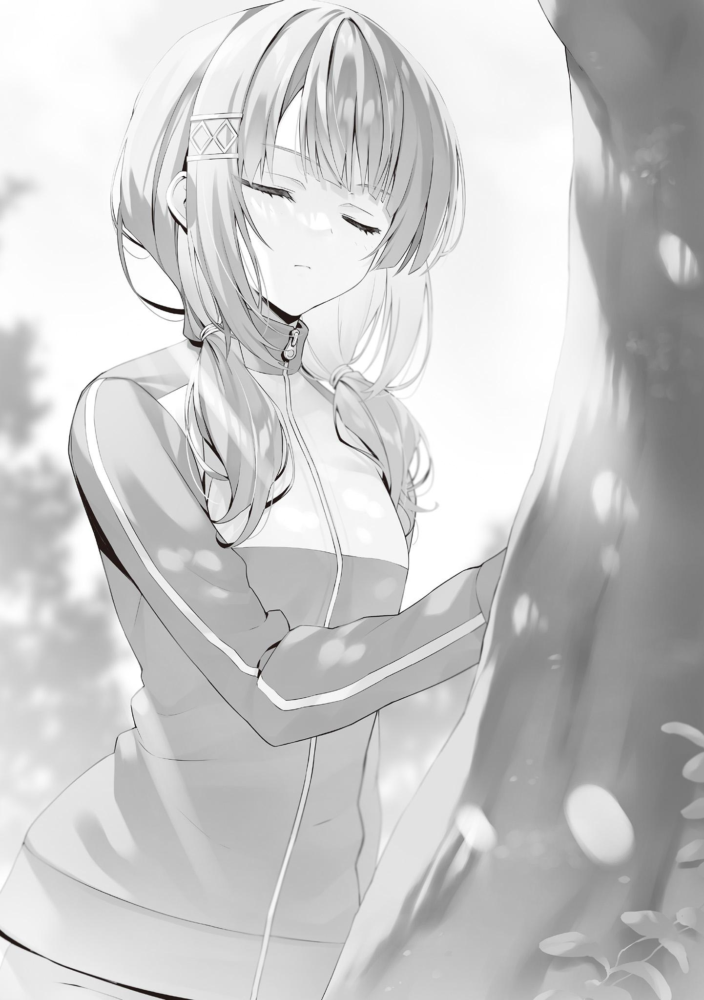
—...¿Ya veo?
Hasta ahora, no había sido capaz de entender nada de lo que decía Morishita.
Podría ser una buena idea intentar hacerlo.
Me puse al lado de Morishita y presioné mi mano contra el árbol de la misma manera.
Luego, cerré los ojos.
Todo lo que tenía que hacer era calmar mi mente y escuchar.
—¿La oyes? La voz del bosque.
—No...
—Entonces tal vez todavía estás distraído por algo.
Distracciones. Desafortunadamente, estaba vaciando mis emociones.
No había forma de que algo así se mezclara...
Mientras pensaba eso, no podía escuchar nada en absoluto. No había manera de que pudiera.
—Inhala por la nariz y exhala por la boca.
Pero Morishita seguía insistiendo.
—¿Tiene eso algún sentido?
—Bueno, cuando estuve resfriada antes, en la consulta del otorrinolaringólogo me indicaron que inhalara por la nariz y exhalara por la boca.
—¿No es así como se usa un nebulizador...?
En cierto modo, me llené a la fuerza de distracciones.
De todos modos, no podía oír la voz del bosque.
—¿Qué estás haciendo?
Cuando abrí los ojos y miré a Morishita, me estaba apuntando con la cámara del celular.
—Estaba grabando en alta definición a Ayanokouji Kiyotaka siendo engañado por mis mentiras.
—Oye...
—Es imposible que puedas oír la voz del bosque. Has visto demasiados dramas y películas.
—Tú fuiste quien empezó. Parecía que lo practicabas.
—No seas tímido. Mantendré en secreto que intentabas escuchar la voz del bosque.
Deseé que no me grabara y dejara evidencias como esa.
—Pero no sabía que la máquina de aspiración del hospital se llama nebulizador. Aprendí conocimientos inútiles. Gracias.
El hecho de que lo llamara conocimiento inútil significaba que no estaba realmente agradecida.
—Ayanokouji Kiyotaka, eres una persona interesante.
Me pregunto si era el único que pensaba que Morishita era abrumadoramente más interesante.
—Por cierto, ¿necesitas algo de mí?
—Vine a buscarte porque no apareciste cuando era hora de reunirnos.
—Ahora que lo mencionas, siento que pude haber tenido la culpa.
Al dar una declaración que parecía algo así como una disculpa, Morishita se alejó del árbol.
Comenzó a caminar hacia el edificio donde Kiryuuin estaba esperando.
—¿Puedo preguntarte algo?
Dirigí mi mirada hacia Morishita, instándola en silencio a hablar.
—¿Qué piensas de Hashimoto Masayoshi?
—Es una pregunta muy subida de tono.
—Pensé que debía preguntarlo. He buscado la oportunidad varias veces, pero no encontraba el momento adecuado.
—¿Pensaste que vendría a buscarte porque estabas con los árboles?
—Sí pensé que vendrías a buscarme tú solo.
Tenía una personalidad extraña, pero era una estratega.
—¿Qué piensas de él como compañero de la Clase A?
—Pensé que lo preguntarías. Por supuesto, creo que deberíamos unirnos como clase y excluirlo.
Decididamente llamó a Hashimoto un estorbo.
—¿Y si yo estuviera del lado de Hashimoto? ¿No sería un descuido decirlo?
—Pensé que si mentía, sólo conseguiría que me mintieran a cambio. Así que pensé que ser honesta era la mejor opción en este caso.
Entendía bien la negociación.
Si hubiera insinuado que apoyaba a Hashimoto con alguna excusa pobre y la hubieran atrapado, no habría podido ganarse mi confianza.
Su juicio era rápido y agudo, y no tenía pelos en la lengua.
Entre los estudiantes que había visto en segundo año, ella era bastante excepcional en este aspecto.
De hecho, uno no podía entender una personalidad así a menos que la conociera y hablara con ella cara a cara.
—Tengo la intención de responder a tu sinceridad, pero francamente, como soy de otra clase, no creo que sea un problema que tenga que ver
conmigo. Tanto si Sakayanagi intenta excluir a Hashimoto en el futuro, como si Hashimoto intenta excluir a Sakayanagi, pueden hacer lo que quieran.
—¿Así que estás diciendo que no tienes intención de ponerte del lado de Hashimoto Masayoshi?
—Ninguna.
Asentí sin vacilar, apelando con fuerza a que ésa era la verdad.
Ella podría haberlo dudado, pero de hecho, yo estaba diciendo la verdad. No era mentira.
—Por supuesto, como miembro del mismo grupo ahora, mantendré una distancia apropiada y una relación de cooperación.
—¿Es así? Me siento un poco aliviada.
Podría haber estado más cerca de decir que yo era anti-Hashimoto en lugar de alinearme con la facción de Sakayanagi.
—Sólo quiero pedir referencias, pero ¿sería un problema si me pongo del lado de Hashimoto?
—Lo sería, sí. Creo que Sakayanagi Arisu ganaría nueve de cada diez veces, pero si Ayanokouji Kiyotaka se pusiera del lado de Hashimoto Masayoshi, eso podría estar en peligro.
Al parecer, Morishita valoraba mi existencia más de lo que había imaginado.
—¿Es extraño? Que te valore mucho, Ayanokouji Kiyotaka.
—No lo sentí así cuando hablamos por primera vez.
Por supuesto, comprendía que me observaban, pero no hasta ese punto.
—Normalmente, hay una diferencia entre la expectativa y la realidad.
Normalmente es decepcionante, así que había bajado el listón, pero viendo las reacciones y las miradas a mi alrededor, no parece ser el caso.
Era más una corazonada que algo que hubiera visto u oído directamente.
Una evaluación basada en su gran inteligencia y sus sentidos.
Una versión femenina de Koenji -sería descortés llamar así a Morishita, pero en términos de arquetipo, podrían ser un poco similares. Como si le restara la excentricidad y le añadiera más raciocinio...
No, no importaba cómo lo expresara, no era correcto compararla con Koenji.
—Entonces, ¿existe la posibilidad de que te pongas del lado de Sakayanagi Arisu?
—Ninguna. Más bien, no es alguien con quien deba interferir.
Originalmente, Hashimoto era un oponente mucho más débil para Sakayanagi.
No era una situación en la que debiera ayudar.
—Pero...
—¿Pero?
—Creo que tanto Hashimoto como Sakayanagi deberían luchar sin contenerse. Es mejor decidir el ganador después de que ambos se esfuercen al máximo. Aunque es sólo mi opinión.
Hashimoto seguía avanzando solo, sin tiempo para observar lo que lo rodeaba.
Y como su traición arrastró consigo a Kamuro, Sakayanagi podría verse impedida de ejercer todas sus capacidades.
Si pudiera eliminar los problemas que cada uno tenía, me gustaría hacerlo antes del combate.
—Entiendo bien tus pensamientos, Ayanokouji Kiyotaka. Gracias.
Tal vez habiendo aclarado algo en su mente, Morishita sonrió ligeramente e inclinó la cabeza.
—Espero que este problema se resuelva lo antes posible. Si las luchas internas continúan durante medio año, o incluso un año entero, sólo será un perjuicio para la Clase A.
—Eso es cierto.
Si ese era el problema, los temores de Morishita eran infundados.
El problema entre Sakayanagi y Hashimoto ya estaba a punto de terminar.
Morishita empezó a alejarse de debajo del árbol.
—Bueno, pongámonos en marcha. No juegues siempre en el bosque. Eres como un niño.
—Tú eres la que estaba jugando...
Yo sólo era una víctima que se vio arrastrada a esto.
Además, Morishita era tan buena en shogi como presumía.
Sus habilidades, perfeccionadas a través de partidas diarias online, no eran sólo para aparentar.
PARTE 3
En momentos como este, me pregunto si nos enfrentaremos al grupo de Nagumo en el 19º enfrentamiento final.
Eso es lo que podría pensarse, pero las cosas no siempre salen como se planean.
En el 17º combate, con dos derrotas personales, nos enfrentamos al todavía invicto grupo de Nagumo.
Tras un partido de tenis de mesa, el siguiente enfrentamiento fue de "tiro con arco", lo que lo convirtió en el segundo partido de "tiro con arco" de la reunión de intercambio.
En este caso, ¿no juega a nuestro favor que el juego no se base únicamente en la habilidad o la suerte? El tiro con arco, una actividad basada en la habilidad, brindó una interesante oportunidad para que los demás brillaran.
Nagumo estaba presente como su líder, pero no habló.
Esta vez, Nagumo y yo teníamos una apuesta personal, pero pocos lo sabían.
Incluso los estudiantes de primer año a los que se les había ordenado reunir información podrían no conocer los detalles.
—Entonces, ¿por qué estás aquí, Morishita?
—Por supuesto, vine a practicar tiro con arco. Vine a luchar.
Sus resultados de ayer fueron desastrosos, ¿pero seguía intentando participar sin desanimarse?
Mirando a Kiryuuin , ella asintió sinceramente. Parecía que había aceptado la participación de Morishita.
—Así es como es. Puedes pensar que estás en el barco ganador, Ayanokouji Kiyotaka.
—Esperemos que no sea un barco que se hunde.
El instructor comenzó a hablar de nuevo, explicando los procedimientos de seguridad a los estudiantes que nunca habían manejado el tiro con arco antes y para aquellos que lo habían hecho, enfatizó repetidamente la importancia de aprender la forma correcta de tiro.
A diferencia de las reglas originales, el formato consistía en cambiar de equipo tras disparar seis flechas, en lugar de turnarse uno tras otro.
Hashimoto, que había visto a los cinco oponentes, se acercó y me susurró al oído.
—Por lo visto, Katsuragi practicó bastante ayer y consiguió un máximo de 36 puntos. Existe la posibilidad de que pierdas si te enfrentas a él.
Me impresionó su minuciosa investigación mientras reflexionaba sobre mí mismo.
Ayer, mis puntuaciones fueron 2, 2, 4, 6, 6, 9, para un total de 30 puntos.
Comprendía su preocupación, pero para decirlo sin rodeos, lo más probable es que no perdiera contra Katsuragi.
El problema era otro. Pronto se anunciaron los emparejamientos.
Primer combate: Horikita Suzune vs Yanagi Yasuhisa
Segundo combate: Hirata Yosuke vs Hashimoto Masayoshi Tercer combate: Amasawa Ichika vs Ayanokouji Kiyotaka Cuarto combate: Kanzaki Ryūji vs Shintoku Tarō
Quinto combate: Katsuragi Kōhei vs Morishita Ai En los 16 combates disputados hasta el momento, siempre había luchado como tercer jugador.
—Nagumo había dispuesto hábilmente que nuestros oponentes coincidieran con nuestras posiciones fijas en la alineación.
—Encantada de verte, Senpai.
—Tu oponente es una chica de primer año. Tienes suerte.
Hashimoto, que aparentemente no tenía información sobre Amasawa, respondió con optimismo.
Mientras todos miraban, el grupo de Nagumo, que se había levantado primero, empezó a apuntar al blanco todos a la vez.
Se notaba por su porte tranquilo y sus expresiones relajadas.
Amasawa había terminado de practicar el tiro con arco ayer y parecía haber adquirido una sólida experiencia.
Sin vacilar, las flechas lanzadas con suavidad atravesaron la zona amarilla de nueve puntos.
Obtuvo una puntuación de 9 puntos, 9 puntos, 10 puntos, 9 puntos, 10 puntos, 10 puntos, para un total de 57 puntos.
La precisión fue tan alta que no sólo los estudiantes participantes, sino también los instructores se sorprendieron.
—No puede ser...
Katsuragi, que había quedado en segundo lugar, había conseguido la considerable cifra de 37 puntos, pero era incomparable.
Para poder ganar, necesitábamos anotar 10 puntos con cada tiro.
Con todo el mundo aún agitado, era el momento de que el grupo de Kiryuuin , que estaba a la defensiva, tomara el turno.
En la silenciosa galería, disparé la primera flecha antes de que nadie más tuviera oportunidad.
Atravesó el área amarilla de ocho puntos.
Mientras los demás estudiantes seguían con su preparación, me desplacé para disparar mi segunda flecha y esperé a que me dieran permiso.
Esto nos dejaba sólo un punto de margen, pero no importaba.
Inmediatamente después de mi primer disparo, corregí mi trayectoria, que estaba ligeramente desviada.
La segunda flecha perforó el centro amarillo de diez puntos.
Si hubiera sido a una distancia de 70 metros, podría haber sido imposible debido a factores como el viento, pero a 20 metros no había ningún inconveniente.
Mientras el instructor recogía las flechas, disparé sin demora.
Repetí el mismo movimiento como una máquina.
El mismo movimiento, la misma posición: sólo necesitaba maximizar la repetibilidad.
Sin preocuparme de cuántos puntos tenían los demás, seguí disparando las cuatro flechas restantes directamente al centro.
El marcador fue de 58 a 57. Me tomé la victoria en mis propias manos.
Recibí un fuerte aplauso de Amasawa, con quien tuve un combate muy reñido.
—Eres increíble, Senpai. Es frustrante, pero perdí, ¿no?
—Las reglas me ayudaron en muchos aspectos. El blanco estaba cerca, pero si hubieran sido las reglas normales en las que teníamos que turnarnos, no habría sido extraño que el duelo se decantara hacia cualquier lado.
Una vez que Amasawa tuvo una puntuación fija de 57, no pudo hacer ningún otro movimiento.
No tuvo más remedio que rendirse a mis resultados.
—Intentaba presionarte, pero no funcionó, ¿verdad?
Había bloqueado todo el ruido circundante, así que no lo sabía.
—No habías practicado tiro con arco aparte del encuentro de ayer,
¿verdad?
—Vi algunos videotutoriales a media noche.
No sólo tiro con arco, sino todo lo que experimenté en el campamento.
—Es increíble que puedas producir resultados así. Nagumo-senpai podría enfadarse.
Aunque perdió, Amasawa anotó 57 puntos, así que Nagumo no podía culparla.
Ibuki, que había estado observando desde lejos, miró descaradamente hacia otro lado, aburrida.
Horikita ganó a Yanagi, Amasawa perdió pero obtuvo una puntuación abrumadoramente alta, y luego yo gané a Amasawa. No debió de ser nada interesante.
—No fue arriesgado en lo más mínimo. Fuiste tan consistente...
Tras ver cómo Amasawa volvía a presentarse ante su grupo, Hashimoto expresó su admiración.
—Pero, después de todo, era fuerte.
El combate de tiro con arco entre el grupo de Nagumo y el de Kiryuuin terminó con una derrota y cuatro victorias.
—Ciertamente. Eran dignos oponentes, los mejores contendientes, pero fue un juego reñido.
Morishita, que lo había dado todo, mostró una expresión de satisfacción en su rostro.
Por cierto, la única que anotó un total de seis puntos y sufrió una gran derrota en este juego fue Morishita.
PARTE 4
Después de eso, el torneo round-robin terminó, y los 19 juegos totales llegaron a su fin.
El récord final del grupo de Kiryuuin fue de quince victorias y cuatro derrotas en los 19 juegos. Mi récord personal fue de diecisiete victorias y dos derrotas.
Nuestra clasificación final fue el cuarto puesto. Podría describirse como un gran éxito.
Y el grupo de Nagumo, que había sido señalado como el principal contendiente desde el principio, quedó primero con dieciocho victorias y una derrota.
La única derrota se debió a un juego de cartas que se eligió en el choque final, y tuvieron mala suerte todo el tiempo. Fueron derrotados por un grupo que sólo había ganado tres veces hasta el momento, lo que fue un final apropiado para el juego.
En el área de descanso vacía, Nagumo y yo estábamos solos.
—Permitirme perder hasta dos veces fue lo que causó tu derrota, ¿no?
—En efecto, me gustaría decirlo, pero como fuiste el único que participó en más de doce partidas y tuvo dos o menos derrotas, sería absurdo quejarse de eso.
Nagumo podía obtener información detallada del líder de cada grupo en cualquier momento, así que no era extraño que conociera los resultados individuales de todos los enfrentamientos. Al contrario de lo que aparentaba, era muy observador.
—Tu jugadora más habilidosa, Amasawa, tuvo una gran actuación. Golpea sus objetivos con bastante gracia.
—No me halagues. Ibas tercero a propósito, ¿no? Era obvio que lo estabas preparando para que yo pudiera estar algo satisfecho cuando me enfrentara a ti.
—Ojalá aceptaras sinceramente las intenciones de un kouhai que intenta alabarte, Senpai.
—Entonces hazlo mejor. Me suena como si sólo me estuvieras provocando.
Ya veo... Tal vez debería haber usado una forma más natural y hábil de hablar.
—Me las arreglé para ganar contra Amasawa en el duelo individual, pero en cuanto al duelo grupal, fuimos completamente derrotados. Todos los de nuestro grupo lo estaban dando todo, pero estaba claro que todos los de tu grupo jugaban con habilidad.
Los miembros de su grupo adquirieron mucha experiencia a lo largo de los tres días, lo que les llevó directamente a la victoria.
—Cuando decido ganar, me esfuerzo por conseguirlo sin piedad. Es algo natural. Bueno, a los dos nos la jugaron los juegos de cartas, ¿no?
—Efectivamente.
Se presentó en una reunión de intercambio a la que no tenía por qué venir, e incluso utilizó su propio dinero para que se celebrara nuestro encuentro personal.
Independientemente de su victoria o derrota, no podía imaginar que fuera satisfactorio para Nagumo.
—¿Qué crees que habría pasado si tú y yo hubiéramos competido desde el principio basándonos en el rendimiento del grupo?
—Conociendo la conclusión, no creo que hubiera podido ganar aunque hubiera estado al mando.
Admití honestamente mi derrota.
—¿Es así? ¿No podrías, con tu habilidad para manipular las cosas entre bastidores, haber procedido de una manera más sólida y fiable?
Sin embargo, el hombre que tenía delante no creía en mi afirmación derrotista más que yo.
—Tu grupo ganó quince veces sin tu interferencia, así que lo estás haciendo muy bien, pero ¿no había forma de ganar los otros duelos? ¿O
simplemente no estabas dispuesto a tomarme en serio?
—Eso es irrelevante. Incluso si hubiera intentado ganar comprando la derrota de mi oponente, si fueras serio, me la habrías devuelto. También podrías haber intentado evitarlo con anticipación. Tienes control sobre todos los de tercer año, así que deberías ser bueno en ese tipo de cosas.
Si intentaba influir en las cosas, naturalmente Nagumo lo percibiría e intentaría influir también.
No podría ganar ni aunque me pusiera de cabeza en una batalla de poder financiero.
—Aunque fuéramos capaces de comprar tres victorias, nos habríamos quedado atascados en el 17º juego de tiro con arco.
—Tampoco parece que lo digas en serio.
—Bueno... si me hubieran dicho que ganara a toda costa, podría haber manipulado a Horikita y Yōsuke para que fallaran el blanco y así poder ganar.
Eran estudiantes que se lo tomaban en serio, pero dependiendo de la razón, podría haber sido capaz de ponerlos de mi lado.
Aunque Nagumo hubiera hecho un contrato para asegurarse de que darían lo mejor de sí mismos, no podría arrinconarlos si lo traicionaban en ese momento porque no había garantías de que siempre dieran en el blanco.
—Supongo que sí.
—Pero si hubieras podido preverlo, habrías cambiado a los miembros asignados.
Era natural que seleccionara estudiantes que no se vieran afectados por mis negociaciones.
—Entonces, ¿qué harías además de eso? No, esto es sólo una charla innecesaria que ya no significa nada.
Sintiendose vacio, Nagumo termino la conversacion él mismo.
Mirando la realidad, esto no era más que una reunión de intercambio.
No era más que un aprendizaje experiencial por el que no teníamos que estresarnos, algo que la escuela también reconocía.
No era algo en lo que invertir mucho dinero ni algo que requiriera mucha negociación.
Esta conversación no era más que una fantasía, algo que nunca llegó a materializarse.
—Disfruté del aprendizaje experiencial, en serio. Si no se pudo realizar una lucha justa, pensé que sería educado revelar la verdad tal y como es.
Nagumo siempre había querido conocer mi fuerza.
Así que, de una forma u otra, debió de ser capaz de ver mi verdadero yo sin ninguna de mis torpezas, ya que los miembros de su grupo, como Takahashi, estaban pegados a todos los juegos.
Debe haber grabado y comprobado los juegos.
—Así es. El juego de tiro con arco fue especialmente impresionante. Me di cuenta de que tus manos son innecesariamente diestras.
—No sé si quedaste satisfecho con este enfoque.
—¿Satisfecho? Es imposible que lo esté.
Nagumo ladeó la cabeza con incredulidad y se echó a reír.
—Pero te has vuelto bastante hablador y más franco.
—Fui bendecido con un buen senpai que me permitió aprender mucho.
Nagumo sacó su teléfono y movió la pantalla con la punta de los dedos.
—No tengo intención de menospreciar tu victoria. Ya te transferí el dinero.
Compruébalo.
—Confío en ti en eso. ¿Pero está bien? Esos fondos podrían usarse para salvar a algunos de los estudiantes de tercer año.
—¿Cuánto tiempo crees que he estado reinando en la cima de la Clase A?
Tengo varios millones de yenes sólo en mi bolsillo personal. ¿Qué problema hay en pagar con parte de eso?
Mientras guardaba su teléfono, Nagumo echó un vistazo al exterior.
—¿Recuerdas lo que te dije cuando vine aquí? Lo de ir a la universidad.
—Por supuesto.
—Hablaba muy en serio cuando te invité. En la universidad no podemos tener batallas llamativas como en la Preparatoria de Educación Avanzada, pero por otro lado, podemos hacer más cosas codo con codo, ¿no?
—Puede ser.
—Si quieres, ven a la misma universidad. Haré que tu aburrida personalidad mejore un poco.
—Lo tendré en cuenta.
Diciendo eso, Nagumo palmeó suavemente mi hombro derecho al pasar.
—Nos vemos.
—¿Puedo pedirte que transmitas un mensaje de mi parte, Nagumo-senpai, ya que te vas a graduar?
—¿Eh? ¿Un mensaje? ¿Para Horikita-senpai?
—No estaría mal, pero no.
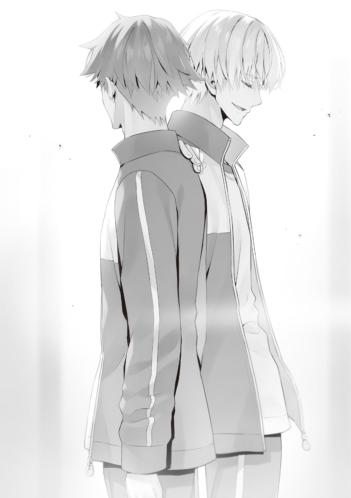
Cuando Nagumo se detuvo, le mostré el mensaje para cierta persona.
Tras oírlo, Nagumo, que aún no lo creía del todo, escuchó hasta el final sin burlarse.
—Es un mensaje extraño.
—Espero que puedas transmitirlo. Después, la decisión depende de la otra persona.
—Desde luego que lo he oído, pero ¿es tu regalo de despedida para mí?
Si te hubieras callado, quién sabe cuál habría sido el resultado. Hay gente a la que no le hará ninguna gracia que me gradúe de la clase A.
—Como mínimo, creo que has dejado suficientes logros y calificaciones para graduarte en la Clase A.
Esa fue la razón por la que le confié el mensaje a Nagumo.
—Me adelantaré y empezaré la segunda fase en casa de Horikita-senpai.
Siéntete libre de unirte si te apetece: Esas últimas palabras contenían un mensaje de dicho senpai.
UNA NOCHE TRANQUILA
ERAN MÁS DE LAS 11 de la noche, después de la hora de apagar las luces.
En la habitación compartida, todo el mundo seguía despierto, hablando en voz baja o mirando el celular. Al principio del campamento, los miembros desconocidos hacían que el ambiente fuera incómodo, pero ahora no me importaba en qué se había convertido ese ambiente.
Mientras participaba ocasionalmente en las conversaciones con Hashimoto, Oda y los kouhais, asintiendo de vez en cuando, mi teléfono vibró mientras veía un vídeo de patchwork.
[¿Sigues despierto?]
Un mensaje de Hiyori apareció en la parte superior de la pantalla.
[Estoy despierto. Todos los chicos siguen despiertos, así que no te preocupes].
Le dije a Hiyori para que le fuera más fácil seguir enviando mensajes.
[Gracias. De hecho, acabo de darme cuenta de que Yamamura-san desapareció.]
¿Yamamura desapareció? Básicamente estaba prohibido salir de la habitación después de apagar las luces.
[¿Quieres decir fuera de la habitación? ¿Qué pasa con su teléfono?]
[Lo dejó en la habitación. Estaba contemplando si ir a buscarla ahora... Me preguntaba si podría pedirte ayuda, Ayanokouji-kun].
Hiyori no era buena para este tipo de cosas, por no decir algo peor.
Especialmente si no podía actuar con sigilo, un profesor patrullando la descubriría fácilmente.
Podría decirse que fue una decisión acertada pedir ayuda.
El campamento casi había terminado, pero era mejor no dejar sola a Yamamura.
Tenía una expresión particularmente sombría durante la partida de cartas de ayer.
Me vino a la mente una posible razón. Debería ir a buscarla ahora mismo.
[Entiendo. Iré a ver cómo está, así que Hiyori, por favor, espera en tu habitación.
Necesitamos una forma de confirmar si Yamamura vuelve].
Cuando le dije que sería más útil que se quedara en la habitación sin salir, llegó una respuesta con una simpática estampa de un animal diciendo "Gracias".
—Voy a salir un rato.
—¿Eh? Oye, ya pasó la hora de apagar las luces, ¿sabes? Si te encuentran, tendrás problemas.
—Voy a buscar algo. Intentaré volver sin que se den cuenta, si es posible.
Si pasa algo, pueden enfadarse conmigo.
Cuando di mi respuesta, Hashimoto y los demás no se esforzaron por hacer que me quedara. Al contrario, se veían bastante contentos y me despidieron alegremente.
El pasillo estaba, por supuesto, oscuro y silencioso, ya que las luces estaban apagadas.
Ahora... ¿por dónde empiezo a buscar?
Vagar sin rumbo no sería eficiente.
Había dos posibles razones por las que Yamamura, que no era de las que rompían las reglas básicas, abandonó la habitación compartida: o bien la llamó alguien, o bien abandonó la habitación voluntariamente. Sin embargo, en este caso, la posibilidad de lo primero era bastante baja, ya que dejó su teléfono.
Partí de la base de que se había marchado voluntariamente.
Lo siguiente a considerar era por qué tuvo que ser después de que apagaran las luces.
En contraste con el ambiente silencioso de la noche, innumerables pensamientos distractores inundaron mi mente.
Puede que hubiera momentos en los que quisiera huir del entorno.
Pero en estos momentos, no sería extraño buscar inconscientemente un lugar donde sentirse a gusto.
La conclusión alcanzada por la línea de pensamiento perteneciente a una estudiante llamada Miki Yamamura-si yo derivara eso...
Mostré mi rostro en silencio en el vestíbulo.
Inmediatamente después, sentí la presencia de alguien y me escondí entre las sombras.
Un profesor patrullaba con una linterna.
La visibilidad era escasa, pero era fácil ver dónde alumbraba.
Iluminaba minuciosamente los alrededores, pero no buscaba activamente a ningún alumno infractor de las normas que hubiera abandonado la habitación compartida.
Simplemente lo hacía como parte de su trabajo, como si lo hiciera por obligación.
Por lo tanto, fue muy fácil esquivarlo, y su presencia desapareció del vestíbulo en cuanto esperé un poco. Por lo visto, fue a comprobar el comedor.
Teniendo en cuenta la ruta que siguió, debería ir después a las habitaciones compartidas o a las aulas experienciales.
Hubo una breve pausa. Me dirigí directamente a la máquina expendedora sin dudarlo.
Tenía la corazonada de que las probabilidades eran altas, y pude confirmar mi suposición de inmediato.
No se trataba de una chica sentada sola, sino que estaba apoyada en la máquina expendedora, mirando hacia abajo.
Hacía frío en el pasillo, así que puede que intentara entrar en calor, pero eso podría ser interpretar demasiado. Pensé que en algún momento se daría cuenta de mi presencia, pero no lo hizo para nada.
No hubo ningún cambio de expresión, ningún suspiro, como si nada desencadenara un recuerdo.
Se limitó a mirar fijamente a un punto del suelo, sin moverse en lo más mínimo.
—Es probable que los profesores ni siquiera piensen que hay un alumno aquí.
No podía quedarme mirándola, así que decidí llamarla.
—Ah... ¿Eh?
Yamamura, sobresaltada, volteó la cara hacia mí.
Sus ojos estaban llenos de miedo, pero en cuanto se dio cuenta de que era yo, ese miedo se disipó.
—¿Por qué estás aquí...?
—Se enfadarán si te encuentran. Vine a llevarte de vuelta antes de que eso ocurra.
—Confiaba en que... no me encontrarían... pero si me han encontrado, no puedo usar esa excusa, ¿no?
Yamamura sin duda podría evitar la vigilancia de los profesores e incluso volver a la habitación compartida.
—...¿Cómo... te diste cuenta de que me había ido?
—No hay ninguna razón especial. Hiyori se dio cuenta de que no estabas y me lo contó. Estaba preocupada.
—Lo siento... Sólo quería estar sola...
—No puedes estar sola en una habitación compartida a no ser que te encierres en el baño.
Ella asintió ligeramente, indicando que lo entendía.
—¿Puedo... quedarme aquí un poco más...?
—¿Tienes que estar al lado de la máquina expendedora?
—Sí. Cuando escucho el sonido de la máquina expendedora, las voces innecesarias de mi mente desaparecen...
Este comportamiento parecía ser una forma estándar de Yamamura para protegerse.
—Entonces supongo que este es el único lugar. ¿Y? ¿Desaparecieron las voces innecesarias?
—¿Por qué preguntas eso...?
—Si no desaparecen y te llevo de vuelta, podrías huir de nuevo. Además, odio decirlo, pero no me pareció que funcionara.
—Normalmente, paran inmediatamente y se resuelve... normalmente...
En otras palabras, ahora era diferente. Por la expresión abatida de Yamamura, me di cuenta de que pasaba algo grave.
—Si tienes algo que te molesta, deberías intentar expresarlo.
—...No. Estoy bien.
—¿De verdad? Llevo observándote aquí unos cinco minutos y no me ha dado esa impresión ni por asomo.
—¿¡Cinco minutos!? ¿¡De verdad...!?
—Lo siento, mentí. Fueron unos 30 segundos.
El hecho de que no dudara ni siquiera de un número arbitrario de minutos sugería que no era consciente de su entorno.
—¿No te gusta hablar de tus problemas con los demás?
—No se trata de que me guste o no, es sólo que... no tengo ese tipo de experiencia...
Incluso sin hablar mucho de ello, no era difícil imaginar la vida de Yamamura.
Seguramente pasaba mucho tiempo sola desde muy joven y pasaba más tiempo con la boca cerrada que abierta.
Aunque nuestras circunstancias y situaciones eran muy diferentes, me di cuenta de que teníamos experiencias similares.
—Tampoco se me da bien hablar. Si hay un pequeño problema, tiendo a guardármelo o intento resolverlo yo sola. Así que rara vez tengo la oportunidad de consultar mis problemas con alguien.
—¿Tú también, Ayanokouji-kun? Pero para mí... pareces normal. Tienes muchos amigos. Y Shiina-san también. Ella es brillante y linda... Estoy celosa...
Si sólo miras el presente, quizá no fuera descabellado sentirse así.
Sin embargo, todo el mundo ha tenido un lado menos maduro en su pasado, diferente de lo que es ahora.
—¿Te imaginas cómo era yo a principios del año pasado?
Probablemente no estaba ayudando a Sakayanagi en ese momento, así que no lo sabría.
—...Ahora que lo mencionas... no sé nada.
—¿Verdad? Así que sólo puedes estar segura de que no fui un estudiante que dejara huella en mucha gente. Afortunadamente, me dejé llevar por mis animados compañeros de clase y pude entablar algunas relaciones, pero no fue algo que yo mismo organizara.
—¿Pero por qué te has vuelto así ahora?
—No estaba muy unido a los que me rodeaban, pero al menos en estos dos últimos años he empezado a intentar acortar distancias, poco a poco. Creo que eso ha influido. Empecé a ser capaz de expresar lo que quería decir desde entonces.
Yamamura seguía sin entenderlo.
—Estoy... quizás asustada. De expresar mis pensamientos. Y de que esos pensamientos se difundan sin querer. Tengo miedo de ser conocida...
El estilo de Yamamura hasta ahora había sido el opuesto.
Captar los pensamientos de otras personas en secreto y transmitirlos a un tercero.
No era descabellado sentir una fuerte resistencia al pasar de ser el conocedor a ser el conocido.
—No te voy a obligar. Deberías juzgar por ti misma.
Sin hacerla demasiado consciente, me senté lentamente frente a la máquina expendedora, dejando cierta distancia.
Pude sentir la ligera vibración de la máquina expendedora y el sonido del ventilador a través de mi espalda.
Yamamura no era la única que temía a la soledad.
Ya fuera Yōsuke, Kei, Ryuuen, Sakayanagi o cualquier otro estudiante, la naturaleza humana era la misma.
Incapaces de soportar la soledad, no podían vivir solos.
Por eso eran importantes los que te apoyaban sin pedir nada a cambio.
Aunque no sentía que se aplicara a mí, comprendí que era una respuesta.
La contradicción que encerraba.
No, ese hecho no importa ahora.
La Yamamura que tenía delante no era tonta.
No buscaba la soledad, ni creía que la soledad fuera lo correcto.
Si hubiera alguien que pudiera ofrecerle una ayuda adecuada, no cometería un error.
—...¿Puedo hablar contigo?
Yamamura, que no percibía hostilidad alguna, comenzó a expresar lo que había estado conteniendo.
—Desde que terminó el último examen especial, tengo una pregunta en la cabeza...
Se trataba de los detalles de lo ocurrido en la clase A durante el examen especial de supervivencia y eliminación.
En una situación en la que la derrota era segura y había que elegir a un eliminado, Sakayanagi optó por echarlo a suertes. Decidiera como decidiera, habría pros y contras.
Como no todo el mundo tenía las mismas habilidades, siempre habría descontentos, tanto si los nombraba directamente como si jugaba a piedra, papel o tijera.
Para Sakayanagi, que veía a todos los alumnos, salvo a ella misma, como iguales, la lotería era quizá la decisión más equitativa.
Sin embargo, debió darse cuenta de que era un error.
Aunque no gustara a los que la rodeaban, debería haberse quedado con la persona que más le convenía.
Si Kamuro se hubiera quedado, la debilidad de Sakayanagi no habría quedado expuesta.
Pero Sakayanagi no era la única que estaba herida.
Yamamura estaba de pie en un lado de la balanza que separaba las dos últimas opciones de la lotería, la vida y la muerte.
—Cuando dudé en sacar un número, Sakayanagi-san dijo que detendría la lotería. Si no tenía el valor de sacar un número, era lo mismo que abstenerse...
Si se negaba a sacar un número durante mucho tiempo, sin duda era una decisión que podía tomar.
Pero Yamamura sintió que era un juicio demasiado rápido para llamarlo una consideración cuidadosa.
—¿Sakayanagi valoró a Kamuro e intentó apartarte?
Yamamura asintió en silencio. No era sólo una suposición, sino la convicción de Yamamura.
—Sentí fuertemente que Sakayanagi quería que me retirara en ese momento.
Y continuó.
—Comprendo que no se puede evitar. Al menos, al compararme con Kamuro-san, el valor era claro. Yo no deseaba tener un trato especial. Ni siquiera quería ser codiciosa y deseaba ser considerada una amiga. Pero... Me sorprendió saber que mi existencia era algo que podía descartarse en un instante... aunque ella me utilizara, diciendo que era una persona valiosa...
Sakayanagi había encontrado a Yamamura, que siempre había estado sola, y valoraba mucho su habilidad. Sin embargo, cuando la comparó con Kamuro, se dio cuenta de que la diferencia entre ambas era tan grande que ni siquiera era una competición.
Al final, sabía que Kamuro sería la elegida, pero pensó que dudaría.
El pequeño deseo de Yamamura, por el que se menospreciaba a sí misma, fue denegado sin piedad.
—Puede que Sakayanagi sí haya visto una diferencia entre tú y Kamuro, pero si cree que eres irrelevante o no, ¿no es una cuestión aparte?
—...Quiero creer eso, pero...
Seguramente no había tenido ningún contacto con Sakayanagi desde ese día.
Así que debe haber estado cuestionándose a sí misma todo este tiempo.
—He estado pensando en hablar con Sakayanagi-san durante este campamento, pero no pude reunir el valor. No pude llamarla...
Aunque la vio varias veces, nunca consiguió hablar con ella. Debió de ser un obstáculo considerable para Yamamura, que normalmente esperaba a que le hablaran.
—Había más gente pegada a ella de lo que pensaba. En medio de todo, ToKitou-kun se metió en problemas... Tenían que ser momentos difíciles.
Yamamura expresó sus pensamientos, revelando el intento de ToKitou de brindar su ayuda a una abatida Sakayanagi.
Sin embargo, ser testigo lo llevó a ser convocado a un aula experiencial e interrogado.
—Como resultado, ToKitou-kun fue... retenido a la fuerza y amenazado por Ryuuen-kun y su grupo.
Probablemente fue una decisión apropiada por parte de Ryuuen, quien estaba tenso preparándose para los exámenes de fin de año.
Si el oponente con el que iban a luchar en el futuro era inesperadamente débil, lo dejarían en paz o lo debilitarían aún más. Aunque algunas partes eran demasiado radicales para ignorarlas.
Parece haber establecido un fuerte sentido de alerta, con la intención de abordar el próximo examen de fin de año completamente preparado.
Para Ryuuen, quien fue confirmado para competir con Sakayanagi en el examen de fin de año, era natural pensar que él no quería estimularla y revivirla.
Parecía desesperado por aprovecharse de la situación en la que ella había tropezado con una derrota inesperada.
En otras palabras, era la prueba de que Sakayanagi era una oponente a la que no se podía subestimar y que carecía de debilidades.
Se esperaba que la purga de ToKitou en el flujo de las cosas llegara a un rápido final. Sin embargo, los compañeros de grupo de ToKitou, Housen y Utomiya, se unieron, y hubo riesgo de trifulca. Al parecer, la situación se resolvió cuando el número de estudiantes que escucharon la conmoción aumentó repentinamente de golpe, y se dispersaron.
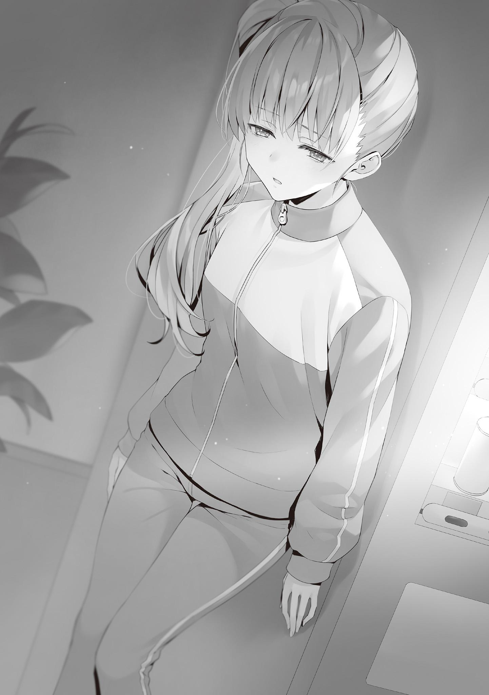
—Pero estoy impresionado. ¿Lo viste todo y nadie se dio cuenta?
—Eso es todo lo que soy capaz de hacer...
Yamamura era perfectamente capaz de reunir información, utilizando su falta de presencia.
La habilidad de Sakayanagi para reconocer y utilizar rápidamente esa capacidad fue, una vez más, impresionante.
Esta vez, Yamamura pudo presenciar la escena porque ella misma estaba preocupada por Sakayanagi.
En efecto, Sakayanagi se encontraba ahora en una pendiente descendente.
—¿Qué quieres hacer?
—¿Eh...?
—Como compañera de clase y como alguien que podría ser abandonada por Sakayanagi, ¿qué quieres que haga?
—Yo...
—Quiero escuchar tus sentimientos.
—Tengo... dos deseos. Uno es... Quiero saber qué pensaba de mí entonces, y qué piensa de mí ahora.
—¿Y el otro?
—... Creo que... A Sakayanagi-san no le conviene perder... No quiero verla sufrir en el examen de fin de año... Espero que gane.
No había cálculos personales, no quería que ganara sólo porque era una alumna de clase A, sólo una preocupación genuina por una alumna.
—¿Es así...? Ya veo.
Sakayanagi podría necesitar un pequeño empujón. Y pronto.
—¿Por qué no intentas decírselo? Nadie tiene derecho a condenar tus acciones.
—¿Y si... y si... ella ni siquiera quiere escucharme...?
—En ese caso, digamos que me meto entre unas máquinas expendedoras y lo hablamos.
Cuando le dije eso, Yamamura miró a la máquina expendedora un poco tímida y asintió.
PARTE 1
Era poco antes de la una de la madrugada del cuarto día del campo de entrenamiento.
Mucho después de que se apagaran las luces, Nagumo caminaba tranquilamente por el pasillo solo.
Sabía que recibiría una pequeña advertencia si lo encontraban, pero no había un castigo claro.
Por supuesto, este no era el caso si se resistía, como no volver a su habitación después de ser encontrado.
Teniendo en cuenta los riesgos, ya lo había demostrado utilizando a otros estudiantes el día anterior.
Sobre todo, había investigado que las patrullas de los profesores terminarían a medianoche.
Por lo tanto, Nagumo apenas estaba preocupado por ser encontrado.
Las luces del vestíbulo se mantenían al mínimo, y sólo el sonido molesto de los compresores de las máquinas expendedoras alineadas llegaba a sus oídos a esas horas.
Atravesó el vestíbulo y se dirigió a la zona de la cafetería, donde se suponía que no debía haber nadie.
No podía sentir la presencia de nadie, pero su intuición funcionó.
Está delante de mí, pensó.
—Viniste como prometiste.
Desde el fondo de la oscura cafetería, le llegó una voz tan linda.
—Nunca rechazaría el llamado de una mujer —habló en la oscuridad.
—Bostezo, qué frase tan cursi. Sinceramente, odio a los de tu tipo.
—Relájate. A mí tampoco me interesan las mujeres como tú.
Nagumo, que resopló divertido, entró en la cafetería con las manos aún en los bolsillos.
—Así que no había necesidad de amenazarme. Habría sido un movimiento innecesario.
Cuando sus ojos se adaptaron a la oscuridad, apareció una estudiante.
—Amasawa, ¿de verdad tenías tantas ganas de estar a solas conmigo?
—Las oportunidades de estar a solas con un antiguo presidente del consejo estudiantil no se presentan a menudo, ¿verdad?
—Quiero confirmar algo. ¿Qué habrías hecho si no hubiera venido?
—Habría golpeado a tu preciosa Asahina-senpai, Nagumo-senpai.
Muchos se habrían reído de la respuesta de Amasawa como una broma, al ver su cara sonriente.
Y Nagumo hizo lo mismo, pero sus ojos no se reían. Estaba convencido de que la estudiante de primer año que tenía delante habría cumplido su amenaza.
—¿Demostraste tus habilidades en el tiro con arco con Ayanokouji para hacer más efectivas tus amenazas?
—Pues sí. Si no demuestro que soy capaz, la gente podría desestimar las amenazas de una mujer.
—Bien, vayamos al grano. Entonces, ¿por qué me amenazaste para sacarme afuera?
—Hay un problema que sólo tú puedes resolver, Nagumo-senpai. De eso es de lo que quiero hablar.
—Tuviste muchas oportunidades de hablar durante la reunión de intercambio.
Mientras respondía, Nagumo se preparó internamente.
Sintió que la chica que tenía delante no era una chica cualquiera, su presencia era imperceptible.
Una estudiante con una presencia extraña, similar a Ayanokouji.
Y dueña de habilidades inusuales, una que había vislumbrado durante el combate de tiro con arco.
Eso era más que suficiente para ponerlo en guardia.
—Por cierto, estoy pensando en herirte de gravedad, Nagumo-senpai.
—¿Herirme de gravedad? Eso es muy repentino.
Amasawa, que intentaba disfrutar de la sorpresa de Nagumo ante la inesperada propuesta, se rió con incredulidad.
—¿Es muy poco realista? ¿O crees que no puedes perder contra una chica?
—No sé. Quizá sean las dos cosas.
—¿Huirás?
En esta situación, Amasawa utilizó sus palabras para acorralar a Nagumo, para asegurarse de que no escaparía.
Una medida para evitar que el ex presidente del consejo estudiantil huyera como un conejo asustado.
Pero el comportamiento de Nagumo era confiado, sin mostrar señales de preocupación.
—¿Puedo al menos escuchar la razón?
—¿La razón? Hmm, digamos que es una venganza personal.
—Una venganza personal, ¿eh?
—Sí, una venganza personal. Ahora, si tardamos demasiado, los profesores podrían encontrarnos, y sería vergonzoso si el hecho de que fuiste golpeado por una chica saliera a la luz, así que ¿podemos empezar?
—Sólo para confirmar, ¿de verdad crees que puedes vencerme?
—Jaja, he estado esperando a que dijeras eso. Vamos a intentarlo.
—Es fácil decirlo, pero no hay nada para mí. Sería un problema si tomara represalias contra una chica que se me acercó por una venganza personal.
—De todas formas no tiene sentido resistirse, puedes dejar que te dé una paliza. Así perderás tu orgullo, pero no te penalizará la escuela. Te lo recomiendo.
—¿No tienes miedo de que te expulsen?
—Claro que no. Si me expulsan, no tengo nada que perder.
—Entonces, ¿la persuasión es imposible?
—Sí, no tengo 'valor'. En otras palabras, soy invencible.
Nagumo sacó lentamente las manos de los bolsillos.
Si hubiera tenido el teléfono en la mano, Amasawa habría saltado inmediatamente sobre él para evitar que pidiera ayuda.
—No traje mi teléfono.
—Oh...
Amasawa se relamió ligeramente.
—¿Te volviste precavida por la grabación? Adelante, contesta sin contenerte. Explica las razones de esa supuesta venganza personal.
—Te aliaste con Ayanokouji-senpai y expulsaste a Yagami Takuya,
¿verdad? Es una venganza.
Nagumo había estado considerando varias cosas, pero se quedó completamente sorprendido por algo tan inesperado.
—¿Yagami? No me digas, ¿tú eras la novia de Yagami?
—No es eso, pero éramos como hermanos que habían superado ese tipo de relación.
—¿Entonces no estás atacando a la persona equivocada? Yo no fui quien dirigió eso.
—Ya lo sé. Te lo dije, esto es sólo una venganza personal.
Desafortunadamente, incluso si me paro de cabeza, no puedo vencer a Ayanokouji-senpai, y pensé en golpear a Karuizawa-senpai y expulsarla, pero eso da un poco de miedo.
—¿Asustada? De recibir venganza de Ayanokouji? No creo que le importe lo que le pase a Karuizawa.
—Ayanokouji-senpai tiene sus propios objetivos. No quiero interferir en eso.
Al expulsar a Karuizawa, interferiría con el plan de Ayanokouji.
Como alguien que conocía las circunstancias, Amasawa pensó que no podía hacer algo así.
—La gente como Nagumo-senpai se adapta bien a las historias en las que el personaje acaba enfrentándose a su caída en la conclusión.
—Me viene bien, ¿eh?
Normalmente, Nagumo se habría disgustado y enfadado si le hubieran dicho esas palabras.
Pero ahora, el vacío brotaba ante tales emociones.
Pensando que era una pérdida de tiempo, Amasawa se adelantó.
—El año pasado y el anterior, el que siempre causaba revuelo en esta escuela era Horikita Manabu.
Pero empezó algo inesperado y ella se detuvo.
—Este año es Ayanokouji. Estoy seguro de que será lo mismo el año que viene cuando yo ya no esté. En efecto, estuve matriculado en esta escuela durante tres años. También fui presidente del consejo estudiantil. Aunque llamé la atención dentro de mi año, no resonó para nada en los años superiores o inferiores. No hay nada más vacío que eso.
Por eso siguió luchando desesperadamente.
—Me di cuenta justo antes de la graduación. No es Horikita-senpai o Ayanokouji los culpables. Soy yo quien no pudo alcanzar ese reino.
Por eso no pudo enfadarse cuando le dijeron que la caída le convenía.
Ojalá Nagumo fuera más capaz.
Los nombres Horikita, Nagumo y Ayanokouji habrían sido tratados como iguales.
Al darse cuenta de ello, no habría necesidad de buscar claridad en los desafíos ni de establecer una jerarquía; habrían estado a la par.
—Pero... ese no es el caso. Yo tampoco me habría conformado con esa situación.
Si los tres estuvieran alineados, seguiría queriendo jerarquizarlos y ser el número uno.
—Por eso no dejaré este juego. El año que viene lo volveré a hacer con Horikita-senpai. Y algún día tendré un combate real con Ayanokouji y lo solucionaré.
Una parte de él podía ser sincera porque estaba hablando con Amasawa, que no tenía nada que ver con él.
Aunque no lo vocalizó, Nagumo estaba agradecido por esta situación.
—Antes de que pongas algo en marcha, tengo un regalo para ti.
A Amasawa, que antes no le interesaba para nada, le intrigó que Nagumo lo dejara todo al descubierto.
Así que se detuvo y escuchó hasta el final.
—¿Un regalo? Soy de las que tiran los regalos de los hombres que no me interesan sin abrirlos.
—Ya veo. Entonces puede que acabes tirándolo sin abrirlo. Después de todo, es sólo un mensaje de Ayanokouji.
—...¿Ayanokouji-senpai...?
Su cuerpo se puso rígido involuntariamente al oír su nombre.
—Si es una mentira para salvarte, sólo ensanchará la herida.
—Creas o no en mis palabras, depende de ti. El mensaje de Ayanokouji es
'Todavía tienes valor. No lo desperdicies'.
La razón por la que Amasawa se acercó a Nagumo en la reunión de intercambio fue todo por este momento de venganza.
Ayanokouji notó algo sospechoso en Amasawa desde el primer día.
Fingir no conocer las reglas de la reunión de intercambio, a pesar de haber obtenido toda la información de antemano de Tsukishiro. La aparición de una contradicción debido a la mentira, fabricada para evitar que Nagumo se diera cuenta de la verdadera razón para acercarse a él.
En el momento en que escuchó ese mensaje, Amasawa perdió por completo las ganas de luchar.
—¿Es sólo una coincidencia? El mensaje parece haber previsto incluso el hecho de que te declararías desesperadamente alguien sin 'valor'.
El hecho de que Amasawa tenía como objetivo a Nagumo y que tomaría acciones drásticas porque no tenía nada que perder.
Lo que le dijeron cuando se separaron ocurrió delante de Nagumo.
Es un tipo que no me gusta. Nagumo maldijo en su corazón.
Sin embargo, Nagumo sintió una ligera satisfacción.
Ahora, sería un desperdicio luchar seriamente contra Ayanokouji.
—Estoy cansado, así que voy a volver primero. Deberías volver a tu habitación antes de que te resfríes.
Nagumo abandonó el comedor, dejando a Amasawa inmóvil.
EL VALOR DE DAR UN PASO ADELANTE
ERA DOMINGO, el cuarto día del campo de entrenamiento. Hoy era el día de despedirse del familiar campamento. Teníamos que abandonar el alojamiento a las 10 en punto.
El combate con Amasawa estaba fijado antes del desayuno, a las 7 en punto.
Antes de las 6, tras despertarme, llegué al vestíbulo aún poco iluminado.
Tenía algo de tiempo libre hasta que Horikita e Ibuki aparecieran de su habitación compartida, y considerando el riesgo de despertar a los estudiantes dormidos, decidí usar mi teléfono para matar el tiempo.
El vestíbulo estaba fresco y frío, quizá porque acababan de encender la calefacción.
—Parece que todo va bien.
En el silencioso pasillo, murmuré para mis adentros mientras miraba la pantalla de mi teléfono. El único mensaje que quedaba de Nagumo, que había llegado en mitad de la noche, era "No te daré las gracias".
Si Amasawa hubiera cometido un crimen, el resto del campamento habría sido un gran desastre.
Al cabo de un rato, mientras miraba el amanecer por la ventana, oí pasos.
—Después de todo, aún es bastante temprano, ¿no?
La que se acercó a mí con voz soñolienta era Tsubaki, del mismo grupo.
La probabilidad de que fuera una coincidencia era bastante alta, pero...
—Durante los dos últimos días, he oído decir a Hashimoto-senpai que te has estado levantando temprano por la mañana.
Especialmente porque salir por la mañana era algo que no necesitaba ocultar, incluso si alguien preguntara, el impacto sería insignificante.
Aunque Tsubaki se diera cuenta del entrenamiento especial, la probabilidad de que la información llegara a Amasawa no era tan alta.
—¿Así que viniste a buscarme?
—No tanto a buscarte, pero se me ocurrió comprobar si estabas aquí.
Tsubaki, que no cambiaba su actitud hacia nadie, me miró con una expresión ligeramente suspicaz.
—Pero si estuvieras aquí, eso cambiaría bastante las cosas.
—Creo que ya no hay motivo para que vengas a verme. El examen especial que sólo se dio a los alumnos de primer año fue cancelado.
El estudiante que me expulsara recibiría 20 millones de puntos privados.
Ese era el examen especial oculto conocido solo por unos pocos, ya que Tsukishiro estaba involucrado.
—Desde el principio no me interesó el dinero del premio, pero estoy decepcionada. Lamento la pérdida del derecho a expulsarte de forma digna.
—Eso es hablar peligrosamente. No recuerdo que nunca me hayas guardado rencor.
Recordé mi vida escolar, pero, por supuesto, no había nada de qué preocuparse.
—¿No crees que hay más cosas de las que no te das cuenta? La gente se resiente sin darse cuenta, ¿sabes?
En cierto modo podía entender lo que Tsubaki intentaba decir. Era cierto que había tanto personas que sabían que provocarían resentimiento y aun así elegían acciones que lo provocaban, como otras que no pensaban que lo provocarían pero acababan siendo objeto de resentimiento de todos modos.
—No puedo decir si estás bromeando o hablando en serio.
—Alguien podría venir aquí, así que ¿por qué no damos un paseo?
—Todavía está oscuro afuera.
Estaba aclarando un poco, pero seguía siendo difícil ver y hacía bastante frío.
—No es inconveniente para ti, ¿verdad?
—Bueno, está bien.
De todos modos, pensaba salir para acompañar a Horikita e Ibuki en su último entrenamiento especial.
Los dos salimos del vestíbulo y empezamos a caminar afuera en el frío.
—Pensé que estaría nevando bastante en las montañas de Tochigi, pero no es tanto como pensaba.
—Febrero tiene una diferencia de temperatura drástica. Quizá sea porque últimamente hemos tenido unos días cálidos.
En realidad, no estaba completamente libre de nieve, y quedaba un poco a los lados de la carretera. Las gotas de agua de los coches, presumiblemente pertenecientes a los empleados del lugar, estaban ligeramente congeladas y cubiertas por una fina película.
—¿Te gusta la nieve, Senpai?
—No me gusta ni me disgusta especialmente. Simplemente creo que disfruto del paisaje cuando nieva. ¿Te gusta la nieve, Tsubaki?
—...Supongo que sí. Al menos más que a ti, Senpai.
Se puso en cuclillas a un lado de la carretera, recogió un poco de la nieve que quedaba con la punta de los dedos y se levantó.
Puso nieve en la palma de su mano y me la mostró.
—¿Puedes mirar esto?
Cuando me lo preguntó, me quedé mirando la nieve que tenía en la palma.
Como era poca, se derritió y desapareció rápidamente por el calor de su mano.
—Estar en esta escuela es como estar aislado del mundo exterior, ¿verdad?
¿A quién quieres ver primero cuando te gradúes el año que viene, Senpai?
—Haces preguntas extrañas.
—Tal vez.
Para mí, las únicas personas que conocía más allá de sus caras en el mundo exterior eran mi padre y sus socios.
No tenía ningún sentimiento parcial de querer ver a ninguno de ellos.
—Probablemente sólo a mi familia.
Así que elegí una respuesta segura que no sorprendería a nadie.
—Familia... ¿Alguien más?
—La verdad es que no. No tengo amigos íntimos, así que eso es todo.
—Ya veo... Entonces, ¿puedo hacerte otra pregunta extraña?
Tsubaki seguía haciendo preguntas que aparentaban tener sentido y sin embargo no lo tenían.
—Imagina que tuvieras un hermano, y no supieras de su existencia porque tus padres te lo ocultaron durante años. Pero un día te dijeran que en realidad es de la familia, ¿serías capaz de quererlo como a un miembro más? Por supuesto, suponiendo que haya una auténtica conexión de sangre.
—Esa es una pregunta difícil.
Que yo supiera, no tenía hermanos.
Pero, esta era una situación hipotética donde estarían escondidos, así que en realidad, era posible.
Si ese hombre tuviera un hijo aparte de mí... Me pregunto cómo me sentiría cuando lo conociera.
Ese pensamiento me interesó por primera vez, pero eso no significaba que sintiera emociones inesperadas.
—Puede que no sienta nada. Por supuesto, creo que dependería mucho de la personalidad y la situación de la otra persona.
Si nos hubiéramos criado completamente separados, sería difícil aceptarlo de repente e interactuar con él como un miembro más de la familia.
—Ya veo. Creo que yo sentiría lo mismo que tú. Pero, si supiera que la otra persona tiene circunstancias especiales y un pasado triste, querría acercarme más. Me gustaría saber más de mi hermana, de la que me separaron.
Me había preguntado por un hermano, pero Tsubaki utilizó a una hermana como ejemplo. No era descabellado imaginar que sólo la comparaba con el mismo género, pero la forma en que expresaba sus emociones sonaba como si estuviera basada en su propia experiencia.
—Estoy confundida. Ayanokouji-senpai, de esta escuela-[17]
Justo cuando estaba a punto de continuar, la mirada de Tsubaki se desvió hacia el edificio que teníamos detrás.
Se acercaba la hora prometida, así que Horikita e Ibuki aparecieron.
Y por alguna razón, Kushida también estaba allí.
—Nos interrumpieron... Volvamos a hablar más tarde.
Tsubaki no tenía intención de dejar que los otros estudiantes oyeran su historia, y regresó al edificio, temblando de frío.
Saludó amablemente con la cabeza a Horikita y a las demás cuando pasaron a su lado, pero no dijo nada.
—Era Tsubaki, ¿verdad? ¿De qué hablaban a estas horas?
—Dijo que se había levantado temprano. El campo de entrenamiento termina hoy, así que sólo estábamos charlando. Aunque, ¿por qué está Kushida aquí?
—Ibuki-san filtró por descuido su revancha con Amasawa-san. Por descuido.
Enfatizó la palabra " por descuido" dos veces, expresando lo estúpido que era.
—¡No es culpa mía! ¡Es culpa de Kushida por engañarme!
—Eso es lo que se llama ser desafiante.
—¡Cállate! ¡No importa si hay uno o dos espectadores más!
—Así que es eso. Escuché que van a pelear con Amasawa-san, y me interesé.
—Si ambas están de acuerdo, no tengo nada que decir, pero ¿a quién vas a animar?" Mi interés personal está ahí.
—Para mí, es como una situación en la que todos ganan, no importa quién pierda.
Tuvo una disputa con Amasawa durante el festival cultural.
En otras palabras, no importa quién gane o pierda, sería un combate satisfactorio para Kushida.
Kushida miró de nuevo a Tsubaki, que ya había desaparecido de nuestra vista.
—Sobre lo de Tsubaki antes, ¿era sobre el amor? He estado pensando un rato, pero Ayanokouji-kun, eres sorprendentemente popular, ¿verdad?
—¿De verdad?
El objetivo de Tsubaki era completamente diferente, pero Kushida lo había asumido así.
En sincronía con eso, Horikita también empezó a hablar.
—Pero eres consciente de ello, ¿verdad? Al fin y al cabo, estás saliendo con Karuizawa-san.
—Al contrario, déjame preguntarte a cambio, ¿estás confiada en que eres popular?
—¿Por qué yo? Yo no soy popular.
—Al menos Sudou ha mostrado algo de interés, ¿verdad?
—¿En serio? ¿Horikita? Jaja, harías buena pareja con ese idiota.
—Deja de llamar idiota a Sudou-kun. Ahora se ha vuelto varias veces más inteligente que tú.
—¡Pero puedo derribarlo con mi patada!
No entendía cómo la base de comparación se convirtió en habilidad de combate, pero si realmente lo intentaba, Sudou seguramente sería más fuerte.
—Bueno, pero-
Después de mirarme de arriba abajo, Ibuki escupió con fuerza.
—Cómo es que este tipo es tan popular-yo simplemente no lo entiendo en absolutoooooooooooooooo.
Era la primera vez que veía a alguien mantener un sonido 'o' tan prolongado en sus palabras.
—Tú también sientes lo mismo, ¿verdad, Kushida?
—¿Eh?
—No hagas "¿eh?". Pregunto, tú tampoco entiendes el atractivo de Ayanokouji, ¿verdad?
—...Bueno, no es que no tenga ningún atractivo, ¿no? Si miras a tu alrededor, puedes ver que no hay otros hombres decentes, ¿verdad?
Comparado con esa gentuza, él podría verse mejor.
Parecía un cumplido, pero probablemente no lo era.
—¡Para mí son iguales...!
—Entonces, si tuvieras que salir con Ryuuen-kun o con Ayanokouji-kun, ¿a quién elegirías, Ibuki-san?
Ante la pregunta de Kushida, Ibuki guardó silencio durante un rato, manteniendo una expresión de desconcierto.
Finalmente, rompió el silencio y llegó a una conclusión.
—No puedo elegir entre la mierda con sabor a curry y el curry con sabor a mierda.
Horikita y Kushida se distanciaron rápidamente de Ibuki para evitar involucrarse.
Nadie quería oír un tema así en voz alta.
Si huía, probablemente me perseguiría, así que no tuve más remedio que convertirme en un escudo humano.
—¿Qué clase de comparación es esa?
Por el momento decidí replicar.
—¿Qué quieres decir con 'qué clase'? Es lo que es.
No me molestaba ninguna analogía, pero aquella comparación me dolía un poco.
Y me pregunté si yo era lo primero o lo segundo.
No, no quiero ser ni lo uno ni lo otro.
Pero... lo pensé a propósito.
Si tuviera que comer uno de los dos, elegiría el segundo.
Aunque el sabor fuera mejor, sería extremadamente peligroso ingerir una gran cantidad de E. coli. Por otro lado, el segundo causaría un gran daño a tus papilas gustativas y olfativas, pero sigue siendo fundamentalmente curry. En otras palabras, los efectos adversos sobre el cuerpo humano serían muy limitados.
Sin embargo, si tu cerebro determinara que es peligroso únicamente por tu sentido del olfato, podrías sufrir riesgos inesperados para tu salud...
—¿Qué pasa, Ayanokouji? Te estás distrayendo.
—No es nada...
Pensé demasiado y me sentí un poco indispuesto, así que decidí olvidarlo.
[17]: Esta frase parece intencionadamente vaga y fragmentada.
PARTE 1
Como la revancha era justo después del entrenamiento especial, terminamos después de algunos calentamientos.
—Hicimos lo que pudimos. Ahora veamos hasta dónde llegarán en el combate real.
Sin tomar mucho tiempo, llamé a las dos mientras su respiración se calmaba.
—Sí, gracias. Gracias a ti, nuestras posibilidades han aumentado.
Horikita, que inclinó educadamente la cabeza, instó a Ibuki a que también me diera las gracias.
Como no tenía intención de seguir su ejemplo, Ibuki se dio la vuelta y resopló.
—No te daré las gracias. Creo que mi forma de agradecértelo es darte una patada algún día.
—Si esa es tu idea de gratitud, no la quiero en el futuro.
—De verdad...
—Bueno, yo volveré primero, así que háganlo lo mejor que puedan.
—¿Eh? ¿No vas a observar, Ayanokouji-kun? Pensé que íbamos a mirar juntos.
Kushida, que había estado observando desde la distancia, pensó que estaríamos juntos todo el tiempo.
—Si se revela que estoy involucrado en este asunto, sólo perjudicará a Horikita e Ibuki.
Si hacía sospechar a Amasawa, el ataque sorpresa no funcionaría.
Para aumentar las probabilidades de ganar incluso en un uno por ciento, era mejor no estar presente.
—Ya veo. Entonces me aseguraré de verlo todo. Hasta traje mi teléfono también.
Quizá pensó que sería una gran oportunidad para tomar fotos si ocurría algo embarazoso.
Como Kushida declaró que sería la testigo, decidí dejarle ese papel a ella.
Además, tenía una cosa más que hacer esta mañana.
Justo antes de las siete, como es natural, apenas había estudiantes utilizando el parque.
Por eso, la alumna a la que había llamado estaba sentada en un banco, esperando a que yo llegara.
—Hace frío, ¿verdad? No tenías que haber venido antes de la hora prometida.
—No te preocupes. No es frecuente que me llames, Ayanokouji-kun. Me gustó esperar.
—¿Puedo sentarme a tu lado?
—Lo he dejado libre con ese propósito.
Sakayanagi, que sonreía, me dio la bienvenida como de costumbre.
—Iré directamente al grano. Tengo a Yamamura esperando en el parque para perros que hay cerca.
—¿Eh? ¿El parque para perros? ¿Yamamura-san? ¿Qué quieres decir?
—¿No esperabas que surgiera el nombre de Yamamura?
—Estaba en el mismo grupo de intercambio que tú, ¿no? ¿Hizo algo problemático?
Fingiendo no saberlo, Sakayanagi se inventó una razón.
—Tú lo sabías. Que Yamamura y yo estábamos en el mismo grupo.
—Qué sorpresa. Naturalmente, ya había averiguado a qué grupo estaba asignado cada alumno de la clase cuando subimos al autobús. Esta vez sólo estaba observando, así que no interferí en la reunión de intercambio.
Por supuesto, yo ya sabía que Sakayanagi había averiguado a qué grupo estaban asignados todos sus compañeros.
Así que, una vez que le dijera lo que estaba a punto de decirle, Sakayanagi no podría escapar.
—El segundo día del campamento, cuando hablamos en el vestíbulo,
¿recuerdas lo que dijiste? 'Hashimoto-kun y Morishita-san están en el mismo grupo. ¿Cómo le va a Hashimoto-kun? Eso es lo que dijiste. Es imposible que pases por alto las asignaciones de grupo de la Clase A, como pareces enorgullecerte. Sin embargo, ni siquiera mencionaste el nombre de Yamamura,
¿verdad?
Esto demostró que Sakayanagi estaba evitando inconscientemente hablar de Yamamura.
—Eso es...
No importaba qué excusa pusiera, no podía torcer la conclusión de que lo había
"evitado".
—...Sí, es cierto. Admito que no mencioné el nombre de Yamamura-san en ese momento. Pero no es asunto tuyo, ¿verdad, Ayanokouji-kun?
—Efectivamente, no es asunto mío. Probablemente me esté entrometiendo en los asuntos de otros al hacer esto.
Pero continué. Sakayanagi lo sabía todo, así que no me anduve por las ramas.
—Perdiste a Kamuro. Y al mismo tiempo, se te confiaron sus sentimientos.
Pero eso no significa que todo haya vuelto a la normalidad. Ni siquiera has terminado de elegir a quién mantener a tu lado, ¿verdad?
A mi lado, un aliento blanco escapó de los labios de Sakayanagi.
—Efectivamente, aún no lo he decidido, pero ¿estás sugiriendo que nombre a Yamamura-san?
—No me refería a eso. La gente tiene sus propios puntos fuertes y débiles.
Era difícil imaginar a Yamamura apoyando audazmente a Sakayanagi.
—El examen especial de supervivencia y eliminación - hay algunas personas que todavía parecen estar atrapadas en ese examen.
—... ¿Estás hablando de mí y Yamamura-san?
—Así es. Yamamura está sufriendo y no puede avanzar, aunque su situación es muy diferente a la tuya.
Las dos que aún tenían que completar el examen especial de supervivencia y eliminación.
Si Sakayanagi era la luz de la Clase A, Yamamura era la sombra.
Era seguro decir que tenían una relación inseparable que no podía interrumpirse.
—Si todavía te molesta eso, deberías resolverlo.
—...Lo que dices es extraño, Ayanokouji-kun.
—¿Extraño?
—Pensé que sólo te mantendrías al margen a partir de ahora. No es excesiva tu innecesaria intervención?
—Así es. Yo también pensaba hasta hace un rato que debía quedarme al margen de aquí en adelante.
Sakayanagi ya no necesitaba más ayuda.
Bastaba con esperar a que se levantara ella sola.
Sin embargo, la situación había cambiado mucho desde antes del examen especial que llevó a Hashimoto a traicionarlos.
Por eso estaba haciendo ahora lo que creía necesario.
—No quiero especialmente que tengas algo que ver con Yamamura. No tengo esas esperanzas para nada. Si quieres acercarte o distanciarte, o incluso cortar lazos, es cosa tuya. Pero si vas a hablar, ahora es el único momento.
A ninguna de las partes le beneficiaría posponer la cuestión.
—¿No sería lo más inteligente dejarlo todo en este campo de entrenamiento?
—...Pero...
La frustrante resistencia de Sakayanagi.
Yo no era de los que hablan, pero ella era igual de mala con las amistades.
No sabía qué hacer porque no tenía experiencia previa.
—Como dije antes, tengo a Yamamura esperando en el parque para perros. Lleva más de 20 minutos esperándote en el frío.
—Si ese es el caso, ¿no estás siendo un poco mezquino, Ayanokouji-kun?
La hora a la que prometiste reunirte conmigo era a las 7 en punto. Ni siquiera hemos estado hablando durante diez minutos todavía. No significa eso que lleva esperando desde antes?
Desde la perspectiva de Yamamura, esperar durante un tiempo innecesariamente largo haría la experiencia bastante dura.
Desde la perspectiva de Sakayanagi, se sentiría abrumada por la culpa de hacer esperar a Yamamura.
—Esto también forma parte de mi estrategia —le dije.
Era rápida para darse cuenta de este tipo de cosas. Efectivamente era Sakayanagi.
—Supongo que no hay elección. No puedo dejar que se resfríe por mi culpa. Por ahora, vamos a recogerla.
Sakayanagi, que no podía admitir su debilidad de inmediato, se puso de pie por una razón apropiada.
Eso estaba bien.
Si hablaba de tú a tú con Yamamura, podrían hacerlo honestamente.
—Está un poco lejos, pero incluso tú puedes ir andando en unos cinco minutos. Adelante.
Yo también me levanté y se lo dije.
Sin embargo... Sakayanagi no dio un paso adelante.
—¿Qué pasa?
Mi pregunta no obtuvo respuesta, y se produjo un breve silencio.
Durante ese lapso, Sakayanagi intentó comenzar a caminar, pero no avanzó en absoluto.
—...Mi... pierna...
¿La pierna? ¿Podría dolerle? Lo pensé por un momento, pero.
—Mi pierna... No puedo moverla... Me pregunto por qué.
Inmediatamente quedó claro que no era un problema físico, sino mental.
A pesar de que actuó con valentía a través de sus palabras, como es típico de ella, su cuerpo no parecía estar de acuerdo.
El cambio en su corazón, el cambio que Kamuro sacó a la luz, también era evidente aquí.
—¿No sientes que puedas mostrar este lado a alguien más?
—...Sí, así es...
Agarré la mano izquierda de Sakayanagi mientras ella permanecía desconcertada, incapaz de caminar.
Habiéndome esperado antes de la hora fijada, las yemas de sus dedos estaban muy frías.
—Entonces, sólo por ahora, yo seré tus piernas. Así te será más fácil caminar.
—...Lo siento.
—No pasa nada. Es mi intromisión la que empezó esto.
Después de eso, avanzamos lentamente sin intercambiar palabras.
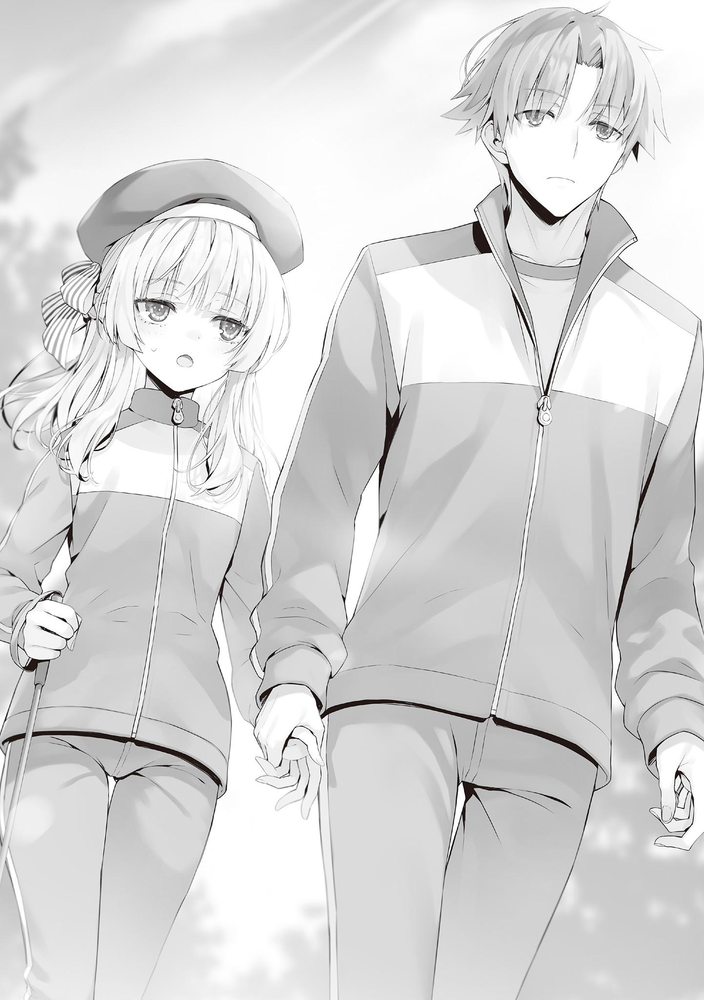
Finalmente, el parque para perros se hizo visible.
Al ver a Yamamura de pie a la sombra del gran árbol en la distancia, Sakayanagi levantó la mano lentamente para hacer notar su presencia, a pesar de su confusión. Cuando empujé suavemente la espalda de Sakayanagi, empezó a caminar sola, aunque con un bastón.
A partir de ahí, no me correspondía interferir.
Sakayanagi y Yamamura tendrían que hablar y encontrar sus soluciones.
Esperando un futuro brillante, di media vuelta y me marché.
Así, la reunión de intercambio de tres noches y cuatro días llegó a su fin.
EPÍLOGO
¿QUIÉN ES EL RETADOR?
AL TERMINAR la reunión de intercambio, un acontecimiento que supuso cambios en las relaciones, se reanudó nuestra vida escolar habitual.
Últimamente, se había convertido en costumbre reunirme con Kei en mi habitación o en el vestíbulo todas las mañanas e ir juntos a clase, pero hoy era diferente. Esta vez salí solo, unos 20 minutos antes de lo habitual.
Bajé del ascensor, llegué al vestíbulo y salí.
Hoy hacía un frío inusual, quizá por el fuerte viento.
Pronto acabaría febrero.
El próximo mes sería más ajetreado que nunca.
En primer lugar, tenía que ocuparme del asunto de Karuizawa Kei.
No necesitaba nada especial para ello.
Sólo tenía que seguir con el proceso tal y como se había planeado en un principio.
Después, el asunto de Ichinose Honami.
La líder de una clase que luchaba por competir con las otras tres, sin nada especial entre las cuatro clases.
Mi predicción era correcta: la clase D estaba en declive a medida que se acercaba el final del segundo año.
Sin embargo... a diferencia del problema de Kei, quizá fueran necesarios algunos ajustes.
Podría decidirlo después de que salieran los resultados de los exámenes de fin de año.
Por mucho que creciera Ichinose, no habría grandes cambios.
Pensé que sólo tenía que seguir con el plan tal y como había pensado en un principio.
Pero...
Surgió un problema que no estaba en el plan.
Eso me obligó, a su vez, a hacer cambios.
Habría algunos efectos negativos como resultado, pero no todos los cambios serían malos.
Tan pronto como empecé a caminar a la escuela, me detuve.
—Llegas pronto.
En mi campo de visión, divisé a la persona con la que había quedado.
Aún faltaba tiempo para la hora prevista, pero ella ya estaba esperando.
No reparó en mí y de vez en cuando exhalaba nubes blancas como si tuviera frío, pero pronto se percató de mi mirada.
—Buenos días, Ayanokouji-kun.
Al acercarme, un saludo matutino llegó volando.
—Buenos días. Perdona por llamarte tan temprano.
—No pasa nada. Entonces, ¿de qué quieres hablarme? ¿Algo difícil de decir por teléfono?
Como compañeros de clase, conocíamos la información de contacto del otro.
Normalmente, podíamos comunicarnos usando nuestros teléfonos.
Me preguntó por qué no lo hacía.
—En cierto modo, quizá.
Horikita se alineó a mi lado y pronto empezó a caminar conmigo.
—¿En cierto modo? Es una forma aterradora de decirlo.
—No hay nada de lo que desconfiar.
—¿En serio?
Me miró con dudas en los ojos, pero no había ningún remilgo como cuando nos conocimos.
Era una amistad natural, con una dulzura que podría describirse así.
—A menudo hablo contigo de exámenes especiales y asuntos relacionados con la clase, pero a veces quiero hablar de cosas que no tienen nada que ver con eso.
—¿Eh? Perdona, no te entiendo. ¿Qué quieres decir?
Lamenté que mis palabras fueran más torpes de lo que había imaginado.
Había pensado en una forma más casual de decirlo, pero decidí no hacerlo porque podría molestarla dependiendo de cómo se lo tomara.
—Quería tener una conversación sin sentido contigo, ajena a nuestros intereses. ¿Te parece lógico?
—...Ya veo...
Ella se quedó pensativa por un momento, pero por lo visto, no lo entendió.
—Somos compañeros de clase desde hace tiempo. No es como si tuviéramos la oportunidad de hablar para siempre.
—"Para siempre" es una exageración. Claro, eso es cierto, pero todavía tenemos más de un año hasta la graduación, ¿verdad? No tenemos que organizar reuniones como esta, puedo charlar en cualquier momento.
—¿Y si me expulsaran en el examen de fin de año?
—Eso es precipitado. No creo que te expulsen. Pero viendo con qué facilidad te equivocas en las preguntas de sentido común, tal vez haya una posibilidad...
Después de dar una respuesta seria, se rió un poco, encontrando divertidas sus propias palabras.
—¿De verdad te preocupa que te puedan expulsar? ¿Por eso quieres hablar tan temprano por la mañana...?
—El último examen especial se ha convertido en un pequeño trauma para mí.
—Entonces, ¿por qué no intentas recordar más preguntas de sentido común? Se te da bien estudiar.
Replicó ella, expresando que yo era consciente de mis puntos débiles.
—Entonces, ¿puedes memorizar términos de juegos y anime con la misma eficacia que estudias para otras asignaturas?
—¿Eh...? no sé. Cuando Onizuka intentó empujarme a jugar un juego anteriormente, hablaban de DP... algo, DEF algo, enfriamiento algo, pero mi cerebro se negaba a recordar esas palabras y sus significados...
—Es una sensación parecida. Sólo que parece que no quiero recordarlo.
Quería absorber toda la información que pudiera, pero también tenía esas preferencias.
—No te preocupes. Desde el punto de vista de la clase, tu existencia es esencial. Aunque tengas problemas con preguntas de sentido común, siempre te respaldaré. En otras palabras, no serás expulsado.
Horikita lo dejó claro.
—Eso me tranquiliza.
Golpeé el hombro de Horikita con un suave golpe de mi mano izquierda. Se estaba tomando en serio esta conversación.
—¿De verdad te preocupa tu propia expulsión? No lo parece. ¿Cuál es el verdadero problema?
—En realidad, no estoy preocupado por mí, sino por la posibilidad de tu expulsión.
—En realidad, eso parece más probable.
Mostró una expresión ligeramente molesta, pero no era grave, y rápidamente volvió a la normalidad.
En comparación con cuando entró por primera vez, las emociones de Horikita se habían vuelto mucho más variadas.
—El último examen especial sólo tuvo como resultado la expulsión de Kamuro. Sin embargo, la próxima vez, podría haber más.
—...Estás esperando nuevas expulsiones.
—Sí. Al menos una de nuestro año. Dependiendo del contenido del examen y su desarrollo, podríamos perder a varias personas.
—...¿Tantos?
—Es mejor pensar así. La escuela lo dijo antes: los estudiantes de segundo año progresan en la vida escolar con pocas o ninguna expulsión.
—¿Así que van a forzar un examen para aumentar el número de expulsiones? Eso es... un poco extremo. Nuestro año no tuvo tantos puntos débiles. Debería haber sido algo bueno.
Si lo mirabas positivamente, era cierto.
Pero a veces, hacía falta un tamiz.
—Depende de cómo se vea desde fuera. Por ejemplo, el gobierno también participa en el funcionamiento de la escuela. Si el objetivo es dar de baja a diez personas al año, y los alumnos de segundo no cumplimos esa norma, estaría bien que simplemente nos vieran como excepcionales, pero no se sabe hasta qué punto la gente de arriba conoce y reconoce los detalles más sutiles de esas cifras.
—Para cumplir con la política del Gobierno, ¿harán las normas más estrictas?
—El año pasado, como no hubo alumnos expulsados, se cambió a la fuerza de cero a una expulsión. No me sorprendería que expulsaran a varias personas en el próximo examen de fin de año.
El consejo de los de tercer año en las vacaciones de invierno podría no haber sido sólo para el examen especial de supervivencia y eliminación. Pero en realidad, los de tercer año probablemente no sabían sobre el futuro de los estudiantes de segundo año.
—¿No estás pensando demasiado...?
—Por supuesto, es sólo especulación. Sólo lo pienso basándome en lo que puedo ver ahora mismo. No puedo aportar ninguna prueba concreta.
—En ese caso, supongo que sí. A mí también me gustaría que trabajaras duro.
Pidió cooperación medio en serio, medio en broma.
Mi respuesta a eso ya estaba decidida.
—Si hay una situación al final del año escolar en la que pueda ayudar, tengo la intención de cooperar tanto como sea posible.
—Esa es una respuesta bastante inusual para ti. Entre el entrenamiento especial y ahora, últimamente has cooperado demasiado. Incluso con la situación de Amasawa-san, no parecías disgustado ni una sola vez.
—He dejado muchas cosas a otros hasta ahora. Tengo que ayudar al menos un poco.
—Esa es una razón noble, pero... aún así no es propio de ti volverte tan cooperativo.
—No sé. Puede que haya gato encerrado.
—Preferiría que no, si es posible.
En ese momento de la conversación, Horikita y yo hicimos contacto visual.
Probablemente ambos pensamos en lo mismo simultáneamente.
—Jaja, me invitaste a charlar, pero al final estamos hablando del examen.
—Ya. No tiene sentido llamarte aquí si es así. Muy bien, terminemos la discusión sobre el examen.
Con eso, puse fin a este tema.
—Me enteré de los resultados por Kushida, parece que luchaste bien, pero perdiste.
—Es muy fuerte, ¿verdad? Aunque luchamos dos contra uno, al final no pudimos ganar.
Sin embargo, escuché que Amasawa, después de ser golpeada unas cuantas veces, fue capaz de analizarlas.
—Deberías ser capaz de tener una mejor pelea la próxima vez.
—¿Dos contra uno?
—¿No te gusta?
—Pues sí. Ibuki-san dijo que no volvería a formar equipo conmigo.
—Está bien. Se olvida rápido de las cosas.
Horikita se rió de mi exageración.
—Por cierto, creo que Amasawa-san se dio cuenta de tu influencia nada más empezar la pelea. Pero se veía muy contenta. ¿Cuál es tu relación con ella?
—Es mi ex novia.
—¿Hablas en serio? ¿O era una broma?
—Fue una broma de mal gusto.
—Si ese es el caso, no fue nada gracioso.
Volvió una respuesta dura.
—Algún día, quiero escuchar la verdad de tu propia boca, Ayanokouji-kun.
—Lo pensaré. Pero no esperes-
—No lo haré.
Horikita entrecerró los ojos y sonrió en respuesta.
En ese momento, Horikita, que estaba cambiando de humor, mostró una sonrisa.
Supongo que yo también estaba aprendiendo mucho de Horikita.
Esta relación entre nosotros terminará pronto.
Horikita tendrá algunas experiencias duras en el futuro.
Pero no hay por qué preocuparse.
Su crecimiento y el apoyo de sus compañeros deberían guiarla.
PARTE 1
Retrocediendo un poco en el tiempo desde mi viaje a la escuela con Horikita y la reunión de intercambio.
Fue cuando Hashimoto vino a mi habitación pidiendo ayuda poco antes de que empezara la reunión de intercambio.
¿Por qué cometió Hashimoto este acto de traición aparentemente temerario?
¿Por qué se arriesgó en aquel momento?
Las circunstancias fueron explicadas detalladamente por él mismo.
—...Antes de decirte lo que sigue, hay algo que necesito confirmar contigo.
Hashimoto debía tener una determinación extraordinaria para tomar semejante decisión.
Lo que quería confirmar.
Era la cantidad de información que tenía en ese momento.
Ese era un factor importante que este hombre no podía pasar por alto.
—He estado tentado a traicionar a Ryuuen desde antes del examen especial anterior. No sólo formar equipo temporalmente, sino cambiar de clase basándome en esa premisa.
Era obvio, pero no había ningún mérito para que Hashimoto, que estaba en la clase A, se cambiara a la clase de Ryuuen.
Salvo casos como el de Katsuragi que perdió su lugar, si se miraba de un tiempo para acá, la Clase A debería haber establecido una posición más estable que su estado actual.
—Por supuesto, al principio no me tomé en serio esa invitación. Sin embargo, justo después, escuché de Ryuuen que si no cambiaba de clase, definitivamente me arrepentiría al final del año escolar.
—¿Arrepentirse? Es porque el mismo Ryuuen confía en que ganará?
—Parece que ni siquiera tú conoces el contenido de la apuesta que Ryuuen y Sakayanagi acordaron.
—Una apuesta, ¿eh? No sé si se aplica, pero he oído algo sobre ese intercambio en el último examen de la isla desierta. Por desgracia, no conozco los detalles.
Después de contarle lo que sabía, Hashimoto se frotó los dedos e hizo un sonido, como para demostrar que eso era lo que quería confirmar de antemano.
—Me alegro. Entonces tenía una razón para venir aquí.
Aceptando que los puntos clave de la historia coincidían, Hashimoto levantó ligeramente las comisuras de los labios y sonrió.
Después, Hashimoto detalló la apuesta que hicieron los dos.
—Cuando me enteré, pensé que era una broma, pero resulta que va en serio.
—Ya veo. Así que tenías un motivo para traicionarlos durante el examen especial de supervivencia y eliminación.
Estaba claro que no era una idea improvisada en ese momento.
—No es descabellado dudar de la apuesta en sí, ¿verdad? Se mire como se mire, Sakayanagi está en desventaja.
—Eso es cierto. Sin embargo, Sakayanagi no elegiría rechazar la apuesta sólo por la desventaja.
Ella era del tipo que, como Ryuuen, creía en su victoria final sin ninguna duda.
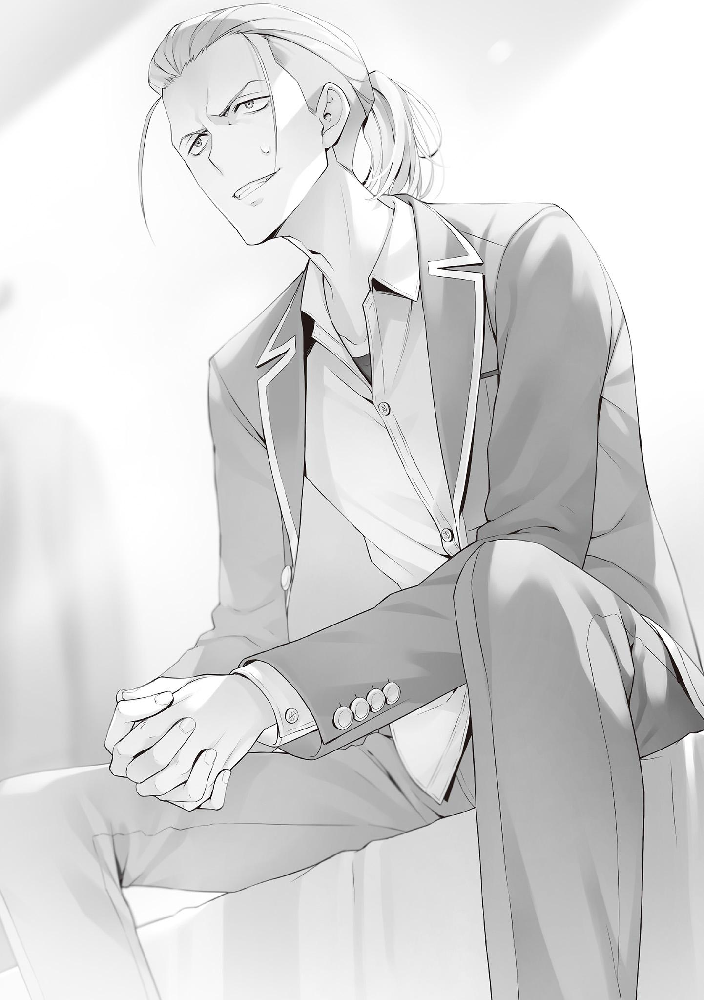
—¿Crees que Sakayanagi simplemente cedió o se pusieron ciertas condiciones?
Hashimoto, incapaz de reprimir sus desbordantes emociones, se inclinó hacia delante y preguntó.
—Ambas cosas son posibles, pero los detalles de la apuesta acabarán saliendo a la luz. Teniendo eso en cuenta, debe ser lo segundo. Ella debe haber permitido a Ryuuen acumular puntos privados.
—Bien. Eso es rápido. Sí, si ese es el caso, hay mucho espacio para maniobrar.
—¿Quién más sabe de esta apuesta además de ti y las partes involucradas?
—A menos que Ryuuen estuviera mintiendo, nadie. Tú eres el cuarto.
Bueno, ambos odiarían perder la apuesta por haberse filtrado.
Esa especulación era correcta. Sería preferible hacerlo público después de que todo se hubiera confirmado.
Al único que Ryuuen se lo filtró fue a Hashimoto, pero eso debió ser un riesgo considerable.
Si fue más o menos cuando terminó el examen de la isla desierta, había pasado cerca de medio año desde entonces.
—Ha tardado un tiempo... en llegar este día.
Habiendo mantenido oculto el secreto, Hashimoto se había estado preocupando solo.
—Ya sea que gane Sakayanagi o Ryuuen, honestamente, no puedo hacer un juicio... No, más bien pensaba que Sakayanagi podría ganar.
Como si hubiera mentido momentáneamente, Hashimoto se corrigió de inmediato.
—Pero incluso así, es como 55 a 45. En serio, no es decisivo, ¿verdad?
Estuve de acuerdo.
A no ser que fuera una probabilidad de nueve a uno o, en el peor de los casos, de siete a tres, no se podía saber por dónde iría un partido.
—Así que he estado buscando un factor decisivo, y lo que pensé que podría ser...
Lentamente, la mirada de Hashimoto se volvió hacia mí.
—¿Yo?
—Si hubieras seguido a Sakayanagi, yo habría estado dispuesto a morir con mi clase actual sin dudarlo. Por eso aconsejé a Sakayanagi... que te reclutara como aliado.
Y Sakayanagi se negó.
¿Así que decidió traicionarlos...?
Aunque parecía tener sentido, seguía sin estar claro en el fondo.
Entendí que el resultado del enfrentamiento entre Sakayanagi y Ryuuen era impredecible.
Comprendí que él pensaba que Sakayanagi podría ganar si yo me unía.
Pero eso no cambiaba el hecho de que era demasiado imprudente.
—Haré que Ryuuen gane. No importa cuál sea el contenido del examen especial de fin de año, los ayudaré a conciencia. Si pierdo esta oportunidad, lo más probable es que sea yo quien desaparezca.
Por supuesto, Sakayanagi estaría en alerta máxima contra Hashimoto y no compartiría ninguna información.
Pero si había un traidor confirmado dentro de la clase, sería inevitablemente una desventaja.
Si las puntuaciones acumuladas en los exámenes de la clase fueran a determinar el resultado, sería una situación difícil si Hashimoto sacara cero a propósito.
—Si Sakayanagi hubiera seguido mis instrucciones, ya fuera antes o después de traicionarla en el examen especial anterior, planeaba traicionar a Ryuuen y unirme a ella al final del año.
Hablaba con mucha determinación, pero no estaba seguro de cuánto de lo que decía era cierto.
Ahora mismo, de lo único que podía estar seguro era de que todo lo que decía era ambiguo.
—Está bien si quieres hacer ganar a Ryuuen, pero ¿le propusiste lo mismo que a Sakayanagi?
—¿Te refieres a lo de reclutarte? Sí, por supuesto. La respuesta fue la misma que la de Sakayanagi, pero había una condición. Si podíamos derrotar a Sakayanagi en el examen de fin de año, él nos reclutaría a los dos para su clase.
¿Ryuuen dijo eso?
Considerando el pasado, Ryuuen era igual a Sakayanagi.
Estaba claro que él no era la clase de persona que intentaría ganar reclutándome.
Y tomaría la escalofriante cantidad de 40 millones para reclutar a dos estudiantes de diferentes clases.
¿La mentira superficial de Ryuuen engañó a Hashimoto?
No, probablemente no fue eso.
Hashimoto no estaba diciendo toda la verdad.
Si yo fuera Hashimoto, me aseguraría de tener una red de seguridad para mi imprudente traición. No decidiría traicionar basándome únicamente en la posibilidad de que Ayanokouji Kiyotaka se cambiara a la clase que yo tenía en mente.
Sería extraño que la recompensa por traicionar a Sakayanagi no fuera enorme.
El contrato para transferir 20 millones de puntos privados-.
Eso tendría sentido.
Si ayudaba a derrotar a Sakayanagi en el examen de fin de año y se llevaba el crédito, ganaría ese privilegio de Ryuuen.
Eso haría que el desafío valiera la pena, aún a costa de la traición.
Aunque Ryuuen no pudiera preparar inmediatamente esa gran suma, podría reunir los puntos privados que entran en la clase cada mes, y sería suficiente para pagar antes de la graduación.
Al final, a Hashimoto le daba igual qué clase ganara o dónde estuviera. Mientras tuviera el privilegio de formar parte de la clase A, ésa sería la victoria de Hashimoto.
Todo era por él mismo.
Fue la respuesta que eligió basándose en los patrones que había simulado mentalmente.
Al traicionar a la clase en el examen especial de supervivencia y eliminación, Hashimoto confirmó las verdaderas intenciones de Sakayanagi.
Si decidía aceptarme allí, las cosas serían sencillas. Si reunía puntos privados de cada uno de sus compañeros de clase, había muchas posibilidades de que alcanzara fácilmente los 20 millones de puntos. Si yo aceptaba el cambio de clase, Hashimoto habría elegido luchar junto a mí y Sakayanagi como los dos jugadores principales.
Si era rechazado, podría llegar a un acuerdo secreto con Ryuuen y conseguir 20
millones de puntos privados. Sin embargo, aunque este último tenía ventaja para graduarse en la Clase A, no podía evitar el riesgo de expulsión debido a su traición. Sakayanagi no sólo se convertiría en un enemigo, sino que también correría el riesgo de ser el objetivo de alguien más.
La razón por la que se acercó a mí y me contó los detalles de la traición fue por él mismo.
—¿Qué quieres de mí?
Cuando pregunté, Hashimoto sonrió nerviosamente.
PARTE 2
Con el fin del campamento de intercambio, el tiempo pasaba lenta pero inexorablemente.
Sakayanagi pasaba el tiempo tranquilamente mientras esperaba a que viniera alguien, sentada en el sofá de la sala de orientación profesional.
A su lado estaba su profesor titular, Mashima, con los brazos cruzados en señal de confusión.
—¿De qué piensas hablar? ¿Y con quién?
Mashima, al que habían traído aquí sin decirle nada, lanzó una mirada inquisitiva.
Aunque no entendía la situación, definitivamente percibía algo inusual.
—Parece inquieto, Mashima-sensei. No se preocupe, pronto lo entenderá.
—Pero...
Habían pasado más de diez minutos desde que ambos entraron en la habitación.
—...Aquí viene.
Sakayanagi lo sintió inmediatamente después.
En el momento en que una mano se colocó en la puerta, ella sabía que ese hombre aparecería.
—Llegas cinco minutos tarde, Ryuuen-kun.
—La estrella del espectáculo siempre hace una entrada tardía.
El que abrió la puerta de la sala de consejería fue Ryuuen Kakeru.
Y detrás de él estaba la figura de su profesor titular, Sakagami.
—¿Qué está pasando aquí, Mashima-sensei?
—Bueno... Yo también estoy intentando calibrar la situación.
Los dos profesores que se encontraron no podían entender la situación y se miraron, desconcertados.
Ryuuen se sentó frente al sofá donde estaba Sakayanagi, abriendo mucho las piernas.
Se creó una situación extraña: dos alumnos sentados y los profesores de pie.
—Aunque fueras a engañar a Hashimoto-kun, lo obligaste a hacer algo bastante atrevido.
Cuando Sakayanagi preguntó, Ryuuen respondió inmediatamente.
—Debe sentirse inseguro bajo tu mando, no puedo culparlo.
—Eso estaría bien. Pero debe haber sido tentado por las dulces palabras de un astuto villano. Cree que las mentiras son verdades y las verdades mentiras. Podría ser otra víctima.
Comenzó el intercambio de palabras entre ambos, dejando de lado a los profesores.
—Pareces enérgica para alguien que ha caído tan bajo.
—En efecto, sentí emociones que nunca antes había experimentado, pero si pensabas que ese era el final, es demasiado pronto.
—Eh, Ayanokouji hizo algo innecesario también.
Ryuuen naturalmente comprendió que Ayanokouji se había acercado a Sakayanagi en la reunión de intercambio.
Después de la reunión, Sakayanagi había vuelto a ser la misma de siempre.
No se necesitaba ningún razonamiento complejo para conectar los puntos.
—Como tú dices, fui salvada por él... por Ayanokouji-kun.
Tomando de frente la mirada de Sakayanagi, Ryuuen lo sintió en su piel.
Un cambio en su mirada, que hasta ahora sólo había mirado con desprecio a los demás.
Sakayanagi también lo sintió.
El hombre que tenía delante tenía una convicción que había crecido aún más que cuando se conocieron.
—Así que a ti también te salvó Ayanokouji-kun.
—Huh, no me hagas reír. Nunca nos llevaremos bien. No recuerdo haber sido salvado por Ayanokouji. Más bien, lo que recibí fue odio. Odio por venganza.
Su fuerza y orgullo pisoteados.
Había sido derrotado miserablemente en el ring donde tenía absoluta confianza.
—Ya veo. Odio, así que eso es lo que te trajo aquí.
—¿Eres diferente?
En respuesta a la pregunta contraria de Ryuuen, Sakayanagi inadvertidamente sonrió.
—¿Qué es tan gracioso?
—Lo siento. Si mi sonrisa pareció grosera, te pido disculpas. Simplemente estaba feliz de que hayas llegado a reconocer la fuerza de Ayanokouji-kun en el proceso de llegar aquí.
A diferencia de su furia hacia Hashimoto, que no estaba basada en una experiencia personal, el Ryuuen ante ella había experimentado directamente la causa de sus emociones.
Ella pensó que él estaba calificado.
No, Sakayanagi revisó inmediatamente sus pensamientos. No era sólo eso.
Sintió un cambio en su interruptor emocional dentro de ella, comenzando con el incidente que involucraba a Kamuro y Yamamura.
—¿Estás diciendo que le echaste el ojo antes?
Era un hecho bien conocido que Sakayanagi había estado prestando atención a Ayanokouji desde el principio.
Pero Ryuuen no sabía dónde fue su primer contacto, así que trató de averiguarlo.
—Sí. Desgraciadamente sólo supiste de su existencia en esta escuela. Sin embargo, a diferencia de ti, yo lo he seguido con mis propios ojos desde la infancia.
Ante tal actitud triunfante, Ryuuen dejó de moverse.
—...Toda una declaración interesante, ¿no es así? Conoces su infancia?
—Lo conozco bien. Lo considero algo así como un amigo de la infancia.
Al oír esa afirmación, Mashima también recordó la historia que Sakayanagi le había contado antes.
Y no había nada más grosero que interrumpirlos a los dos.
—Perdí contra Ayanokouji. Pensé que estaba bien perder tantas veces como quisiera mientras ganara al final, pero ese hombre aplastó sin piedad ese espíritu indomable. Me quedé muy agotado.
Pero más de un año después, intentaba volver a ese escenario.
—Aunque nuestros motivos son diferentes, tal parece que nuestros objetivos finales son los mismos, Ryuuen-kun. He estado deseando luchar contra él desde mucho antes que tú. Sólo nos queda un año de vida escolar.
Necesito deshacerme de cualquier obstáculo antes de eso.
—Estoy completamente de acuerdo. Te derrotaré rápidamente y me vengaré de él.
Sakayanagi, quien siempre había mirado a los demás con ojos fríos, ciertamente sintió que su corazón se calentaba.
No hacia Ryuuen. Ella estaba pensando en Ayanokouji, quien estaba esperando adelante.
Ryuuen sintió lo mismo. Sus emociones estaban surgiendo para derrotar a Ayanokouji, quien estaba esperando más allá de Sakayanagi.
—Tu venganza no se cumplirá. Tropezarás justo antes de ella.
—Probablemente estés planeando un enfrentamiento en el trono, pero ese plan fracasará.
Incapaz de permanecer en silencio ante la escalada de la conversación, Mashima intervino.
—Parece que ustedes solos hacen avanzar la conversación, pero ¿podrían explicar la situación?
—Le pido disculpas.
En respuesta al ligeramente indignado Mashima, Sakayanagi se disculpó en voz baja y comenzó a hablar.
—Será mejor no perder más tiempo. ¿Vamos al grano?
—Sí, así es.
Sakayanagi alineó a los dos profesores y los giró hacia ella.
Frente a Sakayanagi, que se irguió sobre su bastón, Ryuuen también se puso de pie y se giró, mirando a los profesores.
—Estamos a punto de hacer una gran apuesta. Normalmente, haríamos algún tipo de promesa verbal para asuntos ordinarios, o si no podemos confiar entre nosotros, haríamos un contrato. Esta vez, sin embargo, debido a la naturaleza de su contenido, decidimos que sería más seguro contar con la presencia de los profesores encargados de ambas clases.
Por el curso de la conversación que habían escuchado, tanto Mashima como Sakagami se sintieron tensos.
—¿Qué piensan decidir ustedes?
Sakayanagi anunció los detalles de la apuesta.
—Para el examen de fin de año, el perdedor abandonará esta escuela: de eso se trata.
—¿El perdedor abandonará...? ¿De qué estás hablando? El contenido y las reglas del examen aún no se han anunciado. Todavía ni siquiera sabemos si hay forma de expulsar a los alumnos dentro del examen.
Confundido, respondió con severidad, explicando que no había garantía de un método para expulsar al oponente.
—Mashima-sensei, ¿qué está malinterpretando? El contenido y las reglas son irrelevantes. Sólo estamos apostando por el resultado del examen especial de fin de año. Como resultado, el perdedor se retirará voluntariamente. Eso es todo.
—Ustedes los profesores fueron hechos testigos de este acuerdo solo para asegurar la certeza. Aunque Sakayanagi llore y grite, sigan con el proceso de expulsión de acuerdo con el contrato. Por supuesto, si por casualidad pierdo, lo mismo se aplica a mí.
Ambas partes aceptaron la peligrosa condición -aceptar la expulsión- tras la derrota, cortando al 100% su retirada.
Debido a su poder coercitivo, la cooperación de la escuela era esencial para la buena ejecución de la apuesta.
Mashima, que había asimilado la situación, intentó hablar, pero las palabras no le salieron inmediatamente.
—¿De verdad pretendes hacer una apuesta así? Tienes un Punto de Protección...
Comparado con Mashima, Sakagami, más calmado, expresó sus dudas.
—Un Punto de Protección no tiene sentido si se retiran voluntariamente.
Para ser justos, se ha decidido que solicitemos puntos privados adicionales para cubrir la diferencia que supone el Punto de Protección, pero la cantidad se mantiene al mínimo. Si le quitamos su dinero, a su clase realmente no le quedará nada.
—Es como contar los pollos antes de que nazcan. Si pierdes, no hay necesidad de calcular el dinero.
Mashima comprendió que no se trataba de una broma. El contrato iba en serio.
Enderezó su postura y puso una expresión severa.
—¿Están los dos realmente de acuerdo con esto? Si lo aceptamos, tendremos que aplicar la expulsión por la fuerza basándonos en los resultados de fin de año. Ambos ocupan puestos importantes; los dos desempeñan el papel de líderes en sus clases. Es inevitable que se produzcan grandes disturbios.
—Sí. Será prácticamente imposible recomponer la clase derrotada, y será imposible evitar abandonar la batalla entre cuatro antes de pasar a tercer año.
Mientras decía estas palabras, Sakayanagi volvió a pensar en Ayanokouji.
La competencia entre las cuatro clases que Ayanokouji idealizaba se volvió imposible cuando se decidió la apuesta con Ryuuen. Incluso si Ayanokouji se transfiriera y dirigiera hacia el equilibrio de las fuerzas, considerando la clase en declive de Ichinose, no habría suficientes jugadores.
—Por favor, no esperes un empate para invalidar la apuesta, ¿de acuerdo?
—No reconoceré un empate. Si eso ocurre, podemos decidir por sorteo, igual que cuando abandonaste a Kamuro.
—Eso también es divertido. Esperémoslo.
Ambas partes cortaron su método de retirada. Aunque, desde el principio, no previeron que se produjera un empate. Sólo podía ser victoria o derrota.
Una relación similar a las dos caras de una misma moneda.
La apuesta se estableció oficialmente cuando Sakayanagi y Ryuuen lo reconocieron, y ambos profesores lo entendieron.
El perdedor desaparecería.
El examen especial de fin de año, con las apuestas establecidas en la expulsión y sin escapatoria... estaba a punto de comenzar.
PALABRAS DEL AUTOR
De alguna manera, fui capaz de publicar esto en cuatro meses. Soy Kinugasa con una hernia. Gracias a todos también por su apoyo este año. Un año pasa realmente rápido y, antes de que me diera cuenta, uno de mis hijos empezará la primaria esta primavera.
Creo que jugar con todas sus fuerzas cada día en el jardín de niños o en la guardería es la función social de un niño, pero el hecho de que estén a punto de saltar a una sociedad que incluye estudiar... Como padre, estoy medio emocionado y medio preocupado.
Bueno, dejemos mi historia a un lado por ahora y hablemos un poco de
'Classroom of the Elite'.
Después de la vez anterior, la historia ha entrado en el tercer trimestre del segundo año. Tras el duro desarrollo del volumen anterior, esta vez he proporcionado algo más relajado. Y la próxima vez, será finalmente el último examen especial del segundo año, el examen especial de fin de año. Los que ya hayan terminado de leer la historia principal lo entenderán, pero estoy planeando una historia que afectará mucho a los personajes principales hasta este punto.
Y actualmente, se está emitiendo la tercera temporada del anime para televisión
"Classroom of the Elite". Me encantaría que también pudieran verla.
Por último... Como escribí al principio, sobre la condición de mi cuello herniado.
En estos días, no hay nada que pueda hacer al respecto, y mi ritmo de trabajo ha disminuido considerablemente. El dolor es tan intenso que detesto sentarme en una silla.
Cuando estaba sano, si la proporción de tiempo de trabajo era de seis y la de descanso de cuatro, hacía que fueran nueve de trabajo y uno de descanso para cubrir de algún modo la reducción del ritmo. Pero es imposible que pueda mantener esta proporción para siempre, y creo que mi cuerpo está al límite...
Así que estoy considerando en el futuro tomarme un tiempo para descansar completamente y centrarme en la recuperación. En ese caso, es posible que la
publicación del próximo volumen se retrase. Tengo la intención de trabajar más duro que nunca cuando me recupere, así que agradecería su comprensión.
'Classroom of the Elite' es, por supuesto, la primera prioridad, pero tengo muchas otras cosas que quiero hacer aparte de eso.
Bueno, a todos, esperando un reencuentro lo más rápido posible, ¡hasta la próxima!
HISTORIAS CORTAS
SHIINA HIYORI
RECUERDOS QUE NO QUIERO OLVIDAR
MORISHITA-SAN, CON UNA carta en la mano izquierda, extendió rápidamente el brazo.
En la mano derecha llevaba cuatro cartas.
—Por favor, adelante, Shiina Hiyori. Toma la carta que quieras.
En este juego, la persona que se queda con el comodín al final pierde.
Entonces... ¿significa eso que la única carta en su mano izquierda es sospechosa?
—De alguna manera... tengo un poco de curiosidad por esta carta.
—¿Es así? Esta es la estrategia avanzada que se me ocurrió.
¿Pero haría tan obvio que tiene el comodín?
—¿Qué debo hacer...?
Instintivamente, sentí que debía elegir una de las cuatro, pero la compostura de Morishita-san era palpable. ¿Intentaba hacer que pareciera una posibilidad entre cuatro aislando una carta segura en lugar de hacerme sacar el comodín de una posibilidad entre cinco?
No, tal vez ese era exactamente su plan, ¿y ese era el comodín?
-No tenía ni idea.
Mientras lo contemplaba seriamente, miré por casualidad a Ayanokouji-kun, que estaba sentado detrás de Morishita-san. Sus ojos estaban concentrados en las cartas de Morishita-san.
Y entonces, en ese momento...
Aunque no había nada aparente en su expresión...
Extrañamente sentí que podía leer los pensamientos de Ayanokouji-kun.
'La carta aislada que Morishita-san estaba sosteniendo era el comodín'.
Sentí como si lo estuviera viendo de esa manera.
—Por favor, elige como quieras.
Por eso me sentí un poco culpable y no pude elegir entre las cuatro.
Simplemente saqué la carta aislada.
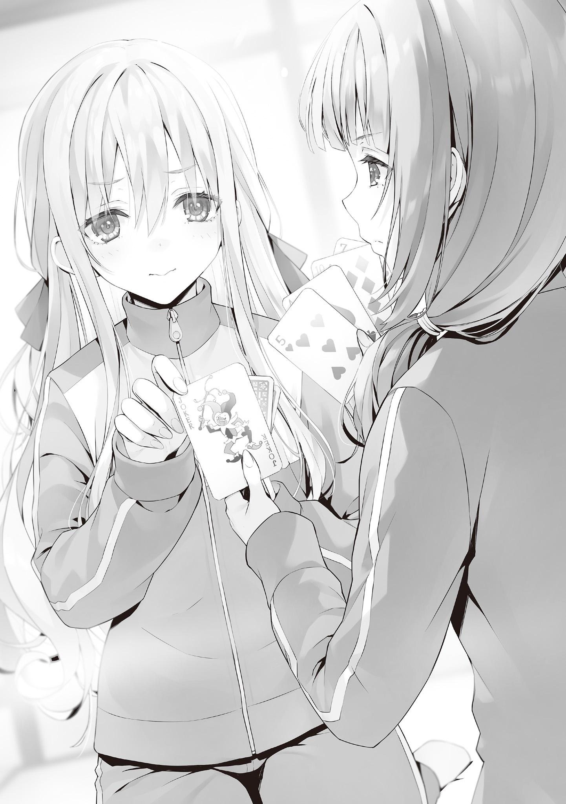
Cuando le di la vuelta... esa carta era efectivamente el comodín.
Estaba un poco sorprendida, pero más que eso, me sentí aliviada.
Me sentí validada de que lo que percibí de Ayanokouji-kun no estaba equivocado.
Seguí disfrutando del juego después de eso.
La vida escolar, donde podía pasar un tiempo preciado con amigos que no podría haber imaginado cuando me inscribí por primera vez.
Pasar un tiempo preciado con la persona que me importa.
Recuerdos que quería conservar para siempre.
Deseaba que esta vida escolar continuara aunque sólo fuera un día más.
CHABASHIRA SAE
EL ESTUDIANTE QUE TENGO DELANTE
DESPUÉS DE CLASES, terminó la reunión individual con Koenji Rokusuke, y la sala de orientación profesional quedó en silencio.
—Uf... Koenji es un estudiante tan problemático.
La conversación no tenía sentido, y los apartados que debía rellenar el profesor eran un desastre.
Suspiré, mirando fijamente la pantalla de la tableta de la que quería apartar la vista.
Su aspiración profesional era ser una persona libre, no necesitaba relaciones humanas, sus únicas preocupaciones eran mejorar su propio cuerpo, etc.
—Si presento esto, quién sabe lo que dirán los de arriba.
Pero no podía reescribirlo y mentir.
Mi única opción es presentarlo con algunas pequeñas modificaciones en la redacción.
—Si sólo Koenji fuera el único bicho raro, me sería más fácil...
El último que quedaba era Ayanokouji, que podía ser igual de problemático que Koenji.
Sinceramente, no podía imaginarme qué clase de encuentro cara a cara sería.
Mientras ajustaba el perfil de Koenji, llamaron a la puerta de la sala de orientación profesional.
—Disculpe.
Con ese tono serio, Ayanokouji entró en la habitación.
—Por fin estás aquí. Toma asiento.
Cambié del perfil de Koenji al de Ayanokouji, mostrando una lista en blanco.
Me pregunté cuánto de esto se rellenaría durante la inminente reunión.
—Parece que está ocupada.
—Como profesora titular, no puedo evitar estar ocupada durante este tiempo. Pero me siento un poco mejor sabiendo que las entrevistas con dos personas terminarán hoy. Fue una buena decisión dejar a los dos raros para el final.
Primero, le indiqué a Ayanokouji que se sentara, uno frente al otro.
—¿Dos bichos raros, dice?
—¿Qué, te escandaliza que te traten al mismo nivel que a Koenji?
Sus personalidades eran completamente diferentes, pero no había duda de que ambos eran unos bichos raros.
—Mentiría si dijera que no pienso nada al respecto.
—¿Crees que Koenji es más un bicho raro? Bueno, puedo entender por qué piensas eso, pero para mí, no hay mucha diferencia. Tú también eres un bicho raro.
Una cosa era segura, él no quería ser comparado con Koenji.
—Bueno, no tengo muchas oportunidades de hablar con cada estudiante.
Antes de hablar de tus planes futuros, hablemos de tu vida escolar. Si hay algo que quieras que la escuela mejore, me gustaría escucharlo.
—No tengo nada en particular. Como individuo, estoy satisfecho.
—Ya veo. ¿Tienes algún problema en tus relaciones con los amigos, o algo que quieras consultar?
—No lo tengo.
Definitivamente era un bicho raro. A diferencia de Koenji, era conciso y eficiente, pero al igual que Koenji, carecía de sustancia.
—La mayoría de los estudiantes dan una o dos opiniones, o al menos muestran alguna señal de pensar, aunque no tienen ninguna. No creo que te estés conteniendo...
Intenté sonsacar todo lo que podía como profesora, pero las respuestas de Ayanokouji no flaquearon.
—La verdad es que no tengo ninguna queja.
—Bueno, si es así, está bien... ¿pero de verdad no tienes nada?
—No tengo nada. Estoy satisfecho con mi vida escolar y no hay ningún problema en particular.

—Ya veo... Bueno, eso está muy bien.
—Chabashira-sensei, usted también ha cambiado bastante.
Mi mano, que había estado tecleando en la tableta, se detuvo.
Sentí como si Ayanokouji me estuviera entrevistando, lo cual era extraño.
—No creo que haya cambiado. Pero puede que me haya vuelto más honesta que antes.
El estudiante que tengo delante es toda una generación más joven que yo. Sin embargo, ¿por qué a veces parece alguien que ha vivido tanto o más que yo?
Me hizo falta valor para aceptar este sentimiento.
Si alguien tenía problemas, yo lo ayudaba, y si alguien se equivocaba, lo corregía.
La mirada de un profesor sobre los niños de la clase debe ser siempre igual.
Pero...
Ayanokouji cruzaba casualmente ese límite.
Había momentos en los que sentía que quería que él conociera mis debilidades.
Aunque, este era originalmente el sentimiento que queríamos que los estudiantes tuvieran hacia sus profesores.
—... En fin. Si hay algo que te preocupe en tu vida escolar, no dudes en decírmelo.
Me aclaré la garganta para disipar pensamientos innecesarios.
La persona que tenía ahora delante era un alumno importante.
Ni más ni menos.
—Me gustaría saber si esperas cursar estudios superiores o conseguir un trabajo. Si ya te decidiste, por favor, dímelo.
Decidí adelantar la conversación para distraerme de aquella extraña sensación.
MORISHITA AI
POR FAVOR, ESCUCHA EN MI LUGAR
LA REUNIÓN DE INTERCAMBIO estaba ya en su tercer día.
Estaba pendiente de Ayanokouji Kiyotaka para seguir los movimientos de Hashimoto Masayoshi y, por casualidad, coincidimos en el mismo grupo. Sin embargo, estaba teniendo problemas porque no conseguía nada de información.
Me preguntaba si esos dos habían establecido una conexión.
¿Han decidido formar equipo o soy yo la que se preocupa innecesariamente?
Quería saberlo. No para proteger a Sakayanagi Arisu, ni para proteger a la Clase A.
Lo hacía por mí. Y para satisfacer las necesidades de estima que se acercaban.
Seguramente, los detectives que se encontraban con escenas de asesinatos debían luchar contra tales impulsos todos los días.
—Es casi la hora de la reunión de intercambio.
Oí una voz por detrás.
—¿Morishita?
Cuando no respondí, dijeron mi nombre.
Pero lo ignoré e intenté captar la voz desde la parte del árbol donde había colocado mi mano.

—¿Podrías callarte, por favor? Estaba escuchando la voz del bosque.
Me sacudí la molestia de detrás y centré mi atención.
—...¿Eh? ¿La voz del bosque? ¿Qué es eso?
Qué ruidoso.
Parece que cayó en la trampa que le tendí, pero ahora mismo era un poco molesto.
—¿No lo entiendes? El bosque está vivo.
Continué dando una explicación sencilla.
—Si tocas un árbol grande como este, cierras los ojos, calmas tu mente y escuchas, entonces puede que entiendas lo que estoy diciendo.
—...¿Ya veo?
Parece que no lo entendió.
Bueno, eso está bien. Lo engañé con éxito.
Ayanokouji Kiyotaka es una existencia muy interesante.
No importa lo cerca que me pusiese, no podía ver su verdadera naturaleza como ser humano.
La línea entre lo que es serio y lo que es una broma no estaba clara.
Quería saber. Quería saber más sobre él. No podía evitar querer saber.
Que escuche la voz del bosque en vez de la mía.


VISÍTANOS EN NUESTROS
DIFERENTES SITIOS
http://gladheimtranslations.blogspot.mx/
https://twitter.com/GladheimT
https://mastodon.social/@GladheimT
Si alguien desea hacer una donación
https://ko-fi.com/gladheimtranslation
https://www.buymeacoffee.com/gladheimtls
https://patreon.com/GladheimT
Document Outline CAPÍTULO 3. PETICIÓN DE HORIKITA Y PETICIÓN DE AYANOKOUJI Pero otra cosa era si le transmitiría o no a Hashi CAPITULO 4 UN EXTRAÑO MALESTAR CAPITULO 5 EL OBSERVADOR, EL OBSERVADO CAPITULO 6 UNA DECISIÓN TRANQUILA UNA NOCHE TRANQUILA CAPÍTULO 8 EL VALOR DE DAR UN PASO ADELANTE EPÍLOGO ¿QUIÉN ES EL RETADOR? SHIINA HIYORI RECUERDOS QUE NO QUIERO OLVIDAR CHABASHIRA SAE EL ESTUDIANTE QUE TENGO DELANTE MORISHITA AI POR FAVOR, ESCUCHA EN MI LUGAR
Document Outline
¿QUIÉN ES EL RETADOR?
AL TERMINAR la reunión de intercambio, un acontecimiento que supuso cambios en las relaciones, se reanudó nuestra vida escolar habitual.
Últimamente, se había convertido en costumbre reunirme con Kei en mi habitación o en el vestíbulo todas las mañanas e ir juntos a clase, pero hoy era diferente. Esta vez salí solo, unos 20 minutos antes de lo habitual.
Bajé del ascensor, llegué al vestíbulo y salí.
Hoy hacía un frío inusual, quizá por el fuerte viento.
Pronto acabaría febrero.
El próximo mes sería más ajetreado que nunca.
En primer lugar, tenía que ocuparme del asunto de Karuizawa Kei.
No necesitaba nada especial para ello.
Sólo tenía que seguir con el proceso tal y como se había planeado en un principio.
Después, el asunto de Ichinose Honami.
La líder de una clase que luchaba por competir con las otras tres, sin nada especial entre las cuatro clases.
Mi predicción era correcta: la clase D estaba en declive a medida que se acercaba el final del segundo año.
Sin embargo... a diferencia del problema de Kei, quizá fueran necesarios algunos ajustes.
Podría decidirlo después de que salieran los resultados de los exámenes de fin de año.
Por mucho que creciera Ichinose, no habría grandes cambios.
Pensé que sólo tenía que seguir con el plan tal y como había pensado en un principio.
Pero...
Surgió un problema que no estaba en el plan.
Eso me obligó, a su vez, a hacer cambios.
Habría algunos efectos negativos como resultado, pero no todos los cambios serían malos.
Tan pronto como empecé a caminar a la escuela, me detuve.
—Llegas pronto.
En mi campo de visión, divisé a la persona con la que había quedado.
Aún faltaba tiempo para la hora prevista, pero ella ya estaba esperando.
No reparó en mí y de vez en cuando exhalaba nubes blancas como si tuviera frío, pero pronto se percató de mi mirada.
—Buenos días, Ayanokouji-kun.
Al acercarme, un saludo matutino llegó volando.
—Buenos días. Perdona por llamarte tan temprano.
—No pasa nada. Entonces, ¿de qué quieres hablarme? ¿Algo difícil de decir por teléfono?
Como compañeros de clase, conocíamos la información de contacto del otro.
Normalmente, podíamos comunicarnos usando nuestros teléfonos.
Me preguntó por qué no lo hacía.
—En cierto modo, quizá.
Horikita se alineó a mi lado y pronto empezó a caminar conmigo.
—¿En cierto modo? Es una forma aterradora de decirlo.
—No hay nada de lo que desconfiar.
—¿En serio?
Me miró con dudas en los ojos, pero no había ningún remilgo como cuando nos conocimos.
Era una amistad natural, con una dulzura que podría describirse así.
—A menudo hablo contigo de exámenes especiales y asuntos relacionados con la clase, pero a veces quiero hablar de cosas que no tienen nada que ver con eso.
—¿Eh? Perdona, no te entiendo. ¿Qué quieres decir?
Lamenté que mis palabras fueran más torpes de lo que había imaginado.
Había pensado en una forma más casual de decirlo, pero decidí no hacerlo porque podría molestarla dependiendo de cómo se lo tomara.
—Quería tener una conversación sin sentido contigo, ajena a nuestros intereses. ¿Te parece lógico?
—...Ya veo...
Ella se quedó pensativa por un momento, pero por lo visto, no lo entendió.
—Somos compañeros de clase desde hace tiempo. No es como si tuviéramos la oportunidad de hablar para siempre.
—"Para siempre" es una exageración. Claro, eso es cierto, pero todavía tenemos más de un año hasta la graduación, ¿verdad? No tenemos que organizar reuniones como esta, puedo charlar en cualquier momento.
—¿Y si me expulsaran en el examen de fin de año?
—Eso es precipitado. No creo que te expulsen. Pero viendo con qué facilidad te equivocas en las preguntas de sentido común, tal vez haya una posibilidad...
Después de dar una respuesta seria, se rió un poco, encontrando divertidas sus propias palabras.
—¿De verdad te preocupa que te puedan expulsar? ¿Por eso quieres hablar tan temprano por la mañana...?
—El último examen especial se ha convertido en un pequeño trauma para mí.
—Entonces, ¿por qué no intentas recordar más preguntas de sentido común? Se te da bien estudiar.
Replicó ella, expresando que yo era consciente de mis puntos débiles.
—Entonces, ¿puedes memorizar términos de juegos y anime con la misma eficacia que estudias para otras asignaturas?
—¿Eh...? no sé. Cuando Onizuka intentó empujarme a jugar un juego anteriormente, hablaban de DP... algo, DEF algo, enfriamiento algo, pero mi cerebro se negaba a recordar esas palabras y sus significados...
—Es una sensación parecida. Sólo que parece que no quiero recordarlo.
Quería absorber toda la información que pudiera, pero también tenía esas preferencias.
—No te preocupes. Desde el punto de vista de la clase, tu existencia es esencial. Aunque tengas problemas con preguntas de sentido común, siempre te respaldaré. En otras palabras, no serás expulsado.
Horikita lo dejó claro.
—Eso me tranquiliza.
Golpeé el hombro de Horikita con un suave golpe de mi mano izquierda. Se estaba tomando en serio esta conversación.
—¿De verdad te preocupa tu propia expulsión? No lo parece. ¿Cuál es el verdadero problema?
—En realidad, no estoy preocupado por mí, sino por la posibilidad de tu expulsión.
—En realidad, eso parece más probable.
Mostró una expresión ligeramente molesta, pero no era grave, y rápidamente volvió a la normalidad.
En comparación con cuando entró por primera vez, las emociones de Horikita se habían vuelto mucho más variadas.
—El último examen especial sólo tuvo como resultado la expulsión de Kamuro. Sin embargo, la próxima vez, podría haber más.
—...Estás esperando nuevas expulsiones.
—Sí. Al menos una de nuestro año. Dependiendo del contenido del examen y su desarrollo, podríamos perder a varias personas.
—...¿Tantos?
—Es mejor pensar así. La escuela lo dijo antes: los estudiantes de segundo año progresan en la vida escolar con pocas o ninguna expulsión.
—¿Así que van a forzar un examen para aumentar el número de expulsiones? Eso es... un poco extremo. Nuestro año no tuvo tantos puntos débiles. Debería haber sido algo bueno.
Si lo mirabas positivamente, era cierto.
Pero a veces, hacía falta un tamiz.
—Depende de cómo se vea desde fuera. Por ejemplo, el gobierno también participa en el funcionamiento de la escuela. Si el objetivo es dar de baja a diez personas al año, y los alumnos de segundo no cumplimos esa norma, estaría bien que simplemente nos vieran como excepcionales, pero no se sabe hasta qué punto la gente de arriba conoce y reconoce los detalles más sutiles de esas cifras.
—Para cumplir con la política del Gobierno, ¿harán las normas más estrictas?
—El año pasado, como no hubo alumnos expulsados, se cambió a la fuerza de cero a una expulsión. No me sorprendería que expulsaran a varias personas en el próximo examen de fin de año.
El consejo de los de tercer año en las vacaciones de invierno podría no haber sido sólo para el examen especial de supervivencia y eliminación. Pero en realidad, los de tercer año probablemente no sabían sobre el futuro de los estudiantes de segundo año.
—¿No estás pensando demasiado...?
—Por supuesto, es sólo especulación. Sólo lo pienso basándome en lo que puedo ver ahora mismo. No puedo aportar ninguna prueba concreta.
—En ese caso, supongo que sí. A mí también me gustaría que trabajaras duro.
Pidió cooperación medio en serio, medio en broma.
Mi respuesta a eso ya estaba decidida.
—Si hay una situación al final del año escolar en la que pueda ayudar, tengo la intención de cooperar tanto como sea posible.
—Esa es una respuesta bastante inusual para ti. Entre el entrenamiento especial y ahora, últimamente has cooperado demasiado. Incluso con la situación de Amasawa-san, no parecías disgustado ni una sola vez.
—He dejado muchas cosas a otros hasta ahora. Tengo que ayudar al menos un poco.
—Esa es una razón noble, pero... aún así no es propio de ti volverte tan cooperativo.
—No sé. Puede que haya gato encerrado.
—Preferiría que no, si es posible.
En ese momento de la conversación, Horikita y yo hicimos contacto visual.
Probablemente ambos pensamos en lo mismo simultáneamente.
—Jaja, me invitaste a charlar, pero al final estamos hablando del examen.
—Ya. No tiene sentido llamarte aquí si es así. Muy bien, terminemos la discusión sobre el examen.
Con eso, puse fin a este tema.
—Me enteré de los resultados por Kushida, parece que luchaste bien, pero perdiste.
—Es muy fuerte, ¿verdad? Aunque luchamos dos contra uno, al final no pudimos ganar.
Sin embargo, escuché que Amasawa, después de ser golpeada unas cuantas veces, fue capaz de analizarlas.
—Deberías ser capaz de tener una mejor pelea la próxima vez.
—¿Dos contra uno?
—¿No te gusta?
—Pues sí. Ibuki-san dijo que no volvería a formar equipo conmigo.
—Está bien. Se olvida rápido de las cosas.
Horikita se rió de mi exageración.
—Por cierto, creo que Amasawa-san se dio cuenta de tu influencia nada más empezar la pelea. Pero se veía muy contenta. ¿Cuál es tu relación con ella?
—Es mi ex novia.
—¿Hablas en serio? ¿O era una broma?
—Fue una broma de mal gusto.
—Si ese es el caso, no fue nada gracioso.
Volvió una respuesta dura.
—Algún día, quiero escuchar la verdad de tu propia boca, Ayanokouji-kun.
—Lo pensaré. Pero no esperes-
—No lo haré.
Horikita entrecerró los ojos y sonrió en respuesta.
En ese momento, Horikita, que estaba cambiando de humor, mostró una sonrisa.
Supongo que yo también estaba aprendiendo mucho de Horikita.
Esta relación entre nosotros terminará pronto.
Horikita tendrá algunas experiencias duras en el futuro.
Pero no hay por qué preocuparse.
Su crecimiento y el apoyo de sus compañeros deberían guiarla.
PARTE 1
Retrocediendo un poco en el tiempo desde mi viaje a la escuela con Horikita y la reunión de intercambio.
Fue cuando Hashimoto vino a mi habitación pidiendo ayuda poco antes de que empezara la reunión de intercambio.
¿Por qué cometió Hashimoto este acto de traición aparentemente temerario?
¿Por qué se arriesgó en aquel momento?
Las circunstancias fueron explicadas detalladamente por él mismo.
—...Antes de decirte lo que sigue, hay algo que necesito confirmar contigo.
Hashimoto debía tener una determinación extraordinaria para tomar semejante decisión.
Lo que quería confirmar.
Era la cantidad de información que tenía en ese momento.
Ese era un factor importante que este hombre no podía pasar por alto.
—He estado tentado a traicionar a Ryuuen desde antes del examen especial anterior. No sólo formar equipo temporalmente, sino cambiar de clase basándome en esa premisa.
Era obvio, pero no había ningún mérito para que Hashimoto, que estaba en la clase A, se cambiara a la clase de Ryuuen.
Salvo casos como el de Katsuragi que perdió su lugar, si se miraba de un tiempo para acá, la Clase A debería haber establecido una posición más estable que su estado actual.
—Por supuesto, al principio no me tomé en serio esa invitación. Sin embargo, justo después, escuché de Ryuuen que si no cambiaba de clase, definitivamente me arrepentiría al final del año escolar.
—¿Arrepentirse? Es porque el mismo Ryuuen confía en que ganará?
—Parece que ni siquiera tú conoces el contenido de la apuesta que Ryuuen y Sakayanagi acordaron.
—Una apuesta, ¿eh? No sé si se aplica, pero he oído algo sobre ese intercambio en el último examen de la isla desierta. Por desgracia, no conozco los detalles.
Después de contarle lo que sabía, Hashimoto se frotó los dedos e hizo un sonido, como para demostrar que eso era lo que quería confirmar de antemano.
—Me alegro. Entonces tenía una razón para venir aquí.
Aceptando que los puntos clave de la historia coincidían, Hashimoto levantó ligeramente las comisuras de los labios y sonrió.
Después, Hashimoto detalló la apuesta que hicieron los dos.
—Cuando me enteré, pensé que era una broma, pero resulta que va en serio.
—Ya veo. Así que tenías un motivo para traicionarlos durante el examen especial de supervivencia y eliminación.
Estaba claro que no era una idea improvisada en ese momento.
—No es descabellado dudar de la apuesta en sí, ¿verdad? Se mire como se mire, Sakayanagi está en desventaja.
—Eso es cierto. Sin embargo, Sakayanagi no elegiría rechazar la apuesta sólo por la desventaja.
Ella era del tipo que, como Ryuuen, creía en su victoria final sin ninguna duda.
—¿Crees que Sakayanagi simplemente cedió o se pusieron ciertas condiciones?
Hashimoto, incapaz de reprimir sus desbordantes emociones, se inclinó hacia delante y preguntó.
—Ambas cosas son posibles, pero los detalles de la apuesta acabarán saliendo a la luz. Teniendo eso en cuenta, debe ser lo segundo. Ella debe haber permitido a Ryuuen acumular puntos privados.
—Bien. Eso es rápido. Sí, si ese es el caso, hay mucho espacio para maniobrar.
—¿Quién más sabe de esta apuesta además de ti y las partes involucradas?
—A menos que Ryuuen estuviera mintiendo, nadie. Tú eres el cuarto.
Bueno, ambos odiarían perder la apuesta por haberse filtrado.
Esa especulación era correcta. Sería preferible hacerlo público después de que todo se hubiera confirmado.
Al único que Ryuuen se lo filtró fue a Hashimoto, pero eso debió ser un riesgo considerable.
Si fue más o menos cuando terminó el examen de la isla desierta, había pasado cerca de medio año desde entonces.
—Ha tardado un tiempo... en llegar este día.
Habiendo mantenido oculto el secreto, Hashimoto se había estado preocupando solo.
—Ya sea que gane Sakayanagi o Ryuuen, honestamente, no puedo hacer un juicio... No, más bien pensaba que Sakayanagi podría ganar.
Como si hubiera mentido momentáneamente, Hashimoto se corrigió de inmediato.
—Pero incluso así, es como 55 a 45. En serio, no es decisivo, ¿verdad?
Estuve de acuerdo.
A no ser que fuera una probabilidad de nueve a uno o, en el peor de los casos, de siete a tres, no se podía saber por dónde iría un partido.
—Así que he estado buscando un factor decisivo, y lo que pensé que podría ser...
Lentamente, la mirada de Hashimoto se volvió hacia mí.
—¿Yo?
—Si hubieras seguido a Sakayanagi, yo habría estado dispuesto a morir con mi clase actual sin dudarlo. Por eso aconsejé a Sakayanagi... que te reclutara como aliado.
Y Sakayanagi se negó.
¿Así que decidió traicionarlos...?
Aunque parecía tener sentido, seguía sin estar claro en el fondo.
Entendí que el resultado del enfrentamiento entre Sakayanagi y Ryuuen era impredecible.
Comprendí que él pensaba que Sakayanagi podría ganar si yo me unía.
Pero eso no cambiaba el hecho de que era demasiado imprudente.
—Haré que Ryuuen gane. No importa cuál sea el contenido del examen especial de fin de año, los ayudaré a conciencia. Si pierdo esta oportunidad, lo más probable es que sea yo quien desaparezca.
Por supuesto, Sakayanagi estaría en alerta máxima contra Hashimoto y no compartiría ninguna información.
Pero si había un traidor confirmado dentro de la clase, sería inevitablemente una desventaja.
Si las puntuaciones acumuladas en los exámenes de la clase fueran a determinar el resultado, sería una situación difícil si Hashimoto sacara cero a propósito.
—Si Sakayanagi hubiera seguido mis instrucciones, ya fuera antes o después de traicionarla en el examen especial anterior, planeaba traicionar a Ryuuen y unirme a ella al final del año.
Hablaba con mucha determinación, pero no estaba seguro de cuánto de lo que decía era cierto.
Ahora mismo, de lo único que podía estar seguro era de que todo lo que decía era ambiguo.
—Está bien si quieres hacer ganar a Ryuuen, pero ¿le propusiste lo mismo que a Sakayanagi?
—¿Te refieres a lo de reclutarte? Sí, por supuesto. La respuesta fue la misma que la de Sakayanagi, pero había una condición. Si podíamos derrotar a Sakayanagi en el examen de fin de año, él nos reclutaría a los dos para su clase.
¿Ryuuen dijo eso?
Considerando el pasado, Ryuuen era igual a Sakayanagi.
Estaba claro que él no era la clase de persona que intentaría ganar reclutándome.
Y tomaría la escalofriante cantidad de 40 millones para reclutar a dos estudiantes de diferentes clases.
¿La mentira superficial de Ryuuen engañó a Hashimoto?
No, probablemente no fue eso.
Hashimoto no estaba diciendo toda la verdad.
Si yo fuera Hashimoto, me aseguraría de tener una red de seguridad para mi imprudente traición. No decidiría traicionar basándome únicamente en la posibilidad de que Ayanokouji Kiyotaka se cambiara a la clase que yo tenía en mente.
Sería extraño que la recompensa por traicionar a Sakayanagi no fuera enorme.
El contrato para transferir 20 millones de puntos privados-.
Eso tendría sentido.
Si ayudaba a derrotar a Sakayanagi en el examen de fin de año y se llevaba el crédito, ganaría ese privilegio de Ryuuen.
Eso haría que el desafío valiera la pena, aún a costa de la traición.
Aunque Ryuuen no pudiera preparar inmediatamente esa gran suma, podría reunir los puntos privados que entran en la clase cada mes, y sería suficiente para pagar antes de la graduación.
Al final, a Hashimoto le daba igual qué clase ganara o dónde estuviera. Mientras tuviera el privilegio de formar parte de la clase A, ésa sería la victoria de Hashimoto.
Todo era por él mismo.
Fue la respuesta que eligió basándose en los patrones que había simulado mentalmente.
Al traicionar a la clase en el examen especial de supervivencia y eliminación, Hashimoto confirmó las verdaderas intenciones de Sakayanagi.
Si decidía aceptarme allí, las cosas serían sencillas. Si reunía puntos privados de cada uno de sus compañeros de clase, había muchas posibilidades de que alcanzara fácilmente los 20 millones de puntos. Si yo aceptaba el cambio de clase, Hashimoto habría elegido luchar junto a mí y Sakayanagi como los dos jugadores principales.
Si era rechazado, podría llegar a un acuerdo secreto con Ryuuen y conseguir 20
millones de puntos privados. Sin embargo, aunque este último tenía ventaja para graduarse en la Clase A, no podía evitar el riesgo de expulsión debido a su traición. Sakayanagi no sólo se convertiría en un enemigo, sino que también correría el riesgo de ser el objetivo de alguien más.
La razón por la que se acercó a mí y me contó los detalles de la traición fue por él mismo.
—¿Qué quieres de mí?
Cuando pregunté, Hashimoto sonrió nerviosamente.
PARTE 2
Con el fin del campamento de intercambio, el tiempo pasaba lenta pero inexorablemente.
Sakayanagi pasaba el tiempo tranquilamente mientras esperaba a que viniera alguien, sentada en el sofá de la sala de orientación profesional.
A su lado estaba su profesor titular, Mashima, con los brazos cruzados en señal de confusión.
—¿De qué piensas hablar? ¿Y con quién?
Mashima, al que habían traído aquí sin decirle nada, lanzó una mirada inquisitiva.
Aunque no entendía la situación, definitivamente percibía algo inusual.
—Parece inquieto, Mashima-sensei. No se preocupe, pronto lo entenderá.
—Pero...
Habían pasado más de diez minutos desde que ambos entraron en la habitación.
—...Aquí viene.
Sakayanagi lo sintió inmediatamente después.
En el momento en que una mano se colocó en la puerta, ella sabía que ese hombre aparecería.
—Llegas cinco minutos tarde, Ryuuen-kun.
—La estrella del espectáculo siempre hace una entrada tardía.
El que abrió la puerta de la sala de consejería fue Ryuuen Kakeru.
Y detrás de él estaba la figura de su profesor titular, Sakagami.
—¿Qué está pasando aquí, Mashima-sensei?
—Bueno... Yo también estoy intentando calibrar la situación.
Los dos profesores que se encontraron no podían entender la situación y se miraron, desconcertados.
Ryuuen se sentó frente al sofá donde estaba Sakayanagi, abriendo mucho las piernas.
Se creó una situación extraña: dos alumnos sentados y los profesores de pie.
—Aunque fueras a engañar a Hashimoto-kun, lo obligaste a hacer algo bastante atrevido.
Cuando Sakayanagi preguntó, Ryuuen respondió inmediatamente.
—Debe sentirse inseguro bajo tu mando, no puedo culparlo.
—Eso estaría bien. Pero debe haber sido tentado por las dulces palabras de un astuto villano. Cree que las mentiras son verdades y las verdades mentiras. Podría ser otra víctima.
Comenzó el intercambio de palabras entre ambos, dejando de lado a los profesores.
—Pareces enérgica para alguien que ha caído tan bajo.
—En efecto, sentí emociones que nunca antes había experimentado, pero si pensabas que ese era el final, es demasiado pronto.
—Eh, Ayanokouji hizo algo innecesario también.
Ryuuen naturalmente comprendió que Ayanokouji se había acercado a Sakayanagi en la reunión de intercambio.
Después de la reunión, Sakayanagi había vuelto a ser la misma de siempre.
No se necesitaba ningún razonamiento complejo para conectar los puntos.
—Como tú dices, fui salvada por él... por Ayanokouji-kun.
Tomando de frente la mirada de Sakayanagi, Ryuuen lo sintió en su piel.
Un cambio en su mirada, que hasta ahora sólo había mirado con desprecio a los demás.
Sakayanagi también lo sintió.
El hombre que tenía delante tenía una convicción que había crecido aún más que cuando se conocieron.
—Así que a ti también te salvó Ayanokouji-kun.
—Huh, no me hagas reír. Nunca nos llevaremos bien. No recuerdo haber sido salvado por Ayanokouji. Más bien, lo que recibí fue odio. Odio por venganza.
Su fuerza y orgullo pisoteados.
Había sido derrotado miserablemente en el ring donde tenía absoluta confianza.
—Ya veo. Odio, así que eso es lo que te trajo aquí.
—¿Eres diferente?
En respuesta a la pregunta contraria de Ryuuen, Sakayanagi inadvertidamente sonrió.
—¿Qué es tan gracioso?
—Lo siento. Si mi sonrisa pareció grosera, te pido disculpas. Simplemente estaba feliz de que hayas llegado a reconocer la fuerza de Ayanokouji-kun en el proceso de llegar aquí.
A diferencia de su furia hacia Hashimoto, que no estaba basada en una experiencia personal, el Ryuuen ante ella había experimentado directamente la causa de sus emociones.
Ella pensó que él estaba calificado.
No, Sakayanagi revisó inmediatamente sus pensamientos. No era sólo eso.
Sintió un cambio en su interruptor emocional dentro de ella, comenzando con el incidente que involucraba a Kamuro y Yamamura.
—¿Estás diciendo que le echaste el ojo antes?
Era un hecho bien conocido que Sakayanagi había estado prestando atención a Ayanokouji desde el principio.
Pero Ryuuen no sabía dónde fue su primer contacto, así que trató de averiguarlo.
—Sí. Desgraciadamente sólo supiste de su existencia en esta escuela. Sin embargo, a diferencia de ti, yo lo he seguido con mis propios ojos desde la infancia.
Ante tal actitud triunfante, Ryuuen dejó de moverse.
—...Toda una declaración interesante, ¿no es así? Conoces su infancia?
—Lo conozco bien. Lo considero algo así como un amigo de la infancia.
Al oír esa afirmación, Mashima también recordó la historia que Sakayanagi le había contado antes.
Y no había nada más grosero que interrumpirlos a los dos.
—Perdí contra Ayanokouji. Pensé que estaba bien perder tantas veces como quisiera mientras ganara al final, pero ese hombre aplastó sin piedad ese espíritu indomable. Me quedé muy agotado.
Pero más de un año después, intentaba volver a ese escenario.
—Aunque nuestros motivos son diferentes, tal parece que nuestros objetivos finales son los mismos, Ryuuen-kun. He estado deseando luchar contra él desde mucho antes que tú. Sólo nos queda un año de vida escolar.
Necesito deshacerme de cualquier obstáculo antes de eso.
—Estoy completamente de acuerdo. Te derrotaré rápidamente y me vengaré de él.
Sakayanagi, quien siempre había mirado a los demás con ojos fríos, ciertamente sintió que su corazón se calentaba.
No hacia Ryuuen. Ella estaba pensando en Ayanokouji, quien estaba esperando adelante.
Ryuuen sintió lo mismo. Sus emociones estaban surgiendo para derrotar a Ayanokouji, quien estaba esperando más allá de Sakayanagi.
—Tu venganza no se cumplirá. Tropezarás justo antes de ella.
—Probablemente estés planeando un enfrentamiento en el trono, pero ese plan fracasará.
Incapaz de permanecer en silencio ante la escalada de la conversación, Mashima intervino.
—Parece que ustedes solos hacen avanzar la conversación, pero ¿podrían explicar la situación?
—Le pido disculpas.
En respuesta al ligeramente indignado Mashima, Sakayanagi se disculpó en voz baja y comenzó a hablar.
—Será mejor no perder más tiempo. ¿Vamos al grano?
—Sí, así es.
Sakayanagi alineó a los dos profesores y los giró hacia ella.
Frente a Sakayanagi, que se irguió sobre su bastón, Ryuuen también se puso de pie y se giró, mirando a los profesores.
—Estamos a punto de hacer una gran apuesta. Normalmente, haríamos algún tipo de promesa verbal para asuntos ordinarios, o si no podemos confiar entre nosotros, haríamos un contrato. Esta vez, sin embargo, debido a la naturaleza de su contenido, decidimos que sería más seguro contar con la presencia de los profesores encargados de ambas clases.
Por el curso de la conversación que habían escuchado, tanto Mashima como Sakagami se sintieron tensos.
—¿Qué piensan decidir ustedes?
Sakayanagi anunció los detalles de la apuesta.
—Para el examen de fin de año, el perdedor abandonará esta escuela: de eso se trata.
—¿El perdedor abandonará...? ¿De qué estás hablando? El contenido y las reglas del examen aún no se han anunciado. Todavía ni siquiera sabemos si hay forma de expulsar a los alumnos dentro del examen.
Confundido, respondió con severidad, explicando que no había garantía de un método para expulsar al oponente.
—Mashima-sensei, ¿qué está malinterpretando? El contenido y las reglas son irrelevantes. Sólo estamos apostando por el resultado del examen especial de fin de año. Como resultado, el perdedor se retirará voluntariamente. Eso es todo.
—Ustedes los profesores fueron hechos testigos de este acuerdo solo para asegurar la certeza. Aunque Sakayanagi llore y grite, sigan con el proceso de expulsión de acuerdo con el contrato. Por supuesto, si por casualidad pierdo, lo mismo se aplica a mí.
Ambas partes aceptaron la peligrosa condición -aceptar la expulsión- tras la derrota, cortando al 100% su retirada.
Debido a su poder coercitivo, la cooperación de la escuela era esencial para la buena ejecución de la apuesta.
Mashima, que había asimilado la situación, intentó hablar, pero las palabras no le salieron inmediatamente.
—¿De verdad pretendes hacer una apuesta así? Tienes un Punto de Protección...
Comparado con Mashima, Sakagami, más calmado, expresó sus dudas.
—Un Punto de Protección no tiene sentido si se retiran voluntariamente.
Para ser justos, se ha decidido que solicitemos puntos privados adicionales para cubrir la diferencia que supone el Punto de Protección, pero la cantidad se mantiene al mínimo. Si le quitamos su dinero, a su clase realmente no le quedará nada.
—Es como contar los pollos antes de que nazcan. Si pierdes, no hay necesidad de calcular el dinero.
Mashima comprendió que no se trataba de una broma. El contrato iba en serio.
Enderezó su postura y puso una expresión severa.
—¿Están los dos realmente de acuerdo con esto? Si lo aceptamos, tendremos que aplicar la expulsión por la fuerza basándonos en los resultados de fin de año. Ambos ocupan puestos importantes; los dos desempeñan el papel de líderes en sus clases. Es inevitable que se produzcan grandes disturbios.
—Sí. Será prácticamente imposible recomponer la clase derrotada, y será imposible evitar abandonar la batalla entre cuatro antes de pasar a tercer año.
Mientras decía estas palabras, Sakayanagi volvió a pensar en Ayanokouji.
La competencia entre las cuatro clases que Ayanokouji idealizaba se volvió imposible cuando se decidió la apuesta con Ryuuen. Incluso si Ayanokouji se transfiriera y dirigiera hacia el equilibrio de las fuerzas, considerando la clase en declive de Ichinose, no habría suficientes jugadores.
—Por favor, no esperes un empate para invalidar la apuesta, ¿de acuerdo?
—No reconoceré un empate. Si eso ocurre, podemos decidir por sorteo, igual que cuando abandonaste a Kamuro.
—Eso también es divertido. Esperémoslo.
Ambas partes cortaron su método de retirada. Aunque, desde el principio, no previeron que se produjera un empate. Sólo podía ser victoria o derrota.
Una relación similar a las dos caras de una misma moneda.
La apuesta se estableció oficialmente cuando Sakayanagi y Ryuuen lo reconocieron, y ambos profesores lo entendieron.
El perdedor desaparecería.
El examen especial de fin de año, con las apuestas establecidas en la expulsión y sin escapatoria... estaba a punto de comenzar.
PALABRAS DEL AUTOR
De alguna manera, fui capaz de publicar esto en cuatro meses. Soy Kinugasa con una hernia. Gracias a todos también por su apoyo este año. Un año pasa realmente rápido y, antes de que me diera cuenta, uno de mis hijos empezará la primaria esta primavera.
Creo que jugar con todas sus fuerzas cada día en el jardín de niños o en la guardería es la función social de un niño, pero el hecho de que estén a punto de saltar a una sociedad que incluye estudiar... Como padre, estoy medio emocionado y medio preocupado.
Bueno, dejemos mi historia a un lado por ahora y hablemos un poco de
'Classroom of the Elite'.
Después de la vez anterior, la historia ha entrado en el tercer trimestre del segundo año. Tras el duro desarrollo del volumen anterior, esta vez he proporcionado algo más relajado. Y la próxima vez, será finalmente el último examen especial del segundo año, el examen especial de fin de año. Los que ya hayan terminado de leer la historia principal lo entenderán, pero estoy planeando una historia que afectará mucho a los personajes principales hasta este punto.
Y actualmente, se está emitiendo la tercera temporada del anime para televisión
"Classroom of the Elite". Me encantaría que también pudieran verla.
Por último... Como escribí al principio, sobre la condición de mi cuello herniado.
En estos días, no hay nada que pueda hacer al respecto, y mi ritmo de trabajo ha disminuido considerablemente. El dolor es tan intenso que detesto sentarme en una silla.
Cuando estaba sano, si la proporción de tiempo de trabajo era de seis y la de descanso de cuatro, hacía que fueran nueve de trabajo y uno de descanso para cubrir de algún modo la reducción del ritmo. Pero es imposible que pueda mantener esta proporción para siempre, y creo que mi cuerpo está al límite...
Así que estoy considerando en el futuro tomarme un tiempo para descansar completamente y centrarme en la recuperación. En ese caso, es posible que la
publicación del próximo volumen se retrase. Tengo la intención de trabajar más duro que nunca cuando me recupere, así que agradecería su comprensión.
'Classroom of the Elite' es, por supuesto, la primera prioridad, pero tengo muchas otras cosas que quiero hacer aparte de eso.
Bueno, a todos, esperando un reencuentro lo más rápido posible, ¡hasta la próxima!
HISTORIAS CORTAS
SHIINA HIYORI
RECUERDOS QUE NO QUIERO OLVIDAR
MORISHITA-SAN, CON UNA carta en la mano izquierda, extendió rápidamente el brazo.
En la mano derecha llevaba cuatro cartas.
—Por favor, adelante, Shiina Hiyori. Toma la carta que quieras.
En este juego, la persona que se queda con el comodín al final pierde.
Entonces... ¿significa eso que la única carta en su mano izquierda es sospechosa?
—De alguna manera... tengo un poco de curiosidad por esta carta.
—¿Es así? Esta es la estrategia avanzada que se me ocurrió.
¿Pero haría tan obvio que tiene el comodín?
—¿Qué debo hacer...?
Instintivamente, sentí que debía elegir una de las cuatro, pero la compostura de Morishita-san era palpable. ¿Intentaba hacer que pareciera una posibilidad entre cuatro aislando una carta segura en lugar de hacerme sacar el comodín de una posibilidad entre cinco?
No, tal vez ese era exactamente su plan, ¿y ese era el comodín?
-No tenía ni idea.
Mientras lo contemplaba seriamente, miré por casualidad a Ayanokouji-kun, que estaba sentado detrás de Morishita-san. Sus ojos estaban concentrados en las cartas de Morishita-san.
Y entonces, en ese momento...
Aunque no había nada aparente en su expresión...
Extrañamente sentí que podía leer los pensamientos de Ayanokouji-kun.
'La carta aislada que Morishita-san estaba sosteniendo era el comodín'.
Sentí como si lo estuviera viendo de esa manera.
—Por favor, elige como quieras.
Por eso me sentí un poco culpable y no pude elegir entre las cuatro.
Simplemente saqué la carta aislada.
Cuando le di la vuelta... esa carta era efectivamente el comodín.
Estaba un poco sorprendida, pero más que eso, me sentí aliviada.
Me sentí validada de que lo que percibí de Ayanokouji-kun no estaba equivocado.
Seguí disfrutando del juego después de eso.
La vida escolar, donde podía pasar un tiempo preciado con amigos que no podría haber imaginado cuando me inscribí por primera vez.
Pasar un tiempo preciado con la persona que me importa.
Recuerdos que quería conservar para siempre.
Deseaba que esta vida escolar continuara aunque sólo fuera un día más.
CHABASHIRA SAE
EL ESTUDIANTE QUE TENGO DELANTE
DESPUÉS DE CLASES, terminó la reunión individual con Koenji Rokusuke, y la sala de orientación profesional quedó en silencio.
—Uf... Koenji es un estudiante tan problemático.
La conversación no tenía sentido, y los apartados que debía rellenar el profesor eran un desastre.
Suspiré, mirando fijamente la pantalla de la tableta de la que quería apartar la vista.
Su aspiración profesional era ser una persona libre, no necesitaba relaciones humanas, sus únicas preocupaciones eran mejorar su propio cuerpo, etc.
—Si presento esto, quién sabe lo que dirán los de arriba.
Pero no podía reescribirlo y mentir.
Mi única opción es presentarlo con algunas pequeñas modificaciones en la redacción.
—Si sólo Koenji fuera el único bicho raro, me sería más fácil...
El último que quedaba era Ayanokouji, que podía ser igual de problemático que Koenji.
Sinceramente, no podía imaginarme qué clase de encuentro cara a cara sería.
Mientras ajustaba el perfil de Koenji, llamaron a la puerta de la sala de orientación profesional.
—Disculpe.
Con ese tono serio, Ayanokouji entró en la habitación.
—Por fin estás aquí. Toma asiento.
Cambié del perfil de Koenji al de Ayanokouji, mostrando una lista en blanco.
Me pregunté cuánto de esto se rellenaría durante la inminente reunión.
—Parece que está ocupada.
—Como profesora titular, no puedo evitar estar ocupada durante este tiempo. Pero me siento un poco mejor sabiendo que las entrevistas con dos personas terminarán hoy. Fue una buena decisión dejar a los dos raros para el final.
Primero, le indiqué a Ayanokouji que se sentara, uno frente al otro.
—¿Dos bichos raros, dice?
—¿Qué, te escandaliza que te traten al mismo nivel que a Koenji?
Sus personalidades eran completamente diferentes, pero no había duda de que ambos eran unos bichos raros.
—Mentiría si dijera que no pienso nada al respecto.
—¿Crees que Koenji es más un bicho raro? Bueno, puedo entender por qué piensas eso, pero para mí, no hay mucha diferencia. Tú también eres un bicho raro.
Una cosa era segura, él no quería ser comparado con Koenji.
—Bueno, no tengo muchas oportunidades de hablar con cada estudiante.
Antes de hablar de tus planes futuros, hablemos de tu vida escolar. Si hay algo que quieras que la escuela mejore, me gustaría escucharlo.
—No tengo nada en particular. Como individuo, estoy satisfecho.
—Ya veo. ¿Tienes algún problema en tus relaciones con los amigos, o algo que quieras consultar?
—No lo tengo.
Definitivamente era un bicho raro. A diferencia de Koenji, era conciso y eficiente, pero al igual que Koenji, carecía de sustancia.
—La mayoría de los estudiantes dan una o dos opiniones, o al menos muestran alguna señal de pensar, aunque no tienen ninguna. No creo que te estés conteniendo...
Intenté sonsacar todo lo que podía como profesora, pero las respuestas de Ayanokouji no flaquearon.
—La verdad es que no tengo ninguna queja.
—Bueno, si es así, está bien... ¿pero de verdad no tienes nada?
—No tengo nada. Estoy satisfecho con mi vida escolar y no hay ningún problema en particular.
—Ya veo... Bueno, eso está muy bien.
—Chabashira-sensei, usted también ha cambiado bastante.
Mi mano, que había estado tecleando en la tableta, se detuvo.
Sentí como si Ayanokouji me estuviera entrevistando, lo cual era extraño.
—No creo que haya cambiado. Pero puede que me haya vuelto más honesta que antes.
El estudiante que tengo delante es toda una generación más joven que yo. Sin embargo, ¿por qué a veces parece alguien que ha vivido tanto o más que yo?
Me hizo falta valor para aceptar este sentimiento.
Si alguien tenía problemas, yo lo ayudaba, y si alguien se equivocaba, lo corregía.
La mirada de un profesor sobre los niños de la clase debe ser siempre igual.
Pero...
Ayanokouji cruzaba casualmente ese límite.
Había momentos en los que sentía que quería que él conociera mis debilidades.
Aunque, este era originalmente el sentimiento que queríamos que los estudiantes tuvieran hacia sus profesores.
—... En fin. Si hay algo que te preocupe en tu vida escolar, no dudes en decírmelo.
Me aclaré la garganta para disipar pensamientos innecesarios.
La persona que tenía ahora delante era un alumno importante.
Ni más ni menos.
—Me gustaría saber si esperas cursar estudios superiores o conseguir un trabajo. Si ya te decidiste, por favor, dímelo.
Decidí adelantar la conversación para distraerme de aquella extraña sensación.
MORISHITA AI
POR FAVOR, ESCUCHA EN MI LUGAR
LA REUNIÓN DE INTERCAMBIO estaba ya en su tercer día.
Estaba pendiente de Ayanokouji Kiyotaka para seguir los movimientos de Hashimoto Masayoshi y, por casualidad, coincidimos en el mismo grupo. Sin embargo, estaba teniendo problemas porque no conseguía nada de información.
Me preguntaba si esos dos habían establecido una conexión.
¿Han decidido formar equipo o soy yo la que se preocupa innecesariamente?
Quería saberlo. No para proteger a Sakayanagi Arisu, ni para proteger a la Clase A.
Lo hacía por mí. Y para satisfacer las necesidades de estima que se acercaban.
Seguramente, los detectives que se encontraban con escenas de asesinatos debían luchar contra tales impulsos todos los días.
—Es casi la hora de la reunión de intercambio.
Oí una voz por detrás.
—¿Morishita?
Cuando no respondí, dijeron mi nombre.
Pero lo ignoré e intenté captar la voz desde la parte del árbol donde había colocado mi mano.
—¿Podrías callarte, por favor? Estaba escuchando la voz del bosque.
Me sacudí la molestia de detrás y centré mi atención.
—...¿Eh? ¿La voz del bosque? ¿Qué es eso?
Qué ruidoso.
Parece que cayó en la trampa que le tendí, pero ahora mismo era un poco molesto.
—¿No lo entiendes? El bosque está vivo.
Continué dando una explicación sencilla.
—Si tocas un árbol grande como este, cierras los ojos, calmas tu mente y escuchas, entonces puede que entiendas lo que estoy diciendo.
—...¿Ya veo?
Parece que no lo entendió.
Bueno, eso está bien. Lo engañé con éxito.
Ayanokouji Kiyotaka es una existencia muy interesante.
No importa lo cerca que me pusiese, no podía ver su verdadera naturaleza como ser humano.
La línea entre lo que es serio y lo que es una broma no estaba clara.
Quería saber. Quería saber más sobre él. No podía evitar querer saber.
Que escuche la voz del bosque en vez de la mía.
VISÍTANOS EN NUESTROS
DIFERENTES SITIOS
http://gladheimtranslations.blogspot.mx/
https://twitter.com/GladheimT
https://mastodon.social/@GladheimT
Si alguien desea hacer una donación
https://ko-fi.com/gladheimtranslation
https://www.buymeacoffee.com/gladheimtls
https://patreon.com/GladheimT
Document Outline CAPÍTULO 3. PETICIÓN DE HORIKITA Y PETICIÓN DE AYANOKOUJI Pero otra cosa era si le transmitiría o no a Hashi CAPITULO 4 UN EXTRAÑO MALESTAR CAPITULO 5 EL OBSERVADOR, EL OBSERVADO CAPITULO 6 UNA DECISIÓN TRANQUILA UNA NOCHE TRANQUILA CAPÍTULO 8 EL VALOR DE DAR UN PASO ADELANTE EPÍLOGO ¿QUIÉN ES EL RETADOR? SHIINA HIYORI RECUERDOS QUE NO QUIERO OLVIDAR CHABASHIRA SAE EL ESTUDIANTE QUE TENGO DELANTE MORISHITA AI POR FAVOR, ESCUCHA EN MI LUGAR